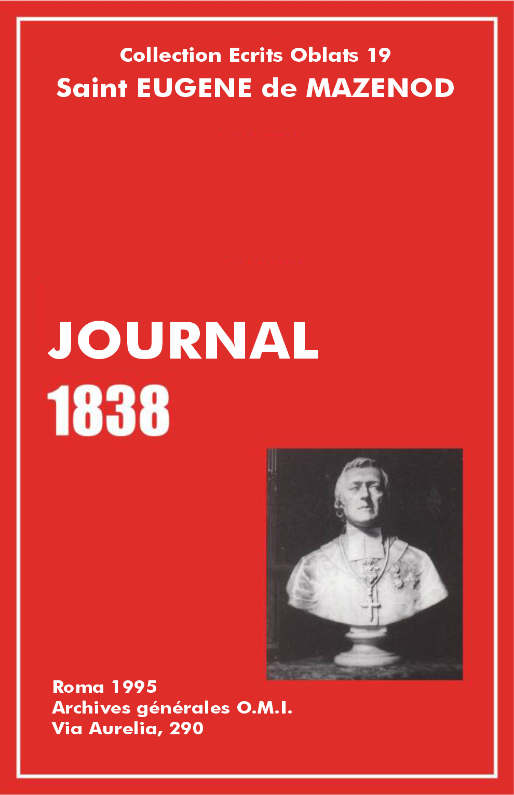

Éscrits Oblats: - 01 - 02 - 03 - 04 - 05 - 06 - 07 - 08 - 09 - 10 - 11 - 12 - 13 - 14 - 15 - 16 - 17 - 18 - 19 - 20 - 21 - 22

Vol.: XIX - Journal 1838
[p. 1] Le 11 janvier [1]
Arrivée des Dames de St-Michel de Tours [2]. Je suis allé les installer dans la maison du Refuge [3] qu'elles viennent occuper. Grand nombre de dames de l’œuvre étaient présentes. Celles du bureau, par un zèle admirable, s'étaient dévouées à garder depuis plus de 24 heures les pénitentes; elles avaient passé la nuit debout à parcourir les salles pour prévenir le désordre. J'ai relevé ce dévouement dans le petit discours qui a précédé le Veni Creator et l'entrée processionnelle des religieuses dans la maison.
La consolation de voir désormais cet établissement en des mains expérimentées a été tempérée par la connaissance que j'ai acquise en lisant leur acte d'obéissance, que ces religieuses demeurent sous la juridiction de mgr l'archevêque de Tours [4]. Les lettres de la supérieure aux dames de l’œuvre, loin d'exprimer cette clause, semblaient dire tout le contraire. J'ai témoigné ma surprise et mon mécontentement. Les belles paroles de mme la supérieure ne m'ont pas fait déposer mes inquiétudes à ce sujet. J'en parlerai plus au long à notre première entrevue.
Vol.: XIX - Journal 1838
Le 12 janvier
Lettre à monsieur l'abbé Drach [5] en réponse à la sienne et pour lui expliquer comment et pourquoi j'ai dû congédier les Dames du Bon Pasteur d'Angers qu'il me recommandait [6]. Lettre à monsieur l'avocat Tavernier [7]. Lettre au père procureur des Chartreux à Rome pour attester la misère de la mère du père Lucas [8], et lui annoncer que, ne pouvant pas consentir à placer ce père dans mon diocèse, je le céderais volontiers à mgr l'archevêque d'Avignon [9]. Monsieur le curé de Cucuron demande ce père pour vicaire.
Vol.: XIX - Journal 1838
Le 13 janvier
Centième visite des dames du bureau de l’œuvre du Refuge, cette fois c'est pour me rassurer sur les clauses inquiétantes de l'obédience des religieuses qu'elles ont appelées.
Vol.: XIX - Journal 1838
Le 14 janvier
Les messieurs de la Providence [10] sont venus me faire connaître le résultat de leur scrutin. Après que l'on avait pressenti monsieur l'archiprêtre et que celui-ci avait consenti à être nommé directeur de leur œuvre, la majorité des voix a été [p. 2] pour monsieur Court [11], curé de St-Martin. Cette grande inconvenance exige qu'à l'avenir je nomme moi-même ce directeur sans attendre la présentation de ces messieurs. Je le marque ici pour que l'on s'en souvienne. Lettre à mgr l'évêque d'Ajaccio [12].
Vol.: XIX - Journal 1838
Le 15 janvier
Visite des dames de la charité du Refuge. Assurance de régler le point de la dépendance de l'autorité ecclésiastique de Tours. La supérieure en fait son affaire dans le sens que je lui ai indiqué, c'est-à-dire qu'il ne sera loisible à personne de retirer une seule des religieuses qui viennent former notre communauté sans mon autorisation spéciale.
Vol.: XIX - Journal 1838
Le 16 janvier
Voyage à Cuges [13] par St-Menet où je me suis arrêté pour y voir le marquis et la marquise de Montgrand [14]. Arrivé à Cuges un peu avant la nuit. Réception solennelle. Le maire et l'adjoint en écharpe, compliments, réponse. A l'église, complimenté par le curé. Réponse. Tout selon le cérémonial.
Vol.: XIX - Journal 1838
Le 17 janvier
Messe. Instruction avant la communion, grand recueillement, larmes d'hommes qui depuis 47 ans n'avaient pas mis les pieds à l'église. La communion a duré une heure. C'était la seconde pour tout ce monde. Tous restés à la confirmation. Nouvelle instruction jugée nécessaire dans la circonstance. Grand nombre d'hommes et de femmes âgées ont reçu ce sacrement. L'après-dîner point de vêpres. J'ai béni la croix. Procession par un temps très froid. Toute la population. Adieux du missionnaire [15] pas très bien. Après la bénédiction, le curé monte en chaire, quelques bonnes choses mêlées de certaines inconvenances. Du trône où j'étais placé, j'ai repris la parole pour terminer la fête, exprimer mes sentiments et donner quelques avis salutaires pour persévérer que le missionnaire avait oubliés. Grand contentement dans l'assemblée.
Vol.: XIX - Journal 1838
Le 18 janvier
Retour à Marseille, fatigué de la journée d'hier et de mon irritation de poitrine.
Vol.: XIX - Journal 1838
Le 19 janvier
Au lit tout le jour.
Vol.: XIX - Journal 1838
Le 20 janvier
Lettres sur lettres. Visites, etc. Défaut à la promesse d'aller dire la sainte messe à la Mission de France [16]. Point de messe. Toux.
Vol.: XIX - Journal 1838
Le 21 janvier
Défaut à la promesse d'aller dire la messe à la maison du Choléra [17]. Dite à ma petite chapelle non sans peine. Regret de n'avoir pas pu couronner la fin de la retraite de ces dames qui ont été très édifiantes. [p. 3] Lettre à monsieur Abeille, de Saint-Chamas, renfermant ma procuration pour vendre à monsieur de Lavison ma créance sur la mineure Trinquier au prix de 2 000 francs, sur lesquels monsieur de Lavison garderait 200 francs pour remettre à cette femme et lui, m. Abeille, en retiendrait autant pour ses peines [18].
Vol.: XIX - Journal 1838
Le 22 et le 23
Malade par suite de mon voyage à Cuges. Diverses lettres reçues de nos missions [19]. Celle de Bédarrides, admirable dès les premiers jours. Celle de St-Michel-les-Portes, diocèse de Grenoble, désirée et bien commencée. Celle de Mens va bien aussi. Les curés de La Mure et de Vizille en sont si contents qu'ils en demandent pour leurs paroisses. Le p. Guigues [20] voudrait supprimer la cérémonie de l'entrée et la procession de pénitence. Il faut bien s'en garder. Ce père avoue que n'étant pas persuadé de leur utilité, il les fait sans esprit de foi. Voilà le mal! Qu'il aie moins de confiance dans ses propres lumières, qu'il entre dans l'esprit qui les a inspirées et ensuite fait approuver par l’église et il en éprouvera les bons effets comme on l'éprouve ailleurs. Mission à Montmiral, mission à Rovon, mission à St-Just-de-Claix, mission à Devençais. Une de ces missions est dans le diocèse de Valence. C'est notre coup d'essai dans ce nouveau champ; il a réussi.
Tristes renseignements sur le p. Pélissier [21]. Il est d'une apathie sans égale, ne sachant se gêner en rien, n'embrassant les œuvres de zèle que lorsqu'elles sont de son goût et ne lui causent aucune peine; d'une susceptibilité sans égale; gardant de l'humeur pour une parole insignifiante et ne remplissant ses devoirs comme curé que d'une manière très imparfaite. C'est un corps mort, il n'a ni zèle, ni conscience; il s'engraisse, voilà tout: c'est à qui s'en plaindra davantage. Le frère Blanc [22] n'a pas les dispositions nécessaires pour faire ses seconds vœux. J'ai écrit qu'on se débarrasse de lui. J'autorise qu'on fasse la boiserie du chœur intérieur de l'Osier. Je consens à fournir 150 francs au diacre qui veut venir au noviciat [23].
Vol.: XIX - Journal 1838
Le 24 janvier
Conférence avec madame Aymes. Elle met des conditions à la cession de son fils au père qu'il sera difficile que celui-ci adopte. Lettre à monsieur Aymes pour lui parler de cette affaire et lui donner diverses commissions [24].
Vol.: XIX - Journal 1838
Le 26 janvier
Lettre à monsieur Caire [25]. Je ne lui cache pas sur quoi était fondée ma conviction sur les torts que je lui ai reprochés à Paris. Je lui nomme sans façon monsieur Maurel et monsieur Ricaud [26], ses beaux-frères, comme très coupables dans la voie d'opposition qu'ils ont suivie jusqu'à présent. Audience comme tous les autres jours pour toutes les personnes qui se présentent. [p. 4]
Vol.: XIX - Journal 1838
Le 27 janvier
Affaires courantes. Lettres reçues et écrites. Rien de remarquable. J'ai oublié, entre autres choses, de marquer la lettre à Guibert [27] par laquelle je l'autorise à employer encore cette année le traitement des directeurs de son séminaire pour compléter le mobilier et autres dépenses de Vico. Je lui recommande le père Rolleri [28] qui s'ennuie seul dans cette maison de campagne dépourvue de livres, etc. Je préfère qu'il l'appelle à Ajaccio pour y attendre le moment d'accompagner le père Albini dans quelque mission qu'il faut pourtant que ce père donne dans le courant de l'année [29]. A ce sujet je fais sentir au père Guibert l'inconséquence qu'il y aurait aux yeux de la congrégation de garder le père Albini, si utile pour les missions, au grand séminaire, sous prétexte qu'on a besoin d'un directeur de plus, et qu'ensuite lui, supérieur, quittât la maison pour aller faire un voyage à Gênes et à Rome. Je l'autorise à admettre le frère Pierre [30] à la première profession. Je pense qu'il convient de détourner mgr l'évêque d'Ajaccio de la pensée de nommer les pères Moreau [31] et Albini chanoines honoraires de sa cathédrale. On le passe pour les supérieurs des grands séminaires, parce que cela tient aux statuts des Chapitres, ce n'est pas la même chose pour d'autres.
Vol.: XIX - Journal 1838
Le 28 janvier
Lettre du docteur d'Astros [32] pour me faire part de la mort de mme Castellane sa sœur. Réponse sur-le-champ à ce vrai ami. Lettre du père Courtès [33]. Il propose d'adjoindre quelqu'un au père Bernard [34] pour la retraite que nous devons donner au faubourg à Aix. Son idée serait d'y appeler monsieur Cuynat [35]. La chose n'est pas faisable. Il revient à satiété sur les regrets de ne point faire des missions dans le diocèse d'Aix. Pourquoi ne les demande-t-on pas à temps?
Vol.: XIX - Journal 1838
Le 29 janvier
Messe au premier monastère de la Visitation. Présenté monsieur Cailhol [36], vicaire général, pour me remplacer lorsque je serai empêché dans les affaires de la supériorité. Visites aux conseillers municipaux et autres. On a remis à mon oncle le mandement qui fut fait le 4 juin 1755 par mon grand-oncle [37], à l'occasion de la mort de mgr de Belsunce [38] dont il était le vicaire général, comme il le fut du Chapitre et de mgr de Belloy [39]. Cette pièce a fait le plus grand plaisir à mon oncle. C'est l'éloge de l'évêque défunt dont il rappelle toutes les actions.
Vol.: XIX - Journal 1838
Le 30 janvier
Messe pour notre bon Suzanne [40] Explication à monsieur Martin Lazare [41] sur sa position avec moi. Ce méchant prêtre en appelait à ma bonté. J'ai dû lui dire que je l'aimais très sincèrement, au point que je m'estimerais heureux de lui faire du bien, mais que ma confiance je ne pouvais la lui accorder. Mme Auban est venue pour expliquer sa conduite à l'égard du Refuge. Elle paraît avoir moins de tort qu'on ne le supposait. Les fabriciens de St-Victor tiennent à accepter la démission de m. Matalian [42].
Vol.: XIX - Journal 1838
Le 31 janvier
M. Barthélemi m'a remis un petit office dont se servait mgr de Belsunce; il m'a donné aussi un ouvrage curieux, c'est un Breviarium Massiliense, imprimé à Lyon en 1526 où se trouvent les offices de nos saints, et des litanies où leurs noms sont invoqués.
Vol.: XIX - Journal 1838
[P. 5] Le 1er février
Lettre de mgr l'évêque d'Ajaccio. Recollement [43].
Lettre du p. Albini. Il désire savoir si j'approuve qu'il reste au séminaire. Sa lettre est pleine des sentiments de sa haute vertu. J'avais répondu d'avance dans ma lettre au p. Guibert.
Fabri, conseiller à la Cour, était venu l'autre jour pour me parler du désir qu'il aurait de marier sa belle-soeur à quelqu'un de mon choix. J'ai proposé ce parti à monsieur Roux-Bonnecorse [44].
Lettre à mgr l'évêque de Fréjus pour lui demander son agrément à l'entrée de monsieur Feraud dans la congrégation [45].
Le maire [46] nous a envoyé la concession du terrain acheté dans le cimetière de la ville de Marseille pour y inhumer mon oncle le chevalier [47] au prix de 200 francs payés le 5 mars 1835. J'ai placé ce titre, coté n. 902, parmi mes papiers. Il nous reste la faculté de nous faire tous enterrer dans ce carré de terre.
Lettre de l'apostat Ailhaud [48]. Après mille tentatives et m'avoir fait parler par je ne sais combien de personnes, il m'écrit enfin pour me dire qu'il est prêt à se soumettre à tout ce que j'exigerai, fût-ce même à rentrer dans une communauté dont il n'a pas su assez apprécier le mérite et les avantages (je copie ses expressions), ne désirant rien tant que de réparer par des années de zèle et de dévouement au salut des âmes l'état d'inaction où il se trouve si je daigne adhérer à ses vœux (c'est toujours lui qui parle). Il espère de la grâce de Dieu qu'il ne me donnera jamais le moindre sujet de me repentir de ma clémence. Je ne sais vraiment s'il faut prendre cette lettre au sérieux, et si je dois la présenter au Conseil comme une demande en forme pour qu'il ait à statuer sur l'agrément ou le refus à donner à cette proposition.
Vol.: XIX - Journal 1838
Le 2 février
Le ministre de la guerre alloue cinquante francs par mois aux prêtres qui ont assisté les soldats malades à Ratonneau; c'est à peu près la moitié de ce que ces messieurs ont dépensé. Ainsi le ministre n'a pas été généreux. Ce sera à moi de suppléer au déficit, car il n'est pas juste que ces messieurs en soient pour leur argent [49].
Lettre à monsieur Caire pour le charger de retirer au ministère de l'Intérieur la messe de requiem de Cherubini que le ministre nous a allouée [50].
Je viens d'écrire la note suivante en marge de l'ordonnance du roi [51] qui permet la transcription de mes bulles d'évêque in partibus au Conseil d’État: "Il est bon de remarquer que je n'ai jamais reconnu la prétendue irrégularité de mon acceptation du titre d'évêque in partibus, faute d'avoir obtenu l'autorisation préalable du roi. Je n'ai cessé de soutenir le contraire. Tout ce que j'ai demandé c'est que l'on régularisât ce qui manquait aux formalités légales, requises pour la transcription des bulles au Conseil d’État". [p. 6]
Vol.: XIX - Journal 1838
Le 3 février
Le p. Tarrot [52], missionnaire des Iles Gambier, est venu prendre congé de moi. Il a la bonté de se charger de mes sceaux pour les faire retoucher à Paris. Je l'ai chargé de dire à mgr l'archevêque de Chalcédoine, supérieur général de sa congrégation [53], que je lui demande communication d'oeuvres et de mérites [54], comme je la leur accorde de notre part. Le p. Tarrot m'a témoigné beaucoup de plaisir à cette bonne idée.
Lettre au p. Mille [55]. Mon inquiétude sur son état. J'ai reçu hier une lettre de lui. Je voudrais qu'il suspendît ses missions pour reprendre haleine. S'il diffère jusqu'au carême, je ferai le sacrifice du p. Bernard qui m'est pourtant bien nécessaire à Marseille.
Vol.: XIX - Journal 1838
Le 4 février
Messe pontificale à St-Victor. Musique en grand orchestre de Cherubini. J'ai réconcilié monsieur Matalian [56] avec le curé en l'invitant à venir dîner avec moi au grand repas de cérémonie. Le curé, les fabriciens et surtout m. Matalian, ont été enchantés de cette mesure. Si je n'avais pas pris ce parti les rancunes auraient été interminables.
Lettre de mme Joséphine de Coriolis [57]. Elle soutient qu'elle a bien fait de donner tout son bien au Sacré-Coeur. Ses arguments ne m'ont pas persuadé. Grand bien fasse à ces Dames, mais gare aux pauvres familles qui sont les victimes de ces doctrines. Autrefois les couvents se contentaient d'une dot. Je consens qu'on donne davantage, mais les Dames du Sacré-Coeur veulent tout pour elles. C'est la charité bien entendue. Il ne restera plus aux familles de quoi soutenir leur rang. On ne pourra plus marier les filles de bonne maison selon leur naissance, faute d'avoir une dot suffisante; qu'importe, la tante germaine aura emporté 80 000 francs, elle revendiquera encore 15 ou 1800 francs qui peuvent lui advenir; mais on recevra des religieuses gratis, mais on n'exigera pas toute la pension de certaines pensionnaires qui se présentent, mais aussi on achètera des hôtels Biron [58], des châteaux de St-Joseph et autres petits manoirs de cette façon! Non, non, jamais je n'approuverai comme chose bonne que les familles soient ainsi dépouillées par des principes d'une stricte justice, mais d'une souveraine inconvenance.
Lettre à monsieur Fabri, conseiller à la Cour d'Aix, pour lui rendre compte de mes démarches auprès de la famille que j'avais en vue de lui proposer pour le mariage dont il m'avait parlé. [p. 7]
Vol.: XIX - Journal 1838
Le 5 février
J'ai réuni le Conseil de la congrégation pour délibérer sur plusieurs questions: 1- La demande de monsieur Ailhaud qui sollicite sa rentrée; 2- La demande de l'indigne Kotterer [59] qui réclame dispense tout en le tenant dehors; 3- L'admission du frère Daly [60] pour l'oblation. La demande de m. Ailhaud a été rejetée. Celle de l'indigne Kotterer agréée pour sa perte qui ne sera imputable qu'à lui. Le frère Daly a été admis et pourra faire son oblation le 17 de ce mois.
Vol.: XIX - Journal 1838
Le 6 février
Acte de mgr l'archevêque de Tours par lequel il s'oblige à ne rappeler les Religieuses du Refuge qu'avec mon consentement.
Lette de Magloire Giraud [61], pleine de sentiments.
Visite de monsieur Coustet [62], curé d'Istres, pour me presser de lui donner des missionnaires pour le carême. Refus. Engagement pour le carême de l'année prochaine. En avertir le père Courtès.
Vol.: XIX - Journal 1838
Le 7 février
Lettre du père Bermond [63]; il m'apprend un peu tard qu'il pense que le p. Mille a vraiment besoin de repos. Il est parti pour la mission de Banon [64], ma prompte réponse ne l'a donc plus trouvé au Laus.
Lettre du p. Courtès qui m'apprend la mort subite de la respectable madame de Bausset [65], amie et bienfaitrice insigne de la Mission. J'ai écrit sur-le-champ dans toutes nos maisons pour que chaque prêtre dise une messe pour le repos de son âme, que chaque oblat novice et frère fasse cinq communions à la même intention, et que les indulgences, bonnes œuvres, etc., lui soient spécialement appliquées pendant huit jours, indépendamment des droits qu'elle a à jamais à tous les mérites de la congrégation.
Seconde lettre du p. Courtès qui m'apprend que le testament de l'excellente mme de Bausset porte qu'il me sera payé dans le courant de l'année la somme de 20 000 francs. On n'ignore pas que cette charitable chrétienne et bonne amie a fourni pendant dix ans 600 francs par an pour l'éducation et l'entretien de nos pères. Le bon Dieu a dû récompenser déjà cette sainte âme, mais il est du devoir de la congrégation de lui conserver obligation éternelle. Quant à moi, je regrette sa perte avec la douleur que je ne puis m'empêcher d'éprouver quand des amis si chers et si précieux me sont enlevés; je ne sache pas qu'on remplace facilement de pareils trésors; à la place des amis vrais, sincères, vertueux, on ne retrouve que des indifférents. La bonne mme de Bausset aura une place chaque jour de ma vie dans mon memento des morts et je ne saurais tarir sur l'éloge de ses vertus et de ses bonnes qualités. [p. 8]
Vol.: XIX - Journal 1838
Le 8 février
Le père Bucchi [66], Augustin, qui s'était fait annoncer par une recommandation de mme Charpentier, amie de mme Sauvaire, s'est présenté chez moi avec une lettre de son général qui lui fait connaître le conseil qui lui a été donné par le St-Office: "Vous devriez vous présenter à l'Ordinaire du lieu, lui faire une loyale et sincère confession de toute votre conduite, sans lui cacher quoi que ce soit au sujet de votre affaire, lui manifester en même temps le désir de vous réconcilier avec le tribunal de la foi. Ensuite, l'Ordinaire penserait à tout le reste, à supposer qu'il ait les instructions opportunes pour cela" [67].
Vol.: XIX - Journal 1838
Le 9 février
Lettre du comte Tourini qui ne dissimule pas son humeur de ce que je n'ai pas voulu me mêler de ses différends d'intérêt avec monsieur de Lander, son oncle.
Lettre de monsieur Beraud, notaire à Aix, qui m'apprend que feu mme de Bausset m'a laissé 20 000 francs dans son testament, payables dans trois ans avec intérêt au cinq pour cent à dater du jour de son décès.
Vol.: XIX - Journal 1838
Le 10 février
Lettre du père Honorat [68]. Détails sur la mission de Bédarrides qu'il faut conserver tant ils sont touchants. On pourra ranger cette mission parmi les plus belles que nous ayons faites.
Lettre au curé du faubourg d'Aix [69] pour lui accorder le p. Bernard une semaine de plus à cause du bien que fait la retraite qu'il a commencée dimanche dernier.
Vol.: XIX - Journal 1838
Le 11 février
Lettre à monsieur Gay [70], curé de Cassis, pour l'inviter à venir s'entendre avec moi pour les arrangements à prendre dans la nouvelle position que je lui ai faite. Je lui exprime très clairement la volonté inébranlable où je suis d'étabir successivement la communauté du curé et des vicaires dans toutes les paroisses en commençant par la sienne. Je lui annonce les changements que j'ai faits pour qu'il trouve en arrivant toutes les facilités. [p. 9]
Vol.: XIX - Journal 1838
Le 11 février
Lettre de mgr l'Uditor Santissimo [71] au nom du pape pour approuver que j'aie prêté mon serment entre les mains de mon prédécesseur avant mon installation.
Lettre de mgr l'évêque de Fréjus. Il consent à m'accorder monsieur Feraud, mais il suppose que ce prêtre lui demandera la permission de quitter son diocèse; il lui donnera alors son excorporation, mais s'il venait à quitter le diocèse, il voudrait qu'il restât sous ma juridiction. Cela m'obligera à examiner le sujet de plus près.
Lettre de Joséphine de Coriolis. Elle veut pressentir nos dispositions pour un mariage. Monsieur le maréchal de B. [72] voudrait marier un de ses fils avec une demoiselle de qualité, bien élevée, ayant une fortune raisonnable. Ces jeunes gens sont si pieux que Joséphine les appelle des anges. Si cela nous convient pour Césarie [73], nous n'avons qu'à lui écrire.
Lettre à monsieur Beraud, notaire à Aix, pour accuser réception de la sienne.
Visite de monsieur Massot [74], premier adjoint faisant les fonctions de maire. On ne saurait être plus aimable ni dire les choses les plus honnêtes et les plus agréables mieux que ne l'a fait m. Massot dans cette visite. Il m'a dit de regarder comme faite l'affaire de St-Lazare [75], et m'a demandé en grâce de ne jamais me donner la peine d'aller chez lui quand j'aurais quelque chose à lui demander, qu'il se ferait un devoir de venir auprès de moi, et qu'il s'estimerait heureux de pouvoir me servir en toute rencontre, etc.
Vol.: XIX - Journal 1838
Le 12 février
Lettre à mon beau-frère pour lui donner connaissance de la proposition que m'a faite Joséphine de Coriolis.
Lettre de monsieur Abeille. Il a terminé l'affaire des Trinquier et de monsieur de Lavison. Celui-ci a acheté au prix de 1800 francs. Il n'a donné que cette somme parce qu'on a reconnu à l'arpentage qu'il y avait moins de terrain que les actes ne portent. Voir sa lettre du 10 février. Il refuse les 200 francs de gratification que je lui offrais. Il m'envoie deux lettres de change, une de 700 francs payable à vue par monsieur Durand, comissionnaire, rue nationale numéro 3. L'autre est une obligation de 945 francs, souscrite par m. Lavison et payable fin janvier 1839. Les 200 francs restants sont entre les mains de m. Abeille, qu'il se propose de me faire passer en ne se réservant que les frais de voyage de la jeune Trinquier et de son mari de St-Chamas à Marseille. [p. 10]
Vol.: XIX - Journal 1838
Le 13 février
J'ai reçu de Paris le complément du bel ornement donné par le roi. A cet envoi était joint le présent d'une magnifique étole pastorale brodée en or sur drap d'or, que le roi a jugé à propos de me faire sans que je la demandasse.
J'ai déposé dans mon portefeuille deux billets sur l'emprunt de St-Lazare qui sont signés en faveur de ma mère. Quand leurs numéros sortiront au sort, la somme me sera remise pour être employée à telle bonne œuvre qu'il me plaira.
Le Conseil municipal a adopté hier à l'unanimité les conclusions de la commission au sujet de la reconnaissance de la paroisse St-Lazare. Voilà une affaire d'une grande importance finie, en si peu de temps et d'un accord commun; il faut bien que notre grand patron s'en soit un peu mêlé du haut du ciel où il est toujours l'ami de son divin maître notre Seigneur.
Vol.: XIX - Journal 1838
Le 14 février
Mme Gérard et monsieur son fils sont venus eux-mêmes chez moi pour s'entendre sur les propositions du mariage projeté pour mademoiselle leur fille. J'ai écrit à monsieur R[oux] pour qu'il passe demain à l'évêché. Nous venons de traiter cette affaire à l'avantage commun.
Je suis allé visiter plusieurs de nos couvents. Voici ce que m'a raconté la prieure des Carmélites au sujet d'une de ses religieuses qui se distingue parmi les autres par ses vertus et surtout par son obéissance. Cette sainte fille avait depuis quelque temps mal à un doigt de la main, il fallait panser tous les jours cette plaie, faire des cataplasmes, etc. Un jour, la prieure lui dit, voilà telle fête qu'il faut célébrer, demain vous ferez une triste figure pour porter le cierge avec votre poupée au doigt, je vous ordonne de guérir. La bonne religieuse s'inclina, le lendemain matin elle vint avec simplicité montrer son doigt totalement guéri à la prieure qui resta stupéfaite de ce miracle. Ce ne fut pas la seule fois, une autre fois la même sœur étant malade, la prieure lui ordonna de guérir, elle obéit, ou pour mieux dire Dieu, en la guérissant, voulut donner cette preuve de l'amour qu'il porte à la vertu d'obéissance puisqu'il voulut en quelque sorte obéir lui-même dans la personne de cette sainte religieuse dont il écouta la prière. [p. 11]
Vol.: XIX - Journal 1838
Le 15 février
Monsieur le curé de St-Martin est mort subitement hier au soir. L'archidiacre de St-Martin, d'après le nouveau règlement que j'ai fait, entrera en possession de la juridiction curiale pendant tout le temps de la vacance de la paroisse.
J'ai appris ce soir qu'on se proposait de faire faire demain une promenade matinale au pauvre cadavre qui a été déposé dès ce soir à l'église. Je me suis hâté d'écrire pour défendre cette absurde pratique. Quand le Chapitre ira faire la levée du corps en le conduisant à la cathédrale alors on pourra sans inconvénient lui faire faire un tour dans la paroisse, mais le tirer de son catafalque pour aller courir et revenir ensuite le reposer encore sur le catafalque au risque que le pauvre mort ne soit pas encore rentré quand le Chapitre ira le chercher, c'est le comble du ridicule. J'ai dû m'y opposer, et je l'écris ici pour qu'on s'en souvienne à la mort de quelqu'autre curé, chanoine honoraire.
Visite de monsieur le prince de Mir [76] qui vient d'Alger où il a formé des établissements. Ce prince polonais m'a dit des choses fort intéressantes sur la colonie. Ses possessions sont à trois lieues d'Alger, mais il n'a pas la moindre crainte des Arabes qui le respectent lui et sa famille parce qu'ils sont témoins des exercices de piété qui se font chez lui. Ils le regardent comme un marabout chrétien, et lorsqu'on prie dans sa maison, les Arabes se tiennent debout et en silence par respect. Il a arboré sans façon la croix dans sa propriété. Jamais Arabe ne lui a fait le moindre outrage. Il m'a assuré qu'il n'y aurait rien de si facile que de gagner par la vertu tous ces infidèles qui ne sont éloignés de nous qu'à cause de l'impiété de nos colons.
Entrevue chez moi des deux familles Roux et Gérard. Le mariage de leurs enfants s'est conclu en ma présence. Tout me porte à croire que c'est le bon Dieu qui m'a amené à procurer une union si bien assortie.
Vol.: XIX - Journal 1838
Le 16 février
Enterrement de monsieur Court. J'ai assisté à la grand-messe et j'ai fait l'absoute.
M. Coursin est venu réclamer en faveur d'un monsieur Samat, donataire d'une grande quantité d'objets à Notre-Dame de la Garde. Il était riche alors, maintenant il est pauvre, vieux et infirme; il demande quelques secours à l'administration. [p. 12]
Vol.: XIX - Journal 1838
Le 18 février [77]
Douzième anniversaire de l'approbation de l'institut. J'ai dit la messe au Calvaire où les deux maisons de Marseille se trouvaient réunies. Le frère Daly, irlandais, a fait son oblation. Dix-huit profès étaient présents à la cérémonie et ont renouvelé leurs vœux. Le nombreux noviciat, joint aux prêtres et oblats de la société, remplissait la chapelle. La cérémonie a été très belle et très touchante. Quoiqu'encore souffrant, je n'ai pu m'empêcher d'adresser la parole à la nombreuse assemblée. Je me suis retiré après avoir passé au réfectoire, fort édifié et très content.
M. Gabriel, conseiller de préfecture, est venu au nom d'un grand nombre de personnes me demander la cure de St-Martin pour monsieur Léautier [78]. J'ai répondu comme je le devais en établissant les principes en cette matière.
M. Damico [79] a écrit à monsieur Cailhol qu'il partait pour sa paroisse pour ne pas donner à penser qu'il prolonge son séjour à Marseille à dessein. Mais il charge spécialement mon grand vicaire de me dire qu'il est tout disposé à accepter le poste que je lui offrirais si j'ai l'intention de le rappeler dans le diocèse.
Lettre de Leblanc [80]. Il a vu Chappuis [81] qui était bien chagrin de m'avoir manqué à Marseille. Il s'est bien dédommagé de cette peine, me dit Leblanc, en causant beaucoup de notre père et bienfaiteur commun. Croyez bien que les souvenirs de nos anciennes relations sont bien chers puisque après tant d'années ils sont encore vivants dans notre cœur. La lettre de trois pages est toute pleine de bons sentiments. Vous êtes aujourd'hui, me dit ce cher enfant, ce que vous avez été à toutes les époques de votre ministère, tel que je vous ai vu quand j'avais le bonheur de ne pas vous quitter d'un instant, sachant à merveille concilier la condescendance de la charité avec la rigueur du devoir. Ce témoignage m'est cher. Il part d'un bon prêtre que j'estime autant que je l'ai toujours aimé et il remonte aux premières années de mon ministère alors que ce bon Leblanc était au nombre des plus fervents disciples de ma belle congrégation de la jeunesse chrétienne dont il fut un des premiers. [p. 13]
Lettre du p. Guigues du 13 février. Il revient sur ce qu'il m'avait dit du frère Blanc, s'excusant sur ce qu'il m'avait parlé d'après le sentiment du p. Pélissier qui n'est guère indulgent lorsqu'il s'agit des autres. Ce frère est tel qu'il me parut au Laus. Le p. Guigues me demande de nouveau une réponse sur le sujet d'après les nouvelles informations qu'il me donne. Il m'envoie une copie de la relation de la mission de Mens pour la faire passer au noviciat. Ils l'ont transcrite sur leur registre. Il ne faut pas que j'oublie d'écrire à Lumières d'en faire autant pour leurs missions du Comtat [82].
Vol.: XIX - Journal 1838
Le 19 février
Messe au grand catéchisme dont monsieur Coulin est le directeur. Il y avait au moins 250 demoiselles ou dames qui ont communié. C'est une très belle institution que j'ai encouragée dès le principe et que j'encourage parce que je sais combien on peut profiter des instructions qui s'y font. J'aurais voulu seulement qu'on ne pût pas accuser le directeur de s'être trop bien arrangé, tout en faisant beaucoup valoir son désintéressement [83].
Lettre de monsieur Puissant, secrétaire particulier de monsieur le garde des Sceaux. Il m'envoie l'ordonnance de la nomination de mon oncle au canonicat de l'ordre de St-Denis. La lettre de monsieur le garde des Sceaux à mon oncle est très bien. Enfin cette affaire est terminée, je sais ce qu'il m'en a coûté de peine pour la mener à bien [84].
Lettre du p. Bernard. Sa retraite-mission d'Aix va à merveille.
Lettre du p. Guibert. Détails très circonstanciés sur le p. Reinaud et le p. Rolleri [85]. Ils sont aussi pénibles que sont consolants ceux qu'il me donne sur les pères Albini, Moreau et Mouchel. Il insiste pour faire le voyage de Gênes et de Rome. Je lui écris de me renvoyer le p. Rolleri tout en lui reprochant de ne l'avoir pas assez soigné. Ce pauvre jeune père paraît être fort imparfait, mais aussi n'était-ce pas au-dessus de son âge d'être abandonné dans la solitude de Vico? Lettre au p. Guibert; prompte réponse à sa lettre d'aujourd'hui.
Lettre de monsieur Girolet, curé de Goult. Il me prie instamment d'écrire à mgr l'archevêque d'Avignon pour obtenir de lui qu'il puisse entrer dans la congrégation. Il convient que telle a toujours été sa vocation, mais qu'il n'avait pas osé la mettre à jour jusqu'à présent à cause de la pénurie de prêtres. Dans ma position il est impossible [p. 14] que j'écrive à mgr l'archevêque. C'est à monsieur Girolet de forcer la porte [86].
Lettre de Vignolo pour nous apprendre la maladie de notre bon Eugène [87]. C'est une pleurésie qui ne présente pas des symptômes très alarmants. Je n'en suis pas moins en peine et en très grande peine. Aussi je viens d'écrire aux abbesses des Capucines et des Clairistes et à la prieure des Carmélites pour qu'elles se mettent tout de suite en prières. Ma confiance est là; mais je ne puis me défendre d'un grand sentiment d'inquiétude.
Vol.: XIX - Journal 1838
Le 20 février
Lettre de Vignolo, rassurante sur la maladie d'Eugène. Le bon Dieu a eu égard aux prières prévues de nos saintes filles et du sacrifice que mon oncle et moi avons offert ce matin pour lui.
Lettre de mgr l'évêque de Fréjus qui m'accorde monsieur Feraud, prêtre de son diocèse. Il me demande en échange monsieur Michel.
Lettre à Louis [88] pour lui apprendre la maladie de son frère.
Voyage à Aix pour y visiter mgr l'archevêque et y régler quelques affaires. Cette visite à mgr l'archevêque n'est pas de rigueur. Ma lettre, lorsque je fus institué, suffisait, mais les autres évêques comprovinciaux s'étant soumis à cette formalité, faute de réfléchir aux conséquences d'une fausse démarche, j'ai cru devoir en faire autant, connaissant la susceptibilité de ce prélat qui était déjà sur le qui-vive avec moi, et de fort mauvaise humeur contre mon oncle [89].
Vol.: XIX - Journal 1838
Le 21 février
J'ai visité à Aix le nouveau cimetière où je voudrais faire bâtir une chapelle pour y déposer les restes vénérables de mes deux familles. La dépense que j'aurais faite à l'Enclos [90] sera plus convenablement placée dans cette terre sainte. Mon intention serait d'employer cinq ou six mille francs au plus à cet édifice. Je consentirais qu'on y présentât tous les morts qu'on enterrerait dans le cimetière et qu'on y célébrât la messe quand la dévotion l'inspirerait, dans la confiance que les âmes des nôtres en profiteraient. J'en ferais une condition de cette concession [91]. J'aurai besoin de m'aboucher avec le maire d'Aix avant de mettre la main à l’œuvre. [p. 15]
Vol.: XIX - Journal 1838
Le 22 février
Monsieur le curé du Saint-Esprit [92] m'a invité grâcieusement à dire la messe dans son église à l'occasion de l'exposition du saint sacrement. J'ai été fort édifié du grand nombre de communions. Je suis revenu le soir dans son église pour assister au sermon et donner la bénédiction.
Hier, j'avais assisté au sermon de notre père Bernard au faubourg et j'ai donné la bénédiction après. La retraite que ce père donne dans cette paroisse produit de grands fruits. Elle sera terminée dimanche par la communion générale que mgr l'archevêque viendra donner à ce bon peuple.
Vol.: XIX - Journal 1838
Le 23 février
Visite à monsieur le procureur général. Il m'a fait hautement profession d'attachement à la ville d'Aix qu'il avait pourtant bien mal traitée dans une circonstance solennelle. Il tient pour que le canal [93] passe à Aix. A propos de ce canal, il m'apprit qu'on venait de découvrir les travaux que les Romains avaient faits pour amener sous terre les eaux de Jouques et de Peyrolles à Aix. C'est la solution d'un problème par rapport au cas présent, puisque la plus grande difficulté que l'on objecte est la crainte de ne pouvoir pas réussir dans la percée que nécessite le projet de canal passant par Aix.
Visites reçues et faites.
Vol.: XIX - Journal 1838
Le 24 février
Palais de Justice que je ne connaissais pas encore. Je l'ai visité de haut en bas. Belle cour, petites salles, mauvaise construction, il faudra déjà refaire la toiture. M. le président Verger m'invita à dîner pour lundi. Je l'en remercie, devant partir demain.
Convention pour la vente de notre propriété du Tholonet [94] provenant de mme veuve David. Tout est conclu ce matin avec monsieur Courtès, père. Il paiera mille écus au vendeur, jouira de la propriété sa vie durant, sa fille en jouira après lui, et la propriété nous reviendra à la mort du dernier survivant. Ce soir tout est changé. Les femmes se sont montées [95] sur le danger et les difficultés de cette acquisition. Le père ne peut résister à ces criailleries, il rompt le marché.
Il pleut tout le jour, impossible de partir. Renvoyé à demain.
Vol.: XIX - Journal 1838
Le 25 février
Messe de bonne heure à la Mission. Départ pour Marseille.
Lettre de Dassy [96] qui m'annonce que la lithographie de mon portrait sera faite par m. Belliard au prix de 500 francs. Elle aura 13 1/2 de haut sur 10 pouces de large. Il a retouché lui-même le portrait original. Je lui ai écrit pour approuver ce qu'il a fait. [p. 16]
Vol.: XIX - Journal 1838
Le 26 février
Passage de monsieur de la Villegontier à Marseille. Lettre du p. Guibert, pleine d'éloges du p. Albini et du p. Moreau et du p. Mouchel [97]. Je me trompe de date. Lettre postérieure à celle-là. Elle traite des rapports avec mgr l'évêque d'Ajaccio qui se montre toujours plus incapable de gouverner son diocèse. Ce prélat a peu de reconnaissance pour ce que l'on fait pour lui. Il sera bon d'être sur ses gardes. La lettre de Guibert est convaincante. Elle est datée du 17 février. La précédente est du 2.
Lettre de D. Giacomo Semeria écrite de Rome. Plein de reconnaisance pour ce que j'ai fait en faveur de son neveu [98]; il m'offre ses services.
Visite du p. Bucchi. Il m'a de nouveau entretenu de son affaire et il m'a remis un mémoire très étendu pour m'en faire connaître tous les détails. Il m'a remis en même temps une lettre qu'il écrivait au p. Olivieri pour lui faire connaître les propos indignes qu'avait tenus ici un certain médecin romain nommé Freduzzi qui allait disant partout que le pape était un bonhomme, qu'il se laissait influencer en tout par son valet de chambre par qui toutes les affaires même les plus secrètes passaient, que cet indigne sujet lui faisait changer les résolutions les plus graves prises avec le secrétaire d’État ou tout autre cardinal en place; que le pape passait son temps à des bouffonneries, s'amusant à jeter de l'eau sur ceux de sa Cour en se promenant dans son jardin. Ces indignités répétées étant propres à diminuer le respect qui est dû au Saint-Père, ce médecin qui les débite devrait être dénoncé à Rome comme un homme fort suspect. Il n'a pas manqué de s'aboucher ici avec les réfugiés romains les plus acharnés contre le Saint-Siège [99].
Vol.: XIX - Journal 1838
Le 27 février
Lettre de l'évêque de Gap [100] qui demande des secours. C'est la plus extraordinaire qu'il soit possible d'écrire. Je souhaite qu'il réussisse, mais j'en doute.
Lettre de monsieur le cardinal Pacca, affectueuse et toute amicale comme de coutume.
M. Bonnafoux [101], nouveau chanoine, m'a remis une précieuse relique de saint Lazare pour le Chapitre. C'est une phalange d'un doigt du pied. Il tenait cette relique de m. Boyer, chanoine honoraire de Malte, qui l'avait apportée de cette île où le pied du saint se trouvait. C'est le même qui nous donna une portion considérable de ce pied qu'il avait aussi rapporté de Malte. L'une et l'autre de ces reliques sont dûment authentiquées par mgr l'archevêque-évêque de Malte.
Vol.: XIX - Journal 1838
Le 28 février
J'ai fait la cérémonie des cendres à la cathédrale. Le soir j'ai présidé la belle réunion de St-Martin. L'église était pleine parce qu'on avait su que je devais y aller. Aussi lorsque je fus placé sur le trône, [p. 17] j'adressai la parole à l'assemblée, ce qui fit impression et plaisir. C'était bien le cas, car le scandale de la dissipation est à son comble en ce jour à Marseille, il était donc juste de s'entretenir paternellement avec les bons qui se réunissaient à leur premier pasteur pour offrir à Dieu une compensation et une réparation si édifiante.
Vol.: XIX - Journal 1838
Le 1er mars
Le ministre de la guerre ayant égard à mes observations a accordé la petite somme que je lui avais demandée pour défrayer les prêtres de leur dépense à Ratonneau. Si ce ministre est aimable, le ministère des cultes ne l'est guère car il vient encore de me faire une nouvelle anicroche pour les réparations demandées [102].
J'ai oublié de marquer que j'avais écrit d'Aix au roi pour le remercier de la nomination que, sur ma demande, il avait faite de mon oncle au canonicat rétribué de St-Denis.
Lettre de monsieur Allard [103] pour m'annoncer que monsieur Chabrier, supérieur du petit séminaire d'Embrun, veut entrer dans la congrégation. M. Girolet, curé de Goult, diocèse d'Avignon, m'en avait écrit autant, mais comment se flatter de l'obtenir de mgr l'archevêque d'Avignon!
Vol.: XIX - Journal 1838
Le 2 mars
Visite de monsieur Hoffman [104], missionnaire des Etats-Unis qui se rend à Rome. Ce qu'il nous a dit des diocèses de cette partie de l'Amérique n'est rien moins que consolant. L'indifférence des catholiques est à son comble, et le pays est dévasté par un nombre infini de mauvais prêtres de toutes les nations. Les moines du Mexique et des autres parties de l'Amérique espagnole, qui ont été chassés de leur patrie, sont presque tous indignes de leur vocation. Rien de plus commun que de voir des prêtres, vivant publiquement avec des femmes, ne pas cacher leur honte et faisant parade de leurs enfants. M. Hoffman ne veut plus retourner dans ce pays où il ne voit pas pouvoir faire grand bien. L'amour de l'étude l'appelle à se faire Bénédictin au Mont Cassin ou à Subiaco. Il est porteur de papiers peu favorables à mgr l'évêque de Detroit [105]. On conseille à ce prélat de rester à Rome et de ne plus retourner dans un diocèse que, au dire de m. Hoffman, il n'a pas su gouverner. C'est ce même évêque de Detroit qui a fait le choix malheureux de monsieur Reynaud pour son grand vicaire. Nous avons eu raison d'empêcher que ce monsieur ne quêtât à Marseille pour le seul diocèse de Detroit au détriment de l’œuvre générale de la foi. C'est bien assez de près de [p. 18] quatre-vingt-dix mille francs que mgr l'évêque de Detroit avait obtenu de la société Léopoldine [106] sans nul profit pour l'Amérique. Cette somme fut prêtée à un Irlandais, ami de l'évêque qui l'emporta.
Tout ce que monsieur Hoffman nous a raconté des Etats-Unis nous a bien prouvé que j'avais été bien inspiré quand j'avais résisté au désir de quelques-uns des nôtres qui brûlaient du désir d'aller dans ce pays. Je savais ce qu'il en était quand je me prononçais si énergiquement contre ce projet qui faisait honneur à leur zèle mais qui n'était pas dirigé par l'expérience. On fera toujours bien de s'en rapporter à la sagesse de ceux que le Seigneur a placés à la tête de la famille. Quand le moment sera venu, le Maître de la Vigne saura bien le dire. En attendant, que la congrégation se perfectionne et se multiplie.
Monsieur Maurel [107], curé désigné de St-Martin, m'a écrit une lettre touchante pour me détourner de la résolution de le nommer à St-Martin. Sa lettre, quoique très bien faite, ne m'a pas persuadé à changer de résolution. Je lui ai répondu très poliment, mais en lui annonçant qu'il n'avait qu'à se résigner et à concourir par son adhésion à mes vues, à me faciliter l'accomplissement de mes devoirs dans le poste pénible où je suis placé.
Vol.: XIX - Journal 1838
Le 3 mars
Lettre de mgr Garibaldi [108], internonce, pour me demander des informations sur monsieur Escalon et autres aspirants à la place de consul général de Rome. Réponse favorable pour monsieur Escalon sur le témoignage de monsieur Buret.
Visite de monsieur Deguerry [109] qui vient prêcher le carême à St-Ferréol. Je lui souhaite d'autres succès que ceux qu'il attend de son talent. Il ressemble bien au portrait que j'avais vu de lui sur les quais à Paris: attitude fière, coiffure originale, parole hautaine, etc.
Vol.: XIX - Journal 1838
Le 4 mars
J'ai confirmé le bon frère Luigi [110], notre cher oblat.
Lettre à mgr le cardinal Pacca [111] sur l'affaire du religieux Bucchi en lui envoyant le mémoire qu'il m'a remis.
Lettre à mgr le cardinal Falconieri [112] d'amitié et de reproches, en lui faisant compliment sur son élévation au cardinalat. [p. 19]
Vol.: XIX - Journal 1838
Le 5 mars
Lettre de mgr l'évêque de Digne, édifiante, pour m'accuser réception de ma lettre pastorale [113].
Lettre de monsieur Massot, remplissant en absence les fonctions de maire de Marseille, en réponse à la mienne au sujet du projet de construction d'une nouvelle cathédrale. Il lui semble convenable d'attendre le retour de monsieur Consolat pour qu'il le soumette lui-même au Conseil municipal, la proposition gagnera à être présentée par le premier magistrat de la ville.
Les dames de l’œuvre du Refuge sont venues pour me faire souscrire pour leur nouvelle bâtisse. Je n'ai pu leur offrir que 100 francs et c'est encore beaucoup à raison des charges qui pèsent sur moi. Je leur ai fait sentir que cette mince souscription en tête de leur liste pourrait être d'un mauvais exemple et encourager les autres à donner peu. Elles ne le sentaient que trop, aussi elles m'ont proposé de marquer mille, tout en ne donnant que cent. Ma délicatesse s'est refusée à ce parti. On a cherché d'autres moyens, enfin on s'est arrêté à celui-ci qui est que ces dames marqueront elles-mêmes sans me consulter ce qu'elles jugeront à propos, sauf à moi de reviser leur compte et de ne donner que ce que je puis. Cela est bien entendu ainsi. Je l'écris pour que si je venais à mourir, on sût bien que je persiste à ne vouloir donner à cette œuvre que cent francs. Ces dames le savent, mais d'autres pourraient l'ignorer.
Vol.: XIX - Journal 1838
Le 6 mars
Arrivée du père Rolleri. Il n'a pas réussi en Corse. Nous l'emploierons au service des Italiens à Marseille où je le fixe dans la maison du Calvaire. Lettre du p. Guibert. Lettre du p. Reinaud.
Vol.: XIX - Journal 1838
Le 7 mars
Lettre au père Guibert sur le projet de faire faire des missions par de jeunes prêtres formés dans son séminaire, qui devront exercer ce ministère sous la direction du père Albini, et quelques autres de nos pères quand il y en aura. Je désapprouve ce projet.
J'ai remis aujourd'hui mes lettres pour monsieur le cardinal Pacca et le cardinal Falconieri à un monsieur qui part par le bateau de demain; monsieur le docteur Hoffman était venu les prendre pendant que j'étais au Refuge.
Je suis allé dire la messe ce matin à la grande réunion des dames du Bon Pasteur [114]. Jamais il n'y avait [115] eu un si grand nombre de dames, j'en ai reçu une dizaine de nouvelles. Après la réception, nous sommes montés dans le grand parloir, où la secrétaire a rendu compte de la situation de la maison et annoncé les projets d'agrandissement. On m'a beaucoup remercié de l'intérêt que je prenais à l’œuvre. Je les avais louées de mon côté dans mon instruction [p. 20] tout en leur apprenant dans quel esprit elles devaient s'acquitter des devoirs de charité qu'elles exerçaient envers ces pauvres filles pénitentes. Je suis vraiment édifié de leur zèle.
Visite de monsieur le capitaine Pegulu. Ce bon militaire était transporté de reconnaissance pour un petit service que j'ai été assez heureux pour lui rendre, grâce à la complaisance de monsieur le cardinal archevêque de Gênes [116] qui, sur ma prière, a envoyé des papiers que personne n'avait pu procurer à monsieur Pegulu, et qui étaient d'une extrême importance pour lui. La joie de ce militaire m'a fait éprouver un moment de vrai bonheur.
Vol.: XIX - Journal 1838
Le 8 mars
Lettre à mgr l'archevêque de Bordeaux [117] en réponse à celle qui m'a été remise de lui par monsieur Matthieu, fils d'un magistrat recommandable de Bordeaux. Ce monsieur est venu sans me laisser son adresse. Je la demande à mgr l'archevêque.
Vol.: XIX - Journal 1838
Le 9 mars
Lettre de mgr l'archevêque d'Avignon pour me demander pour trois ans encore la sœur Marcel [118]. Je pouvais difficilement lui refuser cette grâce, mais je ne sais trop comment les religieuses d'ici prendront cette résolution.
Assemblée chez moi de certains notables pour constituer l’œuvre de St-François Régis [119]. La séance a duré trois heures. Le règlement a été adopté, les sections ont été formées, le bureau a été nommé. Je me chargerai de voir les membres honoraires que nous avons adjoints à la commission active, tels que monsieur le président Reguis [120], monsieur l'adjoint Loubon, etc. Je verrai monsieur le maire pour tâcher d'obtenir une salle dans l'hôtel de ville pour tenir les séances ordinaires de l’œuvre.
Vol.: XIX - Journal 1838
Le 10 mars
Ordination dans la chapelle intérieure du Calvaire. Les frères Rouvière [121], Luigi et Daly ont été ordonnés, le premier sous-diacre et les deux autres pour la simple tonsure.
Confirmation d'une petite malade. En lui faisant dire ses prières, je me suis convaincu davantage combien on a tort de les enseigner en français aux enfants du peuple. Je l'ai fait remarquer aux prêtres qui m'accompagnaient. Cette pauvre petite ne savait ce qu'elle disait, c'était des mots dont on voyait qu'elle ne comprenait ni le sens ni la connexion. Nouvel argument pour prouver que j'ai eu raison de prendre la mesure que j'ai prise pour St-Laurent [122].
Arrivée inopinée de mgr Tharin [123], ancien évêque de Strasbourg, mon ancien ami et condisciple. Il n'a pas voulu accepter un logement chez moi dans la crainte de me compromettre. Son intention est de passer quelque temps à Marseille pour y suivre l'impression [p. 21] d'un ouvrage qu'il vient de composer sur l'état de l’église de France. Il paraît qu'il n'épargne pas le gouvernement dans cet opuscule; s'il veut être juste, il peut remonter jusqu'au temps de la Restauration pour formuler ses plaintes. Il n'y a pas d'évêque qui ne pût lui fournir quelques pages à la charge du gouvernement de cette époque. Je l'ai dit à l'évêque qui n'en a pas disconvenu.
Confirmation d'une autre pauvre malade dans son lit de mort.
Vol.: XIX - Journal 1838
Le 11 mars
Messe à St-Théodore à l'occasion du sacrilège [124]. Visite à mgr Tharin.
Lettre de monsieur Beraud notaire, portant: "Si vous voulez remplir à l'encontre de monsieur de Lubières toutes les formalités prescrites par les lois, vous avez droit de lui demander la délivrance du legs qui vous a été fait par mme de Bausset (art. 1014 du code civil) et de prendre dans les six mois du décès inscription sur les biens de la succession pour conserver le bénéfice de la séparation des patrimoines (2111 c.c.). Votre sagesse décidera, monseigneur, si la position de monsieur de Lubières ne vous dispense pas de remplir ces formalités". Aix, 10 mars 1838.
J'aviserai en prenant conseil de mon avocat.
Vol.: XIX - Journal 1838
Le 12 mars
Arrivée du prêtre annoncé depuis plusieurs mois. Voyez [p. 211], 30 septembre [125]. Je l'ai autorisé à se présenter au Calvaire pour s'y préparer à commencer son noviciat.
Visites à tous les membres honoraires marquants de l’œuvre de St-François Régis.
L'ancien évêque de Strasbourg a dîné chez moi hier.
Vol.: XIX - Journal 1838
Le 13 mars
Visite régulière au premier monastère de la Visitation. J'y ai employé toute la journée sans pouvoir la finir. Je suis très satisfait de l'esprit de cette communauté Elle a prodigieusement gagné depuis la dernière visite. Il m'est prouvé que la pierre d'achoppement était cette ancienne supérieure qui laissait tout aller, que l'on regardait comme un oracle dehors, et qui était mieux connue par quelques filles de bon sens que j'ai su apprécier, que j'ai fait arriver à la tête de la maison et qui en ont remonté l'esprit. Soit dit en toute paix de la pauvre madame Remuzat [126].
Vol.: XIX - Journal 1838
Le 14 mars
Continuation de la visite. J'étais décidé de la faire comme il faut. Elle a duré encore tout le jour. Je l'ai terminée, m'étant conformé ponctuellement à ce qui est écrit. Aussi les religieuses sont dans les transports du bonheur et de la reconnaissance, et moi très consolé de tout le bien qui a été consolidé. Il n'y a vraiment qu'un cœur dans cette communauté. [p. 22]
Vol.: XIX - Journal 1838
Le 15 mars
Je n'ai pas voulu donner une lettre de recommandation à ce certain frère venu du Cap Corse pour cela. Je ne veux pas me rendre caution de ses originalités. Mgr l'évêque d'Ajaccio jugera lui-même et se décidera.
Lettre du père Guibert. Il croit son voyage en Italie utile aux intérêts du diocèse et à sa santé.
Vol.: XIX - Journal 1838
Le 16 mars
Visite à monsieur Martin, aumônier de l'hôtel de ville. Je lui ai fait goûter ma nomination d'un survivant [127]. Les audiences m'accablent.
Hier assemblée nombreuse de l’œuvre pour légitimer les mariages; je l'ai présidée, et l'on a fixé de commencer à se mettre en activité la semaine prochaine.
Vol.: XIX - Journal 1838
Le 17 mars
C'est à qui sera plus indiscret pour me demander des secours exhorbitants. Cinq personnes dans la matinée m'ont fatigué de leurs prétentions. M. Fabre [128], juge de paix et conseiller municipal, l'auteur d'une histoire de Marseille, composée dans un très mauvais esprit, a eu la patience d'attendre son tour, pour entrer chez moi, plus d'une heure et demie. Cette constance lui a valu une réception très polie, il a paru en être content car il m'a offert gracieusement ses services en toute occasion.
Monsieur de St-Priest m'a apporté une lettre de recommandation de monsieur Gaultier de Claubry [129]. Il m'a beaucoup pressé de recommander l'Encyclopédie dont il est l'éditeur. Il ne s'agit rien moins que de 52 volumes, sans autre garantie que quelques noms d'auteurs. Il y a de quoi y penser.
Plaisante histoire. Pendant que je tenais conseil, on m'annonce un message très pressé. Je fais entrer. Quel est mon étonnement de recevoir par l'entremise d'un Juif, une lettre de l'envoyé d'Abd El-Kader [130] qui me fait passer un billet de cinq cents francs pour les indigents de ma communion. J'ai hésité un instant, mais après un moment de réflexion, j'ai dit au porteur de la lettre que lorsqu'il s'agit de secourir les pauvres on doit recevoir, de quelque part que vienne le don. J'ai fait répondre par un de mes grands-vicaires une lettre polie à monsieur l'envoyé d'Abd El-Kader. Son commissionnaire m'a appris qu'il avait fait le même don à l’œuvre de bienfaisance. Je présume que cet acte de philanthropie est inspiré par la politique, et qu'il veut ainsi populariser son maître en France où bien des gens ne l'aiment guère. [p. 23]
Mme Emerigon [131], cette même dame qui à l'arrivée de mon oncle dans le diocèse souleva la populace pour insulter à la mesure qu'il avait prise contre les Missionnaires, dits de France, qui donna un coup de poing sur le sein d'une femme qui ne voulait pas crier comme elle et procura ainsi à cette malheureuse un cancer qui la conduit au tombeau, cette dame a laissé par son testament au supérieur des Missionnaires de Provence 2 000 messes pour le repos de son âme à la charge par lui de les distribuer aux missionnaires ses confrères. Rapprochez ce fait de cet autre plus ancien qui m'étonna dans son temps, c'est-à-dire, de voir une certaine mme Moulinard qui s'était établie prophétesse pour annoncer la mort prochaine de mon oncle, qui était le point central de tous les révoltés qui se groupèrent aussi autour de monsieur Rodet à l'époque où ce prêtre insensé, bravant les ordres de l'évêque, voulut rester dans la ville pour y fomenter l'opposition que lui et les siens avaient suscitée, préférant s'abstenir de dire la messe plutôt que de lâcher prise, de voir, dis-je, cette mme Moulinard me choisir pour son confesseur, et finir par être assistée par moi à la mort. Ces faits se rattachent à des choses que je n'ai pas le temps de raconter, mais qui doivent couvrir de honte les prêtres qu'on appelait les Missionnaires de France, dont un était monsieur Rodet, leur supérieur, esprit faible qui donna dans toutes les illusions d'un illuminisme insensé, soit en écrivant des mains de papier [132] sous la dictée de la prophétesse Moulinard, soit en étant la dupe d'un certain prêtre Joseph [133] qui fut mis à l'inquisition à Rome, et qui dut rétracter ses infâmes erreurs pour en sortir même avec la protection de monsieur l'ambassadeur de France. Un autre était ce Marius Aubert [134] qu'il a fallu interdire etiam a sacris dans le diocèse pour des fautes énormes, un autre, ce monsieur... [135], curé aujourd'hui de Carpentras, dont il faudrait demander des nouvelles à mgr l'archevêque d'Avignon, un autre un certain monsieur Bart, homme grossier contre lequel pourtant je n'ai pas d'autres mauvais renseignements que d'avoir été cause que toutes les soi-disant pénitentes du Refuge étaient folles de lui parce qu'il les tutoyait et s'occupait trop d'elles sans doute à bonne fin. C'étaient ces hommes qui tant que mon oncle ne fut pas institué canoniquement entretinrent, ou pour mieux dire fomentèrent une opposition qui protégeait leur folle prétention qui était d'obtenir pour évêque de Marseille l'abbé de Janson [136] à l'exclusion de mon oncle à qui ils faisaient l'outrage de le redouter à cause de moi; ils firent même courir une pétition pour la couvrir de signatures et en imposer ainsi au gouvernement. Cette manoeuvre indigne ne réussit pas, mais la volonté n'en était pas moins manifeste. [p. 24]
Vol.: XIX - Journal 1838
Le 18 mars
Lettre à mgr de Fréjus pour lui apprendre que monsieur l'abbé Feraud n'a pas été jugé propre pour la congrégation, que je lui ai conseillé de se rendre auprès de lui pour recevoir une destination proportionnée à ses forces.
Clôture de l'octave du sacrilège à St-Théodore. Je suis allé à St-Théodore, j'ai assisté aux vêpres en cappa magna au trône. Après le sermon, je suis allé prendre l'aube et la chape à la sacristie pendant que l'on chantait des cantiques à l'église et qu'on distribuait les cierges pour la procession. Rentré au chœur, j'ai porté le saint sacrement à la procession, donné la bénédiction; nous avons terminé la belle cérémonie par le Te Deum. Comme de raison, je me suis tenu debout tout le temps de vêpres. L'officiant s'était assis, je lui ai fait dire que l'évêque étant debout il ne pouvait rester assis. Cela va sans dire; mais ce qui m'a choqué, c'est que tous les hommes qui encombraient le sanctuaire, en nous voyant respectueusement debout, n'ont pas eu l'idée de nous imiter à une petite exception près. L'année passée, ceux qui ne s'assirent pas étaient assez nombreux. Je n'oublierai pas l'an prochain de faire signifier à tous les hommes, qui voudront se placer dans le sanctuaire, d'y prendre l'attitude convenable. On ne s'assied pas devant le roi, restât-on toute la soirée chez lui. On pourra bien le faire pour notre Seigneur pendant les 3/4 d'heures que durent les vêpres.
Veille de saint Joseph. Crainte d'oubli dans les permissions que je donnerai pour le carême de l'année prochaine, si Dieu me prête vie, je réserverai [137] l'abstinence pour la veille de saint Joseph et pour celle de l'Annonciation. Cela se pratique ainsi en Italie.
Vol.: XIX - Journal 1838
Le 19 mars
Messe aux Sœurs de la Retraite [138] pour les consoler un peu des inquiétudes que leur donnent les enquêtes de mgr l'archevêque d'Aix qui ne s'est pas si tôt rassuré que moi sur le compte de ces bonnes filles. Je crois foncièrement qu'elles travaillent à faire leur salut avec un peu trop de crainte et de tremblement à la vérité, mais sans que leur doctrine soit positivement erronée. Le caractère dur et sévère de leur fondateur, monsieur Receveur, s'est perpétué par le respect qu'inspire sa mémoire au père Charles Bretenière [139] qui ne serait pas porté naturellement à ce travers; parmi les prêtres médiocres qui se sont succédé ou remplacés [p. 25] dans cette société mixte, il s'en est trouvé qui ont fait vraiment des extravagances, j'aurais personnellement quelques reproches à faire soit au p. Charles, soit à quelques autres, mais après mûre réflexion je ne pense pas qu'il faille les troubler dans la possession de l'existence qu'ils se sont faite dans mon diocèse. Les surveiller me paraît pourtant non seulement une chose sage, mais un devoir. Cette seule crainte les empêchera de trop pencher vers le système qu'ils voient exciter notre sollicitude. Après la messe à laquelle j'ai fait faire la première communion à deux grands garçons que j'ai aussi confirmés, je suis monté dans la salle du travail où la communauté s'est assemblée. Je me suis retiré pour me rendre à la cathédrale où je devais assister pontificalement à la grand-messe et aux vêpres. Après dîner, confirmation d'abord d'un petit malade, paroisse St-Laurent, puis de trois autres à l'hôpital, où j'ai rendu la visite du jour de l'an à l'administration.
Entretien avec l'abbé B. qui voudrait, de concert avec quelques autres bons prêtres, se constituer en petite société à l'instar de celle du p. Clorivière [140].
L'oeuvre des Savoyards désire que j'écrive à mgr l'évêque d'Aoste [141] pour le prévenir de son établissement, et le prier d'écrire à ses curés d'adresser les enfants qui viennent ramoner à monsieur Caire, leur directeur.
Vol.: XIX - Journal 1838
Le 20 mars
Assistance à un sermon de charité dans l'église de St-Ferréol. C'est monsieur Deguerry qui l'a prêché. Visite aux Dames de St-Thomas et aux orphelines du choléra. Rien n'est touchant comme de voir les soins qui sont donnés dans cette maison à 140 enfants dont un certain nombre savent à peine parler.
Vol.: XIX - Journal 1838
Le 21 mars
J'ai eu une conférence très longue avec le p. Telmon [142]; je dois dire que j'ai été fort content de la manière franche et respectueuse avec laquelle il s'est ouvert à moi sur tout ce qu'on a pu lui reprocher. Son caractère est difficile, il a des formes acerbes, mais il entend raison sur beaucoup de choses et avec la douceur on pourra le gagner. Cependant ses préventions contre le père [143] sont trop fortement enracinées pour espérer qu'il en revienne si tôt. C'est un sujet avec lequel il faut patienter et qu'il ne faut pas brusquer.
[p. 26] Lettre du p. Dassy [144], il me fait passer par la diligence son petit ouvrage sur Notre-Dame de l'Osier.
La Gazette [145] n'a pas tout dit en parlant de ce militaire retiré du service que j'ai confirmé l'autre jour sur son lit de mort. Ce brave homme qui avait été décoré de la croix de la légion d'honneur pour un fait d'arme glorieux était tombé dans la misère. Devenu malade, il a fait appeler un prêtre, mais la Gazette ne dit pas que ce prêtre trouva chez lui quatre hommes, membres d'une société républicaine, dont il faisait partie qui lui déclarèrent que s'il revoyait le prêtre, ils lui retireraient tout secours et l'abandonneraient. Le malade, prévenu de la grâce du bon Dieu, leur répondit avec fermeté qu'ils ne lui parlaient pas comme d'honnêtes gens, que s'ils l'abandonnaient la providence aurait soin de lui. C'est ce qui n'a pas manqué. J'ai été touché jusqu'aux larmes des sentiments de cet homme et comme de raison, avec le sacrement de confirmation, je lui ai apporté les secours que sa confiance méritait dont la Gazette a bien fait de ne pas parler, en citant ceux que lui a fournis le prêtre.
Vol.: XIX - Journal 1838
Le 22 mars
Lettre à mgr l'archevêque d'Avignon en date du 20 pour lui faire connaître la difficulté que j'éprouve pour lui céder encore pour trois ans la sœur Marcel; je lui glisse que monsieur Girolet, curé de Goult, me demande d'entrer au noviciat, et que peut-être monsieur Agniel [146] ne pourra pas continuer, et rentrera dans le diocèse.
J'ai souscrit à l'Encyclopédie du XIXe siècle, ou pour mieux dire, j'ai pris deux actions en faveur de cette entreprise aux conditions qui seront exprimées dans l'acte.
J'ai été témoin aujourd'hui d'un miracle de la grâce, qui m'a prouvé quelle assistance Dieu accorde au pasteur dans l'exercice de sa charge de toute charité. J'ai été appelé auprès d'une pauvre femme, la plus malheureuse créature du monde qui, depuis son enfance perclue de la moitié du corps, n'avait que les mains de libres pour travailler. Seule dans le monde, elle n'était pas sortie de sa chambre depuis plus de quarante ans. A ces infirmités s'était jointe depuis plus de vingt ans une surdité absolue à ne pouvoir rien entendre. Dans cet état déplorable, elle avait dû fournir de quoi vivre à un vieux père qui ne pouvait rien faire. Son application l'avait rendue une ouvrière des plus extraordinaires, mais ceux qui la faisaient travailler, abusant de sa position, ne lui payaient pas la valeur de ses labeurs. Accablée de ses souffrances, personne ne l'aidait à les supporter, aussi livrée à elle-même et aux instigations du démon, dépourvue d'ailleurs d'instruction religieuse, elle livra son âme au désespoir, c'est-à-dire à une haine raisonnée de Dieu qu'elle regardait comme injuste de l'avoir créée pour la laisser si misérable. De mauvais voisins lui fournirent dans un temps la facilité de lire des livres impies, cette pauvre créature en perdit totalement la foi. Elle a vécu ainsi jusqu'à l'âge de 55 ans. Il n'y a pas longtemps que la maison où elle habitait étant devenue la proie des flammes, on la sauva de l'incendie par le plus grand des hasards en la transportant au travers du feu. Elle fut déposée alors dans la maison d'une brave femme qui lui prodigua tous les soins que la charité chrétienne peut inspirer. La pauvre percluse était reconnaisante, mais la bonne chrétienne ne put jamais l'amener à des pensées de résignation ni de foi. Elle se contentait de lui faire la confidence de ses peines, mais toujours accompagnée du sentiment de rancune contre Dieu qui la rendait, à son dire, si malheureuse. Si Dieu existait, lui disait-elle, il me traiterait en père, il m'enverrait un ange pour me soulager dans l'excès de mes maux. Qui le croirait? Dieu lui envoya cet ange dans la personne de melle Lautard [147] et de melle Martin qui vont à la recherche de toutes les misères pour les soulager.
Ces anges terrestres parvinrent on ne sait comment jusqu'à elle, et elles commencèrent ce qu'il était réservé à mon sublime ministère d'achever; ces demoiselles adoucirent par leur présence l'amertume de ce cœur ulcéré, et elles fournirent un fort argument à la bonne hôtesse pour combattre les pensées de désespoir de la pauvre infirme. Tout devait être extraordinaire dans la conduite de la providence à l'égard de cette âme; l'hôtesse vint avant-hier me présenter un petit mousse, son filleul, pour que je le confirmasse avant qu'il se mît en mer. Elle est inspirée, pendant la messe, de me parler de son infirme. Elle le fit avant que je sortisse de la chapelle. J'envoyais ma bénédiction et quelques paroles de consolation à cette malheureuse. L'hôtesse (madame Eron) était parvenue à se faire comprendre par le mouvement de ses lèvres, elle ne manqua pas de faire ma commission. Quelle fut sa surprise en voyant cette pauvre fille se mettre à pleurer en comprenant ce que je lui faisais dire. L'évêque viendrait-il me voir? Oui sans doute lui répondit mme Eron. Oh, ce n'est pas possible! Vous le verrez, reprit mme Eron. Elle arrivait chez moi ce matin pour me demander en grâce de faire cet acte de charité. J'y consens sans peine, le regardant comme un devoir de justice que m'impose ma charge. Je conviens de l'heure, et à point nommé je me transportai chez [p. 28] la malade. J'y trouve mme Eron et melle Lautard qui m'annoncent qu'elles avaient cru la voir mourir quelques instants auparavant. Ma présence la ranime, j'essaie de me faire comprendre par des signes, elle me fixe avec un sourire gracieux, mais elle ne répond à aucun des signes expressifs de confiance en Dieu et de repentir que je lui répétai à plusieurs reprises. Je fus effrayé de cette insensibilité, elle me parla pourtant de ses maux et de ses malheurs. Je me mis à écrire ce que je voulais lui faire comprendre. Elle le lut avec difficulté et ne parut pas en être touchée. J'insistai et je priai sur elle en lui imposant la main sur la tête. Au grand étonnement de ces bonnes chrétiennes qui lui prodiguaient leurs soins, pour la première fois depuis qu'elles ne cessaient de lui parler de Dieu, elle éleva les yeux au ciel et joignit ses mains en forme de suppliante. Cette invocation nous combla de joie, nous la regardâmes avec raison comme une victoire sur l'enfer qui nous présageait la conversion de cette âme ulcérée que Dieu semblait vouloir appeler à la onzième heure. Le vicaire de la paroisse arriva sur ces entrefaites, je le présentai à la malade comme un autre moi-même pour lui inspirer la confiance nécessaire pour achever l’œuvre que je voyais commencée. Je donnai mes instructions à ce vicaire, et après avoir béni la malade je me retirai.
Vol.: XIX - Journal 1838
Le 23 mars
Lettre de mgr l'évêque de Nancy [148]. Il m'apprend que ses affaires loin de s'arranger sont sur le point de produire un esclandre. Il se persuade bien à tort que le gouvernement a peur de lui. Il insiste sur des points qu'il eût été prudent de dissimuler; bref il n'a rien fait de ce que je lui avais conseillé. Je plains son pauvre diocèse.
Lettre du père Courtès [149]. Il me rend son compte trimestriel; il me semble que ce sont des comptes faits à plaisir. Son père est revenu sur l'affaire de la propriété du Tholonet. Sans autre forme de procès, quoique la convention eût été rompue par les criailleries des femmes de sa maison, il a porté chez ma mère les 3000 francs qu'il aurait dû compter pour entrer en possession du bien. C'est une singulière manière de traiter les affaires. Passe, puisqu'après tout ce marché nous convient pour nos successeurs, qui rentreront en possession de la propriété à la mort des usufruitiers; ils sont plus jeunes que moi, je traite donc pour ceux qui viendront après moi.
Je suis retourné aujourd'hui chez la pauvre malade; elle s'était confessée et venait de recevoir le saint viatique. Je l'ai confirmée. N'y a-t-il pas de quoi s'écrier au miracle de la miséricorde de Dieu? [p. 29]
Vol.: XIX - Journal 1838
Le 24 mars
Lettre à monsieur Girolet. Je lui fais part de la lettre que j'ai écrite à mgr l'archevêque d'Avignon au sujet de son désir d'entrer en congrégation.
Vol.: XIX - Journal 1838
Le 25 mars
Profession d'une Capucine. Discours absurde de l'abbé Féraud [150], vicaire à St-Vincent-de-Paul. Visite aux Clairistes. Sermon du père Desmazure.
Lettre de la sœur Jean-Baptiste. Elle désirerait que j'appelasse son ordre dans le diocèse, ou au pis que je la fisse revenir. Elle voudrait aussi que je lui procurasse la pension de retraite à laquelle elle prétend avoir droit à raison de ses services dans les hôpitaux. Elle invoque à cet effet la loi du 18 février 1809.
Vol.: XIX - Journal 1838
Le 26 mars
Bénédiction de la statue de la sainte Vierge qui sera substituée à la Major à cette horrible sculpture que le bon monsieur Bernard avait fait faire. C'est dans l'enceinte du Calvaire qu'a eu lieu cette bénédiction; j'étais assisté de mes deux grands-vicaires, de m. l'archiprêtre, de messieurs Jeancard, Lander et Marc Cailhol [151]. L'enceinte et toutes les fenêtres voisines étaient remplies de monde, les congrégations de la paroisse et la Major sous leurs bannières et quelques autres paroissiens se sont rendus processionnellement sur la place au pied de la montagne. La statue était placée devant la porte du sépulcre, couverte jusqu'au moment où je suis arrivé. Le clergé est venu me prendre dans la sacristie de l'église et je me suis rendu en chape et mitre au fauteuil qui m'était préparé. J'ai fait la bénédiction d'après le pontifical, et je me suis retiré. La musique militaire a joué une charmante symphonie, on a tiré les boîtes [152] et la procession s'est mise en marche pour se rendre à la cathédrale en parcourant toutes les rues de la paroisse qui étaient élégamment pavoisées. Toutes les maisons étaient tapissées et des guirlandes de feuillages, des festons et toutes sortes d'ornements donnaient à toutes les rues un air de fête qui réjouissait; aussi les travaux ont-ils été suspendus dans une grande partie de la ville, et la foule se pressait à parcourir toutes les rues par où devait passer la procession. Des chaises bordaient la haie des deux côtés et tous ceux qui les occupaient, ainsi que les nombreux promeneurs, étaient revêtus de leurs habits de fête. C'est ainsi que les choses se passent à Marseille. Tout n'est pas dévotion, mais une cérémonie religieuse est toujours pour ce peuple un spectacle intéressant.
Lettre de monsieur Chanuel [153] qui propose de faire le Christ du Calvaire au relevé. Il prétend que par ce procédé le Christ ne coûterait que de 2 à 3 000 francs. Outre que l'on n'a pas recueilli cette somme, on sait que cet artiste célèbre, estimant beaucoup ses ouvrages, n'est jamais content du prix convenu.
Vol.: XIX - Journal 1838
Le 27 mars
Sermon à St-Ferréol pour les orphelines. Le prédicateur [154], tout célèbre qu'il est, a été au-dessous de son sujet. Les gens qui jugent par le débit ne l'auront pas jugé ainsi. Il n'en était que plus ridicule [p. 30] de mettre tant d'emphase pour si peu de chose.
Le curé de Roquevaire est venu me dénoncer un crime horrible commis dans son église. Le fait n'a été malheureusement que trop prouvé et trop connu. Toute la ville de Roquevaire s'en est émue. Les coupables ont été interrogés et convaincus devant le juge du pays, on les a transférés dans les prisons de Marseille. Ils seront jugés en police correctionnelle comme coupables d'un crime tout à la fois contraire à la morale publique et au respect dû au lieu saint. En attendant, j'ai dû interdire l'église et comme ce temple est consacré, je serai obligé d'aller moi-même le réconcilier selon les règles prescrites pour les églises consacrées qui ont été polluées. Celle-ci l'a été à la lettre au moment même de la bénédiction du saint sacrement. Quelque pénible que soit pour moi le voyage, je me ferai un devoir de faire la cérémonie, croyant ainsi m'acquitter d'une obligation de ma charge et entrer dans l'esprit de l’église qui veut imprimer une plus grande horreur pour des profanations qui révoltent tout à la fois la nature et la foi.
Lettre du p. Honorat qui demande du secours pour la mission qu'il va commencer la semaine prochaine. Il prétend que le père Ricard [155] est trop souffrant pour se mettre en campagne, et que le curé de Goult doit comme de raison rentrer dans sa paroisse aux approches de Pâques, mais je soupçonne qu'il y a plus de défaut de volonté que de mal dans le père Ricard qui se plaît trop aux affaires extérieures de la maison, qui se plaît à construire et à démolir, qui manque en un mot de zèle, tout bon prêtre et bon enfant qu'il est.
Vol.: XIX - Journal 1838
Le 28 mars
Le p. Bucchi s'est empressé de venir me dire qu'il s'était trompé dans sa lettre au père Olivieri en nommant Fredduzzi le médecin qu'il dénonçait, qu'il a reconnu qu'il s'appelait Renucci. Je le ferai savoir à monsieur le cardinal Pacca.
Le p. Bucchi me dit aussi qu'un certain avocat Zaccaroni, nom supposé d'un prêtre, chef ici de tous les Romagnoli [156] chassés des Etats du pape, doit connaître le prêtre suspecté par la police de connivence avec Porracciani. Il est certain qu'il lui fut recommandé quand il vint de Corse. Cet indigne Zaccaroni lui fit des reproches quand il lui vit reprendre la soutane, en se servant d'expressions indignes. Zaccaroni avait été condamné à mort pour avoir fait la révolution à Imola. Il [p. 31] est associé à monsieur Roussier, rue des Dominicains, n. 16, et est très bien reçu par le consul de Rome.
Le frère directeur des Frères est venu m'apprendre qu'on s'est mis à faire des levées d'enfants à la Charité pour faire des mousses de ces pauvres enfants. Ce qu'il y a de vraiment déplorable c'est qu'on en prend un bon nombre avant qu'ils aient fait leur première communion. Il est de mon devoir de pasteur de réclamer hautement contre cet horrible abus de pouvoir [157].
Le p. Guibert est arrivé d'hier d'Ajaccio. Il se rend à Rome pour les affaires du diocèse.
Vol.: XIX - Journal 1838
Le 29 mars
Lettre d'Eugène [158], assez rassurante sur sa santé.
Monsieur de Saint-Priest est venu prendre congé de moi. Je lui ai remis une procuration pour monsieur le duc d'Almazan, soit pour inscrire mon nom sur le catalogue des actionnaires de l'Encyclopédie du XIXe siècle, soit pour me représenter au besoin dans l'assemblée des actionnaires qui a lieu tous les ans.
Le p. Guibert m'a exposé les besoins de sa maison. Il est certain qu'alors que le p. Albini rentrera dans l'exercice des missions, il faudra au séminaire un directeur de plus. J'espère être en mesure d'y pourvoir au commencement de l'année scolaire.
Vol.: XIX - Journal 1838
Le 30 mars
Fête de la résurrection de saint Lazare. Assistance à la grand-messe. Réunion des prédicateurs de carême à dîner: le p. Desmazure [159], m. Deguerry, m. Molinier et le père Ambroise, gardien [160] de Chambéry. Monsieur Molinier et m. Deguerry se sont mis à parler entre eux comme des prédicateurs de profession ou pour mieux dire en gens de métier. Je déteste ce genre et j'ai interrompu la conversation en m'adressant au bon père Desmasures et au père Ambroise qui ne se disaient pas qu'un tel et un tel n'avaient pas pu obtenir la première chaire dans tel pays. O sainte Parole de Dieu! Tu n'es pas toujours annoncée par des apôtres!
Lettre à monsieur le cardinal Pacca pour lui recommander le p. Guibert, et rectifier un nom mal indiqué dans la lettre du père Bucchi au père Olivieri.
Vol.: XIX - Journal 1838
Le 31 mars
Ordination au petit séminaire. Un seul prêtre, deux diacres, et un sous-diacre. Le père Rouvière était un des diacres.
Départ pour Roquevaire. En passant par Aubagne, j'ai laissé à monsieur le curé [161] la lettre qui lui apprenait que St-Pierre était érigé en succursale. Ce bon homme respectera davantage l'ordonnance royale que la volonté consciencieuse du premier pasteur. Quand il sut que je voulais démembrer cette partie de sa paroisse qui était [p. 32] depuis trop longtemps en souffrance, il disait fièrement qu'il voulait transmettre à ses successeurs la paroisse dans la même intégralité qu'il l'avait reçue de ses prédécesseurs. Cette prétention ridicule, fondée sans doute sur l'institution divine des curés, me fit sourire de pitié. L'opposition de la fabrique d'Aubagne, celle plus prononcée encore du Conseil municipal ne me déconcertèrent pas. J'étais tellement convaincu que le besoin des âmes exigeait que j'érigeasse cette nouvelle paroisse que, lors même que le gouvernement n'aurait pas secondé mes vues, j'étais décidé à établir un prêtre à St-Pierre avec juridiction curiale et soustraire tout ce quartier à la juridiction du curé d'Aubagne qui ne pouvait pas en faire le service par lui-même et qui ne le faisait faire que très imparfaitement par ses vicaires. Le gouvernement m'a épargné le souci de procurer un traitement à ce prêtre en reconnaissant la justesse de mes vues et en érigeant légalement la succursale.
Vol.: XIX - Journal 1838
Le 1er avril
Ce n'était pas un poisson d'avril qui m'attendait à Roquevaire, mais bien le plus grand outrage que j'aie reçu de ma vie. L'infâme François Vèze [162] me le réservait dans le répertoire de ses affreuses diatribes, de ses atroces calomnies contre tous ceux qui ont le malheur de lui faire quelque bien. Cet homme, ou pour mieux l'appeler ce monstre, désespéré de ce que tout ce que son mauvais cœur lui avait inspiré de faire et de dire contre toutes les personnes de ma maison et spécialement contre mes grands vicaires ne lui valait pas ce qu'il espérait, de l'argent, pour qu'il cessât ses calomnies, médita d'autres projets tout aussi iniques. D'abord ayant vainement essayé d'obtenir une audience de moi pour essayer sans doute de toucher ma compassion trop facile à s'émouvoir, j'en conviens, prit un parti désespéré, c'est celui de m'insulter moi-même, moi son bienfaiteur, moi qui pour le mettre dans une bonne voie lorsqu'il fut congédié lui avais mis, comme il s'exprimait lui-même, le pain à la main et avais fait pour lui, à ce qu'il disait, plus que son père puisque je lui avais fourni une somme suffisante pour acheter un magasin de comestibles et se marier honnêtement, eh bien! ce misérable, perverti par les compagnies qu'il fréquenta en sortant de chez moi, mangea tout ce que je lui avais avancé et perdit tout sentiment d'honneur, de délicatesse et de religion. Il l'a bien prouvé depuis qu'il s'est montré tel qu'il est devenu, c'est-à-dire, le plus ingrat, le plus infâme, le plus abominable des hommes. Il cachait pourtant encore son jeu vis-à-vis de moi; tout en calomniant d'une [p. 33] manière atroce mes grands vicaires, il ne disait que du bien de moi. Le préfet [163] m'en rendit témoignage quand je fus porter plainte en faveur des personnes de ma maison qu'il outrageait. Hier encore, ma voiture s'étant arrêtée en me rendant à Roquevaire pour prendre monsieur Tempier qui m'attendait aux Clairistes, il eut l'audace de m'accoster, humblement il est vrai et chapeau bas, pour me supplier de l'écouter, je le repoussai en lui faisant les reproches qu'il méritait sur son indigne conduite à l'égard de mes grands vicaires, il s'excusa de son mieux et me dit que je pouvais lui procurer un moyen d'existence en le faisant placer aux douanes. J'avais pu le recommander quand je le croyais honnête, mais à présent, lui dis-je, je ne puis plus rien faire pour un homme qui s'est déshonoré aux yeux de toute la ville par les infâmes calomnies qu'il a répétées en tous lieux. J'en étais là de cette conversation forcée, quand m. Tempier arriva. Vèze fut obligé de se retirer pour le laisser monter en voiture, et quoiqu'il eût souvent menacé de lui briser bras et jambes, il ne proféra pas la moindre parole. Nous continuâmes notre route vers Roquevaire, où nous descendîmes chez le curé. Qui dirait que ce mauvais sujet, s'étant informé sur la route où j'allais, nous suivit et arriva le soir même à l'auberge où l'on avait remisé ma voiture. Ce matin il s'est présenté chez le curé, mon domestique m'avait averti de son arrivée et j'avais donné ordre qu'on le refusât. Il voulait absolument me voir. Irrité d'être repoussé, il fit des menaces, on n'en tint pas compte. La cérémonie pour laquelle je m'étais rendu à Roquevaire commença, c'était la réconciliation de l'église polluée publiquement une semaine auparavant. Toutes les prières extérieures étaient achevées sans que cet homme se fût montré. On l'aperçut bientôt dans l'église au milieu de la foule. Il méditait son coup, et m'attendait au passage étroit de l'entrée du sanctuaire. Je faisais l'aspersion prescrite par le pontifical autour des murs dans l'intérieur de l'église. Le sacristain passait devant moi, portant une cuvette remplie de l'eau bénite solennellement, mêlée de cendre et de vin. Voilà que ce misérable, sortant une clef de la poche de sa redingote, comme il aurait pu faire d'un poignard, la jetta dans la cuvette en disant à haute voix: voilà la clef que j'avais ou qu'il m'avait donnée pour entrer chez lui ce ..., en ajoutant une horrible injure à haute voix. Je fus moins ému, par la grâce de Dieu, que je le suis en écrivant cette déplorable histoire. Je continuai ma prière. Mais soit [p. 34] qu'en le voyant poser la main dans son sein pour prendre la clef on crût que c'était un poignard ou un pistolet, soit qu'on fût indigné de l'injure qu'il m'avait adressée, le peuple se souleva, on se saisit de lui et deux cents hommes l'entraînèrent hors de l'église et le poussèrent plutôt qu'ils ne le conduisirent en prison. Dans sa fureur il menaçait de tirer un coup de pistolet à ceux qui le pressaient de plus près, le fait est qu'il n'avait point d'armes, mais il n'est sortes d'abominations que son âme infernale ne proférât. De mon côté, j'avais à terminer la cérémonie en célébrant les saints mystères. Assis devant l'autel, tandis qu'on y plaçait les nappes et les chandeliers, je me demandais si mon émotion était telle que je dusse m'abstenir de monter à l'autel. J'avoue que je me trouvai si calme, si peu troublé, moins ému en un mot que je ne l'aurais été certainement si j'avais été témoin d'une pareille scène faite à un autre. Je consultais les sentiments de mon cœur. La grâce de Dieu m'assistait évidemment dans ce moment, je ne reconnus dans mon âme ni mouvement de haine ni désir de vengeance quelque juste qu'elle put être. Je sentis que je pouvais en toute sincérité prier pour ce méchant homme et je me levai pour commencer le saint sacrifice. J'ai eu le bonheur de le continuer dans les mêmes sentiments et, avec l'assistance de Dieu, je pus parler deux fois à la nombreuse assemblée sans qu'il parût en moi la moindre altération.
A peine rentré au presbytère, tout le monde vint m'exprimer sa douleur pour ce qui s'était passé, le maire, les adjoints, le juge de paix; celui-ci avait déjà interrogé le coupable qui avait suivi son système d'horrible calomnie. Je lui parlai comme il convenait à mon caractère, c'est-à-dire en exprimant des paroles de pardon. J'avouerai pourtant qu'il m'avait fallu une grâce d'état pour ne pas écraser ce misérable lorsque j'entendis son affreux propos. Mon impassibilité tient du prodige à mes yeux. Je prie Dieu qu'il me fasse supporter avec résignation intérieure ce nouveau genre d'humiliation. En quittant Roquevaire, je passai par St-Pierre et je parcourus à pied tout ce quartier et celui de Baudinard pour bien juger la localité et fixer la circonscription de la nouvelle paroisse.
Vol.: XIX - Journal 1838
Le 2 avril
Lettre à monsieur le cardinal Tadini, archevêque de Gênes, pour lui recommander le père Guibert qui passera par sa ville à son retour de Rome. [p. 35]
Vol.: XIX - Journal 1838
Le 3 avril
Lettre de l'administration des hospices en réponse à la mienne par laquelle je leur témoignais ma peine pour l'enlèvement des enfants avant qu'ils eussent fait leur première communion.
Réunion de tous les chefs de section du Rosaire [164] pour exciter leur zèle et combiner ce qu'il y a à faire pour le mois de mai.
Vol.: XIX - Journal 1838
Le 4 avril
Visite de monsieur Autran [165] pour me faire savoir le mariage de son fils avec mademoiselle de Montazan.
Visite de monsieur Tempié [166], avoué, pour me présenter sa femme, et se rappeler lui-même à mon souvenir. Il m'a touché par les sentiments qu'il exprimait au sujet des soins que j'ai pris de son enfance lorsqu'il était membre de la congrégation de la jeunesse que j'avais formée à Aix. Il n'a rien oublié de tout ce qui se faisait pour les maintenir sages et vertueux.
Visite de Monsieur Sylvestre, avoué aussi, et recteur de la confrérie dépendant de St-Lazare. Il est venu me demander de consentir à être nommé, comme l'ont été tous mes prédécesseurs, prieur de leur confrérie. On sait que ces frères ont le privilège d'enterrer les évêques de Marseille, ainsi que les chanoines de la cathédrale. A ce sujet on m'a rapporté que lorsqu'ils vinrent faire leur compliment à mgr de Belloy, ils ne manquèrent pas de lui rappeler ce beau privilège de leur confrérie, et le prélat répondit qu'il comptait les faire attendre longtemps, c'est ce qui est arrivé [167]. Moi qui ne me sens aucun pressentiment de longévité, je ne me vanterai pas quand ils viendront dimanche prochain me faire hommage de leur présidence. Qui sait si ce monstre de Vèze, après s'être déshonoré par ses calomnies qu'il ne craint pas de voir retomber sur lui, ne voudra pas les expier sur l'échafaud en m'assassinant au sortir de sa prison? Alors les bons pénitents de St-Lazare exerceraient la prérogative qu'ils revendiquent et dont ils n'ont pas joui depuis l'enterrement de mgr de Belsunce [168].
Vol.: XIX - Journal 1838
Le 5 avril
Accablement d'affaires comme tous les jours. Mme Lucas me présente la sécularisation de son fils le Chartreux accompagnée d'une lettre de lui. Il est retiré à Cucuron auprès de monsieur Raspaud [169].
Lettre du père Martin [170]. Il trouve qu'à Lumières on s'occupe trop de bâtisses et de procès. Il demande d'aller aider les pères du Laus dans quelqu'une de leurs missions.
Lettre du p. Albini. Il veut connaître mon intention par rapport à sa destination.
Lettre du p. Mille sur la mission de Banon (voir à la date du 22 mars), et sur celle de La Roche, date du 28 mars. Lettre du p. Guigues du 24 mars [171]. [p. 36]
Vol.: XIX - Journal 1838
Le 6 avril
Lettre au père Dassy, adressée au p. Guigues, pour répondre à leurs deux lettres à la fois [172].
Lettre à monsieur de Magallon [173] pour l'inviter à venir recevoir une communication importante pour sa famille.
Monsieur le procureur du roi est venu pour prendre auprès de moi quelques informations sur l'abominable affaire de l'infâme Vèze. Il m'a demandé si je voulais qu'on s'en tînt à l'attaquer comme ayant troublé et insulté un ministre de la religion dans ses fonctions, ou s'il fallait l'attaquer en diffamation. Il m'a exposé les avantages et les inconvénients des deux partis. Je n'hésitai pas à préférer le premier comme plus conforme à ma dignité et à la mansuétude du caractère dont je suis revêtu. Monsieur le procureur du roi reviendra lundi pour savoir ma détermination. C'est aujourd'hui qu'il interrogera l'indigne.
Vol.: XIX - Journal 1838
Le 7 avril
Messe à la maison des pauvres filles [174] pour la réunion des dames. Elles étaient très nombreuses. Je leur ai fait une instruction pour leur apprendre comment des dames chrétiennes devaient passer la semaine sainte. Compte rendu de l'état de la maison. Nous y avons aujourd'hui 140 enfants. Il ne faut pas oublier que le jour de l'installation de l’œuvre, il y a trois ans, j'en présentai 12 au petit nombre de dames qui commencèrent l’œuvre. Depuis lors nous avons bâti une maison spacieuse et, toute grande qu'elle est, elle ne suffit plus au nombre d'enfants qu'il faut réunir.
Visite à monsieur le directeur des postes pour lui demander la grâce d'un de ses employés. Je l'ai trouvé plongé dans une profonde douleur pour la perte d'une fille chérie. J'ai fait mon devoir de pasteur et me suis retiré très édifié des sentiments religieux dont ce père désolé était rempli.
Visite à monsieur de La Boulie [175], vice-président, pour l'informer de ce que valait cet indigne François Vèze qu'il doit juger en police correctionnelle.
Lettre au père Courtès sur la scène de Roquevaire et l'homme qui l'a faite. Lorsqu'on afficha des infamies sur les murs de la ville d'Aix et aux portes du palais archiépiscopal contre mgr l'archevêque d'Aix, je déplorai ce désordre, et il m'échappa de dire que j'avais du moins la consolation, au milieu de tant de tribulations, et de contradictions et de persécutions auxquelles j'avais été en butte pendant le cours de mon ministère, de n'avoir jamais été terni du côté des mœurs [176]. On m'avait accusé d'ambition, d'avarice, de hauteur, fierté, haine, que sais-je, de tous les antipodes de mes dispositions réelles et de mon caractère, mais jamais personne n'avait dit un mot qui pût porter la moindre atteinte à mes mœurs. Il n'y avait pas de quoi se vanter; mais enfin il en était ainsi. Mais voilà qu'à 56 ans il se rencontre un homme qui m'en donne pour mon reste. Désormais je ne pourrai jalouser personne. Saint Athanase et saint François de Sales n'oseraient plus se plaindre après ce qui m'arrive. j'ai [p. 37] de plus la consolation de pouvoir me dire que je suis ainsi payé de mes bienfaits. Ah! si jamais j'étais tenté de faire du bien aux hommes par compassion pour eux, et pour le plaisir de les rendre heureux, qu'aussitôt le souvenir de François Vèze se présente à mon esprit pour me détourner de donner ne fût-ce qu'une obole à qui que ce soit si ce n'est uniquement pour accomplir un devoir strict de charité chrétienne! L'ingratitude des monstres humains est sans doute commune, mais celui-ci me prouve qu'on peut même se servir du bienfait pour assassiner le bienfaiteur. Ainsi, que le cœur s'endurcisse sur les misères de l'humanité, qu'on ne s'arrête jamais au bonheur qu'une âme sensible peut espérer de rencontrer dans la pensée des infortunes qu'elle soulage, qu'on ne compte jamais non plus sur la reconnaissance de ceux à qui l'on fait du bien, à qui l'on met le pain à la main, que l'on arrache au désespoir, quand l'ingratitude éclate, qu'elle se montre dans toute sa nudité, le cœur a trop à souffrir. Si l'on n'a fait du bien à la race dégénérée que pour Dieu, abstraction faite de tout véhicule humain, alors on n'éprouvera aucune peine quand on rencontrera les hommes tels que le péché les a faits. Je n'ai pas pensé ainsi jusqu'à présent, je soutenais au contraire la thèse opposée, croyant trouver dans la vie de notre Seigneur et divin modèle des exemples à l'appui de mon sentiment. Je me suis trompé.
Vol.: XIX - Journal 1838
Le 8 avril
Bénédiction des rameaux. Le prince de Mir est venu me prier de lui procurer un confesseur. Il est aussi bon pratiquant que bon croyant.
J'ai prié l'évêque de Strasbourg (l'ancien) à venir célébrer la grande solennité de Pâques avec moi, en habit épiscopal.
Lettre de l'évêque de Nancy, il me parle de l'affaire que j'avais entamée à Paris pour le réconcilier avec le ministère [177]. Ce saint prélat a toujours la menace à la bouche. Il n'est pas facile avec cela de s'entendre avec ceux qui ont le pouvoir et la force en mains.
Lettre à mgr l'évêque d'Aoste pour lui faire connaître l’œuvre de nos Savoyards et le prier d'avertir ses curés du soin que l'on prend ici de ces pauvres enfants afin qu'il vienne d'eux de les adresser à monsieur Caire [178], directeur spirituel de cette œuvre.
Lettre au maire de Marseille pour lui dénoncer le scandale qui a lieu depuis plusieurs jours à la Canebière; des vendeurs [p. 38] d'estampes en vendent d'infâmes à bas prix et blasphèment en proposant d'acheter celles qui représentent des objets religieux.
Visite à monsieur le vice-président de Laboulie et à monsieur le procureur du roi. Je me suis décidé, d'après l'avis de mgr l'évêque de Strasbourg et autres personnes sages, de laisser attaquer l'indigne Vèze non seulement à raison de l'interruption apportée dans l'exercice de mes fonctions, mais aussi à raison des outrages faits à ma personne.
Sermon à Saint-Ferréol pour la maternité.
Lettre à messieurs de la Providence pour les inviter à modifier l'article de leur règlement qui concerne la présentation de leur directeur spirituel. Voir cette lettre au registre des lettres à la date de ce jour [179].
Lettre au p. Albini sur mes projets par rapport à lui. Mon intention est de le rendre aux missions et de lui donner le frère Gibelli [180] pour compagnon. Je suis contrarié qu'on n'ait pas su garder le p. Rolleri qui aurait fait le troisième pour les commencements, car il n'est pas possible de s'arrêter à la pensée de retirer le p. Semeria d'ici, à moins d'y placer le p. Gibelli quand il sera prêtre, ce qui ne pourrait se faire sans un grand détriment de l’œuvre des Italiens, que cette transition violente froisserait.
Le président et le vice-président de la Providence n'ont pas manqué de venir me faire des observations sur la lettre si polie et si mesurée que je leur ai écrite pour obvier à l'avenir au grand inconvénient d'un ballottage indécent pour me présenter leur directeur spirituel. J'ai persisté, dût-il arriver que certains mauvais esprits se retirassent de l’œuvre.
Vol.: XIX - Journal 1838
Le 12 avril
Après l'office du matin pendant lequel le Seigneur avait daigné me donner de grandes consolations intérieures, comme pour me fortifier pour le coup qui m'était reservé, monsieur Decanis [181] est venu m'apporter l'épreuve d'un infâme libelle calqué sur les turpitudes débitées par l'indigne Vèze. Ce petit écrit est intitulé: La clé de l'évêché, anecdote du 15e siècle. Il n'est sorte d'horreurs qui ne soient dites dans ces deux pages d'impression. [p. 39] C'est la répétition de ce que l'infâme Vèze répète, il n'y a que les noms de changés, mais j'y suis désigné par ma taille et par des personnalités qui me sont propres quoique gazées [182] comme d'évêque de Marseille au 15e siècle. Le fait de Roquevaire y est rapporté comme arrivé à Montredon, il y est question d'un grand vicaire aussi vaurien que moi. Le pauvre abbé Decanis était tout stupéfait de cet excès d'audace et de scélératesse. Je ne sais si je dois aux pensées surnaturelles qui m'avaient préoccupées toute la matinée, ou à l'habitude d'entendre répéter les infamies de ce misérable, j'ai été trop insensible à ce nouvel outrage, et comme l'heure de me rendre à la cathédrale pour le lavement des pieds me pressait, je partis sans plus songer à cette affaire qui m'aurait trop distrait des pensées de foi dont je voulais m'entretenir pendant cette sainte cérémonie. L'office suivit, puis la visite des églises. Au retour, je voulus prier un peu le bon Dieu au reposoir, je m'y arrêtai près d'une heure. Rentré à l'évêché, je me rendis auprès de mon oncle pour lui parler de la visite de m. Decanis, nous restâmes en famille quelques instants. Ce ne fut que lorsque je me fus retiré dans ma chambre qu'étant seul je réfléchis qu'il eût été à propos de faire savoir à monsieur le procureur du roi la confidence qui m'avait été faite. Je lui ai écrit en effet pour lui dénoncer le fait. Je ne puis pas m'expliquer la tactique de ces complices d'iniquité. Est-ce quelque écrivain affamé qui veut exploiter cette mine de scandale, poussé et payé par les ennemis de la religion, qui frappent des mains à l'occasion qu'on leur fournit de mépriser un de ses pontifes? Est-ce un piège pour pouvoir dire qu'on a voulu payer leur silence? car le porteur de la pièce faisait entendre que, connaissant l'auteur, il pourrait avec de l'argent obtenir qu'il renonçât à son infâme production; ou bien cet imprimeur aurait-il combiné avec l'auteur ce nouveau genre d'escroquerie, et tout en n'ayant pas l'intention de s'exposer par une publication clandestine, aurait-il voulu de concert avec ce mauvais sujet d'auteur essayer si, par une menace d'un nouveau scandale, ils obtiendraient de l'argent? Tout est possible à la perversité humaine, et je suis payé pour y croire. Aussi je m'attends à tous les excès, et je m'y résigne d'avance. [p. 40]
Vol.: XIX - Journal 1838
Le 13 avril
Vendredi saint. Pourquoi faut-il que des jours si saints soient troublés, et que l'âme qui voudrait se recueillir aux pieds de la croix se voie détournée de la seule occupation qu'elle voudrait fournir à son esprit et à son cœur. C'est que les méchants veillent aujourd'hui comme au temps de notre divin Sauveur. Remercions le Seigneur de m'avoir fait participer abondamment cette année aux amertumes de sa passion. C'est à moi d'en profiter.
Monsieur le procureur du roi est venu chez moi à la réception de ma lettre. Il m'a témoigné le regret de ne l'avoir pas reçue hier dans l'après-dîner, il aurait fait surveiller les presses douteuses la nuit qui vient de se passer. Il va attendre au palais que je lui fournisse de nouveaux renseignements que je réclamerai de l'abbé Decanis. J'ai écrit à celui-ci de venir me voir pour me rendre compte de la conversation qu'il avait dû avoir avec le jeune homme qui lui montra l'épreuve du libelle. M. le procureur du roi est revenu à l'évêché pour me dire qu'il avait donné des ordres pour rechercher cette infâme production, mais qu'on attendait les renseignements avec impatience. L'abbé Decanis est venu les donner, l'épreuve qu'il a vue a été tirée dans l'imprimerie de monsieur Mossy. L'heure de l'office auquel j'aurais voulu me préparer autrement m'a obligé de laisser à Jeancard le soin d'instruire monsieur le procureur du roi de cette découverte. M. Mossy se serait prêté volontiers à cette infamie, au dire de Decanis, parce qu'il avait à se venger d'avoir perdu la pratique de l'évêché. C'est un nom de plus que je me suis fait un devoir d'ajouter aux prières que j'ai faites à l'autel au nom de l’église pour toutes sortes de personnes. J'ai eu soin d'y bien comprendre tous ceux qu me poursuivent avec tant d'acharnement, car je leur pardonne de bien bon cœur. Si ce n'était le scandale qui en résulte, il me semble que le bon Dieu me fait la grâce d'aller jusqu'à le remercier de l'humiliation qui pèse sur moi, et que la croix que mon Sauveur a portée jusqu'au calvaire m'aide beaucoup à supporter. [p. 41] Sur le soir monsieur le procureur du roi m'a écrit pour m'apprendre que ses recherches n'avaient pas été inutiles et que monsieur le commissaire central avait en effet reconnu que le libelle avait été composé à l'imprimerie de monsieur Mossy, mais qu'il ne restait plus de traces de cette composition si ce n'est un fragment de la première épreuve qu'il m'envoie en me priant de la lui renvoyer.
Je ne vois pas que nous puissions être beaucoup rassurés, à moins que la crainte d'être compromis, après qu'il est prouvé que le libelle a été imprimé chez lui, ne détourne m. Mossy de le faire paraître. En voilà assez pour mon vendredi saint. Je puis dire cette fois que j'ai été crucifié. Que ce soit bien sur la croix de mon Sauveur. Elle adoucit toutes les amertumes.
Vol.: XIX - Journal 1838
Le 14 avril
L'abbé Decanis est venu me voir. Il avait persuadé au jeune homme qui veut acheter l'imprimerie de Mossy que ce serait se diffamer que de consentir à tremper dans une pareille infamie, celui-ci avait fait consentir l'auteur à se désister; que la planche avait été brisée, et l'épreuve brûlée. Je ne suis pas convaincu que cette conversion soit sincère ou telle qu'on la dit. Je serais toujours porté à croire que l'auteur et l'ouvrier s'étaient entendus pour essayer de tirer de l'argent. A chaque jour suffit son mal. Allons prier Dieu à la cathédrale pour chanter l'alleluia avec le peu de fidèles qui y sont rassemblés. Je suis ennuyé d'être obligé de m'occuper d'autre chose que des mystères de ces beaux jours. Il m'a fallu répondre à monsieur le procureur du roi en lui renvoyant le fragment de l'épreuve brûlée.
Vol.: XIX - Journal 1838
Le 15 avril
Le saint jour de Pâques. Office pontifical auquel ont assisté messeigneurs les anciens évêques de Marseille et de Strasbourg. L'affluence était immense, toutes les chapelles étaient encombrées de monde. La musique modeste était bonne, le prince de Mir qui avait fait ses Pâques le jeudi saint y assistait. La bénédiction papale fut des plus solennelles et en imposa beaucoup. J'en juge par le profond silence de cette foule immense. Le p. Desmazure prêcha après vêpres. Mgr l'évêque de Strasbourg était présent, je lui ai fait donner la bénédiction à mon peuple après le sermon.
Vol.: XIX - Journal 1838
Le 16 avril
Messe chez les pénitents de St-Lazare qui m'ont décerné la supériorité de leur confrérie conformément à l'ancien usage de mes prédécesseurs. La chose a quelque chose de plaisant, mais puisqu'on l'a fait avant moi, [p. 42] je n'ai pas voulu m'y refuser. Une députation des principaux de la confrérie sont venus me prendre à l'évêché. J'ai été reçu sous le dais à la porte de leur enclos. Les pénitents chantaient le Benedictus. A la porte de la chapelle, l'aumônier m'a fait bénir l'encens, présenté le goupillon, et m'a encensé. On m'a accompagné ainsi jusqu'au sanctuaire où j'ai fait ma prière. Dans ce temps on chantait l'antienne Sacerdos, et l'aumônier a dit les versets et l'oraison prescrits pour les visites. Je suis monté à l'autel pendant que l'on chantait l'antienne du saint. J'ai dit l'oraison, et me suis assis ensuite pour adresser un petit discours à la confrérie dans lequel je n'ai pas manqué de rappeler à ses membres leurs obligations, tout en leur rappelant les prérogatives de la confrérie. Ils m'ont prié d'entonner le Te Deum; alors assis sur le trône qu'ils m'avaient préparé, les prieur et sous-prieur m'ont présenté l'un un cordon dans un plat d'argent, l'autre un cierge que j'ai touché en signe d'investiture apparemment, puis tous les frères sont venus successivement me baiser la main. J'ai célébré les saints mystères, et j'ai fini par donner la bénédiction du saint sacrement, laissant ces hommes fort satisfaits de ma visite.
Vol.: XIX - Journal 1838
Le 17 avril
L'abbé Chauvier [183] est venu me rendre compte de ce qui s'est passé cette nuit au couvent de Jésus Marie [184]. Monsieur Tempier avait permis qu'on exposât le saint sacrement pour essayer de calmer les inquiétudes et les fatigues produites par l'obsession de plusieurs sœurs. Je ne raconterai pas tout ce qui s'est passé. J'ai recommandé qu'on écrivît exactement jour par jour les opérations du malin esprit. Il est impossible de ne pas reconnaître la réalité de ces obsessions. Ce n'est pas une seule de ces vertueuses novices, il n'y en a rien moins que cinq qui sont tourmentées, mais qui supportent cette épreuve avec un courage héroïque; elles se maintiennent pures au milieu de toutes les horreurs qu'elles voient, et que les démons leur font éprouver. Leurs corps seulement souffre des coups qu'elles reçoivent et des violences qu'on leur fait subir. Elles seules voient les démons sous les diverses formes qu'ils empruntent, mais quelquefois les autres religieuses qui les soignent entendent le sifflement ou le bruit. Quand on lira la relation de tout ce qui se passe depuis plus de huit mois dans cette maison, on sera obligé de reconnaître que jamais rien de plus frappant n'a eu lieu en ce genre. Je crois que je me déterminerai à ordonner les grands exorcismes de l’église, mais [p. 43] je suis porté à ne les faire faire que par un exorciste qui ne soit même pas acolyte. J'y réfléchirai encore. La maison avait été occupée par les francs-maçons et la chapelle était leur loge. Cependant plusieurs sœurs ont été attaquées aussi dans d'autres maisons, on ne peut donc pas attribuer ces opérations diaboliques au local.
Vol.: XIX - Journal 1838
Le 17 avril
Aujourd'hui encore je suis allé assister aux vêpres à St-Martin. Ma présence a fait un plaisir sensible à l'assistance. L'église était remplie. On avait annoncé que je devais bénir une cloche après vêpres. C'est ce que j'ai fait très solennellement. J'ai donné ensuite la bénédiction du saint sacrement. Je me suis transporté ensuite auprès d'une petite malade de 12 ans qui avait refusé de se confesser quoiqu'en danger. Hélas! il m'a fallu aller pour cela dans une maison de la rue Glandevès, je m'y suis fait accompagner par messieurs Flayol et Marc Cailhol car je me doutais bien ce qu'était cette maison. Le démon auquel on sacrifie les âmes dans ce lieu y a été plus fort que la grâce de mon ministère. Il a été impuissant pour persuader cette petite réprouvée à remplir ses devoirs. Après avoir essayé de la ramener par la douceur et par les menaces, je me suis mis à genoux, j'ai prié et, secouant la poussière de mes souliers, je me suis retiré plus affligé que surpris de ce que je venais de voir.
Vol.: XIX - Journal 1838
Le 18 avril
Une sœur de Jésus Marie est venue pour me demander du secours. La communauté a été sur pied encore toute cette nuit. Le démon a continué d'obséder un grand nombre de ces filles. Rien n'est admirable comme la contenance de ces saintes filles. Elles sont toutes pleines de courage et de résignation. Cependant elles sont horriblement tourmentées non seulement par l'aspect des obscénités les plus révoltantes, et des impressions corporelles qu'elles sont forcées d'éprouver au contact de ces démons qui leur apparaissent tantôt sous la forme d'animaux immondes tels que boucs, etc., tantôt sous la forme humaine dans un état complet de nudité, mais par les coups très réels qu'elles reçoivent. Elles sont battues, foulées aux pieds, écrasées, égratignées, ensanglantées, tout cela en plein jour et en présence de toute la communauté qui n'avait pas été dans le secret de ces épreuves quand une ou deux seulement des sœurs [p. 44] y étaient soumises, mais qui en est à présent témoin qu'un si grand nombre est atteint. Celles qui ne sont pas obsédées ne voient rien, mais elles entendent, et voient aussi les résultats, puisque c'est sous les yeux de tout le monde que les pauvres sœurs sont jetées à terre avec violence, qu'elles sont dans l'attitude de quelqu'un que l'on étouffe et que les meurtrissures, les égratignures, les plaies, le sang qui coule sont aperçus de tout le monde. Il faut y apporter remède sur-le-champ, par exemple quand une sœur, poussant des cris affreux, se plaint qu'elle est foulée aux pieds et qu'à l'instant les traces des blessures faites par les pieds de cet être très visible à toutes celles qui sont obsédées, sont vues, touchées par toutes les autres sœurs, et la partie blessée est si endommagée, si sanglante qu'il faut y mettre des cataplasmes et la panser. Un jour toute la communauté étant au réfectoire le démon sauta sur une sœur sous la forme d'un bouc, puis il sauta à terre et tout le monde entendit le bruit que firent les pieds de l'animal en bondissant. A l'instant il vomit avec effort; sans voir l'animal qui n'était aperçu que de la sœur obsédée, tout le monde put reconnaître sa présence et la réalité de l'acte qu'il venait de faire puisqu'il fallut balayer l'ordure qui était sortie de sa gueule, c'était une abondante matière jaunâtre comme ce que les animaux vomissent quelquefois, seulement c'était inodore. Je n'ai pas le temps de rapporter tous les faits qui seront consignés dans les procès verbaux que j'ai recommandé que l'on dressât de tout ce qui se passe. Tant il y a que les choses en sont venues au point qu'il n'est plus possible de différer d'employer les exorcismes de l’église. En conséquence j'ai écrit à l'abbé Chauvier que je lui donnais mission à cet effet voulant seulement qu'il fût assisté par le p. Lagier [185] qui se rendrait dans la matinée au couvent à cet effet.
Le p. Lagier est venu ce soir me rendre compte de sa mission. Il a trouvé la communauté dans un état déplorable, sept ou huit sœurs étaient saisies. C'était un spectacle à faire peur. Leurs cris [p. 45] n'étaient plus ceux de voix humaines, elles étaient tourmentées à déchirer l'âme. La sœur [186] venait d'être enlevée, on a couru partout pour la chercher, on a fini par la trouver fermée à clef, la clef en dehors, dans une chambre de la maison, les autres épuisaient les forces de toutes leurs sœurs par la violence de leurs mouvements et de leurs contusions, il fallait cinq ou six sœurs pour en contenir une. Si on n'avait pas pris la précaution de placer des matelas par terre, quand elles étaient poussées avec violence par les démons qu'elles voyaient bien, elles, elles se seraient infailliblement tuées. L'exorciste et son assistant ont commencé les prières de l’église. Les démons ont répondu par la bouche des obsédées, d'une voix qui n'était pas leur voix naturelle, aux questions que l’église fait par le ministère de l'exorciste. Qui es-tu? Le démon de l'orgueil. A un autre: qui es-tu? Le démon de l'impureté. Pourquoi es-tu venu? Pour humilier les sœurs. Qui t'a envoyé? Notre maître, notre roi. Qui est ton roi? Satan. Sors de ce corps, etc. La force des exorcismes a produit son effet. Quand le p. Lagier s'est retiré, toutes les sœurs, à l'exception d'une, étaient délivrées. Il n'y avait plus qu'un démon, du grand nombre qui obsédaient les sœurs. Tous se réunissaient à dire qu'ils voulaient détruire la supérieure. Celle-ci, qui jusque là encourageait les autres avec une force héroïque, s'est sentie tout à coup comme enlevée par violence, elle a demandé le secours des prières et s'est saisie de l'étole comme d'un point d'appui, aussitôt les tentations contre la foi sont venues obscurcir son intelligence comme jamais elle n'en avait éprouvées. Il a fallu qu'elle s'écriât, en tenant son crucifix, qu'elle voulait vivre et mourir dans le sein de l’église catholique, qu'elle croit tout ce qu'Elle enseigne et spécialement que Jésus Christ notre Seigneur était réellement dans le sacrement de l'eucharistie. La tentation la plus violente était contre ce mystère.
Le père Ambroise est venu prendre congé de moi. Il se plaint et du public qui n'a pas assisté à ses sermons, et de la fabrique qui ne veut pas les payer ce qu'il croit qu'ils valent. [p. 46] A son dire tous frais payés il ne lui resterait que 300 francs de bénéfice pour son couvent, bien entendu. Cependant la fabrique lui donne la moitié du produit des chaises. C'est un malheur s'il n'a pas su attirer du monde, car aujourd'hui plus que jamais les prédicateurs de carême font un métier de la chaire. Si le bon père Ambroise, au lieu de se caser à l'hôtel de Malte pour y faire bonne chère et y être indépendant, s'était logé dans son couvent, il n'aurait pas dépensé 6 francs par jour, ainsi il aurait gagné 300 francs de plus, soi-disant pour son couvent. Il aurait pu épargner aussi quelque chose sur sa chaussure et sur la finesse du drap de son habit, dans une ville où ses confrères sont vêtus de grosse étoffe et vont nu-pieds selon la règle de saint François, qui leur est commune. J'avoue en somme que j'ai été peu touché du mécompte du bon père.
Pendant que nous étions au Conseil, le trésorier de la fabrique de St-Martin est venu à son tour, accompagné de l'abbé Olive. C'était pour me consulter sur ce qu'ils avaient à faire. Le p. Ambroise ne voulait rien au-dessous de ses débours ou 600 francs de profit. M. le trésorier abonnerait [187] pour 500 francs, ce qui joint aux 300 francs de dépenses à l'auberge par le père et aux 200 francs de frais de route ferait 1000 francs de dépense pour la fabrique. C'est à mon avis plus qu'il n'en faut pour un fils de saint François. Si le père s'obstine à refuser, on écrira au Custode que la somme de 500 francs est à la dispositon de sa maison de Chambéry. C'est tout au plus si les prétentions du p. Ambroise édifient ceux qui les connaissent. Un peu de réforme dans ces bons pères ne leur ferait pas de mal. Mais ils vivent de dispense, et on ne leur en fait pas faute à Rome. Le p. Ambroise avait pris la précaution d'en remplir son sac. Il ne faut pas s'étonner après cela si personne ne vient au sermon. La grâce ne passe pas par ces manches là.
Lettre du p. Magnan [188]. Il me rend compte de ses petites excursions; il serait bien aise de faire une apparition à Marseille avant de se rendre à Aix. Il me demande du secours pour cette communauté comme si l'on pouvait ignorer que je n'ai personne de disponible. [p. 47]
Vol.: XIX - Journal 1838
Le 19 avril
Distribution des saintes huiles. Achat d'occasion d'un superbe ornement rouge et blanc brodé en or, chasuble étole manipule voile du calice, chape et pale, le tout pour 1500 francs. On prétend qu'il en avait coûté 9000. Je l'ai fait estimer. On le trouve si peu payé qu'on craint qu'il n'ait été volé.
Voici la lettre que m'a écrite le p. Lagier du couvent de Jésus Marie. "En attendant de pouvoir rendre compte à votre grandeur de tout ce qui vient de se passer depuis hier au soir, je viens baiser votre main paternelle et vous annoncer que depuis près d'une heure la communauté est entièrement délivrée. C'est à 11 heures 1/2 à peu près que la dernière obsédée a enfin été délivrée après que nous ayons eu fait les exorcismes pendant toute la matinée. Le démon est sorti au moment où on l'obligeait à avouer que Jésus-Christ l'avait vaincu par le bois de la croix. Depuis ce moment la joie, le calme, le bonheur, l'action de grâces se sont emparés de tous les cœurs. Nous demandons humblement à votre grandeur de vouloir nous accorder le bonheur de faire la procession avec le saint sacrement dans toute la maison afin que notre si bon et si grand Maître remplisse toute cette communauté et y vive et y règne uniquement. Nous avons été extrêmement frappés de la puissance de l’église sur l'enfer. Depuis que les exorcismes ont commencé hier à midi, les démons se sont peu à peu retirés, sensiblement leur puissance s'affaiblit à vue d’œil. Le matin, la dernière qui était obsédée n'a été bien délivrée qu'après qu'elle a pu se confesser. Je vous demande votre bénédiction, etc.
Le p. Lagier est venu plus tard me confirmer tout ce qu'il m'avait écrit. Aux effets extraordinaires, qui m'avaient été rapportés, il m'a donné connaissance de ce qui se passa encore l'autre jour à la présence de toute la communauté et de l'abbé Chauvier qui passait dans ce moment. Une sœur fut enlevée du coin de l'appartement où elle était placée à l'autre extrémité de la salle en traversant en l'air à la hauteur de la tête des sœurs qui étaient assises, de façon que le bas de ses jupes frisait le dessus de la tête des sœurs. L'abbé Chauvier, frappé comme tout le monde de cet événement, prescrivit sur-le-champ au démon de replacer cette sœur d'où elle était partie sans permission, mais il lui défendit de la faire voler. Cette pauvre fille se rendit sur-le-champ à l'ordre de l'exorciste, mais elle ne put s'y rendre qu'avec une extrême difficulté en se traînant et dans l'attitude d'une personne percluse et pouvant à peine faire usage de ses membres.
Monsieur Agniel, prêtre du diocèse d'Avignon, après avoir passé quelques mois au noviciat, n'ayant pas été trouvé propre à l’œuvre, s'est retiré avec les honneurs de la guerre. Je lui donnerai une lettre de recommandation pour mgr l'archevêque d'Avignon. [p. 48]
Vol.: XIX - Journal 1838
Le 20 avril
Lettre à monsieur Trucy pour qu'il informe le p. Bucchi de ce que m'écrit le cardinal Pacca.
Lettre à mgr l'archevêque d'Avignon. Je rends bon témoignage de monsieur Agniel. Je traite à fond la question de la vocation de monsieur Girolet. Je demande des informations sur monsieur Avignon, prêtre compromis dans l'affaire d'Ansouis.
Visite à monsieur le procureur général, rendue de la sienne d'hier.
Visite à monsieur Jauffret [189], bibliothécaire, chez qui j'ai trouvé monsieur Raoul Rochette qui va visiter Athènes. Nous avons échangé quelques paroles de compliments avec ce savant qui a semblé me promettre de m'envoyer son ouvrage sur les antiquités chrétiennes. Il a reconnu dans les cryptes de Saint-Victor [190] les traces de l'antiquité la plus reculée. j'ai profité de la circonstance pour préconiser notre tradition, je l'ai fait d'autant plus volontiers que monsieur Toulouzan, un des auteurs de notre statistique, était présent. On sait que dans ce livre on n'a pas respecté une vérité historique si bien établie, mais qu'il est de mode de mépriser depuis Launoy d'atrabilaire mémoire.
Les Sœurs de la Retraite m'ont envoyé leur acquit de la somme de 300 francs, montant de leurs peines et fournitures. Je l'ai déposé parmi mes quittances.
Monsieur le maire d'Aubagne est venu me prévenir que je trouverai de l'opposition de la part du Conseil municipal quand il s'agirait de la circonscription de la nouvelle paroisse. Je m'en mets peu en peine, plût à Dieu qu'il me fût si facile de nommer un curé.
Vol.: XIX - Journal 1838
Le 21 avril
Lettre du père Mille. Nouvelles bénédictions dans leur dernière mission. Mgr l'évêque de Gap a été en faire la clôture et y donner la communion aux hommes qui remplissaient l'église à eux seuls. Ce jour-là, au retour de cette mission, les pères se sont dispersés dans les paroisses où l'on avait déjà fait mission. Le p. Hermitte [191] n'a pu suffire au travail que lui a procuré la paroisse où il a été.
Depuis les exorcismes, je ne vois plus rien de surnaturel dans ce qui se passe au couvent de Jésus Marie. [p. 49]
Vol.: XIX - Journal 1838
Le 22 avril
Dimanche de Quasimodo. Le curé de St-Martin n'étant pas encore installé, sa nomination n'étant même pas encore reconnue par le gouvernement, cette paroisse se trouvant ainsi sans pasteur, j'ai pensé qu'il était très à propos que j'en fisse les fonctions qui sont d'ailleurs essentiellement propres à ma qualité de premier pasteur. J'avais donc annoncé que ce serait moi qui porterais cette année la communion pascale aux malades. Cette nouve1le a produit une sensation générale. Il est des personnes qui sont allées jusqu'à dire qu'elles voudraient être malades pour avoir le bonheur de communier de la main de l'évêque. Tout a été disposé de manière à faire comprendre le prix qu'on attachait à cette marque de bienveillance paternelle. Je me suis rendu à St-Martin vers les 7 heures 1/2. Au moment de monter à l'autel pour prendre le saint ciboire, j'ai cru devoir adresser à la nombreuse assemblée qui était réunie quelques paroles d'édification, je me suis appliqué à faire comprendre ce que nous allions faire, dans quelles dispositions nous devions nous acquitter de ce devoir, et j'ai expliqué pourquoi je m'étais chargé de présider à cette touchante cérémonie. Nous sommes partis de là en grande pompe en chantant le Pange lingua qui était répété par un très grand nombre d'hommes, qui précédaient le dais, un cierge à la main, et par une foule de femmes qui suivaient le saint sacrement. Nous avons ainsi sillonné la paroisse en tous sens pour visiter les quinze infirmes qui s'étaient préparés pour faire leurs Pâques. Le dais était porté par quatre lévites, quatre fabriciens tenaient les cordons, d'autres portaient des flambeaux. Des enfants revêtus d'aubes portaient les uns de grands flambeaux et des lanternes, d'autres les insignes épiscopales. Six thuriféraires ne cessaient d'encenser pendant la marche triomphale. Nous sommes ainsi entrés successivement dans les quinze maisons où se trouvaient les malades. Partout nous avons trouvé de véritables reposoirs où devait être déposé momentanément le saint ciboire. Après l'aspersion pascale et le confiteor, j'ai adressé à chaque malade des paroles de foi et de consolation. Partout elles étaient accueillies avec recueillement et attendrissement. Nous sommes rentrés vers les onze heures. Quand j'ai vu que l'église était remplie, j'ai cru devoir encore parler à ces fidèles bien disposés à recevoir les paroles du premier pasteur. J'ai fini par donner la bénédiction et me suis retiré comblé de consolations car je venais de remplir une des fonctions les plus saintes de mon ministère paternel.
Lettre du p. Guigues. La mission de ... [192] (si j'ai bien lu le nom) a parfaitement [p. 50] réussi. On accourt de toutes les paroisses voisines quand on fait mission quelque part. Il faudrait être dix confesseurs dans les plus petits pays à cause du concours du voisinage. Il me demande des sujets comme s'il m'était donné de les forger.
Tempier est arrivé de son voyage d'inspection à Lumières. Les travaux ne sont pas achevés. Ils ont été faits selon ce qui était convenu. C'est encore là où il faudrait plus de sujets. On me fait bien éprouver le déchirement du parvuli petierunt panem, etc.
Lettre au p. Magnan. Je l'autorise à venir à Marseille. Lettre au p. Courtès.
Monsieur le curé de St-Cannat, menacé d'être dépouillé du legs fait à lui par mademoiselle Roustagny, consentirait en dernière analyse, pour rédimer vexation [193], de faire l'abandon de 3000 francs aux indignes cohéritiers qui manquent de délicatesse au point d'attaquer les volontés de leur bienfaitrice de laquelle ils n'auraient rien dû attendre. J'en ferai la proposition à Dosithée Teissère [194], associé de l'avocat Audiffret qui n'aurait pas dû se charger de la défense d'une si mauvaise cause.
Lettre de la supérieure du second monastère de la Visitation pour me demander de rappeler la sœur Marcel après son triennat à Avignon.
Vol.: XIX - Journal 1838
Le 25 avril
J'ai cru de mon devoir de me transporter à l'église stationnale de St-Cannat pour y assister à la grand-messe. C'est ainsi que je me propose de faire toujours soit pour la procession de saint Marc, soit pour celles des Rogations. Je ne pense pas qu'un évêque qui réfléchit un peu sur les devoirs de sa charge puisse faire autrement. Quant à moi, je ne suis jamais plus heureux que lorsque je m'acquitte [p. 51] de ces douces fonctions de mon saint ministère. Je me sens dans ces moments dédommagé de toutes mes peines. C'est toujours trop court à mon gré.
Vol.: XIX - Journal 1838
Le 26 avril
Consécration de la chapelle de l’œuvre des Orphelines sous l'invocation de la très sainte Vierge conçue sans la tache du péché originel. Toute l'association était réunie. La cérémonie a été des plus touchantes. C'est le petit séminaire qui a fait le service.
Lettre de mgr le cardinal Falconieri, charmante et pleine de l'amitié qu'il veut bien m'accorder. Il n'avait pas reçu la vie de Liguori que je lui avais envoyée il y a déjà plusieurs années.
Lettre de monsieur Testou, religieux Chartreux. Il a le courage de me prier d'écrire à Rome pour lui faire obtenir sa sécularisation. Ce monsieur avait été jésuite. Il en est de lui comme de notre père Pachiaudi [195]. Il prétend qu'on l'a beaucoup pressé pour entrer dans l'ordre. Sa lettre est curieuse. Je repousse avec indignation toute coopération de ce genre.
Lettre de notre ci-devant père Sicard [196]. Comme il a envie d'obtenir de rentrer dans le diocèse, il ne craint pas "d'avouer ses torts", d'en "demander pardon". Il espère que je ne "rejetterai pas un enfant rebelle prêt à adoucir par son retour les douleurs qu'il me causa par ses erreurs". Il faut lire toute la lettre, elle est en date du 22 avril 1838.
Lettre de mgr l'évêque de Grenoble; il me dénonce l'abbé Marsillac [197]: Iste presbyter, dit-il, monstrum est horrendum, etc. Voir sa lettre du 22 avril 1838, déposée au secrétariat. "Nos chers pères", me dit le prélat dans cette même lettre, "terminent aujourd'hui leur dernière mission. Ils ont eu presque partout (le presque est de trop) un grand succès. Ils vont se reposer et ils en ont un grand besoin".
Lettre de mgr l'évêque d'Angoulême [198]. Pures excuses. Annonce de son apparition à Marseille. Eloge exagéré de son prédicateur. Opinion trop favorable de son pauvre Angoulême.
Vol.: XIX - Journal 1838
Le 27 avril
Jour de naissance de mon oncle. J'ai dit la sainte messe pour lui. Que Dieu le conserve longtemps dans l'état parfait de santé où il se trouve.
Lettre à monsieur le curé de Cuges, fort détaillée sur diverses affaires.
Lettre de l'évêque de Nancy. Il désire savoir ce que j'ai fait auprès du ministre pour son affaire [199]. Il va à Besançon pour le sacre de mgr l'évêque de Nîmes [200]; il viendra bientôt chez moi. [p. 52]
Lettre de mgr Menjaud [201], très longue et très détaillée sur son affaire. Il la prend, selon moi, un peu trop à cœur, j'ai écrit au ministre en sa faveur.
Vol.: XIX - Journal 1838
Le 28 avril
Lettre à Mgr l'évêque de Nancy en réponse à la sienne de Lons-le-Saunier. Je l'invite à exécuter promptement son projet de venir loger chez moi.
Mgr Loras [202], évêque de Dubuque en Amérique, est venu me voir en passant à Marseille pour se rendre à Rome. Son diocèse a environ 600 [milles] carrés de surface. Il est le 15e évêque titulaire des Etats-Unis; ils sont en tout aujourd'hui 19 évêques en comptant quatre coadjuteurs d'évêques titulaires. Il y a là de quoi bénir Dieu.
Coulomb m'apprend par sa lettre datée d'hier que monsieur Saurin [203], curé de La Ciotat, est mort après une courte maladie. Il laisse sa bibliothèque au grand séminaire du diocèse, et ses ornements à l'église de La Ciotat. Ce prêtre avait des vertus sacerdotales; il est regretté dans sa paroisse.
Lettre à mgr l'évêque de Grenoble pour le remercier des renseignements qu'il me donne sur monsieur l'abbé de Marsillac et compléter ce qu'il y a à dire sur ce monsieur trop bien connu par moi et mes grands vicaires.
Vol.: XIX - Journal 1838
Le 29 avril
Lettre de mgr l'archevêque d'Avignon. Il faudrait avoir le temps de la transcrire pour se faire une idée jusqu'à quel point ce prélat s'abuse sur l'étendue de ses pouvoirs en matière de vocation. Ses prétendues convictions ne peuvent détruire les bonnes raisons, moins encore les principes.
Grand jour de consolation pour l'âme d'un évêque. Ce matin je suis allé à la chapelle, dite de la Mission de France, pour y faire faire la première communion aux petits Savoyards que les jeunes gens de l’œuvre, et monsieur Caire leur directeur, avaient préparés. Je les ai confirmés après la messe. Quoique dans les discours que j'ai faits avant la communion et avant la confirmation j'eusse insinué comme motif de reconnaissance l'obligation que ces enfants avaient à l’œuvre qui les a recueillis, soignés, instruits, etc., on a été bien aise que je fisse connaître au public l’œuvre inconnue jusqu'à ce jour. Je l'ai fait avec plaisir et à l'édification des fidèles qui ont écouté avec intérêt.
[Cahier VI, p. 1] Cette journée a vraiment été pleine devant le Seigneur. Après l'office des Français au Calvaire, l'église s'est remplie d'Italiens [204]. C'était le jour fixé pour la confirmation des enfants de cette nation que nos missionnaires catéchisent. Il y avait tant de monde dans l'église que l'on avait de la peine à y entrer, les tribunes étaient remplies d'hommes. On a récité comme de coutume le chapelet en deux choeurs. Après le chapelet je me suis rendu dans le sanctuaire, où l'on avait préparé un siège pour monsieur le consul sarde. J'ai commencé par adresser la parole à toute l'assemblée en langue italienne, je me suis étendu sur le bienfait que la providence leur a procuré en permettant qu'on vînt à leur secours si puissamment, j'ai fini par leur recommander de se montrer reconnaissants en ne manquant pas de faire leurs Pâques. J'ai prorogé le temps pascal jusqu'à la Pentecôte pour les Italiens, à cause du petit nombre de confesseurs parlant la langue italienne. J'ai ensuite interrogé les enfants sur le catéchisme, ils ont tous répondus à merveille. Ils ont vraiment mérité des éloges. J'ai fait ensuite l'instruction sur le sacrement qu'ils allaient recevoir, et si j'avais eu lieu d'être satisfait de leur instruction, je l'ai été davantage encore de leur piété. Ils se sont bien présentés comme des anges, accompagnés chacun de leurs parrains ou marraines. Enfin j'ai donné à toute l'assemblée la bénédiction du saint sacrement en remerciant le bon Dieu de tout mon cœur du bien qui s'opérait dans cette nombreuse colonie par le ministère de notre congrégation, et je l'offrais au Seigneur avec confiance pour qu'il daignât le mettre dans la balance pour faire contrepoids à mes infidélités.
Vol.: XIX - Journal 1838
Le 30 avril
Le bon évêque de Strasbourg (ancien) est parti aujourd'hui pour retourner au Piémont après qu'il a fait imprimer ici son ouvrage sur les gémissements et les espérances de l’église. J'ai vu partir ce cher et ancien ami avec peine; j'aurais voulu le retenir jusqu'à l'arrivée de notre ami commun l'évêque de Nancy, mais mgr Tharin, accoutumé aux lenteurs de notre ami, n'a pas voulu l'attendre.
Lettre à monsieur Aymes. Je lui recommande de reconnaître si mes sceaux qu'on lui a remis ont été retouchés. Sa femme lui demande une petite gratification de 600 francs.
Visite de monsieur Emile Mathieu [205]. Il est convenu que j'écrirai à mgr l'archevêque de Bordeaux pour qu'il me donne des informations sur lui, sur sa famille et sur sa fortune.
Vol.: XIX - Journal 1838
Le 1er mai
Messe en musique à la cathédrale. J'y ai assisté pontificalement.
Lettre à son éminence monsieur le cardinal Falconieri en lui envoyant un exemplaire de la vie du bienheureux Liguori [206]. C'est monsieur Isnard à qui j'ai permis d'accompagner mgr l'évêque [de] Dubuque qui en sera le porteur.
J'ai écrit par la même occasion à son éminence monsieur le cardinal Fransoni, préfet de la Propagande, pour lui demander des informations précises sur l'état de la religion à Alger. Il m'importe d'être informé s'il y a une juridiction légitime dans la colonie et qui est-ce qui l'exerce [207]. J'ai trop de mes diocésains dont le salut est compromis dans cette contrée pour que je ne veuille pas savoir à quoi m'en tenir [208].
Lettre du bon Emmanuel Gaultier aussi amicale que pieuse; il me fait part du prochain mariage de sa fille Alphonsine. Il veut que je prie pour elle et que je lui réponde.
Vol.: XIX - Journal 1838
Le 2 mai
J'ai conclu avec monsieur Damico [209], après lui avoir fait connaître mes intentions auxquelles il a adhéré en tous points. Il s'est montré disposé à ne se conduire que d'après ma direction, et il m'a assuré qu'il serait toujours le plus soumis et le plus affectionné de mes prêtres.
Lettre à monsieur le maire pour lui redemander les plans et dessins de St-Lazare.
M. de Marsillac a eu l'effronterie de se présenter à moi malgré ce qu'avaient pu lui dire mes grands vicaires. Je lui ai montré ce que m'écrit de lui mgr l'évêque de Grenoble, et je lui ai fait savoir que depuis qu'il avait quitté Marseille j'avais eu sur son compte des renseignements affreux. Je lui ai donc refusé la faculté de dire la messe en lui donnant le conseil de mettre ordre à sa conscience. Il se propose d'aller à Rome. Bien m'a pris [210] de le recommander au cardinal préfet de la Propagande.
Vol.: XIX - Journal 1838
Le 3 mai
Messe à la Mission de France pour l'association de la propagation de la foi. La réunion a été des plus édifiantes, la chapelle était pleine, et presque tout le monde s'est approché de la sainte table. Dans l'allocution que j'ai faite avant de commencer la messe, j'ai excité les associés à la reconnaissance pour les bienfaits de Dieu sur leur œuvre; et j'ai exposé les bienfaits des missions dans tout le monde connu. Après la messe, j'ai dû féliciter l'assemblée, etc. [p. 3]
Vol.: XIX - Journal 1838
Le 4 mai
Lettre de l'évêque de Nancy. L'ancien évêque de Strasbourg a eu raison de ne pas l'attendre. Le voilà parti pour Chambéry en revenant de Besançon. C'est pour assister au sacre de l'évêque savoyard [211]. Il sera dit qu'on ne fera pas un évêque sans que notre cher ami en soit témoin.
Le curé de Roquevaire [212] à qui j'ai proposé la cure de La Ciotat a été parfait par les sentiments qu'il m'a exprimés. Il s'est montré aussi attaché à ma personne que disposé à faire tout ce que je jugerai utile au bien de mon diocèse. Il est vrai que je ne lui ai pas dissimulé l'affection extraordinaire que j'éprouve pour tous mes bons prêtres et en particulier pour lui qui la mérite.
Le père Ricard est reparti pour N.-D. de Lumières.
L'abbé Leblanc m'a écrit encore une fois. Il est pressé que je le recommande à mgr l'archevêque de Paris. On m'a appris à apprécier les hommes. Celui-ci avait passé douze ans sans m'écrire une seule ligne. Il pensait alors apparemment que je ne pouvais pas lui être utile; maintenant il m'écrit lettres sur lettres. J'y suis peu sensible en apercevant le motif à travers les expressions de son amitié qui m'auraient tout autrement touché alors qu'il ne daignait pas s'informer si je vivais encore. Je verrai néanmoins de chercher l'occasion de lui être utile.
Visite aux Dames du Saint Sacrement [213]. Je leur ai présenté monsieur Cailhol, mon grand vicaire, pour supérieur.
Visite à Nazareth. C'est la maison des Dames du Sacré Cœur de Marie [214]; elles ont déjà 13 petites filles.
Vol.: XIX - Journal 1838
Le 5 mai
Lettre à monsieur le docteur Gaultier de Claubry en réponse à la sienne sur le mariage de sa fille Alphonsine.
Lettre à Matassy neveu, pour le consoler.
Cent francs à l’œuvre du Refuge.
Proposition aux hommes d'affaire des héritiers de mademoiselle Routagny de la part de monsieur le curé de St-Cannat pour rédimer vexation. M. Audibert offre 3000 francs. Teissère est le médiateur.
Lettre du diacre Revest [215]. Il prétend s'être converti, après une vie exécrable. Je veux le croire, mais il ne sera jamais élevé au sacerdoce de mon vivant.
Vol.: XIX - Journal 1838
Le 6 mai
Lettre au p. Mille. Qu'il entretienne les bonnes dispositions du père Allard; que celui-ci somme l'évêque de Gap de sa parole et qu'il le presse pour qu'il le remplace au petit séminaire. C'est déjà beaucoup qu'on l'ait forcé à différer d'un an l'exécution de sa vocation [216]. Que le p. Mille cesse de prêcher et qu'il suive un régime, mais qu'il ne me contriste [p. 4] pas en me demandant des sujets qu'il sait bien que je n'ai pas.
Vol.: XIX - Journal 1838
Le 6 mai
Messe pontificale à St-Joseph à l'occasion de la fête de son patronage.
Lettres aux abbesses des Capucines et des Clairistes et à la prieure des Carmélites pour leur intimer quelques prières. Leur réponse digne de leur haute piété.
Visite aux Dames du Refuge sur la demande de la supérieure par intérim. Excellente communauté qui nous a déjà fait le plus grand bien parmi les pénitentes.
Vol.: XIX - Journal 1838
Le 7 mai
Lettre du p. Mille. Il me fait connaître les désirs de mgr l'évêque de Gap, que les missionnaires le précédassent dans certaines villes de son diocèse. Je me récrie, dans ma réponse de ce jour, contre la complaisance qui aurait porté le p. Mille à consentir à ce surcroît de travail pour lequel il ne craint pas de me demander le p. Courtès, le p. Martin, le p. Bernard et le p. Gignoux [217], et encore il faudrait que tous les pères fussent rendus à Gap vendredi. C'est presque de la folie. Comme je n'ai point oublié que le p. Mille m'avait écrit dans sa dernière lettre qu'il avait craché du sang, et qu'il était exténué à la suite du travail vraiment forcé qu'il avait fait cet hiver, je lui ai répondu par une belle et bonne défense de prêcher pour quelque motif que ce pût être.
Le tribunal correctionnel a jugé aujourd'hui l'infâme Vèze, il lui a appliqué le maximum de la peine portée par la loi. Ce monstre avait calculé faux quand il croyait que le plaisir de la scandaleuse vengeance qu'il avait méditée ne lui coûterait que quelques semaines de prison. Il a été stupéfait quand le président a prononcé la peine de cinq ans, si bien qu'il a interrompu le président pour lui dire qu'il se trompait. Alors il a dit que j'avais voulu être son bourreau, comme il avait dit que s'il n'avait point d'avocats c'est que je les avais payés pour qu'ils lui refusassent leur ministère.
Vol.: XIX - Journal 1838
Le 8 mai
Lettre du p. Moreau. Il s'excuse d'avoir trop tardé de m'écrire; il m'exprime sa juste indignation au sujet des infamies de l'exécrable Vèze. Pour me consoler il me rappelle l'exemple de tant d'évêques (plus saints que moi, j'ajoute cette réflexion) qui ont passé par une pareille épreuve.
Il me confirme ce que le p. Guibert m'a toujours dit du peu de consistance de la reconnaissance que nous doit l'évêque d'Ajaccio, enfin en me faisant l'éloge du séminaire et des pères Mouchel et Albini, il me dit des choses peu satisfaisantes du p. Reinaud.
Visite à monsieur et à mme Clapier [218]. Visite au président de La Boulie qui s'est parfaitement conduit dans l'affaire de l'infâme Vèze.
Vol.: XIX - Journal 1838
Le 9 mai
Lettre au conseiller Fabry [219]. Quoique cela m'ennuie, je vais la copier parce qu'elle renferme une pensée vraie qui me préoccupe: Mon cher Auguste, monsieur le chanoine Jeancard t'apprendra que l'infâme Vèze a été condamné au maximun de la peine portée par la loi du 25 mars 1822. Comme il fallait s'y attendre, il a appelé de ce très équitable jugement. Vous serez donc dans le cas de juger vous-même cet exécrable sujet. Il a persisté jusqu'au bout dans son système, s'efforçant de produire le plus de scandale qu'il pouvait, soit pour tenir sa parole de faire repentir de ne lui avoir pas fourni tout l'argent qu'il aurait voulu, soit pour assouvir sa vengeance et son impiété.
M. Jeancard te dira combien je suis choqué d'avoir appris par le public toutes les infamies que monsieur le juge d'instruction a eu le tort de consigner par écrit. Calomnies atroces qu'il devait d'autant moins recueillir qu'elles étaient étrangères à la cause et qu'il m'était impossible de les repousser. C'est une injustice si énorme à mes yeux que je crois être en mon droit de demander, quand le procès sera vidé, qu'on fasse disparaître cette pièce, car si j'ai la confiance que nos contemporains me rendent assez de justice pour repousser avec mépris toutes les imputations infâmes que ce suppôt du démon se plaît à accumuler contre moi, après avoir épuisé toutes les calomnies de ce genre contre tous ceux de ma maison depuis le portier jusqu'au vénérable patriarche, mon nonagénaire prédécesseur, qu'il n'a pas plus épargné que mes grands vicaires, etc., n'est-il pas à craindre que dans la suite des générations, lorsque mon nom, ma personne et mon caractère seront oubliés, on ne déterre ce momument d'infamie, isolé de tout ce qui le pulvérise aujourd'hui et qu'on ne vienne apprendre qu'à telle époque un évêque de Marseille qui se nommait ainsi a été accusé de pareilles horreurs sans que l'on trouve un mot dans la pièce qui transmet ce fait, qui en neutralise le mauvais effet, etc., [p. 6]
Vol.: XIX - Journal 1838
Le 10 mai
Lettre de mme de Legondès, née d'Orcel, de Clermont-Ferrand. Elle me demande de m'informer si un monsieur Roux, ancien marchand de drap à Toulon, établi depuis à Marseille, a été payé d'une créance de 600 francs qui lui étaient dus et qui avaient été confiés à une personne pour les lui compter.
Le président de l’œuvre de messieurs de la Providence est encore venu avec deux autres messieurs pour négocier l'affaire de la nomination de leur directeur spirituel. Je leur ai toujours répondu dans le sens de ma lettre du 10 avril, présente année. Leur règlement porte qu'ils se choisiront leur directeur. On a laissé passer cette prétention très mal à propos. Quand il a fallu choisir, un ballottage indécent s'est établi pour juger et mesurer le mérite des prêtres les plus respectables; celui à qui l'on avait fait des ouvertures pour obtenir son consentement et qui avait en effet acquiescé à être nommé, a été ballotté [220] et après de grands débats ne l'a pas emporté sur un compétiteur qu'on lui a opposé. C'est ainsi que monsieur l'archiprêtre a été évincé et que monsieur Court fut nommé. Pareille inconvenance s'est renouvelée à la mort de m. Court quoique j'eusse prévenu, que pour l'éviter à l'avenir, je nommerais directement moi-même; monsieur Maurel a été ballotté avec m. Carrier. Il est donc de mon devoir de couper court à ces désordres. Plus ces messieurs répugnent à céder un droit dont ils n'ont pu user que par concession de l'évêque et que l'évêque doit révoquer en ayant reconnu l'abus et les inconvénients, dès qu'on a voulu le mettre en pratique, plus je dois tenir à faire rentrer les choses dans le droit commun. J'ai mis tant de mesure, des formes si honnêtes dans cette décision qu'il n'y aurait que des hommes sans bon sens qui pussent s'en formaliser; d'ailleurs je m'en mets peu en peine dès lors que je puis reconnaître devant Dieu que je ne le fais que pour l'honneur du sacerdoce et les convenances de positions qui se trouvent compromis à chaque nouvelle élection.
Vol.: XIX - Journal 1838
Le 11 mai
Lettre à mgr l'archevêque de Bordeaux pour l'affaire du mariage projeté de m. Emile Mathieu.
Lettre à m. Trucy pour l'affaire du p. Bucchi.
Lettre de Courtès qui m'exprime l'horreur de tous ceux qui ont entendu parler de l'affaire que m'a suscitée l'infâme Vèze.
Les messieurs de la Providence se sont décidés à me renvoyer ma lettre pour que je leur en écrivisse une autre où je trancherai la difficulté. C'est ce que j'ai fait.
Vol.: XIX - Journal 1838
Le 12 mai
Arrivée du beau tableau de Dassy. C'est sainte Philomène [221] que cet excellent peintre a fait pour les Capucines. Avant de le leur [p. 7] envoyer j'ai voulu l'exposer à l'évêché pour le faire admirer à tous les amateurs de la belle peinture qui se présenteront.
J'ai eu la consolation de voir monsieur Bouge [222] que mes prévenances ont amené chez moi après qu'il s'était retiré depuis plusieurs années et avait fait plus que de cesser tous rapports avec mon oncle et avec moi. Ce monsieur avait de grands torts à se reprocher. Devenu son pasteur, j'ai fait des démarches pour le ramener. Dieu les a bénies et c'est avec beaucoup de plaisir qu'en l'embrassant j'ai pu lui dire que non seulement j'avais tout oublié mais que je m'estimais heureux d'avoir renoué avec lui nos anciennes liaisons.
Vol.: XIX - Journal 1838
Le 13 mai
Messe à la congrégation de la Croix [223]. Petit discours pour leur recommander la persévérance par la fidélité à leur règlement.
Les petits et grands Savoyards, car il y en a un de 21 ans et un autre de 19 ans, à qui j'ai fait faire la première communion l'autre jour [224]. Leurs catéchistes sont toujours plus intéressants.
Vol.: XIX - Journal 1838
Le 14 mai
Lettre de monsieur Th. Segon Cresp, avocat, grande rue n. 60, pour m'apprendre le legs de 1000 francs fait au séminaire par la demoiselle Marie Madeleine Blanc aux conditions exprimées dans le testament.
Lettre au même pour le remercier des expressions aimables de sa lettre. Lettre du p. Magnan, réponse au même. Lettre à Jeancard, adressée à Cannes. Le curé de Cuges m'a pressenti sur la visite que se proposerait de me faire Sicard, notre expulsé.
Lettre de monsieur le curé de Digne. Il désirerait beaucoup que je fisse donner par mon oncle un bon conseil à ce bon évêque de Digne qui demande un coadjuteur. Que pourra faire un "coadjuteur d'un prélat qui tient fortement à ses idées et avec les prêtres qui l'entourent et qui administrent?" Ce que l'on paraît craindre le plus c'est que le prélat ne cherche son coadjuteur précisément parmi ces prêtres qui l'entourent et qui sont loin d'avoir la confiance du diocèse.
Vol.: XIX - Journal 1838
Le 15 mai
Lettre à monsieur l'avocat Bugnon pour lui demander une souscription à l'emprunt de St-Lazare. [p. 8]
Vol.: XIX - Journal 1838
Le 15 mai
Lettre à monsieur de Saboulin [225], réponse à sa lettre de [faire]-part pour le mariage de son frère. Lettre au p. Moreau à Ajaccio. Réponse à celle du 8 mai. Lettre à Jeancard pour qu'il revienne tout de suite à Aix. Tavernier a écrit que l'infâme Vèze sera jugé le 23. Il est important que l'on informe les juges.
Enfin le ministre m'a envoyé le mandat de mon oncle en s'excusant du retard [226]. Cela complète la bénédiction que ce saint vieillard a reçue du Seigneur de rore coeli d'abord et ensuite de pinguedine terrae [227]. Je ne crois pas qu'il puisse exister un homme plus heureux sur la terre. Parvenu à l'âge de 90 ans sans aucune infirmité, jouissant d'une sérénité d'esprit d'un homme de 30 ans, avec un caractère gai et jovial, ne s'affectant de rien de façon à troubler le repos de son âme. Entouré d'une famille qui le chérit et le vénère, d'amis qui partagent ces sentiments, me voyant auprès de lui, achevant et perfectionnant les œuvres que j'avais commencées sous son nom et dont il partage la gloire et le mérite. Elevé à la plus haute dignité de l’église sans avoir à en redouter la responsabilité; jouissant aux yeux des hommes du rare avantage de se voir attribuer tout le bien qui s'est fait sous son épiscopat dont la partie pénible, celle qui froisse et qui contrarie, tout l'odieux en un mot inséparable des mesures les plus sages, m'était dévolu [228]. Enfin rendu indépendant des secours mêmes que mon attachement lui réservait par l'honorable retraite que je lui ai obtenue qui le mettra à même de se livrer sans gêne aux penchants généreux de son cœur. Voilà la récompense que le bon Dieu réservait en ce monde à notre saint patriarche, sans détriment de celle qu'il lui accordera dans le ciel après cent ans, j'espère, d'une douce et sainte vie.
Vol.: XIX - Journal 1838
Le 16 mai
Lettre à Tavernier sur l'affaire en instance à Aix. Entretien avec monsieur Meistre [229] en lui annonçant sa nomination à St-Vincent-de-Paul. Il entre dans mes vues. Il serait bien aise que je le fisse installer par l'archiprêtre. [p. 9]
Vol.: XIX - Journal 1838
Le 17 mai
Lettre à Courtès. Lettre au p. Guigues, longue et
détaillée. Je le charge de faire connaître mes intentions à Dupuy [230]. Je demande réponse prompte. J'offre à celui-ci la rectorerie des Chartreux, mais je veux qu'il me la demande pour me tirer de qualité [231] auprès de mgr l'évêque de Grenoble. Je recommande au p. Guigues de ne point faire de dépense et de m'épargner la peine de m'entendre sans cesse répéter la même chanson en réclamant de moi des sujets que je n'ai pas, et il le sait bien. Je lui réserve un des quatre que je vais ordonner dans six semaines.
Lettre au p. Mille pour confirmer la défense que je lui ai faite de ne pas prêcher, je lui défends aussi de confesser la nuit pendant le concours des pèlerins. Pour lui faciliter son obéissance, je lui promets de lui envoyer le p. Martin pour suppléer à ce qu'il ne pourra pas faire. Je ne manque pas de lui faire des reproches sur le défaut de sincérité et de simplicité par rapport à l'état de sa santé qui m'intéresse tant.
Le pauvre Sicard [232] est venu se jeter à mes pieds. Je lui ai prouvé que j'étais père, c'est dire dans un mot que je lui ai pardonné. On ne pouvait exprimer mieux de meilleurs sentiments. Il reconnaît ses torts, il est prêt à les expier par telle pénitence qu'il me plaira de lui imposer. Pour obtenir sa grâce et le bonheur d'être réintégré dans la congrégation, faut-il aller se prosterner aux pieds de chacun de ses membres, rien ne le retiendra. Il ne se croit pas digne de faveur, mais dût-il se voir repoussé, il ne perdra pas courage, il est décidé à tout quitter, il renonce aux avantages qu'on lui procure dans le diocèse de Fréjus, son parti est pris, il ne quitte plus le diocèse, dût-il se placer sous mes pieds, il ne peut plus vivre loin de celui qu'il a toujours considéré comme son père, qu'il a eu le malheur d'affliger, de trahir, etc. Il est heureux de n'avoir pas été chassé de ma présence, il l'aurait mérité, mais il venait dans l'intention de se laisser écraser. Il part pour revenir, il sera lui-même porteur d'une lettre qu'il veut me soumettre et qu'il me conjure d'appuyer. Si ce ne sont pas là les expressions d'un sincère repentir, je n'y entends plus rien. Aussi j'ai consolé cet enfant prodigue [p. 10] et je vais prier pour lui pour que ses vœux soient accomplis.
J'ai oublié de marquer hier que monsieur Besson de La Ciotat est venu tout exprès pour me détourner au nom des habitants de sa ville, de leur donner pour curé monsieur Meistre. Veut-on savoir pourquoi? C'est qu'il est boiteux, et l'on ne manque pas de dire dans ce pays à nul autre pareil que je ne leur donnais un tel homme que par suite de ma mauvaise humeur contre eux: risum teneatis amici [233].
Ce que j'ai recueilli de la conversation de ce brave homme et qui vaut un peu mieux que le sujet de son ambassade, c'est qu'il laisse par son testament 53 000 francs pour l'établissement des Frères des Ecoles Chrétiennes à La Ciotat. Je lui ai donné quelques conseils à cet égard car il pourrait bien, s'il arrange les choses comme il me l'a dit, être frustré dans l'exécution de ses volontés. Je l'ai envoyé consulter l'avocat Lajard. S'il s'agissait d'établir les Frères dès à présent, m. Besson ne pourrait guère se dessaisir que de dix mille francs environ.
Il y a de bonnes choses même dans des livres justement condamnés. Voici un passage des réflexions morales de Quesnel [234] qui me tombent sous les yeux autre part que dans son livre: "Neque murmuraveritis sicut quidam eorum murmurverunt et perierunt ab Exterminatore [235]. S'élever contre l'autorité légitime, murmurer contre les pasteurs qui font leur devoir, décrier leur conduite, c'est s'attaquer à Dieu. Si ce péché et cette punition si terrible ne sont que des figures, quel crime n'est-il pas et quel supplice ne mérite-t-il pas dans la nouvelle loi? C'est un péché des plus communs, et auquel on fait moins de réflexion. Rien ne marque plus la colère de Dieu, et n'est plus capable d'en attirer les effets sur les peuples que de méconnaître le don qu'il fait d'un bon pasteur, ou même de le traverser [236] dans ses travaux, et détourner en poison le lait de ses instructions apostoliques". [p. 11]
Lettre de monsieur Dassy qui m'annonce que mon portrait lithographié est terminé et qu'il est très bien. Il me propose d'en remettre des épreuves aux personnes que je lui indiquerai à Paris.
Lettre des Dames de la Visitation d'Avignon. Elles me demandent pour trois ans encore la sœur Marcel. Je suis disposé à la leur accorder pour toujours.
Lettre à mgr l'archevêque d'Avignon pour lui annoncer que je consens de lui céder la sœur Marcel pour supérieure du monastère d'Avignon, mais c'est à condition qu'elle sera affiliée à cette maison et qu'elle ne reviendra plus.
Lettre de monsieur Brunello [237]. Il me soumet le projet de quelques personnes pieuses qui voudraient établir un couvent de Minimesses. Nous verrons cela plus tard.
Ce qui mérite plus d'attention, c'est la proposition qu'est venu me faire le vénérable monsieur Matassy [238], ancien curé de St-Cannat. Il brûle du désir de rétablir son ordre avant de mourir. Il n'attendait pour se mettre à l’œuvre que mon consentement. Certes, je le lui accorde de bien bon cœur. Car il est dans mes principes de seconder toutes les bonnes inspirations quand je puis juger qu'elles viennent de Dieu. Ce bon religieux s'associera à un autre père Minime [239] qui attend avec impatience l'avis de se rendre à Marseille. Un frère est tout prêt pour les suivre. Ils vont commencer incessamment avec un courage digne de leur zèle et l'on dirait au-dessus de leurs forces quand on considère leur âge. Je bénis Dieu du bel exemple que ces vieillards vont donner à l’église.
Vol.: XIX - Journal 1838
Le 18 mai
Lettre de Guibert datée de Gênes. J'avais besoin d'être tiré de peine. Il avait en effet été malade au moment de quitter Rome. Je transcris comme consolation et dédommagement les phrases suivantes: "Je n'ai pas manqué de faire comprendre au Saint-Père, autant que la modestie me le permettait, ce que la congrégation a fait pour le diocèse d'Ajaccio. A ce sujet le pape s'étendit fort au long sur le zèle de l'évêque de Marseille, et elle ne dissimula pas l'estime profonde qu'elle avait pour lui. L'affaire du scapulaire passa sans qu'on ait rappelé aucune difficulté. Le pape et le cardinal Castracane avaient la volonté de l'accorder, seulement il y avait un embarras en ce que les Théatins ont un scapulaire de l'Immaculée Conception [240] tout à fait semblable, à part la couleur qui est bleue. On voulait nous donner [p. 12] simplement communication à ce scapulaire; mais quand j'eus fait l'observation que votre dessein n'était pas d'établir une confrérie du scapulaire, mais seulement de donner aux membres de la congrégation cette marque distinctive et qui ne devait s'appliquer qu'à ceux qui sont de la société, on n'insista pas davantage. Je rédigeai la supplique dans ce sens, le lendemain le cardinal en fit son rapport au pape, et le soir je l'avais dans mon portefeuille. Je ne veux pas oublier de vous présenter les compliments de m. le cardinal Castracane qui a été très aimable pour moi dès qu'il a su que j'étais du nombre de vos enfants, etc."
Vol.: XIX - Journal 1838
Le 19 mai
Letre à messieurs les secrétaires perpétuels de l'Académie pour m'excuser de ne pas pouvoir assister à la séance académique à laquelle ils m'avaient invité, devant aller à l'heure indiquée pour la séance bénir la première pierre de la nouvelle église de St-Charles extra-muros.
Visite du p. Jean-Baptiste, Carme du Mont Carmel. Il m'a beaucoup pressé de l'autoriser à faire la quête pour la reconstruction de l'église et du monastère du Mont Carmel. Mgr Garibaldi m'avait écrit pour me recommander cette œuvre. Je me suis prêté à ses désirs en le priant de ne commencer sa quête que dans un mois, attendu que nous devons nous occuper en ce moment de recueillir ce qui nous manque pour les besoins des Frères et de leurs écoles.
Sicard est revenu et m'a remis lui-même la lettre par laquelle il demande avec instance d'être admis de nouveau dans la congrégation; j'en ferai usage incessamment.
Lettre du p. Mille. Il me rassure sur sa santé, et il me prie de lever l'interdit, tout en me remerciant de ma sollicitude sur lui. Il a été content dans ces derniers temps du zèle et de l'activité de nos pères. Il me demande l'autorisation de faire faire au frère Joubert [241] sa profession perpétuelle par dispense du quinquennium. Ce frère me dit que le p. Mille est toujours plus saint et plus charmant.
Vol.: XIX - Journal 1838
Le 20 mai
Messe à Notre-Dame de la Garde. Je devais cet hommage à notre sanctuaire, mais comme on tenait à ce que j'allasse le dimanche, toujours quelque nouveau devoir m'en détournait. Aujourd'hui j'y suis monté. Après avoir fait mon allocution aux fidèles qui remplissaient la chapelle, j'ai consacré ostensiblement un beau calice en vermeil dont on a fait présent au sanctuaire en reconnaissance d'une guérison obtenue par l'intercession de la sainte Vierge. J'ai expliqué la cérémonie [p. 13] au peuple que cela a beaucoup intéressé.
J'avais été invité d'assister à la séance publique de l'Académie, je m'en suis excusé pour aller bénir la première pierre de l'église qui va être construite au quartier de St-Charles. Il faut qu'un évêque de Marseille soit ingambe et que les cérémonies ne le fatiguent pas car c'est un feu roulant. Heureusement je m'acquitte très volontiers de ce devoir qui n'a jamais rien eu de pénible pour moi.
Lettre de mgr Menjaud. Son affaire se brouille, il crie vers moi miséricorde pour que je la radoube [242] si je puis; il croit apparemment que l'évêque de Nancy est auprès de moi. Mais qui sait où se trouve ce bon prélat? Il m'avait annoncé qu'il allait à Chambéry pour assister au sacre de mgr l'évêque de Tarentaise, où aura-t-il été depuis, il ne le saura lui-même qu'à son retour. Le bon Menjaud, que j'ai moi-même proposé, me semble pourtant prendre la chose trop au vif. Il craint de voir arriver à Nancy un autre évêque que lui, que Janson ne manquera pas de leur recommander comme un autre lui-même, c'est ainsi qu'il annonça son coadjuteur [243], on sait ce qu'il en était de cette ressemblance.
Vol.: XIX - Journal 1838
Le 21 mai
Confirmation dans ma chapelle. Assistance à la station des Rogations. J'ai suivi la procession jusqu'à la cathédrale, j'ai par conséquent béni la mer.
Profession de foi du curé de St-Vincent-de-Paul.
Visite de monsieur le chanoine Chervaz qui m'a porté une lettre de mgr l'évêque de Lausanne [244] qui sollicite avec instance que l'on fasse une quête pour sauver l'église de Lausanne sur laquelle on doit encore 75 000 francs et que les protestants sont sur le point d'exproprier. Je suis un peu surpris de cette extrémité qui me semble une exagération du quêteur qui lui a réussi pour déterminer mgr l'archevêqe de Paris [245] à autoriser sa quête. Il me semble que monsieur le curé de Lausanne, tout en me faisant connaître ses besoins lorsque je passai dans sa paroisse, ne me parla pas de cet état désespéré des choses. Quoi qu'il en soit, j'autoriserai la quête quand les Frères auront terminé la leur, tout en pensant qu'après les grandes dépenses que l'on avait faites déjà et pour lesquelles la France avait fourni son énorme contingent, c'est presque de la témérité de s'exposer à devoir encore 75 000 à des conditions si dures. [p. 14]
Ai-je marqué la réponse de monsieur le cardinal Fransoni à ma lettre du premier mai. Je lui demandais quelques renseignements sur Alger pour savoir s'il y avait dans ce pays-là une juridiction légitime, etc. Monsieur le cardinal me répond que le sieur abbé Joseph Montero, premier aumônier de la garnison, a reçu du Saint-Père toutes les facultés nécessaires. Le cardinal, par un Post Scriptum de sa main, ajoute aux explications de la lettre qu'il convient avec moi que jusqu'à présent on avait mis des obstacles à l'exercice des facultés apostoliques, mais que les choses ont changé depuis que le maréchal Vallée est gouverneur, que du reste si spera quanto prima di stabilire una sede episcopale [246]. J'avais écrit au cardinal: "Quando ero in Parigi m'impegnai moltissimo presso del re acciocché provedesse ai bisogni spirituali di quel gran numero di cristiani che patiscono in quel bel paese; e posto che non voleva acconsentire che i missionari di San Vincenzo di Paola vi andassero come era stato proposto, feci premura per che allora domandasse al papa di provvedere al bisogno pressantissimo di quelli abitanti, moltissimi dei quali erano miei diocesani, colla nomina d'un vescovo che si piglierebbe poi l'impegno di farsi aiutare a norma dei suoi bisogni" [247].
J'aurais pu ajouter que le roi accueillit très favorablement mes observations, qu'il entra avec moi dans les plus grands détails jusqu'à me demander de quel nombre de chanoines on pourrait à la rigueur se contenter en y établissant un siège, qu'il n'avait que 40 000 francs à y employer, etc. Dans cette conversation très prolongée sur ce sujet, je fis sentir au roi tous les avantages d'un siège épiscopal à l'instar de ceux de France, je lui insinuai d'obtenir du Saint-Siège qu'il fût compris dans la même catégorie que les nôtres; dans ma pensée, pour que la mesure fût consolidée, j'ajoutai que tant qu'il n'en serait pas ainsi ces contrées demeureraient sous la juridiction de la Propagande lors même qu'on y enverrait un évêque in partibus. Le roi comprit très bien la portée de mes paroles, je ne puis en douter par sa réponse, et il resta confirmé si déjà il en avait la pensée que c'était le parti qu'il fallait prendre. Il me souvient qu'il me demanda si deux grands vicaires et deux chanoines ne suffisaient pas au commencement et que je lui répondis en riant qu'il était un axiome en droit [p. 15] canon dont on ne pouvait s'écarter, c'est qu'il fallait être au moins trois pour former un chapitre tres faciunt capitulum [248]; j'ajoutai que si l'on ne pouvait pas faire davantage, il faudra au moins deux grands vicaires chanoines et quatre chanoines pour former le chapitre, ce qui ferait six, mais qu'il fallait des ouvriers évangéliques, des hommes qui avec le titre de chanoines se livrassent avec zèle au saint ministère, comme aussi il fallait choisir un évêque apostolique [249], ce furent mes propres expressions; j'étais en mesure de parler franchement et je le regardais comme un devoir dans cette circonstance. J'avais abordé cette question avec réflexion, j'en avais prévenu même monseigneur l'internonce parce que je m'étais aperçu qu'on mettait en jeu bien des intrigues, certainement à l'insu de messieurs les Lazaristes et dans des vues de bien mais qui, à mon avis, n'avaient abouti qu'à un résultat moins avantageux pour la religion que celui que je voulais proposer. N'était-il pas évident que lorsqu'un siège serait établi et qu'un bon évêque serait nommé, ce prélat ne voudrait pas se priver du secours qu'il pourrait retirer du zèle et du dévouement de messieurs les Lazaristes et qu'il ne manquerait pas de les appeler, et d'autres encore s'il était besoin, pourquoi donc s'enticher à vouloir forcer le roi, qui n'est pas homme à se laisser presser, à s'arrêter à une mesure à laquelle il répugnait par de bonnes raisons et qui dans le fait était moins avantageuse que celle à laquelle il donnait la préférence! Je crois donc avoir fait une bonne action et rendu un service à l’église en insistant pour faire ressortir les avantages de la nomination d'un évêque, et si j'ai contribué à fixer les incertitudes du roi sur ce point, je m'en glorifie autant que j'en suis consolé.
Conseil de la congrégation. Surprise, horreur! [250] Ce Sicard qui m'avait touché par les expressions d'un repentir qui paraissait si sincère, si héroïque, ce Sicard qui ne voulut me parler qu'à genoux, qui après m'avoir écrit plusieurs lettres dans lesquelles il faisait l'humble aveu de ses fautes, m'en porta lui-même une dernière pour me demander d'être réintégré dans la congrégation, ce Sicard est un monstre de fourberie qui, en sortant de chez moi où il avait déployé toute la [p. 16] séduction des sentiments les plus propres à toucher un bon cœur, se vantait de m'avoir pris par mon faible et de m'avoir trompé sur ses véritables dispositions. Impossible de rencontrer plus d'hypocrisie, jointe à une plus grande perversité. Tromper son évêque en employant ce que la religion inspire de plus sacré, je veux dire le repentir apparent pour obtenir le pardon qu'on ne saurait lui refuser lorsqu'il est sincère, c'est une horreur! Si jeune encore, être si profondément perverti, détournons notre pensée de ce fourbe. J'ai écrit au curé d'Aubagne pour qu'il lui signifie la défense la plus expresse de dire la messe le jour de l'Ascension.
Vol.: XIX - Journal 1838
Le 22 mai
Station à St-Martin pour le second jour des rogations. Conseil pénible à cause de la découverte des turpitudes du neveu du curé de M.
Lettre de monsieur Vidal, médecin à Paris, pour me demander la cure de La Ciotat pour son frère; l'autre frère, maire de Cassis, m'avait fait la même demande et était revenu à la charge par l'intermédiaire de monsieur Maurandy. Cela est triste.
Lettre à Emmanuel Gaultier pour lui recommander monsieur Albert Maurin.
Vol.: XIX - Journal 1838
Le 23 mai
Station à St-Victor. Rien de touchant à mes yeux comme de voir l'évêque réuni à tout son clergé dans des supplications publiques et solennelles comme celles des rogations. Comment ne sent-on pas ces choses là? J'en suis pénétré jusqu'au fond de l'âme. Il y a du surnaturel là-dedans et d'un ordre supérieur.
Lettre de Dupuy. Il accepte mal volontiers le poste que je lui offre. Il en eût voulu un autre, je ne sais lequel. On a beau faire dans ce bas monde, il est difficile de contenter les gens.
Lettres aux abbesses des Capucines et des Clairistes pour les faire prier.
Lettre à l'assistante du Refuge [251] en réponse à la sienne.
Lettre à la supérieure du second monastère de la Visitation pour lui faire savoir que j'autorise le frère de la folle à entretenir sa sœur au parloir sans témoins apparents.
Lettre d'Antoine Antommarchi [252], cousin du médecin qui a soigné Napoléon à Ste-Hélène. Il me témoigne les sentiments de son affection et de sa reconnaissance pour tout ce que j'ai fait pour lui dans sa jeunesse. Il a bien réussi à Santiago de Cuba. Il serait bien aise que j'écrivisse au ministre des Affaires Etrangères pour lui obtenir la place de consul de France à Santiago. [p. 17]
Vol.: XIX - Journal 1838
Le 24 mai
Jour de l'Ascension. Je devais aller dire la sainte messe à la chapelle de St-Raphaël pour y confirmer les enfants de l’œuvre [253], y baptiser un Alsacien, lui faire faire sa première communion, le confirmer et le marier. Je me suis trouvé trop souffrant pour me procurer cette jouissance. C'est avec peine que j'ai pu célébrer les saints mystères chez moi. Un mouvement fébrile, à la suite d'assez fortes douleurs d'entrailles, m'a obligé bien malgré moi à m'abstenir de remplir un ministère qui me promettait de grandes consolations. J'espère pouvoir me rendre ce soir à la chapelle pour ne pas priver du sacrement de confirmation ces pauvres enfants de la classe ouvrière qui ne peuvent se réunir que le dimanche et qu'il faudrait renvoyer trop loin à cause des engagements que j'ai pris pour les fêtes qui suivent.
J'ai reçu la lettre que je vais transcrire autant pour conserver le souvenir de la bonne attitude qu'a tenue la Cour royale d'Aix dans l'affaire de l'infâme Vèze que pour rappeler la délicatesse des sentiments de l'excellent avocat Tavernier qui me fait connaître le jugement rendu. Il faut pardonner quelques expressions trop flatteuses à la tendresse filiale et à la reconnaissance du narrateur:
"Monseigneur, c'est avec une joie très vive et un sentiment de satisfaction difficile à exprimer que je vous annonce la confirmation du jugement rendu contre l'infâme Vèze. L'arrêt, inspiré par l'indignation de la Cour, mais rendu avec une parfaite connaissance de la perversité du coupable qui comparaissait devant elle, a frappé de stupeur cet être si profondément criminel. Toutes les circonstances qui ont accompagné l'arrêt sont de nature à me faire connaître que la Cour a compris dans cette occurrence toute l'étendue de ses devoirs et toutes celles des vertus qu'il s'agissait de venger. L'audience a eu lieu à huis clos; personne, pas un seul avocat n'était présent, c'est vous dire aussi que le coupable n'a pas trouvé un défenseur et que le barreau d'Aix n'a pas moins bien agi que celui de Marseille. Fabry lui-même a été le rapporteur du procès. Rien de ce qui dans les pièces de la procédure pouvait attrister l'âme ou faire rougir n'a été lu; tout y a été dit et rapporté avec tant de mesure et de convenance que les magistrats disaient parmi eux que le public aurait pu sans aucun inconvénient être admis aux débats. [p. 18] Le ministère public a noblement rempli son devoir. Il a tout aussi noblement parlé de l'évêque de Marseille, de ses vertus bien connues de tous et de la folie perverse du coupable qu'il s'agissait de punir.
Quant à ce dernier, il a peu dit, le président tenait fortement cet homme en respect. Je ne sais si l'aspect de la Cour l'a saisi, mais il n'a rien dit qui aggravât son crime.
Je tiens tous ces détails du rapporteur lui-même. Je n'ai pas voulu assister comme avocat à l'audience dans la crainte que mon exemple ne pût entraîner quelqu'autre avocat, mu par des motifs moins purs que les miens, à assister aux débats. La source où j'ai puisé vous est connue. Une seule raison, celle des convenances qui ne semblaient pas permettre que descendu du siège où il avait jugé, Fabry prît la plume pour vous raconter l'historique du procès, l'a obligé de remettre à un autre jour le plaisir de vous écrire.
Je le répète de nouveau, monseigneur, que le ciel console votre âme; vous n'avez souffert que pour grandir aux yeux de tous ceux qui vous connaissent, que pour accomplir la parole du Maître et pour porter sur vous les marques du pontife terrible aux méchants et agréable à Dieu. Nos cœurs ont souffert avec le vôtre, nos âmes se sont confondues dans les mêmes prières devant Dieu, et ici comme toujours, nous nous sommes reconnus les vrais enfants de l'homme apostolique qui nous apprit à goûter la vertu. Recevez, etc."
Il est facile à penser si de pareils sentiments, partagés par tous ceux à qui j'ai consacré les premières années de mon ministère, ne me dédommagent pas et bien au-delà de toutes les persécutions que l'enfer me suscite.
J'ai reçu hier encore cette lettre d'Antonio Antommarchi qui, à une si grande distance, m'exprime les mêmes sentiments d'un cœur reconnaissant qui croit avec raison me récompenser de mes soins en m'apprenant qu'il s'est maintenu fidèle à Dieu et à la vertu.
Turcas [254] vint, l'autre jour, passer une heure avec moi, il ne pouvait plus s'arracher de mes côtés, il rappelait avec larmes les souvenirs des années qu'il avait passées sous ma direction. Les conseils que je lui donnais, dans la circonstance actuelle des apprêts de son mariage, le transportaient de reconnaisance. Rien de ce qu'un bon père comme vous me dit ne sera perdu pour moi, me disait-il avec attendrissement, comptez que j'en profiterai, j'étais attendri moi-même. C'est une jouissance que le bon Dieu me réservait dans l'affliction inévitable des procédés iniques de Vèze. [p. 19]
J'ai cru faire acte de bon pasteur en allant ce soir confirmer les enfants que je n'avais pas pu visiter ce matin. J'avais bien un peu de fièvre, mais il m'a semblé devoir me forcer pour ne pas renvoyer trop loin pour procurer la grâce du sacrement à ces enfants qui s'y étaient bien préparés et qui, ne pouvant se réunir que le dimanche, auraient dû attendre bien après les fêtes de la Pentecôte. Je ne me suis pas mal trouvé de ce que l'on appelait une imprudence. J'ai pu même leur adresser quelques paroles d'édification et d'encouragement avant de les confirmer, mais je me suis retiré dans la sacristie pendant le salut parce que je n'avais pas la force de rester à genoux; j'ai reçu la bénédiction de là.
Vol.: XIX - Journal 1838
Le 25 mai
Visite de mgr d'Astros, archevêque de Toulouse. Lettre au p. Guibert pour le presser de retourner à Ajaccio où le p. Moreau a grand besoin de lui. Ce père vient de m'écrire qu'il est on ne peut plus mécontent du p. Reinaud [255]. Ce qu'il m'en dit est vraiment désolant. Il voudrait me donner des nouvelles consolantes "sur son compte, mais il faudrait un miracle pour cela, et Dieu ne le fera pas parce que l'orgueil de l'individu est trop grand. C'est toujours la même fierté, la même insubordination. C'est un calcul de sa part, il voudrait les couler à fond. Il cherche toujours à se faire des créatures dans le séminaire et des amis en ville afin que si l'on vient à le rappeler sur le continent, son départ fasse beaucoup de bruit. Cet hypocrite veut à toute force s'établir en Corse malgré eux, et triompherait peut-être s'il pouvait écraser ceux qui lui ont servi d'échelons pour monter. Il craint encore un peu le p. Guibert mais, pour eux, il les méprise. Il sort quand bon lui semble sans le prévenir, il est allé chez monsieur le préfet et Moreau ne l'a su que par hasard et par une personne du dehors. Il a fait acheter une ligne par un des ouvriers du séminaire sans en dire un mot ni à l'économe, il est allé pêcher à la mer également sans permission. Il ne pense pas relever de personne... Monseigneur, je désire de n'être pas prophète mais je crains bien que ce frère ne nous donne de l'inquiétude, si vous ne vous hâtez de nous en délivrer le plus adroitement possible dès que l'année scolaire sera finie. Si vous attendez trop longtemps, il fera du scandale en partant, si toutefois il ne cherche pas à rester dans l'île malgré nous. Il serait capable de faire briser les liens qui le retiennent ou de les briser lui-même et puis d'élever autel contre autel. Qui sait même s'il n'obtiendrait pas une place dans le diocèse, il faut s'attendre à tout cela. Je sens, monseigneur, que je vous afflige en vous donnant tous ces détails, mais je les crois nécessaires, au reste l'esprit de Dieu vous fera apprécier mes paroles et je ne dois pas craindre de vous parler ex abundantia cordis, parce que je sais que vous mettez tout à sa place, etc.
Que peut-on attendre d'un sujet qui n'a cessé de marcher dans cette voie depuis qu'il nous a arraché les saints ordres. Dès lors il n'a plus été l'homme [p. 20] de la congrégation. C'est une perversité précoce qui porte son fruit. Que Dieu en détourne les derniers effets.
Monsieur le chanoine Chervaz a eu la bonté de me donner une relique de saint Maurice. Cette relique est authentiquée par mgr l'archevêque de Paris, mais elle a été apportée de l'abbaye de St-Maurice [256] et, comme le reliquaire avait été ouvert pour en séparer des parcelles, il a fallu les faire authentiquer de nouveau. Elle fut détachée du corps le jour de la translation de cette insigne relique. M. le chanoine Chervaz était présent.
Vol.: XIX - Journal 1838
Le 26 mai
Je suis allé au Refuge pour confirmer l'élection de la nouvelle supérieure de Notre-Dame de Charité qui est arrivée venant de Tours.
Vol.: XIX - Journal 1838
Le 27 mai
Messe pontificale à la Trinité à l'occasion de la fête qu'on célèbre solennellement tous les ans en l'honneur de la sainte Vierge pendant le mois de mai. J'ai officié le soir aussi, le p. Desmazure a prêché.
Lettre de mgr l'archevêque de Bordeaux. Il répond à la mienne du 11, me donne les renseignements sur monsieur E. Mathieu. Ce jeune homme a actuellement 200 000 francs. La famille Magalon, au dire de mgr l'archevêque, fera une bonne affaire. Il m'écrira de nouveau pour me donner la réponse du père.
Vol.: XIX - Journal 1838
Le 28 mai
Lettre à monsieur le curé de Brignoles pour le prier d'obtenir du père de la nommée Arbi Julien qu'il la reçoive de nouveau dans la maison paternelle d'où elle s'était évadée.
Vol.: XIX - Journal 1838
Le 29 mai
Lettre du p. Guibert; son arrivée à Ajaccio. Lettre du p. Moreau. Il m'apprend que le p. Guibert a gagné au diocèse par son voyage de 15 à 20 000 francs. Il me prévient que le préfet fait tant de cas de lui qu'il a assuré que si l'évêque de Fréjus venait à mourir il était sûr de le faire nommer évêque de ce diocèse. Il me le dit pour me faire comprendre combien le p. Guibert est estimé à Ajaccio.
Lettre de monsieur Guesneou, curé de Carbon [257] près de Bordeaux. Il me propose sa campagne de la valeur de 30 000 francs pour y établir les Capucins. Avant de lui répondre j'en ferai la proposition au p. Athanase qui est absent en ce moment.
Vol.: XIX - Journal 1838
Le 30 mai
Lettre de Reynier [258]. Il me demande de rentrer dans la congrégation. Cette demande sera soumise au conseil pour en peser la valeur. la lettre est ainsi conçue: "Monseigneur, désirant satisfaire ma conscience autant que mon cœur, j'ai l'honneur de vous supplier de vouloir bien me mettre dans la voie dans laquelle la providence et votre bonté paternelle [p. 21] m'avaient appelé et de laquelle je n'aurais jamais dû m'écarter, en me replaçant au nombre de vos enfants. En attendant votre réponse, je vous supplie de croire à la sincérité de mon respect, de mon dévouement et de ma reconnaissance. J'ai l'honneur, etc., serviteur et fils, Reynier".
Le p. Honorat est venu faire sa retraite. Il m'a confirmé dans la pensée que je n'aurais pas voulu avoir, que mgr l'archevêque d'Avignon est comme tant d'autres prélats qui tiennent plus à une certaine organisation apparente qu'au bien réel des âmes qui lui sont confiées.
Vol.: XIX - Journal 1838
Le 31 mai
Te Deum pour terminer le mois de Marie à la Trinité. Cette dévotion a été très suivie cette année. On a donné 6000 communions pendant le mois. J'ai dû m'en féliciter en public avant de faire la réception d'usage pour l'association du St-Rosaire; ce sont les membres de cette association qui font les frais de la piété qu'on a admirée tout le mois.
Vol.: XIX - Journal 1838
Le 1er juin
Confirmation dans ma chapelle à ma messe. Le curé des Carmes est venu ensuite me prendre pour aller confirmer un malade. En passant devant son église nous avons entendu le chant des enfants qui ont fait hier leur première communion. Je suis entré pour leur adresser une petite instruction qui a paru leur faire beaucoup de plaisir. De là je suis allé chez mon malade où, comme de coutume, il s'est trouvé beaucoup de monde. Ce pauvre homme paraissait fort touché et très content de s'être réconcilié avec le bon Dieu. Parmi les assistants se trouvait une bonne vieille qui a juste dix ans de plus que mon oncle, c'est-à-dire qu'il ne lui manque qu'un an pour avoir cent ans. A mon retour à l'évêché, j'ai trouvé la supérieure générale des Dames du Bon Pasteur [259]qui se rend à Rome pour y fonder une maison de son ordre. C'est à St-Michel [260] que le pape les établit, elles sont appelées à faire un grand bien dans cette maison. Le cardinal Odescalchi [261] est le protecteur de cette congrégation que le pape protège beaucoup. Il m'avait écrit pour que je formasse à Marseille un établissement de ces Dames, mais on avait déjà pris des engagements avec la communauté de Tours; les religieuses qu'elles nous envoyèrent étaient en route lorsque celles du Bon Pasteur se présentèrent, je dus les remercier pour ne pas compromettre l'établissement déjà existant qui n'était soutenu que par les secours des dames de l’œuvre qui avaient appelé les autres. On ne me remit pas alors la lettre du cardinal Odescalchi, qui avait écrit à ces Dames que [p. 22] jamais il n'aurait écrit pour cet objet à tout autre évêque que moi qui étais son ami. On voit en effet par sa lettre combien il craint qu'on ne puisse supposer qu'il veut s'immiscer dans ce qui est uniquement de la compétence des évêques diocésains, il prend la peine d'expliquer que sa qualité de cardinal protecteur n'y porte aucune atteinte, sa lettre est des plus aimables, j'y ai répondu aujourd'hui tout aussi poliment. La générale du Bon Pasteur lui remettra ma lettre en lui exprimant mes regrets que les circonstances ne m'aient pas permis de faire honneur à sa recommandation. La générale a été très satisfaite de mon accueil et des conseils que je lui ai donnés pour sa gouverne à Rome [262].
Lettre de monsieur Damico. Il tient à excuser sa conduite un peu étrange dans l'affaire de sa nomination.
Vol.: XIX - Journal 1838
Le 2 juin
Sicard a reparu, il s'excuse de tout, sa tête se perd, il ne sait plus que devenir. Je suis payé pour ne pas croire à toutes les protestations que l'on peut faire.
Dupuy est arrivé, il sera installé après demain.
J'ai autorisé monsieur le chanoine Chervaz de faire la quête pour l'église de Lausanne.
Vol.: XIX - Journal 1838
Le 3 juin [263]
Office pontifical à la cathédrale. Tout le jour à l'église.
Lettre à monsieur Boucarut, supérieur du grand séminaire de Nîmes pour me demander des informations sur Sicard qui a demandé d'être admis dans le diocèse pour y faire l'éducation d'un enfant.
Vol.: XIX - Journal 1838
Le 4 juin
Donné l'habit à deux prétendantes au Saint-Sacrement. Confirmation de quelques-unes de leurs élèves.
Visite du consul de Naples qui m'a présenté monsieur D. Camillo de Monteforte, ayo de SS. AA. los Serenisimos Infantes [264], fils de D. Francisco de Paula [265]. Ce précepteur m'a remis une lettre de recommandation de mon ancien condisciple monsieur Cassou, curé de la Cour à Madrid. D. Camillo voit bien les événements d'Espagne. Il reconnaît que son prince n'est qu'un bon homme qui se laisse conduire sans savoir où il va. Le maggiordomo [266] de sa maison gouverne chez lui, et comme c'est un impie et un conspirateur, on peut comprendre quelle direction il sait donner aux affaires. Il a compromis son prince par ses intrigues, et il l'a accompagné à Toulouse où l'on a placé tout bonnement au collège les trois enfants de D. Francisco; les deux premiers, âgés de 15 et 17 ans, ne sont pas dépourvus d'esprit, ils ont des principes solides et jugent bien des événements. Le troisième est un vrai imbécile. Il aurait fallu plus que le court espace d'une visite pour apprendre une foule de détails intéressants. [p. 23]
Vol.: XIX - Journal 1838
Le 5 juin
Messe à la Providence des pauvres filles pour administrer le sacrement de confirmation à une vingtaine de ces enfants. C'était aussi le jour de l'assemblée des dames, j'en ai reçu 32, bien entendu qu'il faut toujours faire ce qui est prescrit aux évêques, c'est-à-dire instruire et prêcher, c'est à recommencer tous les jours. Dieu en soit béni si on doit en profiter. Ce ne sera pas moi qui m'épargnerai en cette matière. C'est ainsi que je réponds aux atrocités que l'on publie contre moi, car pour en attaquer les auteurs et l'imprimeur c'est hors de la sphère de mes devoirs. Un pasteur doit être disposé à en souffrir davantage encore. Peut-être que si j'étais moins exact à m'acquitter de ce que je regarde comme de ma charge, le démon et les méchants qu'il inspire me fatigueraient moins de leurs noirceurs. Elles ne sauraient être plus infernales; n'importe, je vaincrai le mal par le bien selon le conseil que m'en donne l'Apôtre.
Conseil du mardi, fastidieux par la difficulté de nommer aux places rendues vacantes par le choix des curés de St-Martin, de St-Vincent-de-Paul, de La Ciotat et de Roquevaire, et des vicaires qu'il faut transférer.
Vol.: XIX - Journal 1838
Le 5 juin
Lettre désespérante du p. Mille qui m'apprend que le frère Morandini [267], que nous avions envoyé à N.-D. du Laus pour changer d'air et se reposer, en arrivant à Gap avait vomi le sang qui lui sortait par la bouche et par le nez. J'ai indiqué sur-le- champ des prières, car la perte de ce sujet serait un grand malheur pour la congrégation, et que peut-on espérer quand on a vomi le sang? Aussi j'ai répondu sur-le-champ au père Mille pour ordonner à cet enfant de bénédiction de se vouer à la sainte Vierge et d'obtenir de sa puissante protection la guérison qu'on ne saurait attendre des hommes [268].
Vol.: XIX - Journal 1838
Le 6 juin
Nouvelle entrevue avec Sicard [269]. Il nie tous les propos et les sentiments qu'on lui impute. A qui se fier? Si sa conduite antécédente ne lui avait pas fait perdre tout crédit, il y aurait de quoi se mettre en peine, tant il faudrait supposer de scélératesse dans un homme pour croire qu'il peut soutenir un rôle d'hypocrisie et de fourberie si horrible. Mais je suis en garde contre ma trop grande propension à me fier aux apparences d'un repentir que tout devrait me porter à croire sincère. Malgré ses dénégations, il n'est que trop sûr qu'il est coupable de ce nouveau crime. Il lui est échappé dans la conversation plusieurs expressions qui mettaient à découvert d'affreuses pensées d'infidélité et d'apostasie. Rappelé à l'ordre, il s'est excusé sur le trouble et le désespoir où il se trouve. Il va se rendre [p. 24] à Aix chez les Jésuites pour y faire une retraite et une bonne confession, mais ne m'a-t-il pas dit: "A quoi servirait cette retraite si vous ne deviez pas lever l'interdit qui pèse sur moi"? Pauvre disposition; je lui ai donné 20 francs pour payer son séjour aux Jésuites.
Sicard a été remplacé dans mon cabinet par monsieur Martin qui est venu pour la centième fois me faire ses excuses et me demander de le placer.
Le marquis de Janson est venu faire auprès de moi quelques commissions de son frère l'évêque de Nancy. Je dois sa visite à cette circonstance, car il y a plus d'un an [270] que je ne l'avais vu. Je lui ai remis les lettres qui m'avaient été adressées par son frère qui, décidément, a pris la route de Paris au lieu de se rendre à Marseille comme il me l'avait annoncé à plusieurs reprises.
Le maire et l'adjoint de Roquevaire sont venus pour m'exprimer leurs regrets de perdre leur curé que j'ai nommé à La Ciotat.
Le curé de Mazargues est venu à son tour pour me parler encore de son neveu qu'il voudrait excuser du moins en partie. Je lui ai bien dit qu'il ne se flattât pas de le voir jamais placé. Il ne pouvait végéter qu'à l'ombre de son oncle tant il est ignorant et incapable. Ne pouvant plus pénétrer à Mazargues, il n'y a plus rien à espérer; joindre l'inconduite à la bêtise, c'est trop de qualités!
Vitagliano [271] m'a encore parlé de cette fille que lui et plusieurs autres prêtres croient inspirée. Il me presse de lire ses écrits pour la juger. La Voix qui la dirige le lui prescrit. Je vais lentement dans ces sortes de choses, d'abord parce que je suis d'une incrédulité rare pour tout ce qui n'est pas révélé, et ensuite parce qu'il ne faut pas s'exposer à des mécomptes.
Lettre de mgr l'archevêque de Bordeaux sur l'affaire du mariage de monsieur Emile Mathieu. Visite d'Emile à ce sujet. J'ai terminé ma journée en allant confirmer une pauvre petite mourante dans la maison des Orphelines.
Vol.: XIX - Journal 1838
Le 7 juin
Lettre de Félix Turcas. Il serait heureux que je bénisse son mariage. Sa lettre est digne d'un de mes enfants. Un autre Félix [272] sera sans doute fort surpris et mécontent que je donne cette preuve d'intérêt à Turcas qui s'allie à une famille qui n'est pas de ses amies; mais moi je tiens plus à un homme qui a conservé pour moi une affection filiale qu'à un ami infidèle qui a des torts impardonnables à se reprocher vis-à-vis de moi.
Monsieur Michel, curé de Cuges, s'est entretenu avec moi de sa paroisse. [p. 25]
Monsieur Camoin, vicaire d'Allauch, a amené son curé à me demander de faire tous les dimanches une instruction; il veut que je l'ordonne moi-même pour en fixer la durée qui ne devrait pas dépasser une demi-heure.
Mme Baumond est venue me certifier tout ce qu'elle avait confié au p. Telmon au sujet de sa conversation avec Sicard, il lui a vraiment dit qu'il n'avait fait qu'une formalité, et qu'il préférerait rester interdit toute sa vie que de rentrer dans la congrégation. J'avais rapporté textuellement ce propos à Sicard, conçoit-on qu'il ait eu l'audace de le nier et qu'il ait appelé à grands cris d'être confronté avec son délateur. Quoique mme Baumond ait tout à craindre de la brutalité de son mari, [elle] ne se refuse pas à soutenir en face de Sicard la vérité de ses assertions.
Monsieur l'abbé de Cesolles est venu me voir. Il va à Lyon prendre les dépouilles mortelles de sa belle-soeur, femme du comte de Cesolles, premier président du sénat de Nice.
Vol.: XIX - Journal 1838
Le 8 juin
Lettre de mgr l'évêque de Grenoble, de politesse sur la nomination de monsieur Dupuy à la cure des Chartreux.
Lettre à monsieur Gallician [273] pour approuver qu'il accepte, s'il peut l'obtenir, l'aumônerie de Pomègue [274]. Je lui recommande seulement qu'il veille pour que la chose se fasse canoniquement.
M. de Cesolles, fils aîné, et sa femme Félicie de Castellane, sont venus nous voir, ils se sont rencontrés à Marseille avec l'abbé de Cesolles leur oncle qui a dîné chez moi aujourd'hui.
François Roux est venu me voir aussi. Je crois bien qu'il voudrait que j'allasse bénir son mariage [275], mais il faudrait faire le voyage de Toulon, c'est un peu violent.
Lettre de Coulin [276] que je conserverai soigneusement comme une preuve irrécusable de la noirceur exécrable de ceux dont parle la lettre. Malheureusement le clergé y figure en première ligne et, grand Dieu, pour quel infâme rôle! Je crois la lettre exagérée, j'en ai même la preuve, mais ce qu'il en reste de vrai est assez fort pour dégoûter pour jamais une âme sensible, un cœur tant soit peu généreux de toute l'espèce humaine. Il est impossible de dénaturer davantage les intentions les plus pures, de méconnaître plus indignement les bienfaits, de calomnier plus effrontément et en matière plus grave, de rendre en un mot plus complètement le mal pour le bien. Serait-ce un dernier effort de l'enfer pour étouffer en moi toute pensée de zèle, d'amélioration de salutaire réforme? Je le croirais presque [p. 26] au dégoût qui s'empare de moi, et à la violence que je dois me faire pour me maintenir dans la volonté d'accomplir de mon mieux mon ministère envers des hommes qui méritent si peu qu'on s'occupe de leur bien.
Vol.: XIX - Journal 1838
Le 9 juin
Lettre à Reynier [277] pour l'inviter à venir s'aboucher avec moi avant que je propose sa demande au conseil.
Lettre à Coulin pour lui donner l'audience qu'il me demande.
Lettre de Sicard de la maison des Jésuites d'Aix où il fait retraite. Il réclame de nouveau sa grâce dans les termes suivants: "Mes sentiments sont tels que je vous les exprimais il n'y a que quelques jours. Loin d'avoir changé, ils n'ont fait qu'augmenter dans la retraite et la prière et par la connaissance de mes nouveaux besoins. J'aurais été découragé si je ne savais que des besoins et le repentir étaient des titres à votre indulgence et à votre charité. Je vous prie de nouveau, monseigneur, prosterné à vos genoux, de vouloir bien me permettre de vivre sous vos lois et de reprendre parmi vos enfants une place dont je me suis trop souvent rendu indigne."
Le père Richard, recteur des Jésuites, m'a écrit sur le même sujet pour me presser de recevoir cet enfant prodigue, etc.
C'est assez pour que je le propose au Conseil. Vraisemblablement, après tout ce qui s'est passé, il sera refusé, et ce sera sa faute. Alors je le laisserai aller où il voudra.
Lettre du p. Martin. Jamais de mémoire d'homme il n'y avait eu un pareil concours à Notre-Dame [du Laus]. Le père Mille va mieux, l'interdit que je lui ai intimé lui fait grand bien. Morandini est un peu mieux. Il a édifié tout le monde par les sentiments héroïques qu'il a manifestés au milieu des plus horribles souffrances.
J'ai envoyé à m. Ferdinand Paille [278] une lettre de change de 10 000 et tant de cent francs en paiement de la maison achetée de monsieur Gastinel.
Vol.: XIX - Journal 1838
Le 10 juin
J'ai confirmé ce matin monsieur Papon de la famille de l'historien de Provence [279]; il était âgé de plus de cinquante ans. Son retour à l’église est des plus consolants. M. Papon était calviniste, jamais il n'avait laissé entrevoir la moindre propension à se convertir, seulement il laissait que sa femme pratiquât sa religion et il avait consenti que ses enfants fussent tous catholiques. Voilà que tout à coup, à 53 ans, sans que personne s'y attendît, il demande qu'on le fasse aboucher avec un prêtre et dans trois [p. 27] séances il se trouve à même d'abjurer les erreurs de Calvin et d'être baptisé sous condition comme nous le pratiquons toujours; le marquis de Montgrand [280] et sa femme ont été ses parrain et marraine. Genoud, curé de St-Giniez, l'a confessé et j'ai eu la consolation de le confirmer et de lui donner la communion dans ma chapelle en présence de sa femme et de ses deux enfants.
Petite lettre de Louis [281] pour m'adresser deux de ses pères, le p. Leblanc et le p. Portal.
Visite de Turcas, son mariage est pour le 21 au matin au plus tard.
Entretien très prolongé avec Coulin au sujet de sa lettre. Il en résulte pour moi la conviction qu'il y voyait bien en noir le jour qu'il m'écrivit, et que la particule "on" devait être restreinte plus qu'il ne pensait. Je dois pourtant me rappeler que si monsieur Bossier a mal parlé par bêtise, monsieur Espanet savait mieux ce qu'il faisait en s'émancipant [282].
Vol.: XIX - Journal 1838
Le 11 juin
Confirmation dans ma chapelle comme tous les lundis. Visite du boeuf de la Fête-Dieu [283]. On a voulu le faire monter dans la grande salle. Le peuple avait envahi l'évêché. Il a fallu que je fisse honneur à une si belle visite. Tout ce monde m'a témoigné beaucoup d'intérêt, c'était à qui me dirait les choses les plus flatteuses: Noustre bel evesque nous fas tant de plaisir de lou voire, etc. Cinq francs au petit Jean-Baptiste, 10 francs aux nobles bouchers vêtus à l'Henri IV, à part le manteau. Etrenne au conducteur de la victime, tout finit ainsi par de l'argent.
Conseil de la congrégation. Refus unanime de réintégrer Sicard, appuyé sur les motifs qui seront déduits dans le procès verbal de la séance [284]. On statuera sur la demande de Reynier quand je me serai abouché avec lui.
Lettre de mme Gérard de Toulon au nom de toute sa famille pour m'inviter à aller bénir le mariage que j'ai eu le bonheur de faire par un choix qu'elle appelle providentiel. Le fait est que jamais union ne fut mieux appréciée que celle des deux familles de Roux et Gérard, elles sentent mutuellement la parfaite convenance du mariage, et je me réjouis de l'avoir inspiré. [p. 28]
Lettre de ma mère, contenant une lettre de change de mille francs payable aujourd'hui.
Vol.: XIX - Journal 1838
Le 12 juin
Lettre à mgr l'évêque de Fréjus pour le prévenir que j'irai bénir le mariage de monsieur Roux et de mademoiselle Gérard à Toulon.
Lettre à Félix Turcas, en renfermant une pour Courtès, pour lui faire connaître mon itinéraire et le jour de mon arrivée à Gémenos pour y bénir son mariage.
Visite au pensionnat des demoiselles Reynier. Je n'ai pas pu me refuser à leurs instances et j'ai choisi ce jour comme le plus propre à les satisfaire [285]; tout le clergé de la paroisse se trouvant réuni au pensionnat.
Vol.: XIX - Journal 1838
Le 13 juin
Messe à St-Joseph où je suis allé recevoir les vœux de quatre professes du Sacré Cœur. Cette communauté marche bien et le pensionnat va toujours à merveille. J'y ai trouvé 36 religieuses et 83 pensionnaires.
Entrevue avec Reynier au sujet de la demande qu'il m'a faite d'être admis de nouveau dans la congrégation. J'ai eu raison de vouloir lui parler avant de faire prononcer le Conseil sur sa demande. C'est par devoir qu'il a fait cette demande, mais l'on voit qu'il a dû surmonter toutes les répugnances qu'ont dû faire naître en lui les fautes commises et les habitudes prises depuis sa sortie. J'ai pourtant été très content de sa franchise et de ses sentiments. Voici ce que j'ai décidé après avoir lu dans le fond de son âme. Je demanderai au Conseil de ne point encore statuer sur sa demande. Son père et sa mère passeront, le père surtout qui a plus de 80 ans; les liens humains se ralentiront et l'attrait de la grâce secondera la volonté qui est pour le devoir.
Lettre du père Guibert. Il a encore eu la fièvre, et quoique ce bon père me dise qu'il se sent dans la disposition d'aller "ou de rester, de mourir ou de vivre, n'attachant de prix qu'à une seule chose, c'est-à-dire que le dernier acte de sa vie soit un acte d'obéissance", je suis bien résolu de ne mettre cette obéissance héroïque à d'autre épreuve qu'à faire tout ce qu'il sera possible de faire pour conserver une vie qui nous est si chère et si précieuse.
Lettre de mgr l'évêque de Grenoble. Ce prélat ne se pique pas de trop d'abandon dans sa politesse. Il me semble que ma lettre très polie méritait quelque chose de mieux que la réponse qui est strictement honnête. [p. 29]
Rescrit de notre saint père le pape qui accorde au scapulaire décrété par le chapitre général, tenu en 1837, les mêmes indulgences qu'au scapulaire du Mont Carmel [286].
"Beatissime Pater, Congregatio Missionariorum Oblatorum Beatae Mariae Virginis Immaculatae, a reverendissimo episcopo Massiliensi instituta et a felici recordatione Leone XII approbata, ad Sanctitatis Vestrae pedes provoluta humiliter exponit decretum esse a capitulo generali eiusdem Congregationis juxta regulas coacto anno 1837, ut in die professionis aut renovationis votorum, singula familiae membra parvum scapulare albi coloris cum impressa imagine sanctissimae Virginis Mariae Immaculatae acciperent, secreto gestandum velut signum speciale ipsisque proprium devotionis erga illud venerabile mysterium, postulatque suppliciter ut gestantibus praedictum scapulare, a superiore prius benedictum et impositum, indulgentias omnes scapulari Carmelitano adnexas, ac insuper indulgentiam plenariam in die decima septima februarii quae est erectae Congregationis anniversaria, Sanctitas Vestra velit benigne concedere. Mens Missionariorum amplissimam illam gratiam expostulantium ea est ut hunc favorem velut suae Societatis membris personalem obtineant, solisque religiosis professis limitatam, et sic jura confraternitatum quibus huius generis indulgentiae concessae fuerunt, integra serventur. Quod, etc.
Ex audientia Sanctissimi
Sanctissimus Dominus Noster Gregorius PP. XVI omnes et singulas indulgentias pro scapularibus Beatae Mariae Virginis de Monte Carmelo, rite benedicendis, impertitas, etiam pro scapularibus Immaculatae Conceptionis, de quibus in precibus ab oratricis Congregationis superioribus pro tempore, ad effectum prout in ipsis precibus benedicendis, benigne in perpetuum concessit. Praesenti valituro, non obstantibus in contrarium facientibus quibuscumque...
Datum Romae ex secretariatu Sacrae Congregationis Indulgentiarum, die 30 Aprilis 1838.
C. card. Castracane, praefectus
L.S. A. canonicus Prinzivalli, substitutus
[p. 30] Autre rescrit pour indulgence aux croix de mission
Beatissime Pater, Societas Missionariorum Oblatorum Immaculatae Virginis Mariae a reverendissimo episcopo Massiliensi instituta atque a felici recordatione Leone XII approbata, ad pedes Sanctitatis Vestrae provoluta humiliter exponit praescriptum esse a suis regulis ut finitis publicis exercitiis, Missionarii in loco publico crucem erigant, velut missionis monumentum, hortenturque populos ad visitandum frequenter illud venerabile signum Redemptionis nostrae, ut virtute illius firmetur emendationis propositum, amorisque divini fervor augeatur. Hinc eadem societas ad fovendam hanc perutilem devotionem enixe postulat ut Sanctitas Vestra indulgentiam septem annorum velit benigne concedere singulis fidelibus quoties illas cruces devote ac pie visitaverint. Quod, etc.
Ex audientia Sanctissimi
Sanctissimus Dominus Noster Gregorius Papa XVI clementer indulsit ut omnes utriusque sexus Christi fideles quoties ter Pater Ave et Gloria ante quamlibet ex crucibus, ab oratricis congregationis sacerdotibus in sacrarum missionum et spiritualium exercitiorum fine, jam erectis vel infra triennium ab hac die decurrendum erigendis, in trium horarum agoniae Domini Nostri Jesu Christi memoriam, ac juxta mentem Sanctitatis Suae, corde saltem contrito et devote interfuerint, toties quinquaginta dierum indulgentiam, fidelibus quoque defunctis applicabilem consequantur. Praesenti in perpetuum valituro absque ulla brevis expeditione. Datum Romae ex secret. S. Congregationis Indulgentiarum, die 30 Aprilis 1838.
C. card. Castracane, praefectus
Loc. sig. A. can.cus Prinzivalli, substitutus.
------------
Traduction des deux rescrits
Très Saint-Père,
La Congrégation des Missionnaires Oblats de la bienheureuse Vierge Marie Immaculée, fondée par le révérendissime évêque de Marseille et approuvée par Léon XII d'heureuse mémoire, prosternée aux pieds de Votre Sainteté, expose humblement que le chapitre général de la même congrégation, tenu selon les Règles en 1837, a décrété que, le jour de la profession ou de la rénovation des vœux, tous les membres de la famille recevront le petit scapulaire de couleur blanche, avec l'image imprimée de la très sainte Vierge Marie Immaculée, qu'ils porteront en secret comme signe spécial et propre à eux de leur dévotion envers ce vénérable mystère. Cette Congrégation demande instamment que à ceux qui porteront ce scapulaire, auparavant béni et imposé par le supérieur, Votre Sainteté daigne, dans sa bienveillance, concéder toutes les indulgences rattachées au scapulaire du Carmel et, en plus, l'indulgence plénière, le dix-sept février, jour anniversaire de la congrégation.
L'intention des Missionnaires qui demandent cette très grande grâce est qu'elle soit accordée comme faveur personnelle aux membres de la Société, limitée aux seuls religieux profès et qu'ainsi les droits des confraternités, à qui des indulgences de ce genre ont été concédées, demeurent entiers, etc.
A l'audience du Saint-Père:
Notre très Saint-Père le pape Grégoire XVI concède avec bienveillance, à perpétuité, toutes et chacune des indulgences rattachées aux scapulaires de la bienheureuse Vierge Marie du Mont Carmel, légitimement bénis, de même qu'aux scapulaires de l'Immaculée Conception dont il est question dans les demandes faites par les supérieurs actuels de la congrégation demanderesse.
Ceci vaut à l'avenir, nonobstant toutes décisions contraires.
Donné à Rome, du secrétariat de la Sacrée Congrégation des Indulgences, le 30 avril 1838.
L.S. C. cardinal Castracane, préfet,
A. chanoine Prinzivalli, substitut.
[p. 30] Autre rescrit pour indulgence aux croix de mission:
Très Saint-Père,
La Société des Missionnaires Oblats de l'Immaculée Vierge Marie, fondée par le très révérend évêque de Marseille et approuvée par Léon XII d'heureuse mémoire, prosternée aux pieds de Votre Sainteté, expose humblement qu'il est prescrit dans ses Règles que, à la fin des exercices publics, les missionnaires érigent une croix dans un lieu public, comme mémorial de la mission, et exhortent les fidèles à visiter souvent ce vénérable signe de notre Rédemption, afin que par ce puissant moyen soit affermie la résolution de se corriger et augmentée la ferveur de l'amour de Dieu. En conséquence, cette même Société, afin de favoriser cette très utile dévotion, demande instamment que Votre Sainteté veuille bien concéder une indulgence de sept ans aux fidèles, chaque fois qu'ils visiteront dévotement et pieusement ces croix.
A l'audience du Saint-Père:
Notre Très Saint-Père le pape Grégoire XVI accorde avec bonté une indulgence de cinquante jours, applicable aussi aux défunts, chaque fois qu'avec un cœur contrit et avec dévotion les fidèles des deux sexes visiteront une des croix déjà érigées ou qui seront érigées dans les trois prochaines années à compter de ce jour, à la fin des missions et des exercices spirituels par les prêtres de la congrégation demanderesse, en récitant trois Pater, Ave et Gloria en mémoire des trois heures d'agonie de Notre-Seigneur Jésus-Christ.
Ceci est accordé à perpétuité, sans expédition d'un bref.
Donné à Rome, du secrétariat de la Sacrée Congrégation des Indulgences, le 30 avril 1838.
L.S. C. cardinal Castracane, préfet
A. chanoine Prinzivalli, substitut.
Vol.: XIX - Journal 1838
Le 14 juin
Jeudi, fête du saint sacrement. Lettre de mgr l'évêque de Fréjus en réponse à la mienne du 12. Il se trouvera à Toulon le même jour que moi et il a la bonté de me dire qu'il y aura deux évêques de Fréjus à Toulon ce jour-là [287].
Nouvelle visite de Sicard, aussi tuante que les autres. Il m'écrira pour me demander d'aller à Nîmes et je l'y autoriserai.
Lettre à Félix Turcas et à Courtès. [p. 31]
Lettre du p. Guigues, je n'ai pas eu le temps de la lire.
Vol.: XIX - Journal 1838
Le 15 juin
Lettre à Dassy. Je le prie de tirer sur moi le montant de tous les frais qu'il a faits.
Lettre de monsieur Wuilleret. Il a 380 francs à mon ordre. Beau revenu de Billens! S'il ne trouve pas à vendre cette propriété, il me fera part d'un projet. Je ne demande pas mieux, pourvu qu'il me débarrasse d'un château et d'un bien qui m'est à charge.
Lettre à Sicard pour l'autoriser en tant que de besoin d'accepter la place que monsieur Sibour, vicaire général de Nîmes, lui propose et pour lui rappeler que l'excorporation qu'il
a entre les mains lui permet de se placer sous la juridiction de qui voudra l'accepter. Mgr l'évêque de Fréjus avait écrit à monsieur Tempier qu'il l'avait renvoyé de son diocèse pour cause [288]. Sicard explique cela comme tout le reste.
Monsieur le maire de Marseille est venu me voir. Je lui ai parlé de la cathédrale. Je ne pense pas qu'il en fasse son affaire. Mais monsieur le préfet, qui est aussi venu, paraît mieux disposé. Il a parlé de ce projet à Paris, soit au roi soit à monsieur le garde des Sceaux.
Vol.: XIX - Journal 1838
Le 16 juin
Mademoiselle Rocofort est venue me témoigner les craintes qu'elle a conçues au passage de monsieur Montagard à Marseille sur ses intentions contre l’œuvre de Boucherie [289]. Je sais déjà que monsieur Montagard ne demanderait pas mieux de voir tomber cette œuvre parce qu'il se trouverait alors à l'aise pour disposer à son gré de l'héritage de feu monsieur Boucherie. J'ai été fort contrarié de ne pouvoir m'aboucher avec m. Montagard pour lui faire comprendre qu'il se trompe s'il croit être dispensé de suivre les intentions connues de m. Boucherie parce que celui-ci lui aurait dit qu'il était le maître de faire ce qu'il voudrait de son bien. C'est ainsi qu'il fallait parler pour que l'héritier fût autorisé, en cas de discussion avec les héritiers naturels, à déclarer que le bien laissé lui appartenait; mais cela n'empêche pas qu'il ne soit tenu à suivre fidèlement ses intentions. Personne ne se trompe là-dessus. C'est la méthode que l'on suit partout quand on veut perpétuer les œuvres que l'on a entreprises pendant la vie. M. Montagard serait-il dans l'erreur à ce sujet? [p. 32]
Vol.: XIX - Journal 1838
Le 17 juin
Procession générale du saint sacrememt.
Vol.: XIX - Journal 1838
Le 18 juin
Voyage à Toulon pour y bénir le mariage de monsieur Roux et de mademoiselle Gérard. Dans six heures j'ai été rendu dans cette ville [290]. Je me suis rendu directement à la belle campagne de la famille Gérard, où j'étais attendu par les familles réunies de Roux et Gérard.
Ce jour-là même, visite à Toulon à mgr de Fréjus. Les remords ont sans doute poussé Riccardi [291] à ne se montrer qu'un instant. C'est pour nous montrer ses égards qu'il avait placé Sicard à Signes sur les limites de mon diocèse. Ce procédé peu délicat ne lui a pas réussi. Avait-il peur que je le lui reprochasse?
J'ai béni le mariage à minuit dans l'église paroissiale de St-Pierre. Tout s'est passé dans la plus grande décence et le plus grand recueillement. J'ai parlé de conviction en me félicitant d'unir de véritables chrétiens.
Vol.: XIX - Journal 1838
Le 19 juin
Repas de noces à la campagne Gérard auquel mgr de Fréjus a assisté. Rien de plus canonique et de plus édifiant que cette réunion toute chrétienne. Jésus Christ était au milieu de nous.
Vol.: XIX - Journal 1838
Le 20 juin
Messe à St-Pierre. Visite à la bonne madame de Missiessy [292] et à sa fille la chanoinesse. Nous avons parlé de Gaston. Je leur ai appris l'anecdote si intéressante de son entrée dans la marine. J'étais au séminaire de St-Sulpice quand Gaston de Missiessy fit sa première communion dans la pension où ses parents l'avaient placé. J'appris avec douleur que cet enfant avait fait une action si importante dans une si mauvaise école. Interrogé par moi sur la préparation qu'on lui avait fait apporter, je compris qu'on avait bâclé cette affaire comme la plus insignifiante de la vie. J'en fus vivement affligé parce que j'avais découvert dans ce bon Gaston un fond excellent, et les meilleures dispositions pour la vertu. Je lui témoignai ma peine et mon désir de lui faire refaire sa première communion. Cela lui parut d'abord fort singulier, et en parla à sa mère comme d'une pensée étrange de ma part. Sa mère l'encouragea à suivre mon conseil, il s'y détermina sans trop de peine. Je m'empressai de le mener à mon catéchisme de St-Sulpice. Il s'y distingua sur-le- champ. et devint bientôt le premier, soit par son application, soit par l'excellence de ses analyses, mais surtout la piété la [p. 33] plus solide se développa dans son âme. Il fut un modèle accompli. C'est ainsi que Dieu le préparait aux épreuves qu'il avait à subir. Son oncle étant vice-amiral, on destina Gaston à servir dans la marine, il fut envoyé à Anvers où se trouvait la flotte et le bâtiment qu'il devait monter. Il eut d'abord en route à se montrer chrétien pour faire maigre les jours prescrits. Mais arrivé à bord, il se trouva au milieu d'une jeunesse sans mœurs et sans religion, et sa qualité de neveu de l'amiral [293] ne le défendait pas des sarcasmes et de la persécution, des propos et des conversations de ses camarades. C'est alors qu'il m'écrivit une lettre précieuse qui doit se trouver dans mes papiers [294]. Après m'avoir exposé sa triste position et fait conaître tout ce qu'il faisait pour se préserver de la corruption qui l'environnait, après m'avoir appris qu'il restait une partie du jour dans son hamac pour lire à l'écart de ses camarades, il me fit une demande héroïque, qui me fit verser des larmes de consolation. Dans le temps que je l'instruisais à Paris, je l'avais conduit un jour à Issy et je lui avais montré un tableau représentant monsieur Olier, à genoux devant la sainte Vierge, tenant entre ses bras un jeune garçon qu'il offrait à Marie pour la prier d'enlever cet enfant de ce monde si en vivant il eût dû commettre un seul péché mortel. Eh bien! Gaston en m'écrivant me rappelait ce trait que je lui avais expliqué dans le temps, et il me priait instamment de faire la même prière pour lui à la sainte Vierge afin d'obtenir de Dieu qu'il mourût plutôt que de jamais l'offenser.
Quelle consolation pour moi au milieu de mes peines de rencontrer partout ou des personnes ou des souvenirs qui nous prouvent que les soins que j'ai donnés à la jeunesse dans les premières années de mon ministère n'ont pas été infructueux. J'en remercie Dieu du fond de mon cœur. [p. 34]
Vol.: XIX - Journal 1838
Le 20 juin
Je partis encore le soir pour Gémenos à 5 heures 1/2, c'était pour y aller bénir le mariage de Turcas, autre jeune homme de ma congrégation d'Aix qui s'est rapproché de moi après vingt ans d'absence. Il avait suivi mon conseil en allant se confesser à Courtès plusieurs jours avant son mariage.
Vol.: XIX - Journal 1838
Le 21 juin
Bénédiction nuptiale du mariage qui s'est fait à Gémenos. Dans la journée, j'ai parcouru St-Jean et visité la papeterie à nouvelles machines. Dans vingt minutes le linge est devenu papier. C'est vraiment magique.
Parti à 8 heures passées pour Marseille où je suis arrivé à onze. J'étais pressé d'arriver pour la cérémonie de demain.
Vol.: XIX - Journal 1838
Le 22 juin
Fête du Sacré Cœur. Office pontifical, procession générale. J'ai eu le bonheur de porter le très saint sacrement. Cela m'a servi de préparation à la retraite de demain.
Vol.: XIX - Journal 1838
Le 23 juin
Retraite au grand séminaire pour me préparer à l'ordination de demain. Après la prière, j'ai parlé aux ordinands qui attendaient cela de moi.
Vol.: XIX - Journal 1838
Le 24 juin
Dimanche, fête de saint Jean-Baptiste. Belle ordination à la cathédrale. Je l'avais fait annoncer dans les paroisses, présumant qu'un grand nombre de fidèles seraient bien aise d'y assister. Je juge des autres sur moi. Comment vivre des années entières sans se procurer le bonheur de voir comment se transmet un pouvoir comme celui que Jésus Christ donne aux prêtres par le ministère de l'évêque. Il y avait beaucoup de monde; mais il me semble qu'il y aurait dû y en avoir davantage. Toute l'assistance a été dans un véritable ravissement. J'ai ordonné 7 prêtres [295], 5 diacres et 6 sous-diacres, des minorés et [p. 35] des tonsurés. Nous étions tous pénétrés. Je voudrais ne faire que cela toute ma vie, ou bien quelqu'autre fonction de ce genre où je communique ce que j'ai reçu. Dieu me fait la grâce de sentir le miracle qui s'opère. Seigneur, puissé-je être digne de ce grand ministère!
Les pénitents noirs ont profité de cette belle occasion pour me faire bénir la statue de leur patron, saint Jean-Baptiste, qu'ils viennent de faire faire.
Vol.: XIX - Journal 1838
Le 25 juin
confirmation de deux malades dont un avait été assez bête ou assez insouciant pour se marier au temple [296].
Vol.: XIX - Journal 1838
Le 26 juin
Confirmation chez les Dames de St-Thomas. Pensionnat assez nombreux mais où l'on n'apprendra pas grand-chose si on n'y envoie pas d'autres maîtresses.
Vol.: XIX - Journal 1838
Le 27 juin
Confirmation à St-Joseph chez les Dames du Sacré Cœur. La maison va à merveille, la cérémonie a été très touchante.
Vol.: XIX - Journal 1838
Le 28 juin
Confirmation à la Major. Il y avait plusieurs paroisses réunies. J'ai confirmé près de 600 enfants. C'est la première fois depuis que je vais confirmer à Marseille que j'ai été content des enfants. Ils étaient ébahis de me voir en chaire leur prêcher la mitre en tête.
Vol.: XIX - Journal 1838
Le 29 juin
Confirmation au pensionnat des Dames Reynier. C'est une faveur que je ne m'oblige pas de leur faire tous les ans.
Vol.: XIX - Journal 1838
Le 30 juin
Lettres reçues et écrites.
Vol.: XIX - Journal 1838
Le 1er juillet
Confirmation au collège. Assistance pontificale à la Major.
Vol.: XIX - Journal 1838
Le 2 juillet
Messe et confirmation au premier monastère de la Visitation. Dîner chez les Roux. Réunion de la famille.
Vol.: XIX - Journal 1838
Le 3 juillet
Confirmation à St-Martin. J'ai été aussi fort content des enfants. En sortant, je suis allé confirmer une enfant agonisante. Cette pauvre petite devait faire sa première communion après la cérémonie. Elle a perdu connaissance avant. Raison de plus pour que j'allasse donner le St-Esprit à cette belle âme qui n'avait pu recevoir Jésus-Christ. Sa famille en était désolée et ma présence, et surtout le sacrement que je venais administrer, a rempli leur cœur d'une sainte joie. J'ai éprouvé moi-même un grand bonheur, soit du bien que je faisais à l'âme de cette innocente, soit du baume que je versais sur la plaie de cette pauvre famille. Je sens dans ces occasions ce que c'est que d'être pasteur. Les chrétiens le comprennent-ils encore? Il [p. 36] faudrait pour cela que les prêtres les instruisissent, et se pénétrassent eux-mêmes, dans un véritable esprit de foi, de ce qu'est un évêque. Combien en compterait-on qui n'en ont jamais dit un mot?
Vol.: XIX - Journal 1838
Le 4 juillet
Messe à l’œuvre de la Providence des pauvres filles. Distribution des prix accordés à ces bonnes petites pour leur application et leurs succès. Elles ont présenté des ouvrages charmants. L'assemblée était nombreuse. Tout le monde jouissait de la prospérité vraiment étonnante de cette œuvre.
Lettre du p. Courtès. M. Alliès, curé d'Orgon, se présente toujours pour entrer dans la congrégation. Quand aplanira-t-il les difficultés? Est-ce le courage ou l'habilité qui manquent?
Vol.: XIX - Journal 1838
Le 5 juillet
Confirmation à Notre-Dame du Mont. J'ai eu près de 600 enfants à confirmer. L'attention des enfants s'est soutenue comme à la Major et à St-Martin tout le temps de mon instruction. L'auditoire ainsi recueilli était vraiment imposant et délicieux en même temps. L'attitude de chaque enfant, quand je passais dans les rangs pour les confirmer, témoignait de leurs excellentes dispositions. Les prêtres en ont été frappés et émus de l'ensemble de cette belle cérémonie, deux d'entre eux m'ont dit qu'ils n'avaient pu retenir leurs larmes.
Vol.: XIX - Journal 1838
Le 6 juillet
Lettre du p. Vincens [297], pleine de bons sentiments. Il exprime son bonheur d'avoir été admis dans la congrégation. Il me demande d'aller à Chambéry pour assister à la retraite pastorale donnée par monsieur Combalot [298]. Je lui ai répondu courrier par courrier pour le lui refuser, m'appuyant: 1-sur ce que c'était aller chercher trop loin son modèle d'éloquence; 2-sur ce que je ne pensais pas qu'il fût à propos d'imiter ce fougueux orateur, toujours exagéré, manquant de logique, et ne pouvant se défendre de prendre souvent des inspirations dans ses opinions particulières; 3-sur ce que je regarde comme très inconvenant qu'un membre d'une congrégation semble ne pas trouver dans sa propre famille les secours nécessaires et aille se donner en spectacle dans une réunion de prêtres pour faire une retraite avec eux. Il n'est point de congrégation qui consentît à cela.
Lettre du p. Guigues [299], pleine de préventions contre le bon sujet que je lui envoie [300]. Le fond et la forme de ses phrases m'ont justement blessé. [p. 37] Je lui ai répondu sur-le-champ comme il fallait. Si j'avais été à temps de retenir le p. Pont, certainement je l'aurais fait, mais il était parti pour sa destination. Comment peut-on contenter un sujet quand on le reçoit à contrecoeur et avec des préventions si défavorables. Du reste, le p. Guigues se trompe très fort. Je remercierais bien le bon Dieu s'il m'envoyait beaucoup de sujets comme cet excellent père Pont, si bon, si vertueux, si exact, si attentif, si humble, si plein de bonne volonté et, en même temps, pourvu de talents plus que suffisants, et reconnu pour un des meilleurs écoliers de théologie au grand séminaire. C'est pourtant de lui qu'on a eu le courage de m'écrire ces phrases inconvenantes: "Le p. Pont est désigné pour cette maison; j'en suis reconnaissant quoique je pense que c'était assez du p. [Gignoux] [301] pour garder la maison et ne pas travailler, mais (le p. Aubert) me fait une réflexion bien singulière, c'est que des quatre nouveaux ordonnés [302] c'est le plus capable, (Le p. Aubert a voulu dire qu'il était le plus propre pour la maison de N.-D. de l'Osier) car si la chose était vraie, il y aurait lieu de bien s'étonner que sur quatre sujets celui-là fût le plus habile, que nous avons hésité pendant plusieurs jours de faire descendre dans la crainte bien fondée qu'il n'eût pas les talents suffisants pour notre œuvre, et qui, dans trois ans, a passé si rapidement par le noviciat et les études théologiques. Mieux vaut croire qu'on aime mieux fortifier les autres maisons et laisser celle-ci à sa faiblesse, car il y a du moins le mérite de l'obéissance."
Il faut tirer l'échelle [303] après de pareilles lettres, c'est [arrivé à celui] [304] à qui celle-ci est adressée.
Lettres reçues et écrites.
Vol.: XIX - Journal 1838
Le 7 juillet
Monsieur le cardinal Pacca m'avait écrit une lettre à laquelle je suis un peu embarrassé de répondre. Il me fait part d'une espèce d'engagement ou de promesse qu'il a eu l'excessive bonté de faire aux fondateurs de l'inique et misérable journal intitulé L'Echo du Vatican [305]. Il a appris qu'on s'est prévalu de son nom pour tâcher d'achalander ce journal inconnu et dont personne ne veut. Il paraît qu'il ne peut pas désavouer ouvertement [p. 38] le mot qui lui est échappé de lui fournir de temps en temps quelques petits articles, cependant il paraît peiné de se voir ainsi estampé [306]; il voudrait donc que dans l'occasion j'atténuasse un peu l'effet de l'indiscrétion de ces messieurs en modifiant dans son véritable sens un engagement qui, à proprement parler, n'en est pas un.
Vol.: XIX - Journal 1838
Le 8 juillet
Je suis allé assister aux vêpres et au panégyrique de saint Louis de Gonzague et donner le salut dans la chapelle de la Jeunesse chrétienne [307]. Je voudrais pouvoir dire que j'ai été édifié de la tenue de cette multitude d'enfants; mais il s'en faut. Jamais dissipation pareille. Ces enfants causaient, riaient en ma présence pendant tout le temps du sermon que m. Bérengier, leur directeur, faisait et auquel à la vérité ils ne pouvaient pas comprendre grand chose. Ceux qui ne parlaient pas ne s'occupaient qu'à me toiser de la tête aux pieds pour considérer mon costume. J'ai été vraiment peiné de cette attitude générale de tous ces enfants qui forment la grande majorité de cette congrégation où j'ai peu remarqué des jeunes gens de 16 à 18 ans, il y en a d'un âge plus avancé. Ceux-là étaient ce qu'ils devaient être. Je me réserve de faire mes observations au directeur.
Je suis allé de là chez les Dames du Bon Pasteur ou du Refuge qui m'écrivaient lettres sur lettres pour que je les visitasse.
Vol.: XIX - Journal 1838
Le 9 juillet
Messe à la cathédrale à l'occasion de l'anniversaire de la consécration de cette église. Je suis persuadé que je suis le seul dans tout le diocèse qui ait eu la pensée de venir prier à la cathédrale en ce jour, tant on perd l'esprit de l’église qui est pourtant si clairement manifeste.
Vol.: XIX - Journal 1838
Le 10 juillet
J'écris de mémoire, ainsi je laisse les lettres de côté [308].
Confirmation à St-Cannat; même observation que pour les autres confirmations. Je ne sais si les enfants et le peuple étaient frappés de voir un évêque en chaire, mais l'attention de tout cet auditoire était vraiment imposante, pas un enfant qui tournât la tête. Tous les yeux étaient fixés sur moi. C'était vraiment délicieux.
Vol.: XIX - Journal 1838
Le 10 juillet
Confirmation au petit séminaire. Je leur ai accordé un jour de sortie. L'orateur me l'avait demandé assez plaisamment dans les vers qu'il m'a débités au nom de toute la bande qui bondissait de joie. [p. 39]
Vol.: XIX - Journal 1838
Le 11 juillet
Lettre de monsieur Molé [309], président des ministres. Il ne peut pas nommer Antommarchi consul de Santiago de Cuba. Les règles de la diplomatie s'y opposent. Le consulat d'ailleurs n'est pas vacant.
Monsieur Jauffret, bibliothécaire, m'a envoyé ses nouvelles fables. M. Barthélemy [310], conservateur du Muséum d'histoire naturelle, m'écrit pour m'intéresser au mariage de sa sœur.
Vol.: XIX - Journal 1838
Le 12 juillet
confirmation à la Trinité. L'assistance a été ici comme ailleurs dans une attitude remarquable pendant tout le temps de la cérémonie. Le discours prononcé de la chaire paraît avoir produit le même effet que dans les autres églises. Il faut en conclure que Dieu bénit et accompagne de sa puissante grâce le plus sublime des ministères, celui de la parole, éminemment réservé aux premiers pasteurs. J'en suis pénétré; pourquoi s'étonner que les autres, favorisés de la même grâce, le sentent aussi et en profitent. Cela est si vrai qu'aujourd'hui même une personne de celles qui ont abandonné Dieu, étant entrée dans l'église par pure curiosité pendant que je prêchais, a été atterrée par la grâce. Elle avait juré de ne plus se confesser et le démon auquel elle s'était ainsi livrée lui avait inspiré la volonté de s'abandonner à la vie la plus licencieuse autant pour suivre les mauvais penchants de la nature que par mépris pour la religion à laquelle elle renonçait. Eh bien! à genoux tout le temps que je parlais et renonçant à son affreuse résolution qu'elle n'avait déjà que trop exécutée, elle se rend à la grâce et, en rentrant à l'évêché, je la trouve déjà pour y recevoir ma direction dans la nouvelle vie qu'elle était résolue de suivre. Comment ne pas reconnaître le doigt de Dieu dans de semblables événements. Cela me touche autrement que de m'entendre dire qu'on croit voir un saint Ambroise quand j'annonce la parole de Dieu à mes ouailles. Je ne suis pas un saint Ambroise, mais un pauvre pécheur auquel Dieu a donné le sentiment de ses devoirs et de la sublimité de son grand ministère. Je ne saurais jamais assez remercier sa miséricorde du bonheur qu'il [p. 40] me fait éprouver dans l'exercice de mes fonctions que je remplis toujours avec une nouvelle consolation, loin de m'y accoutumer par l'habitude de les faire.
Vol.: XIX - Journal 1838
Le 13 juillet
Mgr Casanelli me surprend en entrant dans mon cabinet tandis que je le croyais dans son diocèse. Ce prélat n'a rien su me dire de tout ce que font d'admirable en Corse les prêtres de notre congrégation que je lui ai accordés. D'autres le rediront à la postérité. C'est miraculeux. Il faut pourtant qu'il compte bien sur le p. Guibert, dont il ne me parle pas, pour quitter la Corse accompagné de son grand vicaire. Ah! ce que l'évêque n'a pas dit, monsieur Sylve [311] ne l'a pas dissimulé. Les expressions lui manquaient pour rendre tout le bien que ce père fait dans cette île abandonnée, où rien de bien ne s'est fait avant que notre congrégation y fût employée!
Le consul de Sardaigne [312] est venu me remercier, de la part de son gouvernement, pour tout ce qui se fait à Marseille en faveur des sujets de Sa Majesté Sarde. Il a offert une petite aumône pour les deux œuvres: cent francs pour les Savoyards et autant pour les Gênois.
Vol.: XIX - Journal 1838
Le 14 juillet
Lettre au p. Honorat pour désapprouver la marche qu'il a adoptée pour sa quête et lui en prescrire une autre; ma lettre est fortement motivée.
Visite au préfet, parlé de la cathédrale.
Vol.: XIX - Journal 1838
Le 15 juillet
Confirmation à l’œuvre de la Jeunesse chrétienne; j'ai été plus content d'eux que dimanche passé. Ils ont presque tous communié. Grande attention à mon instruction. Contraste frappant avec leur dissipation pendant le sermon de leur directeur, dimanche passé.
Assistance à vêpres à St-Victor. Le p. Telmon y a prêché, c'est pour l'entendre que je suis allé à vêpres, je ne devais me trouver qu'à la procession et au salut à l'occasion de l'anniversaire du vol sacrilège fait dans cette église sous monsieur de Clapiers [313]. Telmon a bien prêché.
Vol.: XIX - Journal 1838
Le 16 juillet
Confirmation dans ma chapelle. Visite aux Chartreux pour voir l'emplacement projeté pour la maison curiale.
Vol.: XIX - Journal 1838
Le 17 juillet
Lettre de monsieur Legrand [314]. Regret de ne lui avoir pas écrit plus tôt. Le ministre avait déjà répondu négativement pour l'érection de la succursale de St-Lazare. Nous reviendrons à la charge. Monsieur Legrand me parle de mon projet de cathédrale, tout en reconnaissant que c'est chose difficile, il la croit possible et m'encourage à ne pas l'abandonner. Ce serait chose aisée si nous nous entendions tous, mais le maire ne s'en soucie guère et pour cause. [p. 41]
Vol.: XIX - Journal 1838
Le 18 juillet
Je suis encore ému de la demande que vient de me faire, dirais-je encore, le p. Reinaud [315]. Sourd à tous les témoignages de bonté que je lui ai donnés quoique son attitude d'hier dût me porter à lui garder rigueur, préoccupé de la seule pensée qui fait sa perte, il a osé me demander dispense de ses vœux. J'ai répondu comme je le devais à cette indigne proposition. C'est, dit-il, pour venir au secours de sa famille; je lui ai prouvé qu'alors même qu'il obtiendrait une cure, il aurait moins de moyens pour soulager sa famille que je n'aurais eu la volonté de lui en fournir si, comme il l'aurait dû, repoussant toute pensée d'apostasie, il m'avait exposé sa peine et prié de la soulager en venant au secours des siens. Non jamais cette horrible pensée de rompre des liens sacrés, contractés usque ad mortem [316] et scellés d'un redoutable serment, n'eût dû venir en pensée d'un homme qui tient à ses devoirs. Du reste, Reinaud fera ce qu'il voudra, mais je lui ai bien signifié que le parjure me ferait trop d'horreur et l'apostasie était trop affreuse pour que je voulusse y coopérer par mon adhésion, les prétextes et les faux palliatifs fussent-ils encore plus gazés [317] qu'ils ne le sont dans le cas présent.
J'étais en route pour aller confirmer un malade lorsque j'ai rencontré, sur le boulevard des dames, la famille de Magalon et monsieur Mathieu qui venaient me faire savoir que toutes les difficultés s'étaient aplanies, et qu'ils étaient tous d'accord pour terminer le mariage. Dieu en soit béni.
Vol.: XIX - Journal 1838
Le 19 juillet
Messe à l’œuvre de la Retraite, dirigée par le chanoine Guien [318]. Belle réunion d'une centaine de personnes qui suivent assidûment les exercices que j'ai approuvés. J'ai encouragé ces bonnes chrétiennes. Il y a eu la première communion et la confirmation d'une jeune fille.
Conférence avec le p. Tempier sur sa visite de Corse. Il résulte de l'inspection qu'il a faite des lieux que, de tous les couvents dont on parlait, il n'y en a pas un qui soit habitable. Celui de la Balagne [319], entre autres, est en si mauvais état qu'il serait impossible de se risquer d'y porter le marteau, tout s'écroulerait à l'instant tant il y a de crevasses, etc. Ce qu'il pense qu'on pourrait faire, [p. 42] à défaut de couvents, seraient des hospices où les missionnaires pussent passer les courts intervalles d'une mission à l'autre quand ils évangéliseront tel ou tel quartier de la Corse. Ce plan me plairait assez s'il faut réellement renoncer à former un second établissement de missionnaires.
J'ai signé le contrat de mariage de monsieur Mathieu et de mademoiselle de Magalon. C'est moi qui ai représenté le père de l'époux par procuration de m. Mathieu père, adjoint de Bordeaux; j'ai donné mon consentement par écrit ne voulant pas me présenter à la commune pour la formalité de ce que l'on appelle le mariage civil [320].
Vol.: XIX - Journal 1838
Le 20 juillet
Le p. Reinaud est revenu. Mes observations de l'autre jour ont vraisemblablement fait quelque impression sur lui. Il se trouve dans des sentiments bien différents et tels que je puis les désirer. Je m'en suis réjoui avec lui et j'en ai été vraiment consolé. Comment peut-on être autres que la grâce vous a faits. C'est vouloir échanger l'or pour de la boue. Tant il y a que le p. Reinaud m'a protesté de la volonté où il se trouve de remplir de son mieux tous ses devoirs.
Lettre au p. Aubert; qu'il se repose encore au Laus. Rien ne presse pour son retour, nous ferons ici sans lui les expéditions, en effet je vais renvoyer le novice Ercole [321] qui a montré des inclinations vicieuses et qui ne fait pas pour nous.
Lettre au p. Ricard, de Lumières, pour qu'il achemine ma lettre au p. Honorat quelque part où il se trouve si elle est parvenue à Lumières après son départ.
J'ai confié m. Mathieu à m. Lander après lui avoir fait mes recommandations pour qu'il se prépare bien à recevoir le sacrement de mariage. J'ai été enchanté des bonnes dispositions de ce jeune homme qui est bien décidé à se confesser comme il faut. C'est le vingtième exemple de ce que l'on peut obtenir de ceux qui doivent se marier quand on sait s'y prendre. Prêtres, prêtres, honorez votre ministère! Avec un peu de vrai zèle, que n'obtient-on pas? [p. 43]
Vol.: XIX - Journal 1838
Le 21 juillet
Quelle triste journée de déclarations plus affreuses les unes que les autres. Que n'apprendrai-je pas encore de l'infâme prêtre Garavagni [322]. Voilà qu'il a violé une pauvre petite fille de huit ou neuf ans qui en est encore malade. Qui sait ce qu'il faisait avec ces jeunes gens qu'il séduisait par ses abominables propos. Il se soûlait en buvant de 7 heures du soir à minuit. C'est alors qu'il lui échappait de dire des secrets les plus intimes. Ainsi on lui fit avouer qu'il avait su par la confession la conjuration qui se tramait contre le duc de Modène [323] et qu'il l'avait révélé moyennant la promesse d'une pension qu'on lui paie exactement. Il est possible qu'il fut autorisé à cette révélation, mais il n'en est pas moins le plus impie et le plus impudique des hommes.
Malheureuse mère qui me faisait connaître trop tard le sujet de ses peines. Son fils, âgé de 17 ans, a été à l'école de cet homme, et il s'est si bien façonné au vice qu'il n'a pas su se défendre des embûches que le certain médecin Andravi, je crois, lui a tendues comme à tant d'autres jeunes gens qui ont formé une monstrueuse association que la police croit avoir dissoute par l'arrestation et la faible punition du médecin. On m'a dit que certaines gens de la police y étaient pour leur part dans cet affreux tripot. Grand Dieu! Ai-je raison de célébrer tous les jours les saints mystères pour mon diocèse, c'est-à-dire, non seulement pour demander au Seigneur toutes les grâces qui me sont nécessaires dans l'exercice de mon pénible ministère, mais aussi en expiation de tous les crimes qui ne cessent de se commettre dans cette nouvelle Sodome [324], dans tous les genres de corruption.
Le mal est endémique. Ne faut-il pas que je chasse aujourd'hui même le novice Ercole pour avoir osé tenir des discours impudiques à un autre jeune novice que je serai vraisemblablement obligé de chasser plus tard pour l'avoir écouté, avec tous les inconvénients qui suivent de pareils entretiens. Ni l'un ni l'autre ne se mettaient en peine d'en faire l'aveu d'eux-mêmes. Ils ne font pas pour nous, Ercole surtout qui se vantait de ses anciennes sottises. [p. 44]
Le prince de Mir sort de chez moi. Il recommandera à Alger le frère du p. Reinaud. Ce prince continue à regarder la question d'Alger comme une affaire turque. Il est persuadé que la Turquie va tomber, mais que les traités préexistants entre les puissances européennes en feront des états indépendants. Alors Alger, Tunis, etc., devront aussi devenir des états indépendants sous la protection de la France, gouvernés par un prince de la maison d'Orléans, si la population européenne s'accroît et prospère, par Abd El-Kader s'il en est autrement. Il espère toujours que ce sera à l'avantage du christianisme et de la vraie religion.
Lettre au p. Albini. Je le charge de faire connaître au p. Guibert pourquoi nous avons chassé Ercole. Je lui recommande le soin de ses jeunes compagnons à Vico.
Vol.: XIX - Journal 1838
Le 22 juillet
Double joie aujourd'hui. Le bon Emile Mathieu est venu entendre ma messe après avoir reçu l'absolution. Je l'avais adressé à monsieur Lander pour se confesser. Il s'est accquitté de ce devoir en trois bonnes séances avec un profond esprit de religion. Voudra-t-on le comprendre? Si je n'avais pas parlé à ce jeune homme de l'obligation où il était de se préparer par une bonne confession à la réception du sacrement de mariage, il aurait fait comme tant d'autres, il aurait rempli une formalité en présentant un billet. Avisé de son devoir, il s'en est acquitté à merveille. Pourquoi ne [font-ils] pas ainsi dans les paroisses?
L'autre sujet de joie, c'est d'avoir appris que cet autre jeune homme qui vivait depuis trois ans avec la femme qu'il devait épouser, de qui il a des enfants et que tout le monde croit son épouse légitime, a suivi le conseil que je lui avais donné l'autre jour, il a été se confesser au père Bernard que je lui avais indiqué et il a fait son devoir de la manière la plus satisfaisante. Voilà encore un autre exemple. Cela en fait trois en quinze jours. Comment croire que les prêtres de paroisses seraient moins persuasifs ou moins heureux que moi? Je consigne ces choses par écrit pour qu'on se serve au besoin de mon exemple et du succès de mes démarches pour encourager ou exciter le zèle de ceux qui manquent de constance, car je ne veux pas croire qu'ils n'aient pas un grand désir de sanctifier et sauver les âmes. [p. 45]
Lettre de ma sœur en réponse à la mienne de l'autre jour. Armand [325] a écrit pour qu'Eugène vienne en voiture sans s'arrêter à Avignon.
Lettre du p. Courtès. Il aura soin de De Veronico qu'il a déjà présenté à mgr l'archevêque. Ce jeune père fera avec le temps. Il paraît qu'il s'est mal tiré de son premier essai. Le p. Magnan prépare le panégyrique du bienheureux Liguori.
Lettre au peintre Dassy. Remerciements, commissions, projet de portrait, résolution de ne jamais consentir à poser. Qu'il en porte un à Gaultier et un à Colonia [326]. Qu'il tire sur moi à vue [327].
Le 23 juillet: Lettre du p. Ricard. Il fait la quête à Apt pour Notre-Dame de Lumières. Le sous-préfet lui propose de faire une demande au gouvernement; il croit qu'on pourrait lui appliquer un millier de francs sur les fonds destinés pour restaurer les monuments. Le p. Ricard me demande mon avis. Je pense que ce serait en pure perte, d'abord parce que l'église de Lumières n'est pas un monument, ensuite parce qu'elle appartient à un particulier.
Lettre du p. Mille. Il demande une réponse sur la demande qu'il m'avait faite d'aller à Turin. Il doit savoir par ma réponse au p. Aubert que ce n'est pas mon avis. Il compte retenir le p. Chauvet [328] sans lâcher le p. Bernard. C'est toujours la même histoire. Chacun pour sa maison sans égard pour les besoins des autres. Leur communauté est très édifiante; ils sont momentanément dix missionnaires. Le frère Morandini se soutient. Mgr l'évêque de Gap trouve toujours de l'opposition dans son chapitre.
J'ai béni cette nuit le mariage de monsieur Emile Mathieu et de mademoiselle de Magalon. Ma petite chapelle était pleine. La cérémonie a été très imposante. Mon discours a pu faire faire des réflexions sérieuses à quelques-uns des assistants. Quant aux époux, ils se tenaient comme deux anges; m. Mathieu a lu dans son livre pendant tout le temps de la messe, il ne l'a fermé que pour suivre attentivement et dans l'attitude du recueillement les prières qui sont dites sur les époux dans le cours du sacrifice. La grâce de l'absolution qu'il avait reçue le matin produisait son fruit. Il donnait une bonne leçon aux amis de la famille et aux parents qui se trouvaient présents. J'ai éprouvé une véritable consolation de bénir de pareils époux. [p. 46]
Vol.: XIX - Journal 1838
Le 24 juillet
Messe à Notre-Dame du Mont Carmel.
Vol.: XIX - Journal 1838
Le 25 juillet
Lettre du p. Ricard. Il me rassure sur le procès avec la commune de Goult. Ils sont assurés que la place de l'église est à nous. Le p. Honorat a reçu ma lettre et se conformera à son contenu.
Visite au préfet pour m'excuser d'assister à son dîner de samedi; je n'ai pas craint de lui dire pourquoi je ne voulais pas y aller. Il l'a bien compris et il n'a pas pu me blâmer. Cathédrale. Visite au consul de Sardaigne pour le remercier et lui demander en même temps des renseignements sur des prêtres de sa nationalité qui m'inquiètent par leur conduite.
Lettre au prince de Mir pour lui recommander Joseph Reinaud [329].
Vol.: XIX - Journal 1838
Le 26 juillet
Messe aux Dames de Saint-Charles. Renseignements très défavorables donnés par monsieur le consul de Sardaigne sur deux prêtres de sa nation: Rocca et Garavagni.
Coulin est venu me consulter sur le règlement qu'il voudrait adopter pour le cercle. Je lui ai dit les oppositions que j'ai découvertes de la part d'un grand nombre de messieurs d'ailleurs bien intentionnés.
J'ai appris aujourd'hui quelque chose de plus grave, c'est une coalition qui se forme dans tous les diocèses pour résister aux évêques. Ce sont de simples prêtres qui se cotisent et fournissent 25 francs par an pour créer un journal d'opposition aux soi-disant prétentions des évêques et pour soutenir la liberté de l'ordre inférieur. Ces hommes vraiment égarés en appellent aux canons qu'ils veulent faire revivre. L'insensé, qui en a donné la nouvelle à notre chanoine Lander, ne sait pas certainement ce que sont les canons [330], si ce n'est ceux de la cave, car il doit à son habileté à déboucher les bouteilles le canonicat dont il fut honoré dans le chapitre d'Aix. Nommer monsieur Figuières, c'est dire le serviteur complaisant de tous les archevêques qui ont passé à Aix de son temps; et c'est lui qui se vante d'être entré dans cette opposition monstrueuse et révoltante dans l’église qui n'est pas un gouvernement représentatif. Il paraît que cette trame serait assez avancée. Je n'en soupçonnais pas l'existence. Mais on m'a dit qu'on a eu l'audace d'envoyer [p. 47] un prospectus à l'archevêque d'Aix. Ce prélat n'a pas eu la pensée de me le faire savoir. Sans doute qu'il se persuade qu'on m'a joué le même tour. La vérité est que je n'apprends la chose qu'aujourd'hui à l'occasion du passage de m. Figuières et de ses imprudentes confidences à monsieur de Lander.
Lettre aux pères Gibelli et Rolleri à Vico.
Lettre au chevalier Amyot [331]. Recommandation pour Joseph Reinaud.
Le p. Dassy m'a écrit en me faisant passer son manuscrit de la Neuvaine en l'honneur de N.-D. de l'Osier. Je tâcherai de l'examiner moi-même.
Vol.: XIX - Journal 1838
Le 28 juillet
Grand-messe de Requiem. J'y ai assisté pontificalement et j'ai fait l'absoute. Pas l'ombre de difficulté sur ce point. Il s'agissait de prier pour les chrétiens morts dans la paix de l’église. Quant au dîner du préfet, c'est autre chose. Je n'ai pas craint de lui dire en toute franchise que je ne pouvais pas célébrer l'anniversaire d'une révolution [332]. Autre chose est d'en accepter les conséquences pour la paix de l’église et l'amour de l'ordre, autre chose de se réjouir de la commémoration d'une époque de bouleversement, de révolte et de sang. Tel et tel royaliste, si furibond de l'attitude que ma conscience d'évêque me fait un devoir de garder et qui voudrait me voir faire une opposition à mes yeux aussi insensée que coupable, n'aurait peut-être pas eu le courage de motiver hautement les principes qui me guident dans ma conduite et dans toutes mes démarches. Après tout, que m'importe. L'injustice des hommes passionnés ne trouble pas plus mon repos qu'elle n'a d'influence sur mes résolutions. Il me suffit de marcher droit devant Dieu et que toutes mes actions soient pesées au poids du sanctuaire. je prie le Seigneur de ne jamais permettre que je m'écarte de ces principes qui ont toujours été la règle de ma conduite. et je le remercie de m'avoir donné assez de force d'âme pour mépriser l'opinion des hommes quand je me sens fort de ma conscience.
Lettre à ma sœur. Affaires de famille. [p. 48]
Vol.: XIX - Journal 1838
Le 29 juillet
Lettre de mgr l'évêque de Digne pour me donner des nouvelles du p. André [333], et m'annoncer qu'il fait donner deux retraites pastorales. Si je ne connaissais pas la bonté du prélat ce serait à croire qu'il s'est affaibli. Il ne me parle pas de la démission que tout le monde dit qu'il a donnée. Ce bruit a suffi pour m'obliger d'écrire au roi une lettre très forte pour le détourner de nommer celui que tout le diocèse redoute et qu'on assure être désigné par lui [334].
Lettre au p. Mille. Entre autres choses, je le prie d'envoyer sans délai le p. Chauvet à Lumières.
Longue conférence avec monsieur Clapier, conseiller municipal, pour lui faire sentir l'importance et la réussite d'une cathédrale à Marseille. Je crois être parvenu à l'intéresser au point d'en avoir fait un défenseur de cette belle cause au conseil.
Vendredi 27, j'avais fait tout exprès une visite à monsieur le maire pour le presser de communiquer au conseil municipal la lettre que je lui avais écrite à ce sujet. Mes arguments étaient pressants; difficilement ce magistrat pourra s'effacer dans une question que j'ai rendue urbaine. Je pense l'avoir laissé mieux disposé que je ne l'avais trouvé au commencement de la conversation. Il en parlera au conseil; là il trouvera des membres disposés à rétorquer ses arguments s'il veut reproduire ceux que j'ai déjà pulvérisés dans notre entrevue d'avant-hier. Il me reste à voir quelques autres membres influents du conseil. Tant il y a que ce ne sera pas ma faute si ce beau projet ne réussit pas. Avec un maire bien disposé, on marcherait à pleines voiles. Nous rencontrons cette difficulté de plus. Espérons que Dieu nous aidera pour la surmonter.
Vol.: XIX - Journal 1838
Le 30 juillet
Toujours des affaires désagréables au sujet des prêtres étrangers, c'est à ne pas y tenir. Faudra-t-il prendre le parti de n'en plus admettre aucun?
Dîner chez le curé de la Magdeleine avec Tempier, Jeancard, Bicheron Félix, Marc Cailhol et Bodoul.
M. Jacquemet, vicaire général d'Aix, est venu. Il a refusé poliment de loger chez moi, je l'ai invité à dîner pour demain et après-demain. [p. 49]
Vol.: XIX - Journal 1838
Le 31 juillet
Lettre au p. Courtès. Lettre à ma mère.
Le p. Mille arrive tout à coup. C'est pour me ramener le frère Marchi [335], ce Corse indigne qui, au mépris de ses vœux, avait tenté de nouer une intrigue abominable à N.-D. du Laus où je l'avais envoyé passer ses vacances avec le frère Lagier [336] et le frère Morandini. Le procès-verbal de la séance du conseil que j'ai tenue aujourd'hui même expliquera les détails de cette abominable combinaison. Il fallait être plus fou que pervers pour consentir à jouer un tel personnage. Il ne lui en est resté que la honte qui rejaillira malheureusement sur toute la famille. Ce mauvais drôle a été expulsé à l'unanimité des voix du conseil; j'ai aussitôt confirmé la sentence et consommé sa condamnation en lui donnant la dispense que sa conduite me forçait de lui accorder.
Le curé de la Trinité m'a donné les renseignements que je lui avais demandés sur cette marquise de Sully qui m'avait écrit deux fois pour que j'allasse chez elle. C'est une allemande, fiancée dès l'âge de 8 ans à monsieur de Béthune, puis placée au couvent en attendant l'âge. Mariée au marquis de Béthune-Sully, elle ne tarda pas de se séparer de lui. Elle vit à Marseille avec un homme sans fortune comme elle, mais qu'elle ne veut pas abandonner. Elle est protestante et fort originale. elle se targue de sa noblesse, mais comme les parchemins ne nourrissent que l'orgueil, elle n'en meurt pas moins de faim. J'en sais assez pour me conduire vis-à-vis d'elle comme il convient à ma position.
Vol.: XIX - Journal 1838
Le 1er août
Jour de ma naissance. Je finis mes 56 ans. Je vais commencer mes 57. Il me semble toujours que je me trompe quand je compte le nombre des années que j'ai passées sur la terre. Si je pouvais me flatter de les avoir remplies selon la volonté de Dieu, je me consolerais d'en tant compter, mais comment se rassurer sur ce point? Mieux vaut s'humilier, se confondre et demander miséricorde. Quoiqu'on fasse, il faut toujours en venir à demander grâce soit pour ce que l'on n'a pas fait, soit pour ce que l'on a mal fait.
Visite de mgr l'évêque d'Angoulême. Il m'a parlé en faveur de monsieur Martin [337], mais certes, quand il a entendu ce qu'on a eu à lui dire sur cet homme, il s'est désisté et a hautement approuvé notre conduite. [p. 50]
Lettre d'Emmanuel Gaultier, parfaite de piété comme de coutume.
Lettre du p. Honorat. Il a profité de mes conseils.
Lettre de mgr Menjaud. Il m'apprend qu'il a été nommé coadjuteur de Nancy. Après quelques compliments, le nouveau prélat me dit: "J'espère, monseigneur, que vous voudrez bien ajouter à tous les témoignages de bonté que j'ai reçus de vous, le secours de vos prières et au besoin celui de vos conseils. Vos y êtes intéressé, monseigneur, cette nomination est en partie votre ouvrage, ne devez-vous pas prendre une petite part de la responsabilité qui y est attachée? Je laisse à votre conscience et surtout à votre cœur la réponse à cette question."
Mgr Menjaud a raison, mais en le proposant à mgr l'évêque de Nancy, en pressant ce prélat de le choisir, en parlant en sa faveur au ministre, et en lui écrivant comme j'ai fait, j'ai suivi les inspirations de ma conscience. J'ai cru qu'il était l'homme propre à faire le bien dans le diocèse de Nancy. Mgr de Janson ne voulant pas se démettre de son titre, je l'avais proposé pour suffragant. C'était surtout dans la supposition qu'on s'arrêterait à cette mesure que j'insistais en faveur de mgr Menjaud qui avait l'habitude de vivre avec mgr de Janson, qui lui était attaché et qui mettrait toute son application à exercer les fonctions épiscopales dans le diocèse de Nancy pour le compte, si j'ose parler ainsi, de son bienfaiteur. Mgr de Janson avait jeté les yeux sur un autre qui était l'antipode de ce qu'il fallait, c'eût été le second tome de mgr Donnet. Quand je proposai mgr Menjaud, il ne voulait pas de lui pour cent raisons, celles que je lui opposais étaient trop fortes pour qu'il ne s'y rendît pas, mais c'était déjà trop de s'être rendu à une opinion qui n'était pas la sienne, il a fallu qu'il pût dire qu'il avait conçu la chose; pour cela il y a mis vraiment du sien: c'est de présenter un coadjuteur au lieu d'un suffragant. Ainsi, il a fait évêque diocésain celui dont il n'avait pas d'abord voulu pour suffragant [338]. C'est encore mieux que la première fois qu'il présenta un coadjuteur qu'il n'avait vu qu'une fois en sa vie. Quand ils se connurent, ils parurent surpris de n'être pas faits l'un pour l'autre. Il fallut trouver un biais pour se séparer. On nomma le coadjuteur archevêque de Bordeaux. Les hommes les plus saints sont quelquefois bien drôles!
Visite aux Carmélites. Toujours la même édification pour moi quand je vois ces saintes filles, toujours le même bonheur de leur côté quand elles me reçoivent. [p. 51]
J'ai nommé le p. Telmon premier assesseur du supérieur du Calvaire. Je l'ai annoncé moi-même à la communauté assemblée. Quel plaisir d'avoir à faire à des hommes comme le p. Semeria. C'était lui qui avait cette place. Douceur, humilité, simplicité, joie sincère, approbation sans effort. Voilà les vertus que cet ange pratique en toute occasion.
M. Jacquemet a dîné chez moi. Il m'a demandé si je trouverais mauvais que quelques évêques se réunissent à Aix pour s'entretenir des intérêts de l’église. Une pareille réunion me semble très propre à opérer le bien, je l'approuve et l'on peut compter sur mon concours [339].
Vol.: XIX - Journal 1838
Le 2 août
Messe aux Capucines à l'occasion de la Portioncule. J'ai profité volontiers de cette occasion pour unir mes prières à celles de cette fervente et sainte communauté, le jour anniversaire de mon baptême. Ces bonnes religieuses ont pour moi une si grande affection que leurs prières partent du cœur pour m'obtenir les grâces dont j'ai tant besoin.
Les marchands de cire sont venus en députation pour se plaindre de l'introduction dans nos églises des nouveaux cierges dits de l'étoile. Cette invention détruit entièrement leur commerce. Déjà les salons, les cabinets, toutes les familles ont adopté cet éclairage propre et économique. Si les églises l'adoptent aussi, tout est perdu pour eux. Ils argumentent de la prétendue obligation d'employer la cire pour l'usage de l'autel et les enterrements; on leur répond que c'est du plus au moins qu'il y a de la cire dans la composition de l'étoile, et qu'il y a de la graisse en quantité dans leurs cierges prétendus de cire. Les uns ont pour eux l'avantage d'être plus économiques, plus jolis et plus propres. Ils ne coulent point et ne font pas de taches, les autres, c'est affreux, dégoûtant, ils salissent les nappes et tout ce qu'ils touchent, la graisse en découle plus que d'une chandelle. Malheur à l'habit sur lequel il en tombe. Ces messieurs auraient voulu que je donnasse une décision qui leur fût favorable. Je m'y suis refusé. S'il est vrai comme ils disent que les fabricants de l'étoile aient écrit à Rome en envoyant un échantillon de leur composition, rien n'empêche qu'eux aussi sollicitent une décision. Je ne puis m'exposer à en donner une de mon côté qui pourrait n'être pas conforme à celle que l'on attend. Ces messieurs n'ont [p. 52] pas été choqués de mon honnête refus, ils m'ont au contraire remercié de mon bon accueil et de mes conseils.
Mademoiselle Chauvet m'a donné d'assez tristes renseignements sur l'état de l’œuvre de Boucherie.
M. Autran, chez qui j'avais passé hier, est venu aujourd'hui sur mon invitation. Nous avons causé au long sur la grande affaire de la cathédrale. J'ai dû beaucoup parler pour lui donner du courage. Ce n'est pas la bonne volonté qui lui manque.
Lettre à mgr Menjaud en réponse à la sienne d'hier. Je reconnais l'évêque de Nancy dans le projet extraordinaire d'aller sacrer à Rome son coadjuteur. Je lui apprends pourtant qu'à Rome il n'y a que les cardinaux qui y consacrent les évêques avec une délégation spéciale du pape.
Vol.: XIX - Journal 1838
Le 3 août
Lettre de monsieur le conseiller Chambaux pour me demander une recommandation pour le cardinal d'Isoard en faveur de son fils, receveur dans le diocèse de ce prélat [340].
Lettre de Courtès pour l'affaire de Costa [341].
Lettre de mon beau-frère pour me consulter sur le projet de mariage de C[ésarie]. Il s'excuse de ne s'en être pas occupé plus tôt.
J'avais souscrit par charité à l'histoire appelée La Pologne pittoresque. Le Polonais qui me présenta le prospectus m'assura que l'ouvrage ne contenait rien qui pût blesser ma délicatesse ni compromettre ma dignité. Voilà que je tombe sur un passage injurieux au Saint-Siège. Je lis aussitôt tout l'article. Quelle est ma surprise de le trouver écrit dans un détestable esprit et rempli de mauvais principes sur la puissance de l’église, l'exercice de ses droits, etc. Il blasphème sur la sainteté de saint Stanislas. Tout l'article est empreint de l'esprit d'hérésie et de haine envers l’église romaine. Il est intitulé: Cultes religieux. De l'influence de l’église romaine et de la sainte inquisition en Pologne (pag. 401 de l'ouvrage). Indigné d'avoir été trompé, je vais écrire aux éditeurs qu'ils aient à effacer mon nom du nombre des souscripteurs, et je me réserve de faire à celui qui m'a présenté l'ouvrage les reproches qu'il mérite. [p. 53]
Vol.: XIX - Journal 1838
Le 4 août
confirmation des enfants de Menpenti [342] à ma messe dans ma chapelle. Il y avait 28 enfants dont j'ai été fort content. Ils ont prêté une attention remarquable pendant l'instruction qui a précédé la confirmation. Ils s'étaient aussi présentés avec recueillement à la communion. Je suis d'autant plus consolé de ce changement que j'avais eu à me plaindre du mauvais esprit qui régnait dans cette pension.
Lettre à monsieur Chambaux en lui envoyant la lettre de recommandation qu'il me demandait pour son fils, que j'adresse à monsieur le cardinal archevêque d'Auch.
Vol.: XIX - Journal 1838
Le 5 août
Messe au Calvaire à l'occasion de la fête du bienheureux Liguori. Grand nombre de communions. Assistance aux vêpres et au panégyrique du saint. C'est le p. Courtès qui est venu exprès d'Aix pour nous le donner. Il a été digne de son talent. On l'a écouté avec beaucoup d'attention quoiqu'il fût au-dessus de la portée d'une grande partie de l'auditoire. J'ai donné la bénédiction du très saint sacrement.
Lettre de monsieur Persil [343], très honnête, pour me recommander la sœur de son ami, religieuse folle aux Petites Maries [344].
Vol.: XIX - Journal 1838
Le 6 août
Confirmation dans ma chapelle selon la coutume. Ce lundi, monsieur Emile Mathieu et sa femme ont assisté à ma messe; comme les personnes que je confirmais aujourd'hui étaient tout à fait de la classe du peuple, j'ai fait mon instruction en provençal. Emile Mathieu, tout étranger qu'il est, était dans le ravissement, nouvelle preuve de l'utilité de ma méthode que la fausse délicatesse de certaines gens ne me feront pas changer parce qu'elle m'est imposée par ma conscience.
Un peu plus tard, je suis allé administrer le sacrement de confirmation à une protestante et à son fils qui venaient d'être baptisés sous condition et de faire leur première communion dans la chapelle de l'hospice St-Joseph. L'assemblée était toute composée de personnes pieuses et vraiment la cérémonie a été imposante par son aspect tout religieux. La bonne néophyte pleurait pendant mon instruction, attendrie sans doute par la pensée de tout ce que le Seigneur avait fait pour elle dans ce beau jour.
Conférence prolongée avec les membres du conseil de la congrégation. On a reconnu qu'il ne nous appartient pas de changer ou de [p. 54] corriger les statuts des chapitres des églises cathédrales dans les diocèses où la congrégation se charge des grands séminaires, qu'il convient donc, si nous ne voulons pas renoncer à ce genre de ministère, de consentir à ce que le supérieur se revête de l'habit fixé par les statuts pour les supérieurs des séminaires et occupe au chœur des cathédrales la place qui leur est dévolue, sauf au supérieur général d'insinuer ou de prescrire même à ces supérieurs des séminaires de ne pas porter le camail dans l'intérieur de nos maisons, autres que celles qu'ils gouvernent, et dans les réunions de la congrégation.
On a délibéré aussi de répondre à l'indigne Kotterer que, s'étant fait justice lui-même en sortant des maisons de la congrégation et en se soustrayant tout à fait de l'obéissance, il n'avait que faire de la dispense qu'il demandait, puisqu'il ne serait pas moins coupable lorsqu'on lui aurait accordé cette dispense forcée, qu'actuellement qu'il vit au gré de ses caprices. Ce misérable sujet n'a d'autre ressource pour sortir de l'état de péché où il s'est constitué par suite de son orgueil et de son détestable cœur que de se repentir sincèrement de son apostasie et de demander humblement et sincèrement de rentrer dans une de nos communautés. Sa conscience ne pourra être en repos qu'après cette démarche, quelle que soit la réponse que la congrégation lui fera.
Vol.: XIX - Journal 1838
Le 7 août
Lettre à mon neveu Eugène, aussi amicale que la dernière avait été sévère. C'est que j'ai été content des explications qu'il m'a données. Je tiens tant à ne rien passer de ce qui pourrait faire craindre même de loin que le cœur ne fût pas assez reconnaissant, que j'aime mieux excéder en précautions que pécher par défaut. [p. 55]
Lettre à mgr l'archevêque de Toulouse [345] pour le remercier de la relique de saint Thomas d'Aquin dont il a fait présent à notre église de St-Cannat où le saint est honoré. Je le remercie aussi de l'envoi de ses statuts, et c'est le bon Schmitz qui portera ma lettre. J'ai promis au curé de St-Cannat de présider à la cérémonie de la translation de la précieuse relique pour rendre la fête plus solennelle.
Cette sainte relique ne saurait être plus authentique. J'ai voulu qu'on transcrivît dans mon secrétariat la supplique adressée au pape par mgr l'archevêque de Toulouse pour qu'il constât des faits énoncés. La parcelle d'ossement du saint corps fut enlevée par un séminariste lors de l'ouverture de la châsse par monsieur le cardinal de Clermont-Tonnerre. Le jeune homme ayant appris ensuite qu'un pape avait lancé l'excommunication pour toute personne qui enlèverait la moindre partie des restes mortels du saint docteur, il n'eut de repos que lorsqu'il eut déposé son pieux larcin entre les mains du supérieur du grand séminaire. C'est cette même relique, dûment authentiquée par mgr d'Astros, archevêque actuel de Toulouse, qu'il a eu la bonté de donner à notre église de St-Cannat, desservie autrefois par les pères dominicains.
Vol.: XIX - Journal 1838
Le 8 août
Lettre du p. Dassy. Il a eu pitié de Kotterer et, le voyant si malheureux, il lui a offert sa médiation pour le faire rentrer dans son devoir. Ce soin est digne de son zèle. L'orgueil de l'autre combat encore pour le détourner de faire une démarche généreuse; il manque de confiance et de courage, cependant il ne repousse pas le charitable médiateur. Je répondrai en ne consultant que la miséricorde, je m'y sens porté, quelque révoltante qu'ait été la conduite de ce malheureux.
Assemblée chez moi de la commission des Frères des Ecoles Chrétiennes. La quête a été plus que médiocre, elle n'a pas beaucoup dépassé la misérable somme de 5 000 francs. Nous demanderons à la ville de compléter les secours dont nous avons besoin en ajoutant 7 000 francs à son allocation de 12 000 francs. [p. 56]
Vol.: XIX - Journal 1838
Le 9 août
confirmation dans ma chapelle d'une protestante nouvellement couvertie. Il est bon de remarquer le grand nombre de retours à l’église. C'est une consolation que le bon Dieu nous ménage pour tant de scandales que donnent les vrais enfants de l’église dont la conduite est une véritable défection, une sorte d'apostasie.
J'ai voulu assister à l'office canonial et à la grand-messe à la cathédrale pour honorer notre saint patron et prédécesseur saint Serenus [346]. Hélas! c'était bien une fête à la sourdine. Qui est-ce qui se doute à Marseille que c'est aujourd'hui la fête d'un de nos saints évêques? Sait-on ce que c'est qu'un évêque, un pasteur? Peut-être quelques dévotes croient que ce n'est rien en comparaison d'un vicaire auquel elles se confessent.
Lettre au p. Dassy sur Kotterer, très longue. Je n'ai pas le temps de la transcrire [347]. Dieu fasse que cette conversion soit sincère. Je facilite le retour comme j'avais éloigné la sentence de mort. Mais l'orgueil trop enraciné ne repoussera-t-il pas la planche que je jette dans le naufrage à ce pauvre égaré?
Vol.: XIX - Journal 1838
Le 10 août
Examen d'une prétendante et d'une novice de la communauté de Notre-Dame de Charité. La novice, quoique de Tours, professera pour mon diocèse. Ce sera la première pierre de ce saint édifice qui se construit à l'avantage et au profit de Marseille. Il ne faut pourtant pas oublier qu'à l'exception de la supérieure actuelle toutes les autres religieuses quoique professes de Tours ne peuvent m'être enlevées sans mon consentement et je suis trop satisfait de ces bonnes sœurs pour être jamais facile sur ce point.
Lettre à monsieur L. pour lui défendre de célébrer les saints mystères et le mander auprès de moi. Grand Dieu! C'est encore un mauvais prêtre. Au moins celui-ci je puis l'atteindre, et peut-être le Seigneur m'accordera de le toucher, tandis que l'obstination des complices de plusieurs autres me laissent dans la désespérante position de ne pouvoir porter aucun remède au mal qu'ils se font à eux-même et à celui plus grand encore qu'ils font aux âmes en ravageant mon troupeau. [p. 57]
Vol.: XIX - Journal 1838
Le 11 août
A l'occasion de la fête de saint Serenus j'ai lu le soir avant de m'endormir ce qu'en rapporte mgr de Belsunce dans son histoire. Cela m'a rappelé le projet que j'avais eu d'écrire à mgr l'archevêque de Verceil [348] pour lui demander quelques détails sur les traditions de son diocèse sur ce saint évêque mort dans ces parages. Si la réponse de l'archevêque est satisfaisante, je me sens porté à faire un pèlerinage au tombeau de mon saint prédécesseur pour en obtenir une relique [349]. C'est alors que je lui élèverai un autel à la place de celui dont on l'avait dépossédé à la cathédrale pour y placer cet indécent tableau de sainte Magdeleine que j'ai fait enlever. On vient de restaurer cette chapelle en l'honneur de saint Lazare, j'avoue que j'ignorais, lorsque j'y ai consenti, qu'elle fût dédiée autrefois à saint Serenus.
Monsieur L [350] s'est rendu à mon veniat d'hier. Il n'a pas hésité à s'avouer coupable mais, touché jusqu'aux larmes de la bonté de mes reproches qui ont sans doute excité ses remords, il s'est jeté à mes pieds pour me demander ce qu'il avait à faire, car il était prêt à tout. J'ai béni Dieu de ses dispositions et je lui ai indiqué d'aller faire une bonne retraite chez les pères jésuites à Aix. Je lui ai remis sur-le-champ une lettre de recommandation pour le père Richard, recteur de ces pères, que j'ai autorisé à le relever de l'interdit à la fin de la retraite plus ou moins longue qu'il lui fera faire. Ce pauvre prêtre m'a promis que je n'aurais pas à me repentir de l'avoir traité en vrai père, il ne pouvait se lasser de me répéter que cette bonté le confondait et ne lui faisait que mieux sentir ses torts. Malgré son extrême émotion, il est revenu trois fois à me demander ma bénédiction et le secours de mes prières. Cette scène m'a fait versé des larmes, et je ne puis encore les retenir en écrivant ces lignes que je trace ici pour me raffermir toujours davantage dans la résolution dont je ne me suis jamais départi, d'accueillir toujours avec des entrailles de père les malheureux que le démon a séduits, quels que soient leurs torts et l'énormité de leurs crimes. [p. 58]
Lettre à mgr l'évêque de Digne, de compliments pour répondre à la sienne. Je lui demande en même temps des informations sur monsieur Chauvet [351].
Vol.: XIX - Journal 1838
Le 12 août
Messe pontificale à St-Laurent à l'occasion de la fête patronale de cette paroisse. J'ai voulu relever par ma présence la solennité du jour. Après l'évangile, j'ai adressé la parole à la nombreuse assemblée pour bien fixer dans les esprits comment il fallait honorer les saints patrons que l’église donne aux fidèles de chaque paroisse. Cette instruction a été faite en guise d'homélie en langue provençale qui est éminemment celle du quartier de St-Jean. L'attention avec laquelle on m'a écouté m'a prouvé que j'avais été bien inspiré en me décidant de faire cette fonction vraiment pastorale.
J'ai aussi officié pontificalement à vêpres, j'ai assisté au sermon prêché par monsieur Denans [352] et, après avoir donné la bénédiction pontificale, je me suis retiré pour laisser faire la procession.
Je suis allé de là au petit séminaire pour voir lancer un ballon. J'y avais été invité par les élèves de physique. Une malheureuse corde a causé un désastre. Au moment où le ballon s'élevait à merveille, elle l'a retenu et en lui faisant faire la culbute il l'a jeté sur une bigue qui l'a crevé. Les enfants s'en sont consolés en le livrant aux flammes, et en gambadant autour du feu de joie.
Vol.: XIX - Journal 1838
Le 13 août
Lettre à monsieur Gauthier, aumônier du collège, pour le remercier de l'envoi d'une dissertation sur l'apostolat de saint Lazare, par monsieur Faillon [353]. Je le charge de témoigner à l'auteur ma reconnaissance personnelle pour son travail qui est très propre à corroborer notre précieuse tradition.
Vol.: XIX - Journal 1838
Le 14 août
Fatigue toute la journée. [p. 59]
Vol.: XIX - Journal 1838
Le 15 août
Messe pontificale. Bénédiction papale à la cathédrale, procession après vêpres, prières du vœu de Louis XIII [354] à l'exception de l'exaudiat. On a remarqué à l'office public du matin que l'église était remplie et qu'il y avait du monde de toutes les parties de la ville.
Vol.: XIX - Journal 1838
Le 16 août
Distribution des prix au petit séminaire, compositions peu remarquables. Peut-être l'état de malaise dans lequel j'étais me rendait moins accessible aux charmes de la poésie. Les jeunes gens ont lancé un ballon qui s'est élevé fort haut et a été se perdre une lieue en mer. Le Sémaphore n'aura pas lieu de plaisanter comme il l'a fait l'autre jour.
Lettre de Guibert. Il a encore eu la fièvre quoique les eaux lui aient fait du bien. Il voudrait établir le petit séminaire à Corte [355], et alors les missionnaires trouveraient là leur résidence momentanée entre une mission et l'autre. Le projet des diverses résidences isolées présente de grandes difficultés, ne fût-ce que d'établir ménage en plusieurs lieux pour si peu de temps.
Vol.: XIX - Journal 1838
Le 17 août
La sœur Geray [356] a reparu. Elle m'a désolé pour que je la recommandasse de nouveau à mon diocèse. L'évêque de Fréjus cédera la maison de la Seyne pour les prêtres que l'évêque de Nancy veut y établir. Je souhaite qu'il réussisse.
M. Gauthier du collège m'a remis un dépôt des brochures de monsieur Faillon. Je tiendrais beaucoup à ce que chaque prêtre de mon diocèse en eût un exemplaire dans sa bibliothèque. Conseil. Visite à l'évêque d'Angoulême. Je n'ai pas craint de lui dire qu'il devait se démettre de son siège; je n'ai pas oublié que c'est moi qui [le] lui ai procuré; j'agis à cette époque en mon âme et conscience. Le diocèse d'Angoulême avait besoin, dans l'état affreux où l'avait laissé mgr Lacombe [357], d'un homme capable. Je rendis ce témoignage à monsieur Guigou à la Grande Aumônerie, soit à monsieur Besson [358], aujourd'hui évêque de Metz, soit à monsieur Perrot [359]. [p. 60] J'eus à combattre vivement des objections prises dans la conduite de monsieur Guigou envers mgr Jauffret, évêque de Metz, archevêque nommé à Aix y exerçant les fonctions de grand vicaire [360]. Je discutai plus de deux heures à ce sujet et je fus assez persuasif apparemment pour que le résultat de nos conférences fut la nomination de monsieur Guigou à l'évêché d'Angoulême. D'autres ont pu s'en donner les gants, la vérité est que c'est moi qui lui ai valu cet énorme fardeau, qu'en cela j'agis moins par amitié pour un homme que j'estimais que par la conviction où j'étais qu'il était éminemment propre à faire le bien dans ce diocèse si difficile. Il faut que mgr de Bausset, archevêque d'Aix, fût informé de ces particularités puisque à l'époque du sacre du nouveau prélat, il repoussa les remerciements que celui-ci lui faisait en lui attribuant son élévation par ces paroles: vous le devez à monsieur de Mazenod. J'ai cru servir l’église en facilitant à mgr Guigou l'accès à la plus haute dignité. J'ai agi dans le même sens en lui conseillant, aujourd'hui qu'il est totalement impotent et impropre à faire le bien, de se démettre de son siège.
Vol.: XIX - Journal 1838
Le 18 août
Messe à N.-D. de la Garde. La chapelle remplie malgré le vent.
Impossibilité de réunir Costa avec sa femme.
Réclamation des demoiselles de l’œuvre des Orphelines à l'effet qu'il ne soit pas permis aux dames de l’œuvre des pauvres filles du Choléra de recevoir dans l’œuvre des demoiselles. J'avais déjà observé que la chose présentait des inconvénients. J'agirai en conséquence.
Lettre de Morandini. Lettre du p. Mille. Lettre de Marchi. Celui-ci me demande conseil dans sa triste position.
Monsieur le docteur d'Astros m'envoie sa brochure sur la fièvre pernicieuse avec une lettre des plus amicales. Il sait combien [p. 61] je l'aime et je l'estime.
Visite au monastère des Grandes Maries [361]. La supérieure consent de recevoir la petite polonaise gratuitement; en écrire au prince de Mir.
Vol.: XIX - Journal 1838
Le 19 août
Lettre de mon beau-frère qui m'apprend la mort de l'excellente mme d'Esparron. Voilà une autre amie de ma famille, enlevée de ce monde. Oh! que j'éprouve de douleur à la perte de si bonnes personnes que l'on ne remplace jamais car, il faut bien le reconnaître, l'amitié de la génération qui nous a précédé a un caractère que je ne reconnais pas dans celle qui lui a succédé. Je suis exigeant parce que je suis généreux. Jusqu'à présent je donne toujours plus que je ne reçois. J'ai pris depuis longtemps mon parti là-dessus, mais je soupire quelquefois après une proportion un peu moins inégale.
Lettre de Marchi pour me demander conseil sur ce qu'il a à faire. Je lui réponds charitablement, peut-être ma lettre ne partira pas.
Lettre de ma nièce; je lui réponds de suite.
Vol.: XIX - Journal 1838
Le 20 août
Messe pour notre toujours cher père Marcou, mort à St-Just à pareil jour [362]. Je voudrais avoir le temps de rappeler les vertus de cet excellent père, mais je suis trop pressé. Il fut un des sept premiers qui composèrent la congrégation de la jeunesse quand le Seigneur m'inspira la pensée de la fonder à Aix en 1813. Son zèle ardent qui se déploya dès l'époque de sa première communion me le fit choisir pour zélateur de cette petite troupe d'élite. Il ne se démentit jamais et il donna constamment l'exemple d'une fidélité scrupuleuse au règlement que j'avais donné à la congrégation qu'il était par sa charge obligé de faire observer aux autres. Quand le nombre des congréganistes s'accrut, il exerça la surveillance prescrite aux zélateurs et consciencieusement, et l'ardeur de son âme communiquait à ses compagnons un grand amour pour la congrégation où ils apprenaient à être vertueux. On citerait dans la vie des saints ce qui lui arriva un jour qu'il se rendait auprès de moi selon la coutume [p. 62] des congréganistes. Il était hors de lui, transporté d'une sainte colère. Il m'eut bientôt expliqué le sujet de son courroux. Il venait de rencontrer des créatures de mauvaise vie qui lui avaient adressé quelques paroles dont avec raison il s'était scandalisé. Il était excessivement indigné. Non content de leur avoir répondu par un coup de parapluie fortement appliqué, il se reprochait de n'avoir pas frappé assez fort. Pour leur ôter l'envie, disait-il, de revenir à la charge, il voulait repasser sur les lieux où ces misérables l'avaient accosté et cette fois il se promettait de leur donner une leçon dont elles se rappelleraient. Je ne pus le détourner de ce projet qu'en lui faisant comprendre qu'il pécherait en donnant volontairement occasion à ces malheureuses de lui proposer des choses contraires à la loi de Dieu. Le p. Marcou pouvait avoir alors une quinzaine d'ans.
Après avoir passé plusieurs années dans la congrégation dans la pratique de la vertu il entra au séminaire. Il s'y distingua par sa piété. Il porta dans cette communauté l'esprit qu'il avait puisé dans la congrégation, une sainte ardeur de propager le bien. Il réussit à former autour de lui un petit noyau de fervents séminaristes. J'avais, dès 1812, introduit dans cette maison où j'allais alors faire mes retraites annuelles, la petite association de zèle qui existe au grand séminaire de Paris. Cette association s'était perpétuée dans la maison d'Aix, Marcou était trop fervent pour n'en pas faire partie. Il s'acquitta avec autant d'intelligence que de succès de la tâche qui est imposée à chaque membre de cette association. Il obtint à lui seul plus d'heureux résultats que tous les autres réunis. Plusieurs séminaristes m'ont dit qu'ils durent à son ingénieuse charité d'avoir bien fait leur séminaire. Le Seigneur récompensa son zèle en le confirmant dans la résolution qu'il avait déjà en entrant au séminaire de s'associer aux travaux des missionnaires que j'avais réunis en société pendant qu'il était encore simple congréganiste. Il m'avait toujours caché son projet. Je ne l'appris que le jour où il vint me demander avec instance de le recevoir dans notre société. Persuadé de l'excellence de cette vocation, il avait décidé un de ses condisciples qu'il affectionnait à cause de [p. 63] ses bonnes qualités à suivre la même voie de perfection [363]. Ce fut avec cette conquête qu'il se présenta ainsi tout joyeux de ma surprise et du bonheur que j'en éprouvais. Il fit son noviciat comme on devait s'y attendre d'une âme telle que la sienne.
A peine élevé au sacerdoce, il fut lancé dans les missions où son amour pour Dieu et pour le prochain lui firent faire des merveilles, hélas! je dois le dire, et même des imprudences. Il s'épuisa bientôt dans le travail forcé qu'il entreprit dans le diocèse de Nîmes où ma surveillance ne pouvait modérer son zèle qui était encouragé plutôt que retenu par l'exemple du supérieur que je lui avais donné, chez qui pourtant la sagesse égale la piété et les talents [364]. Mais la vue de l'état déplorable de tous ces pauvres catholiques au milieu de toutes les séductions du protestantisme, et les bénédictions que le Seigneur se plaisait de répandre sur leur ministère, les entraînèrent au-delà des bornes de la modération. Leur travail fut vraiment excessif et la santé du p. Marcou s'en ressentit. Par surcroît de malheur, l'inadvertance des infirmiers du séminaire de Nîmes, où il était venu se faire soigner, détermina sa perte. On l'empoisonna en lui administrant une potion de lait. Cet accident fit empirer son mal au point de le rendre incurable. Le p. Marcou eut encore la force de revenir à Marseille où je le trouvai à mon retour de Rome dans un état totalement désespéré, sa poitrine était affectée à un degré où il n'est plus d'espoir de guérison. Il se flattait pourtant de pouvoir travailler encore au salut des âmes, et il ne fut pas celui qui se réjouit le moins du succès de mon voyage à Rome où je venais d'obtenir l'approbation de la congrégation des Missionnaires Oblats de Marie pour être reconnue dans l’église à l'instar des autres congrégations. Le p. Marcou, tout faible qu'il était, voulut pourtant assister à l'assemblée générale que j'avais convoquée pour lui rendre compte de ma mission et de tout ce que Dieu avait daigné faire pour nous. Ce bon père ne se possédait pas de joie, car il exprimait toujours vivement les sentiments [p. 64] de sa belle âme. Il descendit même à l'église pour renouveler ses vœux avec tous les autres membres de la nouvelle congrégation canoniquement instituée. Son nom se trouve inscrit sur le registre où nous signâmes tous le procès-verbal de cette mémorable séance. C'est le dernier acte important de sa vie qui sanctionnait sa consécration à Dieu et l'hommage qu'il lui avait fait depuis longtemps de tout son être.
Le p. Marcou ne vécut plus que quelques mois, se consumant insensiblement avec la résignation d'une victime qui a fait à Dieu son sacrifice. Ma douleur était si grande de perdre un sujet si précieux et elle était si bien partagée par tous nos frères, que j'osais proposer de tenter en quelque sorte le bon Dieu pour qu'il nous le conservât par un miracle qui pourrait en même temps contribuer à la canonisation du saint que nous voulions invoquer. J'assemblai la communauté et après nous être recommandés de tout notre cœur à l'intercession du bienheureux Alphonse Marie de Liguori nous nous transportâmes de la chapelle dans la chambre du malade dont nous excitâmes la foi. Je coupai ensuite une imperceptible parcelle de la relique du bienheureux que j'avais apportée de Rome, et je la fis avaler au cher malade dans une cuillerée d'eau. Mais le Seigneur avait d'autres desseins. Il voulait accorder à son serviteur une récompense précoce. Le moment approchait où il devait être appelé à prendre possession de la gloire du ciel. J'avais fais transporter le malade à notre campagne de St-Just où nous pensions qu'il serait mieux. Le jour de la fête de l'Assomption de la sainte Vierge, j'assistais mon oncle à l'office pontifical quand on vint m'avertir que de fréquentes syncopes annonçaient la fin prochaine du malade. Je quittai l'autel pour me transporter en hâte à St-Just, je trouvai notre bon père assez faible pour lui administrer sans délai le saint viatique qu'il reçut avec sa ferveur accoutumée. Je lui donnai aussi l'extrême onction. Le malade se remit un peu, mais je ne reconnus que trop qu'il touchait à sa fin. Aussi j'allais le voir tous les jours pendant cette dernière semaine de sa sainte vie. Le 20 du mois, fête de saint Bernard [p. 65], je ne le quittai pas. Je restais auprès de son lit pour l'entretenir de bonnes pensées et lui suggérer des sentiments appropriés à sa position. Quelques mots suffisaient pour enflammer son cœur, et il fallait lui imposer silence quand il voulait exprimer à haute voix ce qu'il éprouvait de consolations et de bonheur. "Oh que je suis heureux de mourir dans la congrégation!" disait-il en rappelant les bienfaits de Dieu à son égard. Il n'était peiné que de ma douleur que j'avais beaucoup de peine à dissimuler. Il connaissait trop bien d'ailleurs la tendre affection que j'avais pour lui depuis son enfance pour ne pas comprendre dans quel tourment je me trouvais, aussi m'adressait-il souvent les paroles les plus tendres qui aggravaient ma peine et me déchiraient le cœur. Son père était présent, mais toutes ses affections se rapportaient à des pensées surnaturelles, aussi quand il s'approcha pour lui donner quelque espérance à sa manière, le bon prêtre ne lui répondit que par un sourire en lui montrant son crucifix. Tandis que je lui parlais et qu'il me prouvait par son doux sourire, et par ses aspirations, combien mes paroles pénétraient dans son cœur, tout à coup fixant ses regards en haut et élevant ses bras comme pour me montrer ce qu'il voyait et qu'il allait atteindre, il s'écria, avec l'expression de la joie que je ne saurais rendre, mais qui m'est encore bien présente, il s'écria: "beau ciel!" et il expira, me laissant dans la persuasion que Dieu venait de lui découvrir la place qu'il devait y occuper. C'est ainsi que cessa de vivre ici-bas ce parfait modèle de la charité chrétienne et du zèle apostolique dont la mémoire doit vivre parmi nous auprès de celle des Suzanne, Arnoux, etc.
Vol.: XIX - Journal 1838
Le 21 août
Lettre de mgr l'archevêque d'Avignon pour me demander ma façon de penser sur l'exemption que prétendent les Sœurs de St-Charles. Ce n'est plus comme dans l'affaire de la vocation de monsieur Girolet. Alors ce bon prélat se moquait de mes décisions pourtant parfaitement conformes aux saints canons. Ici, c'est autre chose. "Votre sentiment et votre conduite, m'écrit l'archevêque, seront à mes yeux du plus grand poids. Les lumières que j'obtiendrai de mgr de Marseille, d'un [p. 66] prélat si expérimenté, me seront tout à fait précieuses. Je les réclame donc avec confiance et je les attends pour répondre.! Eh bien oui! je répondrai selon ma conscience que je me fais une loi de respecter les droits et les privilèges de toutes les congrégations approuvées dans mon diocèse, parce que ce n'est qu'à cette condition, au moins tacite, qu'elles ont consenti à se dévouer au service de mon Eglise et de mes ouailles. Cette franche expression de mes sentiments réveillera peut-être quelque souvenir dans l'esprit du prélat qui a si étrangement méconnu non seulement les droits de notre congrégation, mais sa propre promesse signée de sa main, condition expresse de notre consentement pour nous établir dans son diocèse. Les nôtres ont rempli admirablement leur mandat, ils ont rempli le diocèse des merveilles de leur saint ministère, l'archevêque a impitoyablement refusé d'accomplir sa promesse, il a défendu à monsieur Girolet de se rendre au noviciat où Dieu l'appelait évidemment.
Messe au second monastère de la Visitation. Confirmation des élèves de la maison et d'une religieuse qui avait été baptisée et confirmée en Amérique par un homme qui n'était pas même prêtre.
M. Merindol, juge d'instruction, est venu me faire part du mariage de sa fille avec monsieur Hugues, neveu de l'avocat de ce nom, notre ancien ami que j'eus le bonheur de faire confesser alors que près de sa fin il se promettait encore de longues années.
Un certain monsieur Borgoin, prêtre de Nîmes, est venu se présenter chez moi au nom de mgr l'évêque de Nîmes pour obtenir un célébret pour le temps qu'il prendra à St-Henry les bains de mer. Son attitude et son costume recherché m'ont beaucoup déplu. J'ai recueilli de lui que mgr Cart [365] tient à ce que l'on sache qu'il veut tout faire par lui-même, c'est pourquoi, au dire de ce prêtre, il a signifié qu'il ne voulait pas des grands vicaires jeunes, il assure qu'il a choisi monsieur d'Ayrolles qui peut à peine mettre son nom au bas d'une dispense et [p. 67] monsieur Boucarut, trop occupé de son séminaire pour ne pas s'immiscer beaucoup dans les affaires du diocèse. C'est une chose aussi admirable que de se faire adorer par les protestants qui le portent aux nues sans blesser les catholiques qui n'éprouvent plus les mêmes susceptibilités qui les offusquaient tant sous l'épiscopat de mgr de Chaffoy qu'ils fatiguèrent tant de leurs plaintes. Tout cela me semble bien misérable.
Lettre d'Eugène. Il m'annonce son arrivée pour le 29. Lettre de Leblanc. Il va arriver. Je ne sais pourquoi il craint de m'avoir déplu. Je l'aime toujours parce qu'il est bon prêtre, mais il sera toujours vrai qu'il n'a pas suivi sa vocation. Des premiers congréganistes, il fut prévenu dès son enfance de la grâce de Dieu. La première que le Seigneur lui accorda et qui fut le principe de toutes les autres, c'est bien la sollicitude qu'il m'inspira de le soustraire aux dangers de perversion qu'il eut rencontré comme tant d'autres au collège qu'il fréquentait comme externe; je le poursuivis malgré les répugnances de sa timidité jusqu'à ce que je l'eusse attiré dans la congrégation où il se trouva bien dès qu'il l'eut connue. il devint tout de suite un vrai modèle des vertus de son âge, et il fut du petit nombre de ceux qui ne voulurent pas se contenter d'une piété ordinaire, mais qui vouaient [366] d'une fête à l'autre les plus sublimes vertus du christianisme. Dès lors il se sentit porté vers l'état ecclésiastique et plus spécialement vers la congrégation des missionnaires dont il voyait les œuvres de près. Des intérêts de famille le détournèrent d'exécuter ses saints projets. Faiblesse ou infidélité, il a été jeté dans une autre voie, et malgré ses désirs il est entré dans la carrière des paroisses qui fournit de l'argent pour assouvir la faim et quelquefois satisfaire la vanité des familles. Mantenant que mère, sœur et frère ont construit l'édifice de leur bien-être sur lui, il faudrait une peste pour qu'il rompît ses chaînes. Voilà comment il arrive qu'en ne répondant pas à sa vocation quand il serait temps on ne le peut plus dans la suite.
Lettre de monsieur de Sinety pour me faire part de la mort de madame Esparron. Il a raison de croire que je serai affecté de ce malheur. [p. 68]
Vol.: XIX - Journal 1838
Le 22 août
Retour des pères que j'avais envoyés à N.-D. de Lumières pour aider les pères de cette communauté le jour du grand concours. Ils m'ont raconté des merveilles de la dévotion de ces peuples. La présence de nos pères a donné tout de suite une autre tournure à ce pèlerinage. Il y a eu près de mille communions dans la nuit de la veille au jour de l'Assomption. Un miracle s'est opéré pendant la procession que le père Honorat a improvisée pour occuper saintement cette foule de fidèles qui encombraient le sanctuaire, une fille percluse d'une partie du corps et qui ne pouvait marcher depuis plusieurs années qu'à l'aide d'une béquille a été guérie subitement au retour de la procession et a pendu sa béquille à l'autel de la Vierge. C'était la troisième année qu'elle venait invoquer la sainte Vierge à pareil jour, et sa confiance ne se rebutant [pas] du délai de la grâce qu'elle demandait, elle avait fait vœu d'y revenir tous les ans. Si elle revient à l'avenir ce sera pour remercier la mère de Dieu de sa bonté pour elle.
Lettre du p. Honorat pour me remercier du secours que je lui ai envoyé. Ils étaient sept des nôtres et ils ont tous fait leur devoir comme il faut. Aussi sont-ils revenus pleins de consolation et de bonheur.
M. Alliès, curé d'Orgon, est venu me voir. Il m'a parlé de sa vocation à laquelle mgr l'archevêque d'Aix met obstacle. C'est encore un exemple des suites de l'infidélité à un premier appel. Il veut toujours, mais il n'a pas la force d'exécuter. Il ne sait pas vaincre les obstacles. C'est la lumière qui manque en punition de n'avoir pas marché à sa lueur quand elle éclairait.
Lettre au p. Guigues [367]. Un peu sévère à cause de l'inconvenance de son ancienne lettre lorsqu'il me témoigna sa répugnance pour le bon sujet que je lui envoyais. Prévention, faux jugement, injustice, manque d'égards, etc., il n'en fallait pas tant pour motiver une leçon. Je lui annonce du reste que s'il ne sait pas utiliser le bon père Pont, je l'emploierai ailleurs très utilement.
Vol.: XIX - Journal 1838
Le 23 août
Lettre à monsieur Antommarchi. Je lui transcris la lettre que m'a écrite monsieur Molé, président du conseil des ministres, pour lui prouver qu'il n'a pas tenu à moi qu'il obtînt ce qu'il demandait. [p. 69]
Lettre à mon neveu Louis pour lui témoigner le plaisir que j'aurai à l'initier dans les saints ordres comme je l'ai introduit dans l’église. J'espère que si Dieu me prête vie j'aurai encore le bonheur de l'élever au sacerdoce. Je lui explique à ce sujet ma manière d'envisager la transmission de cette puissance surnaturelle pour que ses supérieurs comprennent le prix que j'attache à imposer les mains à quelqu'un que j'affectionne à si juste titre que mon vertueux neveu.
Le prince de Mir est venu me voir. Je lui ai annoncé que les Dames de la Visitation, pleines de charité, recevront gratis dans leur pensionnat la petite polonaise qu'il m'avait recommandée.
Le père Richard, recteur des Jésuites d'Aix, m'a écrit pour me donner l'espérance que le prêtre que je lui avais envoyé pour faire retraite auprès de lui me donnerait autant de consolation que le dernier que je lui avais adressé.
Vol.: XIX - Journal 1838
Le 24 août
Lettre à ma mère. Arrivée de ma sœur et de ma nièce pour recevoir Eugène et voir Louis.
M. Bonnafoux vient pour me dire qu'il renonce à continuer de donner ses soins à monsieur le vicomte de Castellane qu'il avait préparé il y a quelques mois pour recevoir les sacrements. Ce vieux pécheur prétend qu'il était alors de bonne foi, mais que de nouveaux doutes l'ont rejeté dans son incrédulité. Il n'y a pas moyen de le persuader de son erreur. Cependant il aurait, par complaisance pour monsieur Bonnafoux et pour le récompenser de ses peines, fait ce qu'il désirait. Comme de raison, m. Bonnafoux n'a pas consenti à une pareille hypocrisie. Il est découragé et il vient remettre cette pauvre âme entre mes mains. Quel espoir de réussir là où a échoué un homme que tant de motifs devaient porter à écouter? S'il y avait la foi on ne s'effrayerait pas, mais qu'espérer d'un vieillard obstiné qui ne veut pas se rendre à l'évidence. Je verrai pourtant ce que je pourrai faire. [p. 70] Lettre de mgr l'archevêque de Toulouse. Il m'envoie les articles qui pourraient [faire] l'objet des délibérations d'un concile provincial. Ils sont trop longs pour les copier. Le quatrième est remarquable pour la congrégation des missionnaires. Il porte: "l'incrédulité travaille à déraciner la foi de la masse du peuple; le grand moyen de prévenir ce malheur, ce sont les missions. Il serait extrêmement utile d'établir dans les diocèses des sociétés de prêtres auxiliaires ou d'envoyer de jeunes ecclésiastiques se former au ministère des missions dans les maisons déjà établies."
L'expérience a suffisamment prouvé l'impuissance de ce moyen. Il semble plus conforme à la raison et à la foi de favoriser les vocations pour les congrégations déjà établies canoniquement dans l’église qui ont mission et par conséquent grâce pour ce difficile ministère qui ne peut être dignement exercé que par des hommes spécialement consacrés à Dieu et pratiquant à l'exemple des Apôtres les conseils évangéliques. A quoi bon de nouveaux essais quand d'une part on touche au doigt l'immense succès des missions faites par ces hommes dévoués et de l'autre l'inutilité des efforts faits en divers lieux pour réunir des éléments qui ne peuvent se lier. Mais non, on continuera de combattre les vocations, on fatiguera de rebuts [368] ceux à qui le Seigneur inspire la bonne volonté d'embrasser l’œuvre dans toute son étendue, et l'on se plaindra ensuite de la disette d'ouvriers évangéliques. Les archevêques d'Aix et d'Avignon, les évêques morts de Gap et de Nîmes ont suivi cette marche. Je suis bien aise que mgr l'archevêque de Toulouse leur donne aujourd'hui cette leçon qu'ils auraient peut-être trouvé déplacée dans ma bouche.
Lettre du père Desmazure. C'est pour me rendre compte d'une commission que je lui avais donnée pour l'abbé Lonjon [369]. Il a fortement pressé ce prêtre à laisser la campagne que lui a léguée son frère au grand séminaire. C'est le seul moyen de conserver le dépôt qui lui est cher et de se reposer lui-même pour l'avenir s'il tient à réunir ses ossements à ceux de son frère et de sa belle-soeur, bienfaitrice des deux. Autrement pourra-t-il se flatter que les futurs propriétaires, entre les mains desquels tomberait la chapelle bâtie à grands frais, [p. 71] ne se hâteront pas de jeter au cimetière ces corps morts auxquels ils n'attacheraient aucun prix. Tandis que léguant sa campagne au séminaire, aux conditions qu'il lui plaira d'imposer, il est sûr que la chapelle ne sera jamais profanée et que les restes de sa famille seront honorés par religion et par reconnaissance. M. Lonjon a paru goûter la proposition, mais c'est un homme un peu singulier sur lequel il n'est guère possible de compter. Je ne négligerai pourtant pas de donner suite à ces premières ouvertures. Dans le vrai, m. Lonjon ne saurait mieux faire dans ses intérêts, d'autant plus que, n'ayant pas reçu ce bien de sa famille, il dit être résolu de ne pas le lui laisser. Oui, mais la mort peut le surprendre et les héritiers sont là, le code à la main, se mettant peu en peine des intentions quelque connues qu'elles puissent être.
Grande canonnade à 8 heures du soir pour annoncer sans doute la naissance d'un prince dans la famille régnante [370].
Vol.: XIX - Journal 1838
Le 25 août
Lettre de madame Eugénie Aude. Elle m'écrit de la part de sa générale que son intention n'est point de faire un nouvel établissement en Suisse. Il faut donc que je renonce à lui vendre Billens.
Lettre du père Courtès. Tavernier a décidé le curé de la Magdeleine de l'inviter à prêcher dans son église. Courtès n'en est pas flatté plus que de raison. Une invitation inspirée ne lui semble pas réparer l'oubli obstiné de messieurs les curés d'Aix. Les Dames du Sacré Cœur ne lui ont pas seulement fait savoir la profession d'Elisa de Fonsbelle. Il eût été pourtant convenable de le prier de faire le discours, ne fût-ce que par reconnaissance des soins qu'on a donnés à leur maison et de la facilité que l'on a accordée à mme de Fonsbelle pour entrer dans cet ordre quand elle était sous la direction du p. Courtès. [p. 72]
Vol.: XIX - Journal 1838
Le 26 août
Visite pastorale à Allauch. Grande réception. Le maire m'a complimenté à l'entrée du village où toute la population était venue me recevoir. Il était en grande tenue. Je lui ai répondu. La cérémonie à l'église a été très édifiante. Je n'ai prêché qu'après la messe. L'expérience m'a prouvé que ma poitrine se fatigue horriblement quand je prêche sans m'être humecté le gosier, tandis qu'en ayant bu quelque chose je prêche impunément très longtemps. Les enfants de la confirmation m'ont paru bien grossiers et fort timides. J'ai visité la congrégation des hommes, celle des femmes, la confrérie des pénitents, partout je leur ai adressé la parole en père, car j'étais fort satisfait du nombre et de l'empressement. J'ai fini par bénir solennellement la nouvelle chapelle des filles, qui est un très joli édifice. On ne saurait trop seconder le zèle des prêtres de cette paroisse qui suppléent parfaitement à la nullité du curé qui ne fait presque rien. La congrégation des filles est composée de la totalité des filles de la paroisse; elles sont près de 500. C'est ce qui fait que la dissipation n'a pas pu s'introduire dans le pays. La ville présentait un coup d’œil consolant pour un évêque. Elle était vraiment chrétienne. Chacun dans ce jour était occupé de pensées religieuses et de saintes pratiques. J'avais donné le matin la communion à un nombre prodigieux de personnes. Malheureusement les hommes ont de la peine à s'approcher de la sainte table hors du temps pascal.
Vol.: XIX - Journal 1838
Le 27 août
J'avais couché à Allauch pour pouvoir terminer ma visite pastorale, et aussi pour procurer à la congrégation des filles la consolation de leur dire le premier la sainte messe dans la chapelle nouvellement bénite par moi. Elles ont fait fête encore aujourd'hui. J'ai donné la communion à un grand nombre d'entre elles. Au sortir de la chapelle, j'ai réuni le curé et les vicaires pour traiter des affaires de la paroisse. Je suis allé [p. 73] confirmer un enfant très malade dans une campagne, en me retirant de cette bonne ville que je voudrais voir plus à son aise sous le rapport pécuniaire, car il y a beaucoup de misère. Je me propose de faire un legs dans mon codicille en faveur des pauvres de cette commune.
A mon retour à Marseille, j'y ai trouvé mon neveu Louis avec deux de ses confrères.
Vol.: XIX - Journal 1838
Le 28 août
J'ai donné à ma messe la tonsure et les ordres mineurs à mon neveu Louis de Boisgelin; sa mère, son père, sa sœur, son frère et notre oncle étaient présents à la cérémonie. C'était là vraiment un sacrifice de famille, une belle victoire de la grâce sur la nature. L'enfant que je consacrais à Dieu était l'espérance et faisait le bonheur de tous ceux qui en ce jour concouraient à l'offrande avec un sentiment de profonde douleur que la résignation n'adoucissait que bien faiblement. La pensée que le don qu'il coûtait tant de faire était moins une prémice que l'on offrait à l’église qu'un abandon que l'on était forcé de faire au profit d'une société que l'on estime sans doute, mais que l'on ne se croit pas obligé d'enrichir au prix de ce qu'on a de plus cher, comprimait dans tous les cœurs le sentiment religieux qui aurait triomphé de toutes les faiblesses de la chair et du sang si notre élu se fût généreusement consacré à l’église pour la servir; indépendamment de son attrait pour une société particulière à l'influence de laquelle il n'a pas su se soustraire, tant sont puissantes les impressions reçues avec les premiers germes de la piété dans une première éducation! Mais non! Il a été décidé que de deux élèves également pieux, ayant le même attrait et autant de vertu l'un que l'autre, mais l'un s'appelant Boisgelin, l'autre portant un nom obscur et inconnu, le premier étant rempli de talent, l'autre en ayant très peu, Boisgelin vertueux et donnant les plus grandes espérances était certainement appelé de Dieu pour être jésuite, mais que Crespin, qui n'est que vertueux, malgré son attrait n'est point appelé pour être jésuite, mais qu'il fera très bien dans l’église qui doit se [p. 74] contenter des rebuts de la compagnie. C'est pourtant Boisgelin malgré son attrait qu'il fallait céder à l’église dans l'extrême besoin où elle se trouve, dans la disette où les malheurs des temps l'ont réduite; ce sont des généraux qu'il faut former pour les combats que l'enfer lui livre, il y aura toujours assez de troupes auxiliaires, et tout le monde sait ce qui nous manque et qu'il ne me convient pas de rappeler.
Beaucoup de toutes ces pensées, qui étaient partagées par toute la famille et par nos amis (ceux-ci n'étaient inspirés que par la raison et par la foi comme je crois l'être moi-même), on peut juger combien nous parurent insipides et déplacées les sentences du compagnon de Louis, novice comme lui, mais des plus enthousiastes; mais il vaut mieux que je me taise comme si je trouvais bon tout ce qui se fait.
Visite de monsieur Dunoyer, secrétaire général de la préfecture. Il venait savoir ce que j'avais décidé à la suite de la lettre close du roi qu'il croyait que j'avais déjà reçue. Notre conversation s'est prolongée sur les objets les plus intéressants. J'ai entendu avec plaisir monsieur le secrétaire général reconnaître la nécessité de la religion et de l'influence de ses ministres pour ramener les peuples à des idées morales.
Visite de monsieur Merindol et de monsieur Hugues pour me prier de bénir le mariage de celui-ci avec mademoiselle Merindol. C'est monsieur Maurandi, ami commun de ces messieurs et de l'évêché, qui a pressé pour que je me prêtasse au désir de ces deux familles. J'y ai consenti, tout en pensant à part moi, que monsieur Merindol pourra reconnaître que les évêques sont complaisants même pour ceux qui ne se sont pas piqués d'être toujours leurs amis.
Visite de monsieur le président Réguis et de monsieur Samatan pour me faire la même demande avec un peu plus de raison à cause de sa position. Tous ces mariages me fatiguent, soit parce qu'il faut les faire à minuit, soit par le tracas qu'ils occasionnent dans la maison, mais faut-il bien s'y résoudre pour ne pas désobliger les gens: nos autem servos vestros per Jesum [371]. La lettre close du roi m'est parvenue ce soir. Je [p. 75] profiterai de l'occasion pour faire entendre la messe dimanche à beaucoup de gens qui n'en ont pas le temps ordinairement. J'inviterai les autorités non seulement au Te Deum mais à tout l'office du matin, c'est-à-dire à la grand-messe pontificale et à la bénédiction.
Vol.: XIX - Journal 1838
Le 29 août
Distribution des prix aux enfants des Frères des Ecoles chrétiennes que nous avons soutenus jusqu'à présent. je suis fâché de leur avoir fait un discours un peu soigné. J'aurais mieux fait de parler plus à la portée des 1700 enfants qui formaient l'assemblée; il n'y avait que quatre curés et quelques prêtres présents, ce qui n'est pas bien.
Cette nuit, mariage de mademoiselle Merindol avec monsieur Hugues. Je l'ai béni dans ma chapelle. Certains personnages ont dû écouter les vérités que j'ai été bien aise de rappeler dans mon discours; il ne leur arrive pas souvent d'entendre ces choses. J'ai parlé exprès de l'économie de la providence à l'égard de ses élus qu'elle comble de grâces par les sacrements adaptés à tous les besoins de la vie.
Vol.: XIX - Journal 1838
Le 30 août
Monsieur Des Michels [372], recteur de l'université, est venu me faire une visite de cérémonie. Quels hommes pour être à la tête de l'instruction! Il se tuait pour distinguer dans le mauvais prêtre l'homme ecclésiastique, dont il n'avait pas à juger les déportements, de l'homme moral réservé dans sa conduite extérieure. Comme s'il importait peu à celui qui doit surveiller les maîtres de la jeunesse de savoir s'il offre des garanties suffisantes de la solidité de ses principes. S'il est mauvais prêtre, comment pourrait-il être bon maître?
Qu'il faille en quelque sorte valeter [373] pour obtenir ce qui doit honorer une ville comme Marseille et dont tout le monde sent l'indispensable nécessité? La cathédrale. C'est pourtant à quoi je suis réduit pour obtenir que le conseil de ville soit favorable à ma demande. je suis allé aujourd'hui chez monsieur Clapier pour le mettre dans les intérêts de la chose. Il s'agissait de parer à ces entraves mises en grande partie par des hommes à courte vue et sous main par d'autres qui tiennent plus à leur intérêt qu'à l'honneur de la ville et aux besoins des fidèles. C'est dans cette intention qu'on vient me mettre à la traverse [374] la demande d'allocation pour St-Vincent de Paul. [p. 76]
Vol.: XIX - Journal 1838
Le 31 août
A 6 heures 1/2 du matin, consécration de l'église St-Lazare. La cérémonie a été aussi belle que possible. J'avais appelé tous les curés de la ville pour m'assister en étole parce que cette église est votive et que tous les fidèles sont censés avoir concouru à sa construction. Après la consécration, qui a duré près de quatre heures à cause de la grandeur de l'église et la longueur de la procession des reliques, le curé de la paroisse a chanté très solennellement la grand-messe à laquelle j'ai assisté pontificalement, toujours entouré de mes curés. Les fidèles présents en très grand nombre étaient ravis de tant de majesté et de la beauté de toutes ces admirables cérémonies.
Le chapitre s'est transporté le soir à l'église nouvellement consacrée où je me suis rendu de mon côté pour y chanter pontificalement les vêpres. Jeancard a fait le sermon propre au jour et j'ai donné la salut.
Vol.: XIX - Journal 1838
Le 1er septembre
Je suis allé visiter le dessus des nefs latérales de St-Martin où Dupuy a reconnu que l'on pouvait bâtir un presbytère. Rien de plus facile en effet et de plus à propos. La ville voudra-t-elle s'y prêter? Je tenterai de l'y amener. Monsieur l'abbé Landmann [375] est retourné de Rome, je lui ai conseillé d'écrire à mgr l'évêque d'Alger [376] pour se mettre à la disposition de ce prélat en lui exposant avec simplicité ce qu'il peut faire; certes il peut beaucoup pour cette Eglise naissante. Tout ce qui peut lui être utile m'intéresse; j'ai eu le bonheur de contribuer à l'érection du siège, il est bien juste que je saisisse toutes les occasions de lui assurer des secours spirituels dont elle a tant de besoin.
Visite du consul de Sardaigne. Il paraît qu'on n'est pas content à Rome du choix qu'ils ont fait de monsieur Escalon pour la survivance du consulat pontifical à Marseille. On prend des informations sur le fils du vieux monsieur Persil. Le consul de Sardaigne s'est adressé à moi pour cela. Je suis au dépourvu de renseignements à ce sujet, mais je suis peiné qu'on m'en eût donné de suffisamment bonnes pour monsieur Escalon pour m'autoriser à écrire en sa faveur sur la parole de monsieur Burel qui avait poussé mon grand vicaire Cailhol à m'en faire la demande. [p. 77]
Vol.: XIX - Journal 1838
Le 2 septembre
Office pontifical à la cathédrale pour la solennité de saint Lazare. Toutes les autorités invitées pour le Te Deum qui devait suivre ont assisté à la messe, mais elles se sont tenues à l'église aussi mal que de coutume. Le soir j'ai encore officié pontificalement à vêpres mais je n'ai pas assisté à la procession, je l'ai prise quand elle a passé devant la porte de l'évêché et l'ai suivie jusqu'à l'église où j'ai donné le salut.
Vol.: XIX - Journal 1838
Le 3 septembre
Dès le matin, visite inattendue de mgr de Retz, auditeur de Rote et régent de la Pénitencerie à Rome. Ce prélat est toujours le même. Comme il est très au fait de la politique étrangère, je lui ai demandé comment les choses s'étaient passées lorsque Charles X mourut. Il m'a assuré savoir de science certaine que monsieur le Dauphin assembla la famille royale au sortir des obsèques du roi, et qu'il déclara que pour l'honneur des principes et le vrai bien de son neveu, il se croyait obligé de prendre le titre de roi sous le nom de Louis XIX; mais que si la providence secondait ses vœux, lorsqu'il en serait temps, c'est-à-dire à son retour en France, il abdiquerait en faveur de son neveu qui prendrait alors le titre de roi et en exercerait toute l'autorité, ainsi, dit-il, en s'adressant au jeune Henri, [duc de] Bordeaux: "rien n'est changé pour vous". Voilà le récit exact de mgr de Retz qu'il affirme comme certain [377].
Quelle journée fatigante! Quelle affluence de malheureux, mais vraiment malheureux dont à mon grand regret et avec déchirement de cœur je ne puis soulager les infortunes que très imparfaitement en donnant pourtant beaucoup!
Vol.: XIX - Journal 1838
Le 4 septembre
Visite pastorale à la paroisse de Ste-Marie Magdeleine; St-Just et St-Barnabé s'y sont réunis. Il y avait assez d'affluence, quoique jour ouvrier, pour que je m'étendisse sur les devoirs du peuple dans mon instruction avant d'en venir à adresser la parole aux enfants. Tous ceux qui m'accompagnaient et m'entouraient ont été frappés comme je le suis toujours de l'attention soutenue de l'auditoire sans en excepter les enfants, au contraire en remarquant surtout cette attention des enfants, preuve indubitable que je suis la bonne, l'unique méthode, en leur parlant dans leur idiome, mais aussi c'est qu'il [p. 78] faut se mettre à la portée du peuple, non en leur contant des fariboles, ou en traduisant textuellement quelques discours français, ce qui ne vaut absolument rien, mais en appliquant bien sa pensée. On peut de cette façon instruire comme il faut sur les plus sublimes vérités et le faire avec grand profit pour les âmes. Qu'on en croie mon expérience.
Le comte Jules de Castellane est venu me voir. Sa conversation m'aurait surpris si le vicaire des Aygalades ne m'avait prévenu des dispositions où il se trouvait. Cet étourdi et dissipé ci-devant jeune homme revient à des pensées de religion. Il parle de se convertir; il n'a pas sans doute sur cette importante action des idées assez justes, mais il paraît avoir une vraie volonté de retourner à Dieu. S'il s'adresse bien, son directeur pourra rectifier ce qu'il y aurait d'inexact dans ses vues. J'ai cru comprendre par exemple qu'il ne verrait pas de mal à ces réunions de soirées amusantes à Paris, dont tous les journaux se sont entretenus l'hiver dernier. Il m'a avoué qu'il n'avait jamais été irréligieux et qu'il avait pris la résolution de se convertir lorsqu'il se croyait malade, qu'il voulait tenir à sa résolution dans laquelle il s'était encore raffermi à la vue de la mort subite de monsieur de St-Pons qui, passant de l'état de la meilleure santé à la mort, avait expiré entre ses bras dans quelques minutes. J'ai encouragé cette brebis égarée à profiter de la grâce, et je prie Dieu qu'elle fructifie dans son âme.
Triste dîner de cérémonie chez monsieur Sebastiani, général de division. Je crois que je me déciderai à refuser désormais ces sortes d'invitations. L'étiquette que l'on observe ne me paraît pas conforme à la dignité du caractère épiscopal. Il fallait dans les commencements ne pas montrer un éloignement qui aurait pu nuire aux intérêts de la [p. 79] religion, unique mobile de toutes mes actions. Mais dès l'instant que je jugerai que mon absence de ces repas de circonstance ne pourra pas être pris en mauvaise part, je m'estimerai heureux de rédimer cette vexation sous le prétexte spécieux, ou pour mieux dire en faisant valoir les droits de ma qualité de premier pasteur que les hommes du jour peuvent bien vouloir méconnaître mais qu'il m'appartient de ne pas souffrir qu'on la ravale.
Je ne me suis point gêné avec monsieur le président du conseil général du département Alexis Roustan, ni avec monsieur Desfougères, secrétaire, de plus député, de plus recteur de l'université, pour relever en leur présence, et en m'adressant à eux, l'inconvenance des procédés du conseil général qui n'a jamais le moindre égard pour mes recommandations. Ces messieurs n'ont rien eu à répondre quand je leur ai reproché d'avoir refusé le moindre supplément à mes grands vicaires et aux chanoines de ma cathédrale qui n'ont vraiment pas de quoi vivre avec les misérables 1900 francs de leur traitement. Tout en leur disant que je n'avais rien demandé pour moi, je leur ai fait avouer qu'un évêque de Marseille avec 9500 francs, au milieu d'une population agglomérée de 180 000 âmes, n'avait pas de quoi aller au tiers de l'an, etc.
Vol.: XIX - Journal 1838
Le 5 septembre
Si les matinées comme celles d'aujourd'hui et plusieurs autres devaient se renouveler trop souvent, je sens qu'il me serait impossible d'y tenir. Ce n'est rien que de donner son argent, mais se trouver face à face avec des êtres si malheureux et se voir dans l'impossibilité, en faisant plus qu'on ne peut, de ne pas satisfaire à leurs besoins, c'est au-dessus de mes forces. Une veuve qui a perdu son mari à Cayenne et qui se trouve ici sans le sou, ne pouvant ni vivre ni se rendre à son pays. Un jeune homme, Belge de nation, sortant de l'hôpital où il a dépensé tout ce qui lui restait et qui, épuisé par [p. 80] sa maladie et par ses chagrins, n'a pour se rendre en Belgique que les 10 francs que son consul lui a donnés. Une vieille femme, sœur d'un prêtre mort depuis longtemps dans le diocèse, qui a tous ses effets au Mont de Piété et n'a pas un liard pour aller joindre un de ses fils qui lui donnera au moins une écuelle de soupe pour l'empêcher de mourir de faim.
Combien d'autres misères encore! Je n'en puis réellement plus. Outre ce que j'ai pu donner, j'ai écrit pour recommander la veuve à un avocat qui sur ma lettre lui dressera une sorte de pétition que la veuve présentera chez tous les médecins. C'était la profession de son mari, mort à Cayenne d'un coup de soleil. J'ai écrit pour le jeune Belge à un membre de l'administration de la miséricorde. Avec tout cela, mettez-vous à table et mangez si vous le pouvez!
La journée n'était pas complète pour mon cœur déjà si froissé. Voilà que j'apprends que d'Herbes, curé de St-Julien, un de mes meilleurs prêtres, vomit le sang depuis trois jours. Malgré la pluie, je suis accouru auprès de lui. Ma visite, à laquelle il ne s'attendait pas, lui a fait un extrême plaisir. C'était un devoir pour moi qui suis le père de tous mes diocésains, mais qui aime surtout les prêtres comme les aînés de ma famille spirituelle. Je prie Dieu qu'il me conserve celui-ci qui est vertueux et capable.
Lettre au père Guigues. Je réponds à 13 questions; mes réponses serviront de règle, je n'ai pas le temps de les transcrire.
Lettre de mgr Flaget. Il m'annonce son arrivée à Marseille pour le 18 ou le 20 de ce mois [378].
Vol.: XIX - Journal 1838
Le 6 septembre
Réponse à mgr Flaget. Il sera toujours le bien venu chez moi.
Je ne sais trop pourquoi la princesse de Gagarin, russe de nation, a eu la fantaisie de venir me voir. Elle me demanda hier audience par écrit en s'adressant, comme si elle parlait à un pope grec, à ma sainteté; ma sainteté lui a répondu que je la recevrais aujourd'hui à dix heures et elle n'a pas manqué! Je ne sais pas [Cahier VII, p. 1] davantage, maintenant que je l'ai vue, ce qu'elle me voulait. Tout ce que j'ai appris, c'est qu'ils sont exilés de Russie parce que son mari, contrairement aux lois du pays, s'est battu en duel.
Lettre de monsieur Loewenbruck [379] pour me proposer l'abbaye royale de Tamié en Savoie [380], ancienne, magnifique, bien réparée, convenablement meublée et pourvue d'un revenu suffisant, pour une communauté de missionnaires. Ce sont les termes de la lettre de m. Loewenbrück. Si je donne les mains à ce projet, il viendra traiter de cette affaire avec moi à Marseille.
Visite au comte de Castellane aux Aygalades. Je voulais l'entretenir dans les bonnes dispositions où je l'avais vu l'autre jour. Je ne l'ai pas trouvé, mais il paraît qu'il suit sa pointe [381] car le pro-curé vient de m'écrire qu'il s'est adressé à lui pour se confesser. C'est un peu fort pour ce prêtre, je lui ai donné quelques conseils.
Vol.: XIX - Journal 1838
Le 7 septembre
Visite au préfet, au général, au président, à la princesse Gagarin, à la noce Hugues-Merindol.
Visite de monsieur Beaussier [382]. Tout royaliste qu'il est, dans le sens de ceux qui blâment ma conduite sage et indépendante, toute surnaturelle et telle qu'on doit l'attendre d'un évêque, il n'a pas craint de me faire connaître son voyage par l'Allemagne et Paris. Il a vu la famille royale à Goritz et, à ce qu'il m'a raconté, m'a confirmé l'exactitude de ce que m'avait dit mgr de Retz. Le duc de Bordeaux n'est point reconnu roi dans la famille. C'est Louis XIX qui l'est comme Marie Thérèse est reine, mais tant le roi que la reine ne vivent que pour cet enfant et le roi ne manqua pas de répéter à monsieur Beaussier, ce qu'il dit toujours, qu'il ne se porte pour roi que pour le bien de son neveu et jusqu'à ce qu'il puisse lui remettre sa couronne. Alors, dit-il à monsieur Beaussier, je me retirerai à Rome, asile de tous les rois déchus, pour y finir mes jours.
Vol.: XIX - Journal 1838
Le 8 septembre
Je me suis enfermé dans mon cabinet pour déblayer un peu mon bureau. Ces audiences de tous les jours me prennent tout mon temps. Elles sont pourtant nécesaires. Il est du devoir d'un évêque de se rendre accessible à toutes ses ouailles. J'ai la consolation de voir tout le monde se retirer satisfait de mon accueil. Je dois le conseil comme les secours, chacun a droit [cahier VII, p. 2] à être écouté de son pasteur. D. Barthélemy des Martyrs [383] donnait aux audiences encore plus de temps que moi, et il ne croyait pas vraisemblablement que ce temps fût perdu. On pourrait l'employer plus agréablement, mais qu'importe pourvu que l'on fasse son devoir. Ne perdons pas de vue cette belle parole de saint Paul: Nos autem servos vestros per Jesum [384]. On supporte avec cela tous les ennuis et toutes les peines.
Entre autres, lettre à monsieur Loewenbruck. J'accepte le rendez-vous qu'il me donne à Marseille pour traiter de l'affaire de l'abbaye de Tamié.
Lettre au président Réguis pour lui proposer de bénir le mariage de sa fille du 26 au 27 dans la nuit, le 25 étant pris par ma visite pastorale.
Lettre à mme la vicomtesse d'Orcel à Clermont-Ferrand. Je n'ai pu obtenir aucun renseignement sur le monsieur Roux qu'elle cherchait pour savoir si la somme de 600 francs lui avait été payée dans le temps.
Lettre à mgr Menjaud, coadjuteur nommé de Nancy. Je réponds à la confiance qu'il me témoigne. Je lui donne du courage pour suivre la carrière que la providence semble lui avoir tracée. Le grand point selon moi est que, vu la persistance de mgr de Janson à ne pas se démettre de son siège, mgr Menjaud est de tous les hommes que je connais le plus propre à donner des garanties de paix et d'union avec l'évêque titulaire, et le plus à même de ramener les esprits égarés à des sentiments raisonnables. Par conséquent mgr Menjaud doit ne pas se rebuter de l'indigne conduite des ennemis de mgr de Janson qui ne lui font la guerre qu'à cause de lui. Je le loue d'avoir offert sa démission dans le commencement de ces débats pour laisser agir en quelque sorte la providence plus librement, cette démission non acceptée, par un effet de la direction de cette même providence, il ne faut plus s'écarter de la voie de fermeté que le devoir inspire. La douceur lui ramènera tous les cœurs quand on le verra à l’œuvre. Il suffit de marcher devant Dieu avec simplicité, sa
grâce nous assiste toujours puissamment. Tels sont mes principes [385]. [p. 3]
Vol.: XIX - Journal 1838
Le 9 septembre
Bénédiction de la chapelle de St-Eugène à Endoume. Ce quartier croît, dépourvu de tout service religieux, cependant le dimanche on voit réunis sur ces rochers, et les nombreuses maisons de campagne qu'on a eu la manie d'y bâtir, de 15 à 1600 personnes. Il y en a bien près de 300 stationnaires sur les lieux. Il est bien à craindre que le plus grand nombre de ces campagnards nomades n'entendissent pas la messe le dimanche. Le curé de St-Victor y a pourvu en employant le legs fait pour cela par madame Samatan et les aumônes des colons. La chapelle est fort jolie et pourra facilement être agrandie quand il le faudra. Avant de célébrer la première messe dans ce saint édifice nouvellement béni, j'ai fait sentir à la nombreuse assemblée les avantages que les habitués d'Endoume retireraient de cette chapelle, et je les ai fortement exhortés à ne plus déshonorer par des excès un lieu désormais consacré par un édifice élevé à Dieu pour être la maison de prière des chrétiens qui se réunissaient le dimanche sur ces coteaux arides.
Monsieur Bensa a fait les honneurs du lieu et nous avons accepté le dîner qu'il nous avait préparé.
Je suis rentré en ville assez tôt pour me trouver à l'ouverture de la retraite ecclésiastique qui commençait aujourd'hui au petit séminaire. Je n'avais pas encore vu monsieur Dufêtre [386] qui doit nous la donner.
Vol.: XIX - Journal 1838
Les 10, 11, 12, 13 et 14
Exercices de la retraite. Cent quarante prêtres étaient réunis avec moi au petit séminaire. Il me semble que tout s'y est bien passé. J'ai suivi tous les exercices. C'était moi qui disais la messe à laquelle assistaient et répondaient tous les prêtres. Pendant tout le temps qui était laissé libre, ou je confessais ou je recevais les prêtres qui étaient bien aises de me parler.
Je n'ai pas jugé à propos de parler à aucun exercice. J'étais trop préoccupé des reproches que méritaient un grand nombre de murmurateurs, que je savais présents. Il m'eût été impossible dans cette disposition d'âme de m'ouvrir cordialement; dès lors il valait mieux que je gardasse le silence. J'ai peut-être eu tort, parce que tous n'étaient pas coupables, mais j'étais ainsi impressionnné. Cela est tellement [p. 4] ainsi que monsieur Dufêtre, m'ayant communiqué une lettre qu'un anonyme honnête lui avait écrite pour l'exhorter à s'élever contre cette mauvaise habitude des prêtres qui scandalisait extrêmement les fidèles qu'ils ne craignaient pas de rendre témoins de leurs propos, je retins la lettre pour m'en servir à point nommé. Le dernier jour de la retraite, après la prière du soir que je faisais moi-même, comme je faisais aussi celle du matin, j'ai dit à l'assemblée que je m'étais proposé de ne pas laisser finir la retraite sans témoigner à tout mon clergé la satisfaction que j'éprouvais en le voyant bien profiter des grâces que le Seigneur lui avait ménagées, mais qu'une lettre dont j'allais leur faire la lecture, en me confirmant dans la connaissance que j'avais déjà des torts d'un grand nombre de ceux avec lesquels je me trouvais, avait jeté comme malgré moi une mer de glace dans mon âme qui n'avait pu sans doute détruire les sentiments d'affection pour mon clergé, trop profondément gravés dans mon cœur mais, je l'avouais, qui en rendait l'expression impossible. Je n'ajoutais que quelques mots à la lecture de la lettre puis j'ai donné la bénédiction pontificale comme de coutume. A peine j'étais rentré dans ma chambre que le corps entier des curés de la ville, suivi d'une foule d'autres curés et prêtres, m'y suivirent pour me témoigner l'extrême chagrin que leur avait fait éprouver la communication que j'avais cru devoir leur faire. Que le petit nombre de coupables étaient sans doute repentants de leur faute, mais que la masse de mon clergé venait protester de son obéissance et de son attachement pour ma personne. C'était à qui exprimerait avec plus d'effusion les sentiments que j'appréciais beaucoup et dont je les remerciai en leur rappelant ce qu'aucun d'eux n'ignorait que je leur étais attaché d'estime et d'affection. Il n'y eut qu'un cri d'approbation sur ce point. On demeura ainsi quelque temps à se presser autour de moi et l'on ne voulut se retirer qu'après avoir reçu ma bénédiction. Cette scène a été vraiment attendrissante, et je me fais un plaisir d'en fixer quoiqu'imparfaitement le souvenir. J'oubliais de dire qu'on me remercia d'avoir retiré la lettre des mains de m. Dufêtre et de n'avoir pas permis qu'il la leur lût lui-même. Ils étaient touchés de cette attention et de la douceur toute paternelle de mes paroles qui ne semblaient pas même de reproches. [p. 5]
Vol.: XIX - Journal 1838
Le 15 septembre
Messe à St-Martin. Je m'y suis rendu processionnellement avec tout le clergé qui a assisté à la retraite. A l'offertoire, monsieur Dufêtre a fait le discours. j'ai ensuite renouvelé mes promesses cléricales, étant à genoux devant l'autel. Tout le clergé les a de même renouvelées entre mes mains. Je n'ai pas voulu qu'on se servît d'une autre formule que de ces paroles: Dominus pars, etc. J'aurais repugné à consentir que l'on répétât les paroles de l'ordination [387]. Reverentia et obedientia découle d'un autre principe que de la promesse qu'en fait le prêtre au jour de son ordination. Il y serait tenu lors même qu'il ne l'aurait pas promis solennellement à ce grand jour. Ainsi il n'est pas dans ma manière de voir de faire dépendre ce grand devoir d'une promesse qui n'est après tout que l'expression d'une loi éternelle et constitutive de l’église et de Dieu.
Mgr Flaget était arrivé hier, il venait dans l'intention de recommander au clergé assemblé l’œuvre précieuse de la propagation de la foi. Avant de nous rendre à la chapelle pour chanter le Te Deum, nous nous sommes réunis pour entendre le prélat. Il n'avait qu'à se montrer pour inspirer le respect. On a pu entendre ce qu'il a dit, mais il n'avait pas besoin d'être éloquent pour persuader.
Après le Te Deum, chanté solennellement dans la chapelle, quand le clergé est venu me saluer, j'ai eu soin d'expliquer les intentions du prélat, j'espère que le zèle de nos prêtres répondra à ses invitations; je les y avais d'ailleurs invités moi-même en appuyant de mes paroles la circulaire qui leur avait été distribuée par le conseil de la propagation de la foi.
Vol.: XIX - Journal 1838
Le 16 septembre
Messe au Calvaire pour la grande réception et l'établissement de la congrégation de Notre-Dame des Sept Douleurs. J'ai expliqué en peu de mots l'objet de la réunion qui était aussi nombreuse que possible dans cette petite église. J'ai dès lors donné l'exemple en me faisant recevoir moi-même. Je suis resté assis au moment de ma réception par égard pour la dignité de mon caractère. J'ai procédé ensuite à la réception de tout le clergé et de tous les hommes présents. Les missionnaires ont passé ensuite dans les rangs pour recevoir les [p. 6] femmes. Tout le monde a communié. Il y avait au moins 800 personnes.
Ce qu'il y avait de touchant dans cette cérémonie ne m'a point fait oublier que c'était aujourd'hui le jour anniversaire de la mort de notre bien regrettable père Pons [388]. Je lui ai appliqué avec effusion de cœur toute les indulgences de ce jour non sans douleur et amertume de sa perte qui a privé la congrégation d'un sujet si précieux et qui devait lui rendre de si grands services. Le p. Mille a été chargé de faire la notice de sa courte mais sainte vie. Je n'en dirai donc rien ici.
Les journées d'un évêque de Marseille doivent être pleines. Il était onze heures quand la cérémonie de ce matin a fini. Il a fallu bientôt recommencer. Après les vêpres de la cathédrale, j'ai béni solennellement le nouveau Christ qui doit être placé sur la croix du Calvaire. La cérémonie a été très imposante. L'église était remplie de monde. Après avoir béni le Christ, je l'ai adoré le premier, les chanoines et tout le clergé l'ont adoré après moi. La procession s'est mise ensuite en marche. Je suis allé l'attendre au Calvaire où j'ai donné la bénédiction du saint sacrement de l'autel en pierre qui est au pied de la croix. Je laisse à d'autres de faire la description de cette magnifique procession et de l'impression qu'a produit sur toute la population la vue de notre divin Sauveur porté en triomphe, quoique dans l'attitude d'immolation et de victime.
Vol.: XIX - Journal 1838
Le 17 septembre
Ce n'est pas encore un jour de repos. Messe au Refuge. J'y ai reçu la première profession faite dans notre nouvelle communauté des Dames de N.-D. de la Charité. M. Dufêtre a fait le sermon. Il y avait grande réunion de l’œuvre. J'ai donné aussi le voile blanc à la première novice. M. Dufêtre est parti de là après m'avoir donné connaissance de choses peu favorables au prédicateur monsieur Clerc [389].
Melles Dubosc et Rocofort sont venues me faire part des intentions que monsieur Montagard leur a manifestées qui n'iraient [p, 7] à rien moins qu'à détruire la pauvre œuvre que feu monsieur Boucherie lui a léguée avec son bien. C'est une chose grave que cette disposition de m. Montagard. Ce prêtre se trompe évidemment sur le titre de sa propriété. M. Boucherie a dû lui dire, comme nous faisons tous quand nous voulons obvier aux difficultés qui peuvent être soulevées par les héritiers naturels, que le bien qu'il lui laissait était bien à lui, qu'il pouvait en faire ce qu'il voudrait [390]. Il le faut bien pour que l'on pût répondre en cas de besoin, même sous la foi du serment, que le bien appartient à celui à qui il a été laissé. Mais cela autorise-t-il à ne pas remplir les vues bien connues du testateur? la seule intention qu'il a eue quand il vous a choisi pour héritier de préférence à ses parents? Mademoiselle Dubosc dit avec raison que m. Boucherie, avant de choisir m. Montagard pour l'exécuteur de ses volontés, avait fait son testament en faveur de madame Dubosc sa mère, mais c'était uniquement dans les mêmes vues qui l'ont déterminée plus tard à penser à m. Montagard. Tant il y a que je réclame de toutes mes forces contre cette prétention de m. Montagard.
M. Berryer [391] fils m'écrit une lettre très aimable pour me recommander un architecte de sa connaissance pour que je l'emploie à la cathédrale que monsieur Berryer croit que je vais construire, comme s'il m'appartient de bâtir des cathédrales. C'est tout au plus si je puis parvenir à persuader qu'on s'en occupe dans le conseil municipal de Marseille.
Vol.: XIX - Journal 1838
Le 18 septembre
Notre novice, le père Allard, est enfin arrivé, avec les mêmes dispositions de ferveur.
Lettre du p. Mille. Je lui ai écrit tout de suite pour lui signifier que je ne puis consentir que ni lui ni aucun de nos pères fassent la retraite avec le clergé de Gap. Que si on l'a choisi pour être confesseur des retraitants, j'y consens à condition qu'il pourra dire la messe tous les jours. Je lui rappelle nos principes et nos usages et je tiens à ce qu'on n'en dévie pas [392].
J'ai appris aujourd'hui que les Jésuites d'Aix forment une congrégation de jeunes gens à l'instar de celle que j'avais formée moi-même à Aix. Déjà une quarantaine de jeunes gens se réunissent [p. 8] chez eux sous la direction d'un de leurs pères appelé Aubert. Quelle honte [393] pour nos messieurs d'Aix de n'avoir pas su hériter de mon œuvre et de se la laisser enlever à leur barbe!
Vol.: XIX - Journal 1838
Le 19 septembre
Lettre à mon neveu Eugène au sujet de sa répugnance pour retourner chez monsieur Poiloup à Paris.
Lettre de monsieur de Colonia pour me remercier de ma lithographie.
Lettre de monsieur le grand vicaire de St-Claude au sujet de monsieur Clerc.
J'ai conduit mgr Flaget chez nos Dames Clairistes; le prélat en a été enchanté comme cela devait être.
Vol.: XIX - Journal 1838
Le 20 septembre
Grande discussion au sujet de l’œuvre de François Régis. Les messieurs de la Providence voulaient l'escamoter à leur profit; j'ai tenu pour qu'elle restât indépendante de ces messieurs qui ont une grande tendance de philanthropisme
Lettre du p. Mille au sujet de monsieur Chabrier, supérieur du petit séminaire d'Embrun.
Vol.: XIX - Journal 1838
Le 21 septembre
Je me suis retiré au grand séminaire pour me préparer à la petite ordination de demain.
Monsieur Loewenbruck est arrivé pour s'aboucher avec moi au sujet du grand projet d'appeler notre congrégation en Savoie pour y prendre possession de l'abbaye de Tamié.
Vol.: XIX - Journal 1838
Le 22 septembre
Ordination dans l'église du Calvaire. J'y ai fait deux prêtres: notre p. Bise [394] et monsieur Spitalier [395]. Le p. Bise est le 38e prêtre actuellement existant dans la congrégation. Sa douceur, son attachement à la famille et sa grande déférence pour moi qu'il aime comme il en est aimé me fait espérer que ce nouveau prêtre édifiera la congrégation et y fera le bien avec la grâce de Dieu.
Nous avons beaucoup causé dans une conférence avec m. Loewenbruck de l'utilité de son projet et des moyens de le faire réussir. Il repartira demain pour en faciliter les voies car il est demeuré enchanté de ce qu'il a vu chez nous.
Vol.: XIX - Journal 1838
Le 23 septembre
Grande fête au Calvaire. Je suis allé clôturer tous leurs saints exercices en leur donnant le salut qui a eu lieu après le retour de la procession de N.-D. des Sept Douleurs à laquelle je n'ai pas assisté.
J'ai dîné avec la communauté pour fêter le jour de la première messe de notre p. Bise. Pendant qu'on chantait vêpres, j'ai écrit à ma nièce, à m. Milanta pour lui proposer la station de carême de St-Bonaventure de Lyon que m. Jordan [396] m'avait demandée, au père Gallicet [397] pour lui recommander m. Nicolas fils que l'on envoie à Fribourg, à mgr l'évêque de Nancy, à m. le vicaire général de Belley pour le remercier du rituel qu'il a cru me donner mais que j'avais payé, au p. Magnan pour le consoler sur les peines de sa position assez difficile avec le p. Courtès, au frère Morandini en réponse à plusieurs des siennes, enfin à m. Wuilleret pour lui proposer de mettre en vente Billens. Je lui conseille de proposer ma propriété, je dis ma propriété parce qu'elle n'appartient pas à la congrégation et qu'elle appartient réellement à mon oncle qui a fourni tout l'argent, de la proposer, dis-je, à mgr l'évêque de Lausanne. Je lui indique aussi de remettre aux pères Jésuites, pour qu'ils me la fassent passer, la petite somme qu'il a en mains.
Vol.: XIX - Journal 1838
Le 24 septembre
Parmi les innombrables affaires du jour, je retiendrai la conversation avec m. Caire [398]. Ce prêtre que j'ai tant favorisé, dont nous avions oublié la sotte conduite soit à l'époque de son ordination, soit pendant qu'il était vicaire aux Grands Carmes, a été obligé de convenir qu'il s'était rendu coupable d'opposition à l'administration de mon prédécesseur ainsi que plusieurs autres. Ce qu'il y a de plus exhorbitant dans cet aveu c'est qu'il a été amené à avouer que des prêtres de ce bord apparemment lui avaient dit que je ne lui avais permis d'entreprendre les œuvres dont il s'occupait que dans l'espoir qu'il ne réussirait pas et qu'il tomberait ainsi de plus haut. C'est ainsi que ces âmes dévotes poussaient le jugement téméraire jusqu'à la plus exécrable calomnie. J'ai félicité ces messieurs, dans la personne de m. Caire, de posséder une conscience si accommodante car il ne s'agit de rien moins ici que d'énormes péchés mortels qui n'ont pu être remis puisque la calomnie subsistait flagrante, et que personne n'avait rien fait pour la réparer. M. Caire s'est assez mal défendu, car en convenant de la gravité [399] de la faute, il se réfugiait pour son compte dans le misérable subterfuge que, tout en écoutant ces faux amis, il ne s'arrêtait pas à ce qu'ils disaient. Cependant il restait dans une sorte d'incertitude qui ne l'exempte pas de faute grave, son devoir étant de [p. 10] repoussser cette infamie avec la véhémence que la charité chrétienne devait lui inspirer. Voilà pourtant les hommes qui ont la témérité de juger et de condamner tout supérieur.
Vol.: XIX - Journal 1838
Le 25 septembre
La servante de monsieur Flayol [400] entre chez moi au moment où je donnais audience, c'est pour m'appeler au secours de son maître dont les idées se sont troublées et qui est bien mal, à son dire. Je cours et je trouve en effet ce bon prêtre dans un état qui m'annonçait une apoplexie. Un petit médecin accourait de son côté lui tirer du sang, mais pas assez à mon avis. Je fais coucher le malade, le médecin se retire en ordonnant des sinapismes et un lavement purgatif. L'état du malade empire à vue d’œil, sa langue se paralyse, ses yeux deviennent fixes. Tempier, monsieur Honorat et moi étions seuls auprès de lui; je me hâte de lui faire donner le lavement que son neveu lui administre avec mon secours, car il n'était pas expert en ce genre. Tempier et moi lui mettons les sinapismes, parce que nous voyions le malade empirer. Nous avions envoyé Jeancard appeler Cailhol pour apporter l'extrême-onction, je détache le neveu Honorat pour amener au plus tôt un médecin. Le tremblement du malade augmente, cela devient une convulsion, les yeux se tournent, le visage se contracte, l'écume sort par la bouche avec du sang, la respiration devient intermittente et difficile comme quand on a le râle. Nous croyons que le bon prêtre va passer; je lui donne l'absolution, j'envoie pour hâter l'arrivée des saintes huiles; Cailhol l'apporte, accompagné de quelques chanoines, je n'attends pas les autres et précipitamment, l'étole sur le simple rochet, je lui administre le sacrement, croyant à chaque onction que je n'aurai pas le temps de faire les autres. J'étais tenté d'enlever la compresse de la saignée pour faire sortir le sang car le malade étouffait. J'étais plutôt retenu par une sorte de crainte que ce ne fût pas ce qu'il fallait que par l'irrégularité que j'aurais pu peut-être contracter; le médecin arrive et sur-le-champ il fait ce que j'étais si fort tenté de faire. Le malade en paraît soulagé en ce sens qu'il ne succombe pas. Quelques heures plus tard la langue se délie, mais les idées ne sont pas cohérentes, il n'en peut exprimer [p. 11] aucune, il n'a à son service que quelques mots latins; plus tard et bien avant dans la nuit il se sert de ces mêmes mots pour rendre des idées que l'on a de la peine à saisir. Le mieux se soutient.
Vol.: XIX - Journal 1838
Le 26 septembre
Ce matin, les idées sont plus lucides, le malade a quelques mots de plus à son service. On peut le comprendre. Je le visite et je me décide à lui administrer le saint viatique. Je veux le porter moi-même à ce saint prêtre qui mérite toute ma vénération et mon attachement. Il est pénétré de reconnaissance pour ce qu'il me voit faire pour lui. Nous partons processionnellement de la Major. Le malade est bien à lui. Entré dans sa chambre, je veux lui adresser quelques paroles. Il m'interrompt pour exprimer ses propres sentiments; j'en suis si touché au point de ne pas essayer de continuer. Je lui donne le viatique, pénétré de la pensée que j'avais sous les yeux un véritable prédestiné, un saint prêtre, digne confesseur de la foi, dont l'âme était digne de la récompense que lui accordait en ce moment le bon Maître qu'il avait si bien servi toute sa vie. J'exprimais cependant l'espérance que le Seigneur dans sa visite lui accorderait la santé que nous lui demandions pour lui afin de jouir encore des exemples de ses vertus. Ce n'était pas un compliment, je parlais de conviction. Le mieux s'est soutenu tout le jour. Le docteur Roux que j'avais fait appeler me donne de l'espoir.
Lettre du p. Courtès et du p. De Veronico.
J'ai signé aujourd'hui une convention privée par laquelle l'abbesse des Capucines me vend le couvent et ses dépendances pour le prix de deux cent cinquante mille francs. Je me chargerai de bâtir un autre monastère dans le local acheté de monsieur Abel. S'il y a bénéfice ce sera pour la congrégation. Rien ne me semble plus juste puisque les Capucines ne peuvent pas d'après leur règle posséder autre chose que leur couvent, leur église et leur jardin. A qui donneront-elles le surplus s'il en reste? N'est-ce pas la congrégation dans la personne de monsieur Tempier et de moi qui a le plus de droits à la préférence? Et peuvent-elles faire un meilleur usage de ce que notre prévoyance leur a procuré que de contribuer à la dotation [p. 12] d'une congrégation qui sert l’église et le diocèse sans rétribution si la providence lui procure quelque avantage qui puisse la dédommager de ce qu'elle perdra à ma mort, serait-il sage, serait-il juste de l'en priver? Je ne le pense pas, et dès lors je me mets au-dessus de tous les caquetages que je suis dans l'habitude de mépriser depuis que, fort de mon droit et de la justice de mes intentions, je travaille pour le bien public.
Le président Réguis, m'ayant prié de servir de témoin au contrat de mariage de sa fille avec m. Samatan, je m'y suis refusé. Cette proposition m'a paru peu convenable et je n'ai pas craint de le faire sentir poliment à monsieur le président quoiqu'il pût me dire que monsieur le préfet se ferait un plaisir de lui faire cet honneur. Pour le dédommager de mon refus, je lui ai promis d'aller signer le contrat et que dans ce cas, à raison de la dignité dont je suis revêtu, on ferait mention de ma présence dans le contrat. C'est ce qui a été fait. Je me suis retiré après la lecture du contrat, et la nombreuse assemblée de famille et d'amis s'est transportée sans moi à l'hôtel de ville et de là chez m. Samatan où devait être servie une belle collation à laquelle je n'ai pas voulu assister. On s'est rendu vers minuit à l'évêché où j'ai béni le mariage avant la messe que j'ai célébrée dans la grande galerie où nous avions élevé un autel au pied de la statue de la sainte Vierge. Je n'ai pas aperçu à la cérémonie religieuse tous ceux que j'avais vus au contrat, m. le préfet ni m. le maire n'y sont pas venus, apparemment qu'à leurs yeux c'est avoir assisté à un mariage que d'être présent au contrat civil. Le procureur général n'a pas suivi leur exemple, il ne passe pourtant pas pour être plus dévot qu'eux, il tient peut-être davantage aux convenances.
Vol.: XIX - Journal 1838
Le 27 septembre
Tempier est parti pour N.-D. de Lumières, il en repartira lundi. Il arrivera le 2, mardi, à N.-D. de l'Osier. Il en partira samedi pour aller à Grenoble et Chambéry s'il le faut. Le 10 ou le 11, il sera à N.-D. du Laus, d'où il reviendra promptement à Marseille.
Lettre de De Veronico.
Le docteur d'Astros est venu passer quelques heures à Marseille et il ne m'a pas oublié; je vois toujours avec plaisir ce bon ami. Il m'a donné [p. 13] de mauvaises nouvelles du frère Morandini. Il le regarde comme perdu. Le p. Courtès m'avait écrit dans un autre sens, mais à quoi bon me flatter. Quelque amère que soit la vérité, j'aime toujours mieux la savoir. Cher Morandini, le Seigneur ne t'aura montré à nous que pour nous faire regretter davantage ta perte. Quelles espérances s'évanouissent! Sagesse, esprit, bonté, ferveur, toutes les vertus réunies et si bien exprimées sur sa figure angélique. Ce ne sera pas pour la terre puisqu'il prend son essor vers le ciel. Que la volonté de Dieu s'accomplisse!
Lettre du p. Magnan [401]; affligeante parce qu'il me révèle des peines qu'il endure à Aix. Il ne se plaint pas tout à fait sans motifs. J'aviserai pour faire cesser son chagrin.
Lettre du p. André. Il me demande de proroger son séjour chez ses parents à Trets pour rétablir sa santé.
Vol.: XIX - Journal 1838
Le 28 septembre
Réponse au p. André pour lui accorder ce qu'il demande.
Lettre du p. Guibert, fort inquiet de ce qu'on ne lui donne plus le p. Allard. Ce père ne fait que d'arriver au noviciat. Je dois l'y retenir quelque temps même après sa profession, autrement il n'aurait toute la vie qu'une idée très imparfaite de la congrégation. Il importe pour son bien et pour l'utilité de la famille qu'il passe quelques mois au noviciat quoique strictement parlant était accompli son temps d'épreuve en vertu de la dispense que je lui avais accordée l'an passé.
Vol.: XIX - Journal 1838
Le 29 septembre
Lettre à monsieur le curé de St-Bonaventure de Lyon en réponse à la sienne par laquelle il s'adressait à moi pour lui procurer un prédicateur pour son carême.
Fissiaux [402], devant partir mardi pour Paris avec deux religieuses que nous y envoyons pour apprendre à élever les sourdes muettes, je lui ai donné une lettre de recommandation pour mgr l'archevêque de Paris. J'invite mgr l'archevêque à réclamer contre la décision perfide du conseil de l'Université qui exclut le clergé de l'enseignement [403]. Je lui demande des informations sur monsieur l'abbé de Laneuville à qui je dois procurer une restitution de 400 francs; je lui recommande l'abbé Blanc [404] en lui faisant son éloge d'ailleurs bien mérité. [p. 14]
Vol.: XIX - Journal 1838
Le 30 septembre
Visite pastorale à Aubagne. Je n'ai pas voulu être reçu en cérémonie. Je suis descendu de voiture à la porte de l'église. Le curé m'a complimenté en entrant, je lui ai répondu; tout le reste comme au pontifical. En me retournant pour donner la communion aux confirmés pendant ma messe, je me suis aperçu de l'insouciance de la plupart des enfants. On ne les avait pas même préparés par les actes [405]. J'aurais cru manquer à mon devoir de ne pas les préparer moi-même. C'est ce que j'ai fait en leur présentant la divine eucharistie. On est toujours bien inspiré dans ces occasions. Le recueillement s'est établi. Les enfants avaient compris ce langage. Après la messe, je suis monté en chaire pour parler au peuple qui remplissait l'église. C'était ma première visite comme pasteur, il fallait d'ailleurs que j'établisse certains principes méconnus par plusieurs. Descendu de chaire, je voulais interroger les enfants sur le catéchisme, mais j'ai été entraîné à leur parler et, comme ils m'écoutaient bien, j'ai prolongé cette instruction et je m'en suis tenu là.
J'ai fait dans la journée la visite de l'hospice, de l'observance des pénitents, etc. Sur le soir a eu lieu une scène plaisante. J'étais prévenu que certains habitants de Solans [406] préféraient de laisser leurs enfants sans baptême plutôt que de les faire baptiser à St-Pierre ou à Baudinard. Je m'attendais à quelques réclamations. A la place, j'ai vu paraître un homme qui, s'adressant modestement à moi, me priait de l'excuser parce qu'il m'avait manqué. -Je vous ai pardonné d'avance, lui dis-je, mais de quoi s'agit-il? -Un fils m'est né depuis 15 jours et je ne l'ai pas encore fait baptiser. -C'est très mal. -Mais c'est qu'il n'y a pas de chemin pour arriver de chez moi à St-Pierre [407] ou à Baudinard. -Ah! s'il s'agissait de gagner un écu vous sauriez bien y parvenir. -Monseigneur, si vous vouliez baptiser mon enfant. -Volontiers, je suis le premier curé, c'est toujours pour moi une consolation que de remplir un si saint ministère, mais je vous préviens que je ne le baptiserai qu'à Baudinard. -A Baudinard, mais l'enfant pourrait mourir., -Rassurez-vous, vous l'avez gardé 15 jours sans qu'il lui soit arrivé malheur, il n'en souffrira pas. L'homme déconcerté devant tant de bonté, s'enhardit pour en abuser et d'un ton patelin il me dit: -on prétend qu'il y a des enfants qu'on ne baptise qu'à l'époque de leur première communion, le mien attendra que ce temps arrive. A ces mots, outré de son insolence et de son impiété, j'élevai la voix pour le traiter comme un drôle, je lui ordonnai de se retirer, et lui dis en le chassant de ma présence qu'il ne lui restait plus que de se faire turc. Il s'en fut en murmurant entre dents: "me faire turc!" Voilà jusqu'à quel point ces insensés se cabrent contre la mesure la plus avantageuse qui peut être prise pour la population rurale de ces contrées. Quel a été mon étonnement en apprenant le lendemain qu'en sortant de chez nous, où apparemment ce misérable n'était venu que pour me sonder, il avait été à St-Pierre pour prier le recteur de lui baptiser son enfant.
Vol.: XIX - Journal 1838
Le 1er octobre
[p. 15] Soit la fatigue d'hier soit la scène de cet homme, je m'en suis ressenti ce matin en crachant un peu de sang. Cela ne m'a pas empêché d'aller dire la sainte messe chez les pénitents blancs en l'honneur du saint martyr dont le pape a fait présent à la confrérie. J'ai assisté ensuite à la procession pour honorer les saintes reliques. J'ai continué ma visite. Le soir une belle sérénade de voix m'a été donnée avec de grands sentiments de dévouement.
Vol.: XIX - Journal 1838
Le 2 octobre
Parti d'Aubagne à 5 heures 1/2 pour me rendre à La Ciotat où je suis descendu à la porte de l'église, reçu avec cérémonie, les autorités civiles n'ont pas paru. Encore un peu souffrant de la veille, et voulant ne pas m'exposer à ne pouvoir pas achever la cérémonie de la consécration de l'autel, j'ai prié Jeancard de faire le discours d'entrée. J'ai procédé ensuite à la consécration de l'autel. C'est la troisième fois que cet autel est consacré. La première fois en 16.. par mgr l'évêque de Caesaropolis [408] qui consacra en même temps l'église, la seconde par mgr de Belsunce en 17.., et cette fois par moi. Le parchemin renfermé dans la boîte de plomb qui contenait les reliques lors de la consécration faite par mgr de Belsunce était intact, l'écriture, la signature [p. 16] du prélat et son sceau semblaient faits d'hier. L'encre que l'on m'a fournie ne sera pas si durable. On a conservé la même boîte plus petite que celles que nous employons, plus petite aussi qu'une boîte beaucoup plus ancienne trouvée dans un autel des Minimes de Marseille et que l'on m'a remise ici, remplie de reliques et doublée dedans et dehors en damas cramoisi. Je prendrai exemple de là pour exiger désormais que toutes ces boîtes soient doublées en étoffe. C'est plus convenable.
Le nouveau curé a fait de lui-même ce que je n'avais jamais pu obtenir de son prédécesseur. Il a placé l'autel en avant de l'arceau. Il a muré la porte qui de la rue donnait dans le sanctuaire, par laquelle passaient toutes les femmes du quartier. Il a ouvert la porte de la sacristie sur la nef latérale. Ce qu'il y a de singulier en ceci c'est que nous avons découvert une ordonnance de mgr de Belsunce qui prescrivait toutes ces réparations. Le prélat avait même interdit le maître-autel tant que ces changements n'auraient pas lieu.
J'ai fait une observation à ce sujet: que mgr de Belsunce faisait des ordonnances beaucoup plus sévères qu'aucune des miennes et qu'on ne murmurait pas, du moins les murmures ne sont pas parvenus jusqu'à nous et les ordonnances restent. Celle-ci obligeait les pénitents sous peine d'interdit de leur chapelle de faire célébrer dans l'année 200 et tant de messes de fondations [409] arriérées. J'ai tort de dire que les murmures ne sont pas parvenus jusqu'à nous. Il me souvient d'avoir entendu dire à un vieux prêtre, nommé monsieur Coulomb, et qui remontait par son âge aux temps qui avaient suivi de près l'épiscopat de mgr de Belsunce, que deux fois à Marseille le peuple s'ameuta contre lui, on ne lui savait pas apparemment tant de gré qu'on lui en a su depuis de tout ce qu'il avait fait pendant la peste! Après tant d'années, on ne se souvient que des traits saillants de son épiscopat, tout le monde est à ses pieds avec raison à cause de sa belle conduite toute épiscopale, mais si l'on avait conservé les détails de sa vie, que de peines, que de contradictions ne saurait-on pas qu'il a éprouvées de la part même de ceux qui auraient dû le seconder. [p. 17] Presque tout le monde ignore combien il fut blâmé dans plusieurs circonstances, dans les choses mêmes qui sont préconisées davantage dans la distance des temps. Ainsi, j'ai lu deux lettres autographes du prélat, écrites aux échevins lors de la fameuse procession à laquelle on a attribué depuis la cessation de la peste, par lesquelles il conste [410] que ces magistrats s'opposèrent de toute leur force à ce que la procession eût lieu et qu'ils ne voulurent pas y assister. Pense-t-on que ces magistrats, contrariés dans une chose de cette importance puisqu'ils regardèrent la procession comme devant être meurtrière pour la population, se seraient gênés eux et tous leurs nombreux partisans pour blâmer l'imprudence et la témérité du prélat. Non, on peut juger par les expressions des lettres que les choses étaient un peu envenimées, puisque mgr de Belsunce, qui les avait inutilement invités, leur écrit en rentrant de retour de la procession une lettre assez vive dans laquelle il leur dit que la procession a eu lieu quoi qu'ils en eussent dit, qu'elle a été on ne peut pas mieux, et qu'il n'y manquait qu'une chose, la présence des échevins. Ces lettres autographes sont entre les mains de monsieur Jauffret, bibliothécaire de la ville.
J'ai ouï raconter aussi que mgr de Belloy ne fut nommé pour être son successeur qu'afin que par la douceur de son caractère, qui allait fort loin, ce n'est pas à moi son successeur à la caractériser, il apaisa tous ceux que la prétendue sévérité de son prédécesseur avait irritée. Ce trait est assez croyable. Il paraît que le caractère de mgr de Belloy ne se démentit pas, car ce fut encore sa débonnaireté qui le fit choisir pour être archevêque de Paris. M. Portalis, qui le connaissait bien, l'ayant présenté au premier consul en répondant d'avance qu'il ne serait jamais trop exigeant ni gênant pour l'autorité civile qui n'aurait pas voulu qu'on lui suscitât des embarras dans les commencements d'une restauration religieuse.
Me voilà bien loin de ma visite pastorale à La Ciotat. J'ai voulu, chemin faisant, recueillir ces traits ignorés qu'on sera bien aise de retrouver. Il me revient une autre anecdote qui prouverait que les hommes les plus patients peuvent être poussés à bout comme les autres. C'est mgr de Belloy dont je viens de citer l'excessive bonté qui me la fournit. Dans [p. 18] les assemblées qui eurent lieu au commencement de la Révolution pour les élections à l'assemblée nationale, monsieur Nicolas, mort de notre temps curé de St-Cannat, parla avec tant d'insolence que mgr de Belloy sortant de son caractère prit une chaise par le pied et le menaça de la lui casser sur la tête. Pour qui a connu le caractère aigre de m. Nicolas, on comprend qu'exalté par les premières illusions de la Révolution qui soulevait avec adresse les inférieurs contre leurs supérieurs, ce prêtre violent eût dépassé les bornes du respect au point de soulever l'indignation de son évêque. Sa conduite postérieure lui a fourni le moyen de réparer ses torts et de les expier même dans les cachots où il fut plongé pour la bonne cause à laquelle il s'était rattaché dès qu'il s'aperçut où on voulait entraîner les faibles.
J'ai visité à La Ciotat le nouveau couvent fondé dans l'ancienne maison des Oratoriens. Ces pieuses filles, réunies en communauté et faisant profession religieuse, sont déjà fort utiles au pays. J'avais prudemment autorisé cette association qui se pare du nom d'ordre religieux [411].
Vol.: XIX - Journal 1838
Le 3 octobre
J'ai dit la sainte messe dans la chapelle du couvent et j'y ai confirmé quelques élèves. J'ai béni solennellement le cimetière de la ville qui n'avait point encore été béni. Les congrégations et le petit nombre de pénitents qu'on peut rassembler dans ce pays m'y ont accompagné processionnellement. Cette cérémonie a fait impression.
Vol.: XIX - Journal 1838
Le 4 octobre
Parti de La Ciotat à 5 heures 1/2, arrivé à Cassis à 9 heures. Reçu à l'entrée du village solennellement par le clergé et par l'autorité civile. Le maire en écharpe m'a harangué. J'ai craint que mon oncle ne fût en peine si je ne rentrais pas à Marseille ce soir. C'est ce qui m'a obligé de ne passer que quelques heures à Cassis. J'en suis reparti à 4 heures. Je n'ai mis guère plus de trois heures pour venir à Marseille en passant par la Gineste.
J'ai trouvé chez moi une bonne lettre de mgr Flaget qui me rend compte de sa mission dans le diocèse de Fréjus. Une autre lettre de monsieur le ministre de l'Instruction publique, écrite à tous les évêques pour les inviter à étendre leur sollicitude jusque sur les collèges de l'Université. Que peut faire un évêque dans ces maisons? Ce que j'y ai fait jusqu'à présent: y donner la confirmation à ceux que l'aumônier me présente. Ce serait évidemment compromettre ma responsabilité [p. 19] que de vouloir essayer d'en faire davantage. Ce serait prendre sur soi tout ce qui va mal et ne peut aller bien. Ainsi l'enseignement du professeur de philosophie est impie. Quelle autorité aura l'évêque pour réprimer ses écarts? La surveillance est si mal observée qu'il s'y passe des désordres affreux. Serait-on écouté si l'on s'en plaignait, etc. Je regarde donc cette lettre comme un leurre [412].
Vol.: XIX - Journal 1838
Le 5 octobre
Lettre de mgr l'archevêque d'Aix pour m'inviter à me rendre chez lui où se trouveront en même temps quelques autres évêques. Lettre de monsieur Dumolard, recteur dans le diocèse de Grenoble. Il me demande d'être admis dans la congrégation [413]. Il voudrait faire son noviciat à N.-D. de l'Osier. Il m'apprend que mgr l'évêque de Grenoble l'a sollicité de se joindre aux missionnaires qu'il veut établir, à quoi m. Dumolard s'est refusé.
Monsieur Autran est venu me faire part de la rupture du mariage de son fils avec mademoiselle de Montezan. Ce désagrément ne me fera pas perdre l'estime que j'ai conçue de m. Autran que le public se plaît à calomnier dans cette circonstance.
Vol.: XIX - Journal 1838
Le 6 octobre
M. Lombardon arrive de son côté pour m'apprendre ce que je savais déjà qu'il avait succédé à m. Autran fils dans la recherche de la main de mademoiselle de Montezan. Il venait me demander une attestation de bonne vie et mœurs pour rassurer la famille Montezan sur sa conduite. J'ai fait sentir à m. Lombardon que j'avais été trop avant dans la confidence de m. Autran pour lui accorder ce qu'il me demandait, dont il pouvait d'ailleurs se passer. Si la famille me demande des informations verbales, je ne pourrais les donner que bonnes, mais avoir l'air de prendre une part active dans cette affaire, ce ne serait pas délicat. M. Lombardon l'a senti. Il est transporté de son bonheur.
Lettre du p. Albini sur la mission de Letia. Lettre du p. Guibert. Il réclame à grands cris le p. Allard, il a encore eu la fièvre. Il ne peut pas quitter sa bâtisse.
J'ai prié la supérieure des Dames de St-Charles de passer chez moi. C'est pour la prier d'obtenir de sa générale des conditions plus favorables pour la mère de notre père Reinaud; je voudrais que pour 600 francs on la nourrît et on l'entretînt dans la maison de Lyon où [p. 20] son fils veut la placer. Quelle énorme charge pour la congrégation! C'est ainsi qu'elle se sacrifie pour ses membres qui ne sont pas toujours reconnaissants et souvent peu discrets.
Le p. Aubert m'a présenté un jeune homme que le p. Courtès nous adresse, il s'appelle D'Huy [414] et est du Mans. Si les sentiments qu'il exprime sont sincères, s'il persévère dans les bonnes dispositions qu'il manifeste, il peut devenir un excellent sujet. Nous le verrons à l'épreuve.
Vol.: XIX - Journal 1838
Le 7 octobre
Office pontifical à St-Cannat à l'occasion de la fête du saint Rosaire. Même assistance à vêpres. Le curé et les vicaires m'ayant témoigné le désir que j'assistasse à la procession, je m'y suis prêté volontiers, et je n'en ai pas été fâché, car c'était un beau spectacle aux yeux de la foi de voir le premier pasteur, la mitre en tête, parcourir les rues de la ville à la suite d'un très grands nombre de fidèles de l'un et de l'autre sexe, entouré de ses prêtres priant à haute voix et récitant alternativement le saint Rosaire avec le clergé et le peuple, sans craindre de se ravaler en tenant à la main le chapelet. Je me sentais le père de cette multitude et je me trouvais tout à fait à ma place.
Mon neveu Eugène est arrivé ce matin pour m'expliquer ce qu'il aurait été trop long d'écrire. M. Poiloup sera à jamais inexcusable de s'être si mal conduit envers lui et envers moi.
Lettre du p. Mille. Il me propose de fournir à une partie de la dépense qu'il faudrait faire pour faire une chapelle derrière la niche de la sainte Vierge à N.-D. du Laus. Il trouve la chose faisable, facile, indispensable. Cela ne peut être autrement.
Vol.: XIX - Journal 1838
Le 8 octobre
Messe à la Charité pour y confirmer près d'une centaine de petites filles. L'instruction a été du goût de messieurs les administrateurs au zèle desquels j'ai cru devoir rendre justice; quoiqu'il fût bien matin ils s'étaient fait un devoir de se trouver à l'hospice pour me recevoir. Ils n'avaient pas été toujours si aimables; mais c'était un autre temps, et peut-être aussi d'autres gens.
Lettre de monsieur Montagard à mademoiselle Bosc. Ce prêtre lui écrit en despote; il ne cache plus l'intention de détruire l’œuvre de Boucherie à Marseille [p. 21]. Je me suis chargé de répondre à cet insolent. Voir ma lettre dans le registre [415].
Lettre à ma sœur par le retour de son fils.
Vol.: XIX - Journal 1838
Le 9 octobre
Visite au Canet. Les enfants étaient très attentifs. Ils ont en général bien répondu. J'ai insisté selon ma coutume sur la présence de Jésus-Christ dans l'eucharistie et sur ce qui lui est dû.
Lettre de mgr l'archevêque d'Aix en réponse à la mienne de l'autre jour pour lui demander si je pouvais différer mon voyage d'un jour.
M. Curnier, recteur d'Aubenas, s'est présenté avec une lettre de recommandation de monsieur de Fonsbelle pour entrer dans la congrégation [416]. Ce prêtre a l'air déjà bien formé, se pliera-t-il à notre esprit et à nos usages? On le saura bientôt. En attendant, il faudra prendre quelques informations sur son compte.
Vol.: XIX - Journal 1838
Le 10 octobre
Messe pour mon pauvre père. C'est le jour anniversaire de sa mort [417]. Quelle belle mort! quels sentiments de pénitence, de confiance, d'humilité! Quelle patience, quelle résignation, quelle dévotion à la sainte Vierge, quelle piété! Que n'ai-je le temps de rappeler toutes les circonstances de cette belle mort. C'est moi qui lui administrai le sacrement de l'extrême-onction. Avec quelle foi il répondait à toutes les prières! Je m'acquittais d'un devoir bien pénible à la nature, mais bien consolant dans l'ordre spirituel, en l'exhortant jusqu'à son dernier soupir. Comme il goûtait tout ce que le bon Dieu me donnait la force de lui dire! "Aie soin de ma pauvre âme, mon bon fils, me disait-il. Je voudrais soutenir toujours mon attention. Je n'offense pas Dieu en poussant ces gémissements; ils sont involontaires". Quand je n'en pouvais plus, je sortais un moment dans le vestibule pour laisser éclater mes sanglots. Je revenais ensuite, soutenu par la grâce de mon saint ministère, continuer mes courtes mais continuelles exhortations. Jamais je n'ai parlé à un mourant avec plus d'onction, il me semblait qu'à chaque parole, j'élevais mon père d'un degré de gloire dans l'éternité. Il goûtait extrêmement mes paroles ou pour mieux dire les sentiments que le bon Dieu m'inspirait. Il a conservé sa connaissance et a mérité ainsi jusqu'au dernier soupir. Quelque jour je pourrai [p. 22] entrer dans plus de détails. Je dirai encore pour l'édification de ceux qui voudront le rapporter qu'il me confiait qu'un seul jour de sa vie ne s'était pas écoulé sans qu'il eût invoqué la sainte Vierge et que jamais il n'avait voulu lire un livre contre la religion, et pourtant sa jeunesse avait été orageuse [418]. Oh! sainte foi, quel trésor pour une âme qui la chérit!
Lettre de monsieur l'abbé Polge, professeur de dogme à l'Université d'Aix. C'est pour m'offrir son ouvrage sur les destinées du christianisme. Sa lettre me rappelle en bons termes les marques d'amitié que je lui avais données au séminaire de St-Sulpice. Je lui ai répondu sur-le-champ pour le remercier.
Lettre à m. Dumolard pour l'agréer; je lui conseille de se rendre à Marseille de préférence à l'Osier où bientôt il n'y aura plus personne [419].
Lettre de m. Emile Mathieu, digne de son amitié pour moi.
Lettre à Tempier à N.-D. du Laus. Je lui donne mes instructions.
Lettre de mgr Flaget; nouvelles marques de sa reconnaissnce et de son amitié.
Vol.: XIX - Journal 1838
Le 11 octobre
Visite à St-Henri. Grande réception avec la musique, etc. Fête générale. Tout le monde endimanché! Entraîné par la circonstance, j'ai été un peu trop long dans mes instructions. La séance a duré de huit heures à midi et demi. Les enfants ont en général mal répondu. La timidité y est pour quelque chose.
Après dîner j'ai visité le quartier de l'Estaque, où il faudra tôt ou tard bâtir une chapelle. On a voulu me procurer le plaisir de la pêche. A notre bateau se sont joints quatre ou cinq autres remplis d'enfants que j'avais confirmés le matin. Qu'ils étaient heureux de ramer à côté de moi! "Si regalan" [420] disaient-ils avec joie. Cette population est foncièrement bonne; elle conserve encore de bonnes traditions. Le soir en passant devant l'église St-Louis, je suis descendu de voiture pour adorer le saint sacrement.
Vol.: XIX - Journal 1838
Le 12 octobre
Lettre de Jeancard à monsieur Poiloup. J'ai préféré qu'il écrivît. Ma franchise m'eût forcé de lui écrire d'une manière désobligeante. Nous réclamons une réparation. C'est une justice qui nous est due et qui doit passer avant la petite vanité de ne pas avouer que l'on s'est trompé et que l'on a agi sans prudence. [p. 23]
Vol.: XIX - Journal 1838
Le 13 octobre
Henri Hains me porte une lettre du secrétaire de monsieur Poiloup pour Eugène. J'en suis très mécontent. Qu'est-ce donc que ce satrape qui dicte sa loi de son divan, sans rime ni raison? Ce sont peut-être des gallicans, mais s'ils disputent au pape l'infaillibilité, ils la professent en leur faveur, ou pour mieux dire, ils se trompent, mais il leur en coûte trop de l'avouer.
Lettre du bon Dherbes, curé de St-Julien. Il me donne des détails sur l'état de sa santé. Il se flatte d'aller mieux quoiqu'il avoue que la toux ne le quitte pas. Hélas! ce signe ne trompe guère.
Je lui ai répondu tout de suite une longue lettre qui lui fera plaisir. Il la mérite par les bons sentiments qu'il m'exprime dans la sienne.
Lettre à mon beau-frère en réponse à la sienne venue aujourd'hui; je motive mon indignation contre m. Poiloup; au lieu de servir de père à Eugène comme il me l'avait promis, il a été indignement injuste à son égard. Cet enfant, très pur et tout à fait innocent, ne méritait qu'une douce réprimande pour son étourderie.
Lettre à m. Berryer en réponse à la sienne. J'entre dans quelques détails sur l'affaire de la cathédrale puisqu'il me recommande un architecte pour cet édifice. Ma lettre est polie, la sienne l'était. Les hommes de son parti [421] ne savent pas se conduire ainsi. Ils ne souffrent qu'avec peine la modération, et ne se conduisent que par passion. M. Berryer comprend ce que doit être un évêque et il se comporte avec lui en conséquence.
Vol.: XIX - Journal 1838
Le 14 octobre
Anniversaire de ma consécration épiscopale. Messe privée dans ma chapelle, à laquelle ma famille a assisté. J'ai sans doute remercié Dieu de l'auguste caractère dont à pareil jour, il y a six ans, je fus honoré et enrichi pour toute l'éternité. Mais alors il ne s'agissait que d'être associé, tout indigne que j'en étais, au collège [422] des successeurs des Apôtres, de recevoir la plénitude du sacerdoce pour servir l’église dans cette haute position plus efficacement encore que je ne l'avais fait jusqu'alors. Il n'était pas question de la responsabilité d'un diocèse. J'aurais certainement reculé s'il avait fallu alors contracter l'engagement qu'il m'a été impossible de décliner cinq ans plus tard. Voilà tout ce qui fait le sujet de mes peines: d'avoir été amené par la force des événements au point que j'avais toujours redouté et évité [p. 24]. J'en reviens toujours à cette pensée quand je réfléchis en moi-même. J'ai reçu l'épiscopat avec la même confiance, le même abandon que j'éprouvai quand j'eus le bonheur d'être fait prêtre. De même que dans mon ordination je ne considérai le sacerdoce qu'en lui-même sans m'arrêter un seul instant à la considération de la charge pastorale qui en est la conséquence pour la grande majorité des prêtres, ma volonté bien positive étant de ne jamais consentir à devenir curé, ainsi dans l'épiscopat je crus pouvoir ne considérer que la plénitude de ce sacerdoce inférieur auquel il m'avait été permis d'aspirer lorsqu'on crut pouvoir m'ordonner prêtre, tout indigne que j'en étais et que j'en suis. Je trouvais qu'il y avait plus de distance de l'état séculier à la prêtrise que de la prêtrise à l'épiscopat et il me semblait, dans l'illusion qui me fit consentir à devenir évêque, qu'il n'y aurait qu'à obtenir de Dieu et à m'appliquer d'acquérir plus de vertu et plus de sainteté pour me rendre moins indigne d'une grâce qui pouvait être la source de plus de mérites dans la disposition ou je croyais être de servir l’église avec d'autant plus de zèle que j'aurais plus de moyen à employer. Encore aujourd'hui je pense qu'on peut considérer l'épiscopat sous ce point de vue sans se laisser effrayer par tout ce que les saints Pères, et les auteurs qui traitent de cet ordre sublime, ont accumulé ce me semble pour désoler et désespérer la faiblesse humaine. S'il est permis à une simple créature, à un homme mortel et pécheur, car tout homme est pécheur depuis Adam, d'aspirer au sacerdoce, je ne vois pas par quel autre principe ce même homme devenu prêtre ne pourrait pas consentir en toute humilité à se laisser imposer les mains dans l'ordre pontifical sans encourir toutes les menaces qui devraient épouvanter les plus saints. Je soutiens avec toute la franchise de mon caractère une thèse que des âmes plus timides n'oseraient peut-être pas avouer. Mais je dépose ici mon sentiment consciencieux et très réfléchi. Bien entendu que je ne considère l'épiscopat que comme le complément du sacerdoce, que comme un sacrement conférant une grâce et [p. 25] non point comme cette redoutable charge qui accable l'évêque auquel on impose la responsabilité d'un diocèse.
C'est l'extrémité où je me suis vu réduit. Oh! oui, maintenant je sens tout le poids de l'épiscopat, maintenant que d'évêque in partibus, je suis devenu évêque titulaire! Si j'avais pu croire contre toute vraisemblance que ce malheur m'arriverait, jamais je n'eusse consenti à me laisser imposer les mains. Mais quel est l'homme, pour habile et clairvoyant qu'il pût être, qui eût prévu que ce même individu, élevé à l'épiscopat par la volonté du chef de l’église en 1832, c'est-à-dire au fort de la persécution soulevée contre lui, que celui-là même qui se vouait à l'animadversion du gouvernement en acceptant sa promotion sans le consentement, bien plus, malgré ce gouvernement qui s'obstinait à le considérer comme son plus grand ennemi; celui qui prévoyait de grandes tribulations dans l'exercice du nouveau ministère qu'il n'acceptait que pour défendre au besoin les droits de l’église menacés par un ordre de choses qui ne dissimulait pas ses desseins hostiles; tout à coup, alors qu'une recrudescence de haine et de mauvais vouloir lui suscitait des embarras inextricables, compromettait son repos et son existence, se vouait à tous les malheurs d'une opposition tyrannique, tout à coup verrait les choses changer de face, les plus fortes préventions tomber à plat devant la simple parole d'un homme de bien [423] qui en fit ressortir l'absurdité, et la puissance qui jusque là l'avait poursuivi à outrance en venir à lui faire des avances de civilité et des propositions honorables. C'est alors que se réveillèrent avec plus de force toutes mes répugnances et j'eus assez de courage pour répondre au chef de l'Etat, qui m'offrait un diocèse, qu'il aurait celui de Tolède [424] à sa disposition que je le refuserais. Cependant la providence a disposé les choses de façon qu'il a fallu, je dirai presque, tomber dans ce gouffre, et je suis devenu évêque titulaire de Marseille alors que je croyais rester toute ma vie évêque de ma chère Icosie. [p. 26]
Vol.: XIX - Journal 1838
Le 14 octobre
Même jour. Assistance pontificale à la grand-messe capitulaire, chantée en musique à l'occasion de l'anniversaire de ma consécration.
Le soir je suis allé clore l'octave du saint Rosaire à St-Cannat en y donnant le salut. Cela a fait beaucoup de plaisir au clergé et au peuple de cette paroisse qui remplissait l'église. J'éprouve toujours moi-même une grande consolation quand je me trouve à la tête de mon troupeau dans des réunions de prières ou de grandes solennités.
Vol.: XIX - Journal 1838
Le 15 octobre
Lettre à monsieur Lombardon. Très polie pour lui refuser de bénir son mariage avec melle de Montezan. J'espère qu'il comprendra qu'ayant promis à m. Autran, sur l'invitation qu'il m'en avait faite, de bénir le mariage de son fils conclu avec cette même demoiselle, il serait peu délicat de me montrer si empressé pour bénir ce même mariage avec celui qui l'a supplanté, ou du moins qui s'est trouvé là si à propos pour le remplacer.
Le p. Courtès m'écrit pour me dire que monsieur Boué lui a proposé d'aller prêcher la retraite au grand séminaire de Montpellier. Il se sent de faire ce travail, il le fera même volontiers. Je lui réponds sur-le-champ pour y consentir puisqu'il s'agit de partir demain encore avec m. Boué.
Lettre de Fissiaux. Il me rend compte de son voyage et du bon accueil que lui a fait à lui et aux religieuses monsieur Ordinaire, directeur des sourds-muets. Çà a été un bonheur pour lui de voir deux religieuses accourir de si loin avec un prêtre dans l'intention de se rendre utile à cette classe malheureuse qui intéresse tant monsieur Ordinaire. Fissiaux est sûr de bien apprendre la méthode. Il a remis ma lettre à mgr l'archevêque de Paris qui l'a bien reçu.
Le célèbre Monsieur Drach est arrivé chez moi. Il vient d'assister à Angers à la prise d'habit d'une de ses filles et à la profession de l'autre dans la congrégation du Bon Pasteur. M. Drach se propose toujours de devenir prêtre et son fils, élève de la Propagande, persiste dans la volonté de se consacrer aux missions de la Chine. Il y a vraiment de quoi bénir Dieu, admirable in sanctis suis. [p. 27]
Vol.: XIX - Journal 1838
Le 16 octobre
Visite pastorale aux Caillols [425]. Les enfants des paroisses de St-Julien, de la Paume et des Olives s'y sont réunis. C'est pour moi une véritable consolation que d'instruire et de catéchiser ces bonnes âmes de la campagne. L'église était remplie. Je n'aurais que des encouragements à donner à ceux qui se groupent ainsi autour du premier pasteur. Mais selon ma coutume je charge les présents de rapporter quelques vérités aux absents. J'ai toujours lieu d'être très satisfait de l'attention de ceux qui m'écoutent et de me féliciter de la méthode imprescriptible que je me suis imposée de parler au peuple son langage. On me racontait aujourd'hui que des paysans de ce village, en rendant compte de mon instruction, se disaient entre eux: c'est un plaisir de voir notre évêque parler notre langue. Et comme il leur semblait que c'était un tour de force, pour rendre leur admiration, ils ajoutaient avec emphase: "per d'hommes ansia parla prouvençau fau ave de genie" [426]. Que je serais heureux si j'avais le génie d'arriver à leur cœur pour leur faire aimer le divin Maître que je leur prêche avec toute la simplicité que je puis atteindre!
J'ai visité dans l'après-dîner le hameau des Comtes. Tous les habitants s'étaient réunis dans la chapelle où je leur ai adressé quelques paroles pour leur recommander l'union avec les Caillols dont ils sont un peu jaloux, sans acrimonie pourtant. On se souvient dans ce hameau que la chapelle du lieu dépendait de la cathédrale quand les Caillols n'étaient qu'une faible annexe de St-Julien.
En rentrant à Marseille, j'ai trouvé à l'évêché Tempier de retour de sa visite dans nos maisons. Le compte qu'il m'en a rendu est des plus satisfaisants. Il a trouvé partout la régularité et le zèle. Il y a de quoi bénir Dieu. La négociation de monsieur Loewenbruck pour Tamié n'a pas réussi auprès de mgr l'archevêque de Chambéry. Tempier a poussé sa course jusqu'à cette ancienne abbaye dont il a été enchanté. Apparemment que le moment n'est pas venu pour la congrégation de s'étendre hors [p. 28] du royaume. Voilà la seconde fois que mgr Martinet, archevêque de Chambéry [427], la repousse de la Savoie où son ministère aurait pu être si utile. Que pouvons-nous y faire? De notre côté nous sommes toujours prêts à marcher où la volonté de Dieu nous appellera. Quand les hommes ne mettront plus d'obstacles on nous trouvera toujours dans la même disposition.
Vol.: XIX - Journal 1838
Le 17 octobre
Parmi les devoirs de la journée, confirmation d'un jeune enfant en danger de mort. Il a fallu monter au cinquième étage; mais combien un évêque qui sent sa paternité spirituelle se trouve dédommagé quand il se trouve entouré d'une foule de braves gens appartenant à la classe pauvre de son peuple qui s'édifient de voir son pasteur se rapprocher ainsi d'eux pour consoler les plus abandonnés de ses ouailles dans leurs peines et leurs tribulations! Les habitants de chaque étage illuminent dans ces occasions le devant de leurs portes, ils se prosternent pour recevoir ma bénédiction, et la chambre du malade, ornée comme un reposoir au jour du jeudi saint, se trouve toujours remplie de charitables voisins qui viennent assister à la cérémonie. Cette fois l'enfant était dans des dispositons vraiment admirables. Il soupirait après l'instant de mon arrivée et sa joie à ma vue a été des plus touchantes, il a reçu le sacrement de confirmation avec des sentiments admirables.
Vol.: XIX - Journal 1838
Le 18 octobre
Quoique j'eusse promis à mgr l'archevêque d'Aix de me trouver dans sa ville encore aujourd'hui, je n'ai pas cru devoir me dispenser de me rendre ce matin à Mazargues où ma visite pastorale était indiquée, les enfants des paroisses de Bonneveine, de Ste-Marguerite, de St-Giniez, du Rouet et de la Capelette et de St-Loup s'y sont rendus. Tout s'y est bien passé.
Je suis reparti de Marseille malgré le vent impétueux qui s'est élevé dans la journée, après avoir laissé reposer mes chevaux une heure à mon retour de Mazargues. Dans quatre heures je suis arrivé à Aix.
Vol.: XIX - Journal 1838
Les 19, 20, 21, 22 octobre
Je suis resté dans cette ville le vendredi, samedi et dimanche, et je suis reparti le lundi avec mgr l'évêque de Belley [428] et monsieur Ruivet, son grand vicaire, pour revenir à Marseille où mes affaires m'appelaient. [p. 29]
J'ai prié Jeancard qui m'a accompagné à Aix de conserver le souvenir de tout ce qui s'est passé dans notre réunion; je serais un peu gêné pour l'écrire moi-même, il vaut mieux qu'un tiers, présent à toutes les séances, se charge de transmettre la vérité [429]. Nous étions six évêques, dont cinq seulement de la province ecclésiastique d'Aix, mgr l'évêque de Digne et mgr l'évêque d'Alger étant absents, le sixième était mgr l'évêque de Belley.
Vol.: XIX - Journal 1838
Le 23 octobre
J'ai prié mgr l'évêque de Belley de m'excuser et de permettre que je me rendisse à St-Michel où ma visite pastorale était annoncée. Il m'a répondu en bon évêque qu'il n'en aurait pas agi autrement avec moi. Je me suis donc rendu où mon devoir m'appelait, et je m'en suis acquitté en conscience.
Je suis parti de St-Marcel un peu tard pour arriver de nuit à Gémenos. Ce calcul a fort contrarié la population de ce village qui voulait me recevoir en grande cérémonie. Il était une heure de nuit quand, en approchant du bourg, nous avons trouvé échelonnés sur la route des vedettes qui étaient chargées d'annoncer mon arrivée par des coups de fusil. J'ai compris alors que j'avais mal calculé en arrivant si tard. Tout le village m'attendait depuis plus d'une heure sur l'esplanade qui est en avant du château. Le curé, le maire, l'adjoint, etc., en grand costume, les congrégations, les pénitents, une foule considérable de peuple. Ce concours, cette émotion qui annonce une fête, un jour de joie, les boîtes, une quantité de cierges allumés, tout concourait à la manifestation de sentiments auxquels j'ai dû être sensible. Le maire en écharpe a voulu me complimenter. J'ai compris à son premier mot que je lui rendrais service en l'interrompant, c'est ce que je me suis hâté de faire en supposant dans ma réponse tout ce qu'il voulait sans doute me dire. Je l'ai ainsi soulagé d'un grand fardeau, car il ne lui aurait pas été possible de débiter le compliment qu'on lui avait préparé avec soin. Il a témoigné au curé sa reconnaisance de ce procédé de ma part. Nous nous sommes rendus processionnellement à l'église où j'ai commencé ma visite selon le pontifical. Je n'ai pas manqué en prêchant [p. 30] à cette foule empressée d'expliquer la cause de mon retard. Ce qui ne m'a pas empêché de profiter de l'occasion pour inviter chacun à faire son devoir. J'ai couché au presbytère.
Vol.: XIX - Journal 1838
Le 24 octobre
Une abondante pluie très nécessaire au pays et qui a fait dire aux habitants que non seulement l'évêque, comme il le leur a dit, leur apportait les bénédictions spirituelles, mais les temporelles aussi, m'a procuré en outre l'avantage d'avoir aujourd'hui plus de monde à l'église que je n'en aurais eu s'il avait fait beau temps.
J'ai remarqué que les demoiselles de la congrégation chantaient fort bien, mais je me suis confirmé dans la résolution de prendre un parti sévère pour le chant dans les églises. Les paroles des cantiques sont indignes de la majesté de Dieu et de la sainteté du lieu. Ils expriment plutôt une passion tout humaine que l'amour pur que l'on doit au Sauveur. C'est un sujet de distraction ou d'ennui; la modestie du sexe est un peu compromise et la dévotion plus encore. Que l'on chante des cantiques à refrain que tout le peuple répète, à la bonne heure; mais ces solos, ces morceaux à parties, etc., me révoltent.
Vol.: XIX - Journal 1838
Le 25 octobre
Le soir je me suis rendu à Roquevaire. J'y suis arrivé assez tard pour qu'on ne s'en aperçût pas dans le pays. Les enfants de Peypin, de la Destrousse, de Gréasque et de St-Savournin se sont réunis à ceux de Roquevaire pour recevoir la confirmation. J'ai rempli mon ministère accoutumé. Il était près de midi quand nous sommes sortis de l'église.
Les habitants du hameau de Lascours m'avaient envoyé une députation la veille pour m'exprimer leur vœu d'avoir chez eux un prêtre résident. Cette pensée les préoccupe au point de manifester la volonté et même la résolution de ne plus payer ce qu'ils fournissent au vicaire de Roquevaire pour qu'on dise une messe le dimanche dans leur petite église. J'ai compris qu'il fallait que j'apaisasse les esprits et je me suis transporté sur les lieux. Toute la population en a été prévenue et les hommes sont venus à ma rencontre tandis que les femmes m'attendaient dans l'église. J'ai parlé à ces braves gens qui méritent vraiment des [p. 31] égards. Ils étaient tous vêtus comme aux jours de fête. C'en a été une pour eux de me voir sur leur colline où jamais évêque n'avait paru depuis que mgr de Belsunce s'y était fait porter en chaise à porteurs, il y a près d'un siècle. Ma démarche toute paternelle a disposé leur cœur à mettre en moi leur confiance. Ils attendent en paix l'effet de ma bonne volonté pour eux. Et c'est bien sincèrement que je vais m'occuper de leur procurer une chapelle vicariale. Il est vraiment trop pénible pour cette bonne population d'être obligée de recourir à Roquevaire, qui est à 3/4 d'heure de là, pour tous leurs besoins spirituels.
Je ne suis parti qu'à la nuit de Roquevaire pour retourner à Marseille où je suis arrivé vers les onze heures.
Vol.: XIX - Journal 1838
Le 26 octobre
Affaires courantes. Lettre du p. Guibert. Lettre du p. Albini.
Vol.: XIX - Journal 1838
Le 27 octobre
Lettre au p. Guibert. Je lui explique ma pensée. J'entends que le p. Albini ne soit pas entièrement retiré des missions. Mais puisque le père Guibert croit nécessaire de l'employer à Vico pour professer l'écriture sainte et y aider à la direction des séminaristes [430], je ne veux pas que le p. Gibelli reste à Ajaccio. Ce père se rendra à Vico où il travaillera en attendant que le p. Albini le prenne avec lui pour quelque mission. Quant au p. Rolleri, puisqu'il ne sait pas l'utiliser en Corse, qu'il me le renvoie ici où je l'emploierai très utilement.
Lettre à mgr l'évêque d'Alger en réponse à la sienne et aussi amicale que possible. Je lui offre ma maison, etc.
Vol.: XIX - Journal 1838
Le 28 octobre
Visite pastorale à Château-Gombert. Réception en grande cérémonie. On est venu à ma rencontre jusqu'au lieu même où nous fûmes reçus quand il y a 18 ans je vins donner la mission dans ce bourg [431]. Je me suis prévalu de ces souvenirs dans mes instructions. Aujourd'hui encore j'ai touché du doigt combien il est avantageux de parler au peuple dans sa langue usuelle. Les enfants s'étaient présentés à la communion non point précisément avec dissipation, mais avec une insouciance et un défaut d'attention et de piété qui ne [p. 32] prouvait que trop qu'ils savaient peu ce qu'ils faisaient. J'en ai fait tout doucement le sujet de l'instruction qui devait précéder la confirmation. Moi et tous ceux qui m'entouraient avons été frappés de l'attitude respectueuse, de la modestie et du recueillement avec lesquels ces enfants se sont présentés à la confirmation. Nous en avons tous conclu qu'ils avaient parfaitement compris tout ce que le bon Dieu m'avait inspiré de leur dire et qu'ils avaient écouté avec une attention remarquable, surtout après que nous venions de les voir si indifférents et comme hébétés en s'approchant de la sainte table. Oh! saint concile de Carthage, l'Esprit Saint vous inspirait le jour que vous réglâtes qu'on n'imposerait les mains pour élever à l'épiscopat que sur ceux qui sauraient la langue punique, le bon patois des provinces que vous aviez en vue dans ce décret.
J'ai visité les pénitents et la congrégation des filles et j'ai profité de l'occasion pour les encourager à bien faire. J'ai assisté aux vêpres. Les enfants de chœur sont venus de Marseille pour se préparer à un petit pèlerinage que nous devons faire ensemble demain à N.-D. des Anges [432]. Ils ont chanté les litanies avant la bénédiction, à la grande admiration de tout le monde. On n'est pas accoutumé à Château-Gombert à de si belles choses.
Vol.: XIX - Journal 1838
Le 29 octobre
J'ai réveillé toute la maison bien avant le jour. Ma messe était dite avant qu'il poignît sur l'horizon. Mais ô douleur pour nos petits enfants! Le temps est couvert, il bruine même un peu. Que faut-il faire? Il serait trop dur de retourner à Marseille tout capots [433] après s'être promis tant de plaisir. Enfants, faut-il aller vers la montagne que le brouillard dérobe à nos yeux? Oui, oui, oui, répond-on de tous côtés à grands cris quoique toujours en mesure, comme il appartient à la première maîtrise de France. Allons puisque vous le voulez, mais gare à la pluie. N'importe il faut partir. Et voilà nos enfants grimpant sur la charrette qui devait les porter avec [p. 33] les provisions. Je voyais bien qu'il allait pleuvoir, mais qu'est-ce qu'un peu de pluie en comparaison du bonheur de ces bons petits enfants? Il aurait fallu toute l'eau du déluge pour éteindre leur ardeur. La bande était nombreuse et joyeuse, nous étions une trentaine entre grands et petits. Nos jeunes gens feront la description du voyage. Je me borne à dire que le couvent est en ruine et que la grotte qui sert de chapelle, toute grande et profonde qu'elle est, n'inspire aucune dévotion. On y placerait aussi bien des tonneaux qu'un autel. Si elle se trouvait dans mon diocèse ou je la ferais fermer, ou on la décorerait convenablement. A présent on n'y voit que trois massifs en plâtre qui ont la forme d'autels mais entièrement dégarnis. Pour tout signe de religion, on voit un énorme bloc représentant soi-disant la sainte Vierge, mutilée des genoux en bas. Ce ne pouvait être qu'un débris de poulaine [434] de quelque bâtiment. C'est horrible à voir. Les enfants de chœur sont venus après le dîner chanter un Ave Maria en musique pour qu'il ne fût pas dit que nous n'avions pas fait un pèlerinage à Notre-Dame des Anges.
Vol.: XIX - Journal 1838
Le 30 octobre
Bien des affaires arriérées m'attendaient à Marseille où je suis arrivé hier au soir fort tard.
Vol.: XIX - Journal 1838
Le 31 octobre
Mgr de Retz est venu me demander à dîner. Il s'en retourne à Rome pour y attendre qu'on le fasse cardinal [435]. Il a encore à la Rote quatre auditeurs avant lui. Cela pourrait bien le mener à dix ans. Léon XII n'ayant pas abrogé, comme il en avait le dessein, l'usage des postes cardinalices qu'il considérait comme mauvais; le doyen de la Rote, quel que soit le genre de son mérite, a le droit de prétendre au cardinalat dans une promotion générale, tout comme le majordome, le maître de chambre, le trésorier général et quelques autres.
Vol.: XIX - Journal 1838
Le 1er novembre
Grand jour pour nous! Dès 6 heures du matin je me suis rendu à la maison du Calvaire pour y assister à la messe que le premier assistant y a célébrée. Les deux communautés étaient présentes. A la communion les pères Allard et Baudrand ont fait leur oblation, ainsi que les frères Bouquet et Basile [436]. Ces deux derniers en qualité de frères convers et pour leur première oblation. Après la messe, et une allocution de circonstance de ma part, tous les Oblats prêtres ou autres ont renouvelé leur oblation devant le saint sacrement, tout le reste selon l'usage.
Office pontifical à la Major. Beau comme de coutume. Mgr de Retz y a assisté sans le voir. Il s'était caché derrière un confessionnal dans la chapelle de saint Joseph. C'est ce qui a empêché de le trouver quand je l'ai fait chercher pour le placer convenablement. Je lui avais offert hier une de mes soutanes, mon rochet et ma mantelette pour être à même de lui faire les honneurs du chœur. Il a dîné avec moi et messieurs les chanoines qui sont nos commensaux à pareil jour. Il a recherché monsieur le théologal [437] que j'ai invité à cause de lui.
Vêpres pontificales. Assistance à celles des morts [438].
Vol.: XIX - Journal 1838
Le 2 novembre
Assistance pontificale à l'office et à la grand-messe. Mgr de Retz devait venir dîner chez moi. Je l'ai attendu près de 3/4 d'heure. Enfin, de guerre lasse, j'ai envoyé chez le théologal pour savoir s'il s'y serait arrêté pour causer. On l'a trouvé à table. Je crois que ce prélat a été si honteux de son procédé qu'il n'a plus osé reparaître. Il est parti pour Rome sans me revoir. Après cela faites politesse aux gens!
Le bon évêque d'Annecy [439] m'a écrit une lettre toute aimable qui m'aurait fait oublier la malhonnêteté de mgr de Retz si j'avais pu y faire attention.
Vol.: XIX - Journal 1838
Le 3 novembre
Je voulais aller à la cathédrale pour assister à la messe de Requiem pour les évêques et chanoines. On m'en a empêché à cause de l'impétuosité du vent. Cette raison n'eût pas suffi pour m'en détourner. Je suis resté pour recevoir la visite de tout le clergé qui est dans l'usage de venir ce matin complimenter l'évêque. En effet, dès 10 heures les visites ont commencé. [p. 35]
Vol.: XIX - Journal 1838
Le 4 novembre
Messe en ma chapelle. Confirmation d'adultes. Assistance pontificale à la cathédrale.
Je suis allé à St-Charles intra muros pour y assister à vêpres cum cappa, au sermon idem. J'ai donné la bénédiction du saint sacrement en grande cérémonie.
Vol.: XIX - Journal 1838
Le 5 novembre
Confirmation dans ma chapelle. Lettre de monsieur Montagard telle qu'on pouvait l'attendre d'un homme comme lui; je lui répondrai comme il faut en tenant toujours à mon principe qu'il ne saurait décliner.
Lettre de Gibelli en français bien écrite et bien pensée.
Lettre de Rolleri. Il voudrait revenir auprès de moi du moins en attendant qu'on l'emploie. Quand le p. Guibert aura reçu ma lettre, Rolleri et Gibelli seront satisfaits.
Vol.: XIX - Journal 1838
Le 6 novembre
Lettre du père Gallicet, recteur du pensionnat de Fribourg, en réponse à ma recommandation pour monsieur Nicolas.
Lettre de mgr l'évêque de Nancy. Il m'annonce son arrivée pour la fin du mois. Il sera toujours le bienvenu chez moi.
Vol.: XIX - Journal 1838
Le 7 novembre
Lettre à monsieur Montagard; lisez-là dans le recueil des lettres à la date d'aujourd'hui [440].
Lettre de Fissiaux. Toujours filiale et pleine de bons sentiments.
Lettre de monsieur Garnier, supérieur général de St-Sulpice. Il m'annonce que Richaud a été envoyé à Issy pour y faire sa philosophie. Et, ce qui est plus significatif, que Gaduel [441] se sent la vocation de se faire sulpicien. M. Garnier m'a fait la demande de la façon la plus amicale, mais assez pressante pour que je ne m'y refuse pas. Je m'y attendais.
Melles Dubosc et Rocofort sont venues me témoigner leur désolation et en même temps leur indignation du parti déloyal que prend m. Montagard à leur égard et à l'égard de leurs pauvres petites. Que puis-je leur dire?
Vol.: XIX - Journal 1838
Le 8 novembre
Lettre au père Pierre Aubert. Je lui donne ainsi qu'au p. De Veronico les pouvoirs pour confesser tous les membres de la communauté pendant toutes les absences du supérieur et du directeur.
Lettre à Fissiaux [442], amicale comme il le mérite. Je lui donne commission de me porter une soutane, de voir Dupuget, de réclamer de monsieur Henrion les volumes de Novaes qu'il a à moi depuis longtemps [443]. [p. 36]
Vol.: XIX - Journal 1838
Le 9 novembre
Lettre à l'évêque de Nancy. Lettre à Dassy pour le prier de tirer sur moi une traite pour ce que je lui reste devoir.
Lettre au p. Mille pour lui demander une neuvaine au nom de la famille Payen et le prévenir qu'on désirerait que le p. Martin s'adjoignît aux pères de l'Osier pour donner une mission dans le diocèse de Valence. Je lui enverrai un prêtre novice pour qu'il le juge à l’œuvre dans une mission qu'il lui fera faire avec lui [444].
Autre lettre à Fissiaux pour lui donner des commissions.
Vol.: XIX - Journal 1838
Le 10 novembre
Un bon fabricien d'Aubagne est venu, la gueule enfarinée, me faire part de ce que l'on préparait pour demain dans sa ville. De même que monsieur le maire avait donné dernièrement un bal à monsieur le marquis Barthélemy [445] pour lui faire honneur, les bons frères pénitents noirs s'étaient imaginés devoir aussi lui donner une grand-messe en musique. Et comme à leur gré ce n'était pas encore assez pour fêter le pair de France, le pénitent arrivait en poste [446] auprès de moi pour me demander l'autorisation de donner au prince suzerain, auquel Aubagne ne saurait rendre trop d'hommages, la bénédiction solennelle du très saint sacrement. Aux fous rires que m'a fait faire cette étrange proposition a succédé l'observation toute simple, qu'avant d'arriver à moi ils auraient dû consulter leur curé qui les aurait dissuadés d'une si étrange pensée en leur en faisant sentir le ridicule et l'inconvenance. Quel a été mon désappointement, je ne dis pas étonnement, parce que rien ne me surprendra jamais de toutes les bêtises que pourra faire ou dire le curé d'Aubagne, quand le matador de l'ordre m'a répondu que monsieur le curé s'était offert pour chanter lui-même cette grand-messe. Il n'y avait plus rien à dire après celle-là, c'est à ce vieil enfant qu'il a fallu m'en prendre et je lui ai écrit par le nouveau vicaire Jauvat, que j'envoie à Aubagne, la lettre qu'on trouvera dans le registre à la date de ce jour [447]. [p. 37]
Melle Bosc est revenue d'Aix où elle avait été pour se plaindre à mgr l'archevêque de m. Montagard. N'ayant pas trouvé le prélat, elle a donné ses raisons à monsieur Bony [448]. Celui-ci a fini par lui dire que s'il en était comme elle dit, monsieur Montagard n'avait pas pu faire ce qu'il a fait. Il en serait de même de tous les docteurs de bonne foi que m. Montagard prétend avoir pour lui.
Le p. Rolleri est arrivé de Corse. J'espère qu'il en sera de lui comme des autres pères dont on n'a pas pu tirer parti en Corse, et que j'ai fort bien utilisé à Marseille. Il m'a apporté des lettres du p. Guibert, du p. Albini et du p. Gibelli. Celle du p. Albini en renferme une du curé Marchi qui rapporte un fait miraculeux qu'il faudra ajouter à tant d'autres qui se sont opérés à la croix de mission de Moïta. C'est comme la sanction du grand ministère que nos pères exercent dans l'île qui est échue en partage à notre congrégation. J'espère qu'on aura recueilli tous ces miracles qui ont fait de cette première croix de nos missions un véritable sanctuaire où les fidèles accourent en foule. Voici le fait rappelé dans la lettre du curé. Je transcrirai la lettre entière parce qu'elle rappelle le bien qu'a fait une mission donnée par nos pères.
"Je profite de l'occasion de l'abbé Mannoni pour vous faire savoir que, grâce à Dieu, la paix et la santé règnent tant dans la famille que dans le village... A Linguizetta, après la sainte mission, ces cœurs si durs, fiers et obstinés qui semblaient des lions, sont maintenant devenus des agneaux et entre eux règnent une amitié et une fraternité parfaites.
La dévotion continue et augmente le concours des gens éloignés et proches qui font des visites à notre croix de mission. Ces derniers jours un voyageur, à quelques pas de la croix, est tombé de cheval; les femmes accoururent à son aide. Il criait: ah! Seigneur, je meurs sans confession! Il enlève la montre qu'il tenait, la donne à une femme avec obligation de la remettre à son fils et, en disant cela, il perd la parole et donnait des signes prochains de mort. [p. 38] Ces pauvres femmes criaient: recommandez-vous au Seigneur, à la sainte croix qui a fait tant de miracles. Celui-ci se tourne vers la sainte croix, il rend tout de suite beaucoup de bile et, ensuite, se lève comme si rien n'était arrivé. Il retourna à la sainte croix et y laissa cinq francs dans le tronc [449]", et le reste. Signé: Marchi, curé.
Lettre au p. Albini pour lui bien expliquer mes intentions et soulager ses peines de conscience au sujet des emplois qui le détournent des missions.
Lettre au p. Mille.
Vol.: XIX - Journal 1838
Le 11 novembre
Visite des enfants de chœur qui ont fait ce matin leur première communion. On ne peut pas être mieux que ces enfants. Assistance pontificale à l'occasion de l'anniversaire de la consécration des temples [450].
Le duc de Sabran est venu pour me demander des renseignements sur le projet du prince de Mir qui s'est présenté chez lui pour lui proposer de présider le conseil de l'association qu'il a le désir de former pour coloniser chrétiennement l'Algérie. Je n'ai pu lui dire que ce que le prince lui a montré par écrit et que monsieur de Sabran prétend ne pas comprendre. Moi j'ai compris que le noble duc venait savoir auprès de moi quelles étaient les garanties de ce projet; sur cela je lui ai répondu que je n'étais là que pour donner ma bénédiction aux efforts que l'on se propose de faire en faveur d'une colonie que l'on voudrait garantir de la corruption en l'entourant de tous les secours de la religion catholique.
Lettre du p. Courtès [451] de la mission de Rognes [452]. Ce bon père n'a pas l'habitude des missions. Il s'étonne de l'irréligion de ce peuple, et il n'a pas assez de confiance dans les secours qu'il faut attendre de la grâce qui fortifie les envoyés de Dieu. [p. 39]
Le curé d'Istres consent à faire donner sa mission en janvier. Celle de St-Mitre aura lieu immédiatement après. La mission de Le Rove est aussi conclue, malgré la répugnance du curé. Mgr l'archevêque lui a écrit de s'entendre avec les missionnaires pour qu'elle s'effectue.
Ma mère m'a écrit pour m'envoyer la procuration que je lui avais demandée pour Cailhol.
Vol.: XIX - Journal 1838
Le 12 novembre
Notre saint père le pape a fait présent à l’œuvre de la propagation de la foi du corps d'un saint martyr qu'il envoie au chef-lieu [453] en le faisant passer par Marseille. J'ai jugé qu'il convenait de rendre les honneurs religieux à ce précieux dépôt. La châsse dans laquelle est étendu le saint martyr, richement habillé, a été placée sur mon ordre dans l'église de St-Charles. Je suis allé ce matin à 7 heures dire la sainte messe devant l'insigne relique, et j'ai eu la consolation de m'y trouver entouré d'une multitude de fidèles que l'annonce y avait attirés. Un assez grand nombre de personnes ont communié à ma messe. J'ai entendu une seconde messe au pied de cet autel, car j'avoue que la présence de ce martyr avait pénétré mon âme de dévotion, et que je me réjouissais d'avoir appelé mon peuple auprès des restes précieux de ce saint (appelé Exupère) qui avait dès les premiers siècles de l’église répandu son sang pour l'amour de Jésus-Christ. Ces pensées me préoccupaient délicieusement au moment de la consécration quand j'ai vu placés en quelque sorte en regard et le divin Sauveur et le soldat fidèle qui avait sacrifié sa vie pour lui dans les tourments du martyre. J'aurais voulu pouvoir passer le reste de la journée dans la contemplation de ces grands objets, mais il a fallu me retirer pour vaquer à mes autres devoirs. Plaise à Dieu que tous ceux que la dévotion ou la curiosité avait amenés là aient appris de leur premier pasteur comment on doit honorer les saints. Ce serait une grande consolation pour moi.
Après la messe, j'ai fait dire au curé [454] que s'il m'avait préparé une tasse de café je la prendrais dans la sacristie. Il m'a forcé de lui expliquer pourquoi, et il le savait bien. Jamais je ne mettrai les pieds dans la maison qu'il s'est construite malgré moi, et en dépit de nos observations et de ce que l'honneur et la délicatesse lui prescrivaient. Je n'approuverai jamais que l'on enrichisse sa famille en profitant de la position que l'on a dans l’église. S'il n'avait pas été curé et chargé des bâtisses de St-Charles, jamais il n'aurait pu s'approprier ce fond de terre enclavé dans les constructions pour y bâtir une superbe maison pour son compte, tandis qu'il savait que nous le réservions pour y bâtir un presbytère. Je crains que l'on oublie la duplicité, la mauvaise foi et tous les mensonges que cet homme [p. 40] aveuglé par la cupidité accumula en présence de mon oncle, alors évêque diocésain et de tout son conseil. L'indignation que cette conduite nous inspira à tous, décida mon oncle à lui donner une marque publique de son mécontentement en sortant de l’église le jour qu'il fût donner la confirmation à St-Charles sans vouloir s'arrêter au presbytère et sans accepter une goutte d'eau de cet homme. Il n'en a pas moins persisté dans son système, et j'ai dû le détromper s'il avait pu s'imaginer que nous eussions oublié ses procédés. Je les ai si peu oubiés que je suis décidé, lorsque je ferai la visite des paroisses de la ville, d'avoir une explication définitive avec lui sur la propriété de cette maison. Je lui ferai de nouveau la proposition qu'il a toujours éludée de mettre la fabrique à son lieu et place en lui remboursant les sommes qu'il a employées à cette scandaleuse construction, et s'il s'y refuse, je le chasse de sa cure sans autre forme de procès.
Vol.: XIX - Journal 1838
Le 12 novembre
Lettre de Fissiaux. Il a avancé à Paris la grande affaire des jeunes détenus. Il me demande mon approbation pour conclure avec le ministre une convention à l'instar de celle faite avec monsieur Dupuch à Bordeaux.
Lettre d'Honorat. Il me rend compte des commencements de la mission d'Aubignan [455]. Voilà des missionnaires! Cette lettre fait un contraste singulier avec celle que m'a écrite le p. Courtès, de Rognes où il donne mission en même temps. La lettre du p. Honorat vous console, vous réjouit, il semble qu'on voit les merveilles de la grâce. C'est tout ce que nous avons vu s'opérer par notre ministère quand nous avions le bonheur de donner nous-mêmes des missions. La lettre du p. Courtès est glaciale. C'est un prédicateur qui a un nombreux auditoire d'hommes indifférents, sur la conversion desquels il n'a pas la confiance de compter. Honorat ne met pas en doute que toute la population d'Aubignan, composée de 1800 âmes, profitera sans exception de la mission. Courtès ne se promet rien de personne. Honorat est content de tous ses coopérateurs. Courtès se plaint de tous les siens. Le secret de cette différence c'est qu'Honorat fait aux missions plein de confiance dans l'assistance de Dieu, qu'il est accoutumé à voir opérer des miracles, et que Courtès, qui n'a pas la même habitude, ne raisonne que sur les moyens humains dont il peut faire usage. Cependant qui a plus de [p. 41] de talents que lui? et le p. Bernard n'est-il pas un bon ouvrier? et le p. Magnan ne vaut-il pas le p. Rouvière qui ne fait que commencer?
Vol.: XIX - Journal 1838
Le 13 novembre
Jour de conseil. M. de Montgrand est venu me demander les mêmes renseignements que monsieur de Sabran. J'ai dû lui faire la même réponse. Je crains bien qu'il en soit ainsi de tous les autres personnages que le bon prince de Mir a choisis pour sa commission.
Vol.: XIX - Journal 1838
Le 14 novembre
Douloureux anniversaire! Angélique Nathalie [456], si je me suis occupé de toi pendant le sacrifice, ce n'a été que pour rendre grâce à Dieu de toutes les vertus dont il avait orné ta belle âme, et de la gloire qu'il t'a départie. Je te contemplais dans le ciel où tu règnes depuis que ton créateur t'y appela pour te soustraire à la malice et à la corruption du monde où tu ne parus un instant que pour te faire regretter de tous ceux qui te connurent; mais nous qui t'aimions si tendrement, nous qui nous promettions des années de bonheur dans les doux épanchements de notre commune affection, comment nous consoler de ta perte! Le sentiment en est aussi vif, aussi amer que le jour de déchirante mémoire où tu nous fus enlevée. La foi, la foi seule avec l'espérance de te retrouver dans le sein de Dieu peuvent adoucir notre peine. O Dieu que je suis faible! Pourquoi mon cœur est-il toujours si terrestre? Devrait-il éprouver autre chose que la joie la plus pure au moment où il s'occucpe du triomphe d'une âme qui lui est si chère. Mais non! La nature est là pour faire sentir tout le poids de son accablante oppression, pour percer de son glaive acéré qui blesse si profondément les cœurs sensibles. Il y aurait de quoi se reprocher d'être ainsi, ou du moins de quoi s'en affliger si notre modèle, notre aimable Sauveur Jésus, n'avait d'avance sanctifié nos larmes et sanctionné nos douleurs en pleurant la mort de Lazare qu'il devait pourtant ressusciter.
Vol.: XIX - Journal 1838
Le 15 novembre
Lettre de mgr l'évêque de Belley. Il m'annonce l'envoi de quelques-uns de ses livres. Le saint évêque remarque avec chagrin que la Gazette du Midi, en rendant compte de plusieurs choses qui s'étaient passées dans la réunion des évêques de la province, ne fait pas mention de la dernière délibération relative aux décisions de Rome sur le prêt, et de la témérité de monsieur Pagès [457], etc. Mgr de Belley s'adresse à moi pour m'inviter à faire un petit supplément à cet article tronqué parce que c'est moi qui dans la réunion mit la question sur le tapis et la défendis avec force; j'amenai en effet, malgré certaines influences, l'unanimité des suffrages à adhérer aux décisions de Rome et à blâmer hautement l'insolente conduite de m. Pagès, qui avait outragé personnellement un des [p. 42] évêques présents, mgr l'évêque de Belley.
Lettre du p. Mille. Il me rend compte des succès de la retraite qu'ils ont donnée au Laus, et des grâces qu'ils ont reçues dans la leur [458].
Lettre de monsieur Ancel [459], ancien secrétaire général de mgr Arbaud et recteur de St-André, pour me faire part de son entrée au noviciat la veille de la Toussaint.
Lettre du bon frère Morandini, digne de sa piété. Il se flatte toujours sur son état.
Monsieur Payan, conseiller municipal, vient me faire connaître le résultat de la séance de la commission qui s'est occupée de l'affaire de la cathédrale. M. Massot, adjoint rapporteur, tout en convenant que ce serait chose utile et convenable, a conclu cependant pour qu'on laissât à l'évêque le soin de poursuivre cette affaire, en lui exprimant le vœu de le voir réussir, attendu que si le conseil municipal faisait une demande à ce sujet au ministère, ce ne pourrait être qu'au détriment des autres projets plus utiles qu'on a placés sous les yeux du ministre et pour lesquels on espère qu'il fournira 16 millions. M. Payan a fait observer que ce vote ressemblait fort à un souhait de bonne année. M. Fraissinet a proposé d'exprimer le vœu que le gouvernement bâtisse une cathédrale reconnue nécessaire à Marseille, et que le conseil municipal ferait de son côté tous les efforts possibles pour aider à cette construction. M. Payan, jugeant que cette proposition ne serait pas adoptée, a consenti que l'on exprimât que le conseil municipal jugeait que la construction d'une cathédrale non seulement répondait aux sympathies de toute la population, mais qu'elle était éminemment utile et nécessaire et qu'il invitait l'évêque, chef de la religion dans le diocèse et le représentant de tous les intérêts religieux, à en poursuivre la réussite auprès du gouvernement. C'est dans ce sens que sera rédigé l'avis de la commission. N'est-ce pas un plaisir d'avoir à traiter des intérêts religieux avec des hommes si bien intentionnés, accoutumés à faire passer avant tout tous les intérêts matériels, les docks, les chemins de fer, et le curage des immondices. Il y a de quoi faire tomber les bras, ou pour mieux dire, il y a de quoi désoler d'être réduit à avoir si peu de pouvoir pour lutter contre une opposition systématiquement impie qui abuse de sa puissance pour neutraliser tous les efforts que l'on voudrait faire pour ramener les peuples à la connaissance de leurs devoirs envers Dieu.
Vol.: XIX - Journal 1838
Le 16 novembre
Lettre de mgr l'évêque de Fréjus pour que je me tienne sur mes gardes au sujet d'un jeune homme qui court le monde avec un costume blanc et bleu. Je le connais et je ne m'y laisserai pas prendre.
Lettre à Fissiaux en lui renvoyant ses papiers avec quelques observations. [p. 43]
Lettre du p. Guigues. Il demande qu'on l'autorise à faire faire le noviciat aux frères dans chaque maison. Il me consulte pour savoir s'il peut consentir à recevoir monsieur Cuynat [460] dans sa maison et l'associer pour le travail des missions. Mgr l'évêque de Grenoble, qui se met en quatre pour organiser une maison de missionnaires, lui propose de faire partie de cette association. M. Cuynat préfère travailler avec nos messieurs. Il faut que mgr l'évêque soit aux abois pour s'adresser à un homme dont on lui a fait connaître les folies.
Lettre de mgr l'évêque de Lausanne. C'est encore pour me demander monsieur Espanet [461] pour prêcher le carême à Genève. Monsieur le curé de Genève fonde de si grandes espérances sur ce prédicateur, qu'il ne s'est pas contenté de m'écrire directement, mais il a sollicité cette recommandation de la part d'un prélat que je vénère. Ce bon évêque ne s'est pas contenté de m'écrire; il m'a envoyé aussi la copie de la lettre qu'il écrit à monsieur le curé de Genève. La précaution m'a semblé superflue. C'est peut-être par une méprise qu'il aura mis les deux lettres sous la même enveloppe, cela n'est pourtant pas probable. Je suis bien aise de transcrire la phrase suivante de la lettre de l'évêque: "Le départ de vos zélés missionnaires de Billens fut une perte pour mon diocèse."
Vol.: XIX - Journal 1838
Le 17 novembre
Lettre du p. Guibert en date du 13. Coup de foudre qui m'a atterré. Le p. Albini est si dangereusement malade qu'on a dû lui administrer, le jour même de la date de la lettre du p. Guibert, le saint viatique et l'extrême-onction. Prosterné la face contre terre, je demande à Dieu qu'il m'enlève de ce monde plutôt que cet apôtre à l'existence duquel se rattache le salut de tant de milliers d'âmes. J'ai fait mon œuvre ici-bas. Je n'ai plus qu'à aggraver davantage le compte que j'ai à rendre à Dieu pour tant d'infidélités et de péchés dont je me rends coupable journellement. Le peu de bien qui s'opère encore par mon ministère actuel, tout autre pourrait le faire et sans doute beaucoup mieux que moi. Tandis que personne ne peut remplacer le p. Albini en Corse où il a déjà surpassé tout ce qu'ont pu faire, dans tous les siècles qui ont précédés, tous les hommes puissants en œuvre, les saints même qui ont travaillé à la sanctification de ces insulaires. Mon Dieu! se pourrait-il que notre saint confrère faillisse aux besoins extrêmes de ce peuple? Oh non! le ciel ne lui manquera pas et il le possédera pendant [p. 44] toute l'éternité, et ces âmes qu'il aurait sauvées se perdront faute de son secours s'il n'est pas retenu sur la terre. Cette pensée me préoccupe tellement que je viens d'écrire à tous nos monastères pour que les saintes filles qui s'y sont consacrées à la prière commencent dès aujourd'hui d'humbles supplications pour arracher à Dieu l'âme qu'il semble vouloir appeler à lui. Je n'ai pas craint de leur intimer cette sainte lutte dans l'espoir que le Seigneur se laissera vaincre par les anges qu'il a placés sur la terre pour l'invoquer sans cesse et appeler ses miséricordes sur les hommes qui ne connaissent pas leurs vrais besoins. Ces pauvres Corses sont du nombre. Le père Albini est l'apôtre que Dieu leur avait envoyé pour les sauver, que le p. Albini ne leur soit pas enlevé! J'ai envoyé des ordres dans toutes les maisons de la congrégation pour que des prières fussent faites partout pour la conservation de notre cher malade. On dira pendant neuf jours à la messe la collecte, secrète et postcommunion pro infirmo; la communauté priera spécialement pour lui à la prière du soir, et dans nos sanctuaires on invoquera la sainte Vierge, notre mère, pour qu'elle nous aide dans la nécessité présente. Je n'ai rien oublié comme on voit pour sauver à la Corse, à notre congrégation et à l’église la perte irrémédiable que je redoute. C'est que si mon âme sent vivement les coups qui lui sont portés, elle ne se laisse point abattre et elle conserve toute son énergie pour lutter contre l'adversité et employer tous les moyens que la sagesse peut inspirer pour neutraliser les malheurs dont la famille est menacée. Je ne dis pas cela pour me vanter. Je ne suis pas si insensé que de prétendre me glorifier de ce que j'ai reçu. J'explique seulement comment je me conduis quand il plaît à Dieu de nous éprouver, et je le dis pour la consolation de ceux qui doivent attendre de moi conseil et assistance dans nos calamités communes. Au reste ce qui prédomine, ce qui me soutient et me donne de la force c'est ma grande confiance dans la bonté et la miséricorde de notre Dieu.
Lettre au p. Guibert en réponse à sa lettre de ce matin et sous l'impression des pensées qui viennent de m'occuper. Je lui recommande de veiller sur lui-même pour ne pas tomber malade de son côté. [p. 45]
Lettre à monsieur Drach pour lui recommander monsieur Schmit [462] qui doit passer par Rome dans le cours du voyage qu'il va entreprendre.
Vol.: XIX - Journal 1838
Le 18 novembre
M. Jonjon a appris de ma propre bouche le motif qui m'empêche de lui accorder de dire la sainte messe dans son pensionnat. Je lui ai montré les infâmes propos que monsieur l'abbé Vidal, chef avoué de sa maison, a tenus devant plusieurs personnes. J'avais la preuve en main. M. Jonjon m'a témoigné le regret d'être entré dans la voie qu'il suit. J'ai profité de cet aveu pour lui rappeler ses torts en les rapprochant de mes bontés pour lui. Il a fini par me dire que s'il pouvait se retirer il le ferait; et qu'il était à ma disposition pour ce que je voulais faire de lui. Le malheureux expie cruellement le grand péché de la scandaleuse révolte et de toutes les indignités qu'il s'était permises contre mon oncle, contre moi, et contre tous ses supérieurs ecclésiastiques [463].
Mgr l'évêque de Belley m'envoie quelques-uns de ses petits ouvrages. Ce prélat sera satisfait; j'ai fait insérer dans la Gazette du Midi un article explicatif de celui qu'elle avait donné au sujet de la réunion des évêques de la province; il est vengé dans cet article des injures de monsieur Pagès et nous avons expliqué pourquoi nous nous sommes adressés à Rome pour ajouter le mot immaculata à la préface de la Conception. Voyez cet article dans le journal [464].
Vol.: XIX - Journal 1838
Le 19 novembre
Monsieur de St-Priest m'écrit tout comme si je ne lui avais pas répondu que je consentais aux arrangements qu'il proposait. C'est un mauvais son de cloche pour la grande spéculation de notre Encyclopédie du XIXe siècle.
Lettre du p. Courtès sur la mission de Rognes. J'ai lieu de conclure qu'il manque à cette mission un missionnaire expérimenté pour ce genre de ministère.
Vol.: XIX - Journal 1838
Le 20 novembre
Lettre du p. Aubert. Il entre dans les détails bien affligeants sur la position de notre maison à Aix. Le p. Aubert, comme tous ceux qui ont passé dans cette communauté, s'exagère beaucoup le mal, mais il est pourtant constant que cette maison est en souffrance. A qui la faute? [465]
Vol.: XIX - Journal 1838
Le 21 novembre
Messe au grand séminaire à 6 1/2 heures. J'ai reçu le renouvellement des promeses cléricales à l'offertoire, après avoir adressé une exhortation adaptée à la circonstance.
M. Chaubet est venu me parler d'un projet de journal catholique hebdomadaire. Je ne lui ai pas dissimulé les obstacles qu'il rencontrera à la réussite, sans prétendre néanmoins le décourager.
Vol.: XIX - Journal 1838
Le 22 novembre
Mgr Menjaud, coadjuteur nommé de Nancy, m'a écrit une longue lettre, la lire dans mes cartons à la date du... [466]. Il ira à Nancy avant d'être sacré, c'est l'avis du ministre, du préfet et de l'évêque. L'évêque [467] va venir à Marseille d'où il ira à Rome. Mgr Menjaud tient à ce que je ne le dissuade pas [p. 46] de faire ce voyage. Il en donne de bonnes raisons. Il s'excuse de ce que les journaux ont annoncé qu'il serait sacré à Marseille. Tant lui que l'évêque l'avaient bien dit, mais rien n'aurait été arrêté à ce sujet sans qu'on m'eût écrit. Il paraît que ce sacre aura lieu à Avignon.
Le baron de St-Marc étant venu pour la seconde fois, nous nous sommes enfin revus après bien des années où nous n'avions jamais pu nous rencontrer; nous nous sommes rappelés les jeux de notre enfance [468].
Vol.: XIX - Journal 1838
Le 23 novembre
Lettre du p. Bise dont je suis fort content.
Pour la troisième fois de cette semaine je suis allé confirmer dans nos plus mauvais quartiers. Toujours je sors édifié de ces pauvres demeures où gît la misère servie par la charité la plus empressée. C'est chose vraiment admirable de voir tant de braves gens accourir auprès des malades de leur quartier pour leur prodiguer leurs soins.
Vol.: XIX - Journal 1838
Le 24 novembre
Lettre à mgr l'évêque de Gap. Je lui envoie copie de ma réponse au ministre de l'Instruction publique qu'il m'avait demandée [469].
Lettre du p. Mille. Cet excellent père m'écrit les choses les plus touchantes au sujet de l'affligeante nouvelle que je lui avais donnée de la maladie grave de notre bon père Albini. Il est doux dans notre commune douleur de voir les sentiments dont sont animés les uns pour les autres les membres de notre congrégation. Il ne faudrait pas autre chose pour rédiger la plus belle oraison funèbre que de compulser les lettres de nos pères et tout ce que la connaissance des vertus qu'ils admirent leur fait exprimer dans leurs paroles. J'ai parlé d'oraison funèbre, c'est que je conserve bien peu d'espoir après la lettre du 13 du p. Guibert. Nous ne cessons pourtant pas de prier. A propos de lettres, ce n'est pas pour rien que je les conserve précieusement. Je conjure ceux qui en trouveront un si grand nombre dans mes papiers après ma mort, de ne pas les condamner au feu légèrement. Il en est peu de celles que je conserve qui ne contienne quelque détail intéressant pour la congrégation. il se rencontrera peut-être un jour dans la famille quelqu'homme de bonne volonté qui se persuadera que ce sera un temps bien employé que celui d'extraire de tous ces documents et d'autres qu'il pourra se procurer une histoire très circonstanciée et comme des annales de la congrégation. Pendant les séjours que j'ai faits à Rome, j'ai vu à St-Sylvestre plusieurs volumes manuscrits des annales de messieurs les Lazaristes que l'on faisait lire au noviciat. Malgré cela un de ces messieurs travaillait encore à une histoire de leur congrégation. Ce prêtre n'était occupé qu'à cela, et il ne croyait pas perdre son temps. Chez nous les traditions [p. 47] se perdent, il ne restera bientôt plus que les lettres. Qu'on les soigne donc comme je le fais, en attendant que quelqu'un se mette à l’œuvre.
Vol.: XIX - Journal 1838
Le 25 novembre
Messe au Calvaire à l'occasion de la fête de cette église. Dévotion accoutumée. L'église était pleine et tout le monde a communié.
Le courrier m'a apporté une lettre du p. Guibert. Je n'ai pas voulu la lire. Comment aurais-je pu passer la journée avec la communauté, célébrer avec pompe la solennité qui m'appelait au Calvaire si la fatale nouvelle que je redoutais était parvenue à ma connaissance. J'ai donc voulu rester dans le vague de la crainte et de l'espérance, mais Dieu sait quelle a été la préoccupation de mon esprit jusqu'au soir après la bénédiction. J'avais demandé à Notre Seigneur, pendant le salut, qu'il me donne la force de supporter le coup que je redoutais. En montant je me suis rendu dans la chapelle intérieure de la maison, et là en présence de ceux qui m'accompagnaient et après avoir récité un pater en commun, j'ai ouvert la lettre du p. Guibert avec l'anxiété qu'on peut s'imaginer. Les premiers mots de cette lettre ont été ménagés par la charitable attention du p. Guibert qui n'a pas voulu tirer le coup à brûle-pourpoint. "Le p. Albini vit encore". On a le temps de respirer pour prendre la force de continuer, "mais il est depuis plusieurs jours dans un état voisin de l'agonie, si ce n'est l'agonie même qui ne nous laisse aucun espoir humain de le conserver", c'est-à-dire que dans cette maladie inflammatoire la congestion cérébrale s'est opérée, ce qui équivaut à la mort. Que faut-il faire, qu'y a-t-il à dire? S'humilier profondément devant Dieu, se prosterner la face contre terre, gémir et se résigner sans proférer une seule parole. Il n'appartient à personne de sonder les profondeurs des jugements de Dieu. Il est le seul saint, le seul puissant, le seul sage. Nous ne sommes tous ici-bas que des vermisseaux, des aveugles, des ignorants; toutes nos pensées sont vaines, nos projets des futilités, nos espérances des déceptions. Anéantissons-nous, disparaissons devant le Seigneur. Le p. Albini est au ciel. La Corse n'a plus d'apôtre. La congrégation n'a plus de voix pour réveiller ces morts qui croupissent dans le tombeau depuis tant de siècles. Un homme s'était rencontré, puissant en œuvres et en paroles, qui avait surpassé tout ce qui s'était vu ou entendu dans l'île. Nous avons eu le bonheur de le fournir. Déjà sa grande mission avait produit son effet, toute la Corse en était ébranlée, [p. 48] la moisson était miraculeusement tout à coup parvenue à sa maturité. Tout est tombé avec l'homme de la droite du Très-Haut. Humilions-nous encore un coup, anéantissons-nous. Attendons dans le néant de notre impuissance les moments du Seigneur!
Lettre du p. Honorat. Nouveaux détails sur sa mission d'Aubignan qui auraient rempli mon âme de joie si l'amertume ne l'avait inondée d'avance.
Lettre de Fissiaux. Il est plein de reconnaissance pour l'intérêt que je prends à lui. Ses affaires ou pour mieux dire les nôtres, puisqu'il s'agit d'oeuvres de charité, sont terminées au gré de ses désirs et des miens.
Vol.: XIX - Journal 1838
Le 26 novembre
Lettre à mgr de Belley, fort longue. Je lui annonce que j'ai fait ce qu'il désirait par rapport à l'outrage que m. Pagès s'est permis de lui faire. Il aura reçu l'article inséré dans la Gazette du Midi. Je lui reproche par écrit, comme je l'avais fait de vive voix, l'assertion de son rituel qui donnerait aux métropolitains le pouvoir de visiter les diocèses de leurs provinces. Je soutiens que l'usage, qui a prévalu depuis des siècles de ne pas souffrir ces visites, a force de loi, qu'elles seraient une source de dissension et jetteraient la zizanie dans l'épiscopat. Qu'il suffit pour le bon gouvernement de l’église que l'on maintienne aux métropolitains le droit de juger en appel des premières sentences, que c'est là tout ce que l'expérience des siècles a voulu leur conserver; que déjà du temps de Fénelon ce prélat avait reconnu que les métropoles avaient perdu toute leur autorité, c'est l'expression dont il se sert dans ses différends avec mgr l'évêque de St-Omer [470], aussi se borna-t-il à défendre le droit d'appellation [471], le seul dit-il qui reste aux métropolitains. Serait-ce bien dans un siècle où l'on n'a pas l'ombre d'idée sur l'unité de l'épiscopat, où l'on considère les évêques comme des maréchaux de camp, tandis qu'on traite les archevêques à l'instar des lieutenants généraux; où l'on avait aux Tuileries [472] relégué les évêques dans un salon séparé de celui qui était réservé aux archevêques, (ce que ceux-ci ne souffrirent pas); dans un siècle où l'on croit donner de l'avancement à un évêque en le nomment archevêque, ce qui fait qu'on croirait faire un passe-droit si l'on nommait d'emblée un simple prêtre à un archevêché sans le faire passer par un évêché; dans un siècle où un ministre des cultes a pu croire qu'en transférant un évêque [p, 49] à un archevêché, il fallait le faire sacrer de nouveau, apparemment pour lui communiquer un nouveau caractère ou une plus grande puissance comme on devait lui accorder un plus fort traitement. Serait-ce bien dans ce siècle qu'il serait opportun de relever aux yeux des gouvernements les archevêques au détriment des évêques? Je ne le pense pas, et je crois que beaucoup d'autres évêques ne le penseraient pas non plus. Ainsi mgr l'évêque de Belley, dût-il devenir archevêque de Lyon comme je le désirerais pour le bien de ce vaste diocèse, fera bien dans une nouvelle édition de son rituel de supprimer l'article 147 de sa section sur les métropolitains [473].
J'écris encore à mgr de Belley que j'ai envoyé un mémoire à monsieur le garde des Sceaux pour réclamer contre la décision du conseil de l'Université, que je le prie d'inviter tous les évêques avec lesquels il est en rapport de faire des réclamations de leur côté afin d'obtenir ce que je ne crains pas de demander qu'on rapporte par une ordonnance royale l'article 5 de l'abominable ordonnance Feutrier [474].
Lettre à monsieur Jacquemet, vicaire général d'Aix. Réponse par l'envoi du procès-verbal. Je loue mgr l'archevêque de la lettre qu'il a écrite à monsieur le garde des Sceaux en réponse à celle que ce ministre lui a écrite pour lui demander des renseignements sur la réunion qui avait eu lieu chez lui. J'explique à m. Jacquemet comment il était nécessaire que je donnasse une tournure convenable à l'annonce qu'il avait faite dans le journal au sujet du mot immaculata. La chose énoncée comme il l'a fait prêtait à la plaisanterie, mon explication plaçait la question convenablement en motivant la demande et en la faisant envisager comme une question qui, touchant au dogme, devait d'abord être présentée au Souverain Pontife [475].
Lettre de l'évêque de Nancy qui m'annonce sa prochaine arrivée, et qu'il entre dans mes vues sur le petit de Martier que je lui avais recommandé. Lettre de ce petit de Martier et de son père pour me remercier de l'intérêt que j'ai pris à lui. Ils ont pris la balle au bond et ils se sont imaginés que je me chargerais volontiers de l'éducation de cet enfant que je ne connais que par la recommandation de mgr l'évêque de Nancy qui est beaucoup plus que moi à même de lui procurer une bonne éducation à bon marché.
Lettre du p. Courtès sur la mission de Rognes. Les choses vont mieux.
Lettre du fermier de Billens. Il me propose un nouvel arrangement [p. 50] à des conditions encore moins avantageuses. Ce domaine me devient tous les jours plus à charge. Je me suis ruiné [476] pour en faire l'acquisition, forcé par les circonstances. Maintenant, je ne puis plus m'en débarrasser. Ce fermier Criblet, ou peut-être mieux celui qui lui a servi de secrétaire, me demande à quel prix je voudrais vendre ma propriété.
Lettre du p. Pierre Aubert. Elle est vraiment désolante. Notre cher frère Morandini va plus mal. La communauté d'Aix se trouve dans ce moment de mission composée de nos trois plus jeunes sujets. Je sens leur embarras. Ne pouvant aller moi-même à leur secours, je vais envoyer le p. Aubert [477] qui leur portera mes instructions que j'ai déjà mises par écrit, pour le cas où le bon Dieu nous enlèverait ce précieux enfant.
Mgr l'évêque d'Alger est arrivé. Sa voiture s'était brisée en route. Il a fait huit heures à pied avec les bons prêtres qui l'accompagnaient. J'ai tâché de le dédommager de ses fatigues par l'accueil fraternel que je lui ai fait ainsi qu'à ses compagnons de voyage.
Vol.: XIX - Journal 1838
Le 29 novembre
J'ai invité mgr l'évêque d'Alger à venir assister à la bénédiction de l'orgue que j'avais promis de faire à La Trinité. Coulin a prêché un discours analogue à la circonstance. L'église était remplie de beau monde, ce qui m'a fait plaisir pour le curé qui comptait sur cela pour sa quête. J'ai béni ensuite l'orgue solennellement. Après la quête à laquelle on était invité par le son de l'instrument, mgr l'évêque d'Alger a donné la bénédiction du très saint sacrement.
Le conseil municipal a délibéré favorablement sur ma proposition d'érection d'une cathédrale. L'excellent monsieur Payan s'est donné la peine de venir me l'apprendre pendant le dîner auquel j'avais invité le préfet à l'occasion de mgr l'évêque d'Alger qu'il connaissait particulièrement. Ce magistrat m'a promis son concours dans mes vues, toutes à l'avantage de la cité.
Vol.: XIX - Journal 1838
Le 30 novembre
J'ai béni ma nouvelle chapelle quoiqu'elle ne soit pas encore tout à fait achevée, mais j'y étais forcé parce que l'on avait gravé sur l'autel que j'ai consacré aujourd'hui qu'il avait en effet été consacré le 30. La cérémonie s'est très bien passée. Après la consécration de l'autel, j'y ai dit la messe. L'autel a été consacré sous l'invocation du très saint Cœur de Jésus, de la très sainte Vierge, de saint Joseph, de saint André, de saint Lazare, de saint Charles et de saint Cannat; j'avais placé des reliques de ces deux derniers saints avec celles d'autres saints martyrs dans la boîte de plomb qui est enfermée dans l'autel. Cette boîte [p. 51] avait été retirée pendant la Révolution des ruines de l'autel des Minimes; je tiens à tout ce qui remonte un peu haut dans l’église, aussi j'ai préféré cette boîte, d'ailleurs bien conditionnée, plutôt que d'en faire une nouvelle. Sur le parchemin qui est renfermé dans la boîte il n'est fait mention, outre les saints martyrs, dont les ossements ont été conservés, que du Sacré-Coeur de Notre Seigneur Jésus-Christ, de la sainte Vierge, de saint Joseph, de saint Lazare et de saint Charles sous l'invocation desquels l'autel est consacré, mais la circonstance du jour m'a déterminé dans le cours de la cérémonie d'ajouter à ces saints patrons l'apôtre saint André et saint Cannat dont quelques parcelles de reliques avaient été placées dans la boîte. Je n'avais pas du tout l'intention de joindre saint Cannat aux autres saints, mais on l'a inscrit sur le papier que l'on avait placé sous mes yeux, et je n'ai pas voulu lui faire la malhonnêteté de le rejeter. Ainsi ma chapelle ne manquera pas de protecteurs. Je ne suis que plus fondé à être mécontent de la qualité de marbre de l'autel qui ne correspond pas au reste de la chapelle. M. Bastiani, ainsi appelé, marbrier d'Aix auquel j'avais donné la préférence dans la ferme confiance qu'il voudrait se distinguer, ayant été choisi pour construire un autel à Marseille où l'on trouve tant de marbriers habiles, a trompé mon attente en me donnant un marbre gris au lieu du marbre blanc que je lui avais demandé. Cette leçon n'empêchera pas que je ne sois trompé encore bien d'autres fois. Je n'estime pas les hommes plus qu'ils ne le méritent, et quand j'ai à faire à eux j'ai de la peine à me persuader qu'ils pussent manquer de délicatesse et d'honneur.
Vol.: XIX - Journal 1838
Le 1er décembre
Le courrier m'a apporté une toute petite lettre du p. Guibert. Je n'avais pas la force de l'ouvrir. Quelle nouvelle attendre après l'agonie de la semaine passée. Tempier, Jeancard, les deux Cailhols entrent ensemble dans mon cabinet. Tout est dit, ils ont sans doute lu à travers le papier la fatale annonce. Au nom de Dieu, donnez-moi un peu de temps, je ne suis pas prêt pour une si forte secousse. Ils n'en savent pas plus que moi, mais ils avaient peut-être plus d'espoir ou ils savaient moins maîtriser leur curiosité, si juste d'ailleurs; je me tourne et Tempier saisit la lettre. Il l'avait déjà ouverte quand je m'aperçus du larcin. Je pousse un cri involontaire. Pourquoi cette indiscrétion? Qu'aurez-vous gagné à m'apprendre une heure plus tôt notre malheur, c'est très mal à vous. -Rassurez-vous, mon père, il vit encore. -Quoi il vit encore! -Oui, dans la première ligne, [p. 52] mais poursuivez et vous verrez: "Le p. Albini vit, il a repris un peu de connaissance, il doit donc y avoir du mieux dans son état. Nous aimons du moins à le croire. Les médecins qui avaient perdu toute espérance, ont repris un peu de courage. Si ce bon père revenait, il reviendrait non pas des portes mais d'au-delà de la mort. Toute la Corse est agitée de la nouvelle de sa maladie. On fait ici des prières dans toutes les paroisses spontanément. Peut-être ferons-nous à Dieu une sainte violence. Son retour à la vie, s'il avait lieu, serait un tel miracle que le médecin me disait aujourd'hui qu'il en voulait faire lui-même la relation pour la faire imprimer." Voilà où nous en sommes. Nous continuons de prier et de faire prier. Nous n'avons d'espoir qu'en Dieu.
Vol.: XIX - Journal 1838
Le 2 décembre
Lettre à l'évêque de Nancy, adressée à Lyon, pour lui dire qu'il n'a qu'à venir. Je l'attends chez moi.
Lettre à ma mère par le p. Lagier qui va passer quelques heures à Aix pour y voir le frère Morandini. Après son départ j'ai reçu une lettre du p. Pierre Aubert pour m'apprendre qu'après une crise le malade se trouvait beaucoup mieux.
Monsieur Certes, chanoine théologal de Montauban, m'est présenté par monsieur le curé de St-Martin pour prêcher l'Avent. Il me remet une lettre extrêmement flatteuse de son évêque qui ne met pas en doute les succès que retirera son ministère.
Vol.: XIX - Journal 1838
Le 3 décembre
Lettre du p. Vincens du 29 novembre. Il a reçu son manuscrit avec mes notes. Il veut s'occuper d'un petit ouvrage contre les protestants qu'il intitulerait: Mes doutes à un pasteur du saint Evangile [478]. Il voudrait que je lui fixasse ce qu'il faudrait faire pour suppléer à l'exercice de la discipline pendant l'hiver, tant que durent les missions. Il propose le cilice. Je n'abonderai pas dans son sens. D'abord on peut, si l'on veut, prendre la discipline pendant les missions. Quand au cilice, s'il est petit ce n'est rien, s'il embrasse toute la partie supérieure du corps c'est trop fort pour un ouvrier agissant. Dans un temps de ferveur j'en faisais un peu usage. Il m'est arrivé en confessant au petit séminaire d'Aix d'étouffer et d'être obligé de sortir pour le délier. Ainsi je sais par expérience que ces gilets de crin sont nuisibles, je ne puis pas les permettre.
Le père Pitron [479], jésuite, m'a été présenté pour prêcher l'Avent à St-Théodore.
Lettre au garde des Sceaux pour l'inviter à accorder aux évêques des grandes villes un traitement [p. 53] suffisant pour faire face aux dépenses que leur position nécessite.
Messe à la Mission de France pour la réunion de la propagation de la foi. L'église était trop petite. Toute l'assemblée a communié. J'en ai exprimé ma satisfaction.
Vol.: XIX - Journal 1838
Le 4 décembre
Lettre au prince de Mir pour m'expliquer sur la rédaction des statuts de l'association qu'il a projetée pour la colonisation de l'Algérie. Il les avait lus dans une assemblée qui s'était tenue chez moi le jour que le préfet et l'évêque d'Alger y dînèrent. Cette assemblée était composée de l'évêque d'Alger, du préfet, de mes grands vicaires, de Jeancard, de monsieur le prince de Mir et de l'abbé Landmann qui avaient aussi dîné chez moi, de messieurs Barel, Bruno Rostan, Gros, F. Fournier, régent de la banque de Marseille, de monsieur Charles Salles et du grand vicaire d'Alger, m. Pelletan [480]. Il fut fait quelques observations et m. Barel fut chargé de la rédaction. Hier on s'assembla de nouveau dans mon cabinet pour lire la rédaction correcte faite par m. l'avocat Barel. M. le préfet étant malade, m. Dunoyer, son secrétaire général, vint à sa place. Messieurs Salles et Rostan étaient absents. On applaudit à l'ouvrage de m. Barel et la discussion ne porta que sur quelques points de finance. Je ne pus m'empêcher d'être préoccupé du vernis de philanthropie donné à cette rédaction. Lorsqu'il avait été question de cette œuvre entre le prince de Mir et moi, nous étions convenus qu'elle serait toute catholique. Les articles ayant passé par la critique de certains hommes, j'ai vu non sans étonnement que l'on avait fait disparaître tout ce qui précisait l'intention de ne travailler que dans les intérêts de la Vérité. Le bon prince de Mir, qui n'a d'autre ambition que de voir réussir un plan qui lui tient tant au cœur, s'est laissé persuader qu'il fallait ne repousser aucune susceptibilité et que ce serait compromettre l’œuvre que d'en exclcure le secours des protestants, en conséquence voilà notre association de catholique devenue chrétienne. A la vérité, les évêques de Marseille et d'Alger sont appelés les présidents d'honneur, etc., mais malgré leur présidence nominative, il n'y aura rien de catholique dans les statuts, au contraire les termes y sont ménagés de manière que l'on pourra former des colonies protestantes aussi légalement, d'après les articles, que des catholiques. Cette pensée m'a tracassé au point que ce matin j'ai écrit la lettre ci-après à monsieur le prince de Mir. Lisez-la au revers de la page [481]
[p. 55] Marseille, le 4 décembre 1838
Cher prince,
Sans éprouver d'aussi longues insomnies que vous, je ne laisse pas que de veiller aussi quand une affaire importante m'occupe. Aussi dès ce matin, je veux vous communiquer la peine que j'éprouve sur la rédaction du prospectus et les articles qui suivent. Rien de plus séduisant, mais un cœur d'évêque n'en peut être satisfait. Les ménagements sont bons, mais il n'est pas permis de transiger avec la Vérité. Or la Vérité est une, elle n'est connue et proclamée que par l’église catholique, apostolique, romaine. C'est la trahir en quelque sorte que de ne pas l'avouer. L'évêque d'Alger pensera comme moi que nous sommes déplacés dans une association chrétienne, évangélique si vous voulez, mais qui affecte de taire sa foi catholique. Il est parlé de morale, de philanthropie, pas un mot qui rappelle ce que nous avons à cœur avant tout. Avec nos statuts on pourra former des villages protestants sous le manteau des évêques. On trouvera dans les articles tout ce qu'il faut pour qu'on y force la main dans une assemblée que le prince de Mir, ni m. Landmann, ni l'évêque d'Alger ni moi ne pourrons maîtriser. Toutes réflexions faites, je croirais trahir mon ministère si je consentais à prendre une part active dans une œuvre placée tout à fait hors des conditions du catholicisme. J'ai trop de monde dans mon cabinet[482] pour pouvoir me mieux expliquer, vous saisirez suffisamment ma pensée pour ne pas faire imprimer l'écrit avant que je l'aie relu à tête reposée, pour examiner si l'on peut y insinuer quelques mots qui rassurent ma conscience et mettent ma responsabilité à couvert aux yeux de l’église catholique. Adieu, mon prince, envoyez-moi l'abbé pour me porter le manuscrit, je ne le garderai que 24 heures, je vous le renverrai avec mes notes s'il y a possibilité de les insérer. Si non, je me bornerai à faire des souhaits pour le succès d'une œuvre qui pourra faire du bien, mais dont un évêque n'en prendra pour sa part que ce qui sera purement catholique. Agréez, etc.
L'abbé Landmann est venu [p. 54] aussitôt m'apporter une modification à un des articles du projet. Je n'ai pas trouvé cette correction suffisante pour mettre mon honneur, ma responsabilité et ma foi à couvert. J'ai donc relu attentivement le préambule et les articles du projet. Je me suis arrêté au premier mot. Toute difficulté eût été tranchée; il aurait fallu écrire association catholique au lieu d'association chrétienne. L'abbé Landmann a répondu à cette observation que nous donnerons par là occasion à une association protestante qui serait formée avant que nous eussions le temps de nous reconnaître; l'esprit de prosélytisme de ces sectaires irrité par notre annonce leur ferait activer leur opposition par des ressources immenses que leur société biblique a bien prouvé pouvoir se réaliser à volonté. Cette observation m'a paru juste. Dès lors je me suis replié à exclure des articles tout ce qui pourrait étendre aux sectes ce que nous ne voulons préparer qu'à la Vérité pour la propagation de notre sainte foi, et à exprimer au contraire explicitement tout ce qui peut prouver que l'on n'a en vue que la religion catholique dans l'instruction religieuse que l'on veut procurer aux colons. Par le moyen de ces corrections tout le vernis de philanthropie et d'indifférentisme disparaît, il n'en reste plus trace. L'honneur de l'épiscopat est sauvé, ainsi que les intérêts de la vraie foi. Nous ne restons plus vulnérables que sur le seul titre trop général d'association chrétienne que nous sommes obligés de laisser subsister pour éviter un plus grand mal, et encore nous sommes en mesure de nous défendre en soutenant que nous avons adopté ce titre en opposition aux infidèles que nous prétendons amener à la connaissance de la Vérité, et aussi pour faire notre œuvre toute catholique, comme on peut en juger par le contexte des statuts, sans blesser ouvertement les susceptibilités de nos frères errants.
Voici les corrections qui ont suffi pour effacer ce vernis d'indifférentisme qui blessait notre foi dans la rédaction adoptée [483]. J'ignore si mes corrections seront adoptées. Elles sont pour moi la condition irrévocable, ce n'est qu'à ce prix que je puis consentir à livrer mon nom au patronage de cette œuvre.
Vol.: XIX - Journal 1838
Le 5 décembre
Visite d'une députation de la société de statistique pour m'inviter à la séance publique de dimanche prochain. Tout en remerciant ces messieurs, je n'ai pu leur promettre d'y aller à cause des offices [p. 57] du dimanche.
Vol.: XIX - Journal 1838
Le 5 décembre
L'abbé Landmann m'a apporté la première épreuve du prospectus. Le prince de Mir a consenti à mes corrections, il avait retouché la 12e, mais j'ai fait comprendre à l'abbé qu'il fallait revenir à ma rédaction et qu'en ajoutant "mais toujours avec l'agrément de l'évêque" [484], il sauverait l'inconvénient qu'il voyait à admettre des indigènes avec le seul certificat des autorités civiles, et que les convenances étaient mieux observées qu'en exigeant que l'évêque certifiât directement la bonne conduite et mœurs de musulmans qui devaient lui être parfaitement inconnus.
Vol.: XIX - Journal 1838
Le 6 décembre
Lettre à ma mère. Lettre à monsieur le supérieur général de St-Sulpice [485]. J'accorde sur sa demande à m. Gaduel d'entrer à St-Sulpice à condition qu'il restera mon diocésain, mais je signifie que je ne me départirai jamais de la résolution de ne jamais accorder de dimissoires pour la prêtrise. Comment un évêque peut-il consentir à ne pas enfanter lui-même à l’église tous ceux que le bon Dieu lui a donnés pour être ses coopérateurs dans sa grande mission! Je crois que si l'on réfléchissait aux effets sublimes de l'imposition des mains, à l'opération merveilleuse de la communication de l'Esprit Saint, aux rapports intimes, incompréhensibles mais bien sentis et très réels qui s'établissent entre l'âme de l'évêque et celle du prêtre en vertu de l'ordination, à l'union surnaturelle qui résulte de cette émanation féconde, et à tous les devoirs spirituels et corrélatifs qui en découlent, on ne céderait à personne la consolation et le bonheur d'être l'instrument de si grands prodiges. Quant à moi, il me semble, à chaque ordination que je fais, de pouvoir dire comme notre Seigneur qu'une vertu est sortie de moi. Tout pécheur, tout indigne que je suis, je sens dans mon âme ce qu'il ne me sera jamais donné d'exprimer, et si Dieu permettait que le prêtre qui sort de mes mains éprouvât, sinon la même impression, du moins un sentiment dans cet ordre de choses, proportionné à ce que l'opération de la grâce me fait éprouver, je pense qu'il demeurerait inséparablement uni à moi, qu'il ne pourrait s'empêcher de m'être affectionné plus qu'un fils ne l'est à son père, qu'il voudrait en quelque sorte vivre de ma vie comme je voudrais vivre de la vie de Jésus-Christ [p. 58] qui est le principe de cette génération sprituelle qui produit le prêtre par l'évêque.
Je ne sais pas parler; aussi peut-être aura-t-on de la peine à me comprendre. On excusera néanmoins ma singularité par respect pour une conduite qui est l'effet d'une conviction intime qui pénètre et domine mon âme, à laquelle je tiens du fond de mes entrailles comme au devoir le plus doux et le plus consolant de mon pénible et redoutable ministère.
D'ailleurs, à ceux qui n'entendent pas ce langage et qui seraient tentés de me blâmer, je répondrai froidement, laissant de côté tout le reste, par ces paroles du saint concile de Trente: Episcopi per semetipsos ordines conferant, voilà la règle; voici l'exception: quod si aegritudine fuerint impediti, ... ad alium episcopum subditos suos...ordinandos dimittant [486]. Je m'acquitterai donc d'un devoir en ordonnant mes sujets tant que je ne serai pas malade. Qui pourra trouver mauvais que je m'en tienne à la règle, et que je ne me serve pas de l'exception quand à raison de ma bonne santé je ne suis pas dans le cas d'en user?
Unusquisque a proprio episcopo ordinetur [487], dit encore le saint concile, pour faire aussi connaître au prêtre la règle qu'il doit suivre. Celui-ci fera bien de s'en tenir là et s'il réfléchit il ne demandera pas d'être dispensé de cette règle qui exprime le vœu de l’église, quoiqu'elle ne s'oppose absolument pas à ce qu'il expose un désir contraire qu'elle laisse à l'évêque d'apprécier.
Lettre du p. Pierre Aubert. Morandini a éprouvé une nouvelle crise que l'on croyait être la dernière. Il s'est vu lui-même perdu et ne s'est pas démenti au milieu des plus cruelles souffrances de sa vertu ordinaire. Il ne savait dire que les paroles affectueuses: "Dieu de mon âme, soyez béni!". Ce cher enfant, à ce que me mande le p. Aubert, a commencé une lettre pour moi, pour me demander la permission de faire son testament et me [p. 59] faire connaître ses intentions. Comment ne lui a-t-on pas rappelé qu'il n'a pas besoin de ma permission pour tester? Ah! ce n'est pas là ce qui me préoccupe. La perte de cet enfant qui donnait à la congrégation de si belles espérances, voilà ce qui pèse sur mon cœur.
Vol.: XIX - Journal 1838
Le 7 décembre
Arrivée de mgr l'évêque de Nancy. Il est descendu chez moi pour y passer le temps qu'il demeurera à Marseille.
Lettre au p. Pierre Aubert en réponse à celle qu'il m'a écrite hier au sujet de notre bon frère Morandini. Je le charge de donner à cet ange mes commissions pour l'autre monde. Elles consistent à m'obtenir de Dieu les grâces surabondantes dont j'ai un extrême besoin pour m'acquitter dignement de la double charge qui pèse sur moi.
Vol.: XIX - Journal 1838
Le 8 décembre
Messe au grand séminaire à l'occasion de la fête de l'Immaculée Conception. J'ai assisté ensuite à la grand-messe qui a suivi immédiatement la mienne. Je compléterai la fête dans cette communauté en y allant dîner et assister à l'office du soir.
L'annonce de la compagnie chrétienne pour la colonisation agricole et la civilisation du Nord de l'Afrique a paru avec les corrections que j'avais faites au projet, à la dernière près, qui n'était pas essentielle. J'ai écrit sur-le-champ au prince de Mir la lettre suivante:
Il est juste, mon cher prince, que je sois le premier à donner l'exemple, comme je voudrais donner l'impulsion au grand œuvre que vous avez conçu avec le bon abbé Landmann. En réponse de votre annonce, je vous envoie donc mon adhésion pour dix actions dans notre société! Je dis "notre" bien volontiers maintenant que le cachet du catholicisme a dissipé les nuages qui obscurcissaient la pureté de son éclat qui ne souffre aucun alliage. Votre pensée, la mienne, celle de l'abbé Landmann et de tous les adorateurs de la Vérité qui est une, est clairement exprimée, il n'y a plus [p. 60] d'ambiguïté; le titre même, un peu trop vague, est suffisamment expliqué par tout le contexte soit du préambule soit des articles. Dès lors un évêque attaché comme je le suis du fond de ses entrailles et de toute son âme à la vraie foi catholique, apostolique, romaine, pour laquelle il verserait jusqu'à la dernière goutte de son sang, peut y figurer en première ligne. Non seulement sa responsabilité est à couvert vis-à-vis de l’église, mais il peut, il doit même favoriser cette œuvre de salut pour tant d'âmes qui auraient péri sans ce secours.
Il est bien juste, mon cher prince, que je me hâte de vous donner la consolation de vous ouvrir mon cœur lorsqu'il répond à toutes vos espérances, en compensation du moment d'inquiétude que mes observations consciencieuses vous ont donné. Vous êtes trop équitable, trop bon catholique et trop instruit pour ne m'avoir pas rendu le témoignage que je m'acquittais d'un devoir impérieux. Je savais à qui je m'adressais, on ne ménage que les faibles.
Adieu, cher prince, etc.
Lettre de l'évêque de Belley. Elle me prouve qu'on a toujours raison avec certains hommes, quand on pense comme eux ou que l'on abonde dans leur sens, mais qu'ils se persuadent que l'on a tort quand on contrarie leurs idées, eût-on les meilleurs arguments à leur opposer. Le prélat, un peu entiché de son savoir quel qu'il soit, persiste dans l'opinion qu'il a légèrement émise dans son rituel par rapport au droit de visite des métropolitains, sans se mettre en peine de réfuter une seule de mes raisons. Il prend même un ton peu convenable que je ne manquerai pas de relever dans ma réponse, dans laquelle encore je pourrai remarquer quelques autres assertions hasardées dans son rituel. S'il rechigne en me voyant ne pas adopter aveuglément ses opinions, en revanche il trouve tout simple que je sois entré dans ses vues en faisant un petit supplément à l'article sur la réunion des évêques à Aix et il gourmande m. Jacquemet qu'il appelle un jeune homme [p. 61] qui ne comprend pas sa position. Le tout, parce que m. Jacquemet n'a pas pris fait et cause pour lui dans sa discussion avec m. Pagès. Misères humaines, que nous ne sommes pourtant pas obligés de laisser passer sans réponse.
Lettre de monsieur Gaduel pour me demander la permission d'entrer à St-Sulpice.
Vol.: XIX - Journal 1838
Le 9 décembre
Messe à la chapelle des messieurs de l'Etoile [488]. Réunion édifiante, mais qui met à découvert notre misère, car c'est ici que se trouvent réunis tout ce qu'il y a de chrétiens pratiquants parmi les hommes de la société de Marseille et certes le nombre n'en est pas grand si l'on en juge par ce que nous avons compté ce matin. La plupart sont des hommes d'un certain âge, il y a très peu ou presque point de jeunes gens. Après tout qu'est-ce qu'une centaine d'hommes accourus de tous les quartiers de la ville? Voilà les réflexions que je faisais dans le temps que d'autres s'extasiaient sur cette belle réunion. J'oubliais d'ajouter que l'association compte sur son catalogue environ 400 noms. S'ils étaient tous chrétiens, nous en aurions vu plus d'une centaine à la réunion de ce matin à l'occasion de l'unique fête de l’œuvre. Je suis allé aux vêpres auxquelles j'ai assisté en cappa magna, debout sur le trône pontifical à cause de la présence de notre divin Sauveur exposé. Je dois dire que mon exemple a été suivi par le plus grand nombre des assistants, ce qui consolait mon cœur car il était vraiment imposant de considérer cette attitude de respect, éclatante profession de foi et juste hommage rendu au souverain Maître, à l'adorable Jésus présent sous les espèces eucharistiques. J'avoue que chaque fois que je suis dans le cas de rendre ce devoir à notre Seigneur, j'éprouve une satisfaction indicible, un vrai bonheur. Il était bien juste de décerner ce dédommagement à la grandeur du Dieu méconnu, négligé, inaperçu pour ainsi dire de la plupart de ceux-mêmes qui font profession de le connaître et de l'adorer. Je fais des vœux pour que tous les évêques lui fassent rendre le même tribut sur toute la surface de la terre. Après le sermon j'ai donné la bénédiction du saint sacrement. [p. 62]
Vol.: XIX - Journal 1838
Le 9 décembre
Dieu soit loué! La lettre que je viens de recevoir de Corse me donne un peu de répit. Après avoir passé quinze jours sans connaissance et sans parole, notre cher p. Albini a repris assez pour que l'on conçoive quelque espérance de le sauver. Il n'est pas encore hors d'affaire, il s'en faut, mais on peut se flatter de le voir rendu à l’église et à la congrégation. Les prières continuent, s'il échappe on pourra bien dire que c'est à elles qu'on le devra [489].
Vol.: XIX - Journal 1838
Le 10 décembre
La fausse direction donnée par monsieur Jacquemet, de concert avec monsieur Carentène [490], aux religieuses improprement dites de St-Thomas [491] à Marseille a produit son fruit. Il leur avait été recommandé, ordonné même en vertu de la sainte obéissance, quel abus de pouvoir! de communiquer à l'évêque diocésain ou à son grand vicaire aucune des peines et petits démêlés qui avaient lieu dans la communauté; qu'en est-il résulté? c'est que la supérieure, rappelée à mon insu, a souhaité le bonsoir à la compagnie et qu'usant de son ascendant sur la sœur qui était la plus utile à la maison, elle l'a entraînée dans son apostasie. Elles ont décampé toutes les deux. Trois pensionnaires s'étaient évadées à leur suite; c'est à grand-peine qu'on a pu rattraper ces enfants. Je laisse à penser quel désordre il doit y avoir dans cette maison. La nouvelle supérieure s'est présentée à moi aujourd'hui, je l'ai très mal reçue en lui disant pourquoi je montrais tant de sévérité. Quant aux deux apostates que j'avais vues le matin, je leur ai fait les reproches qu'elles méritaient en leur faisant sentir leur tort qu'elles ne pouvaient réparer qu'en entrant dans une communauté où elles puissent servir Dieu, ou bien en s'adressant au pape pour être relevées de leurs vœux, ce que je ne leur conseille pas de faire. Elles se décident bravement à aller à Rome. Comme elles ont pris leur parti sans me consulter, je les livre à leur propre sens qui n'est pas certainement le plus raisonnable.
Vol.: XIX - Journal 1838
Le 11 décembre
M. Carentène est venu se disculper assez mal de sa conduite toujours tortueuse et peu sincère. C'est un prêtre qui n'est pas dépourvu de certaines vertus, mais qui est faux par caractère. Il m'avait promis [p. 63] de se corriger, je le trouve en défaut partout où je le place.
Vol.: XIX - Journal 1838
Le 12 décembre
Assemblée de charité à la Trinité pour l’œuvre in fieri de la maison de retraite des prêtres à La Seyne. L'évêque de Nancy a prêché. L'auditoire n'était pas fort nombreux; il en sera résulté entre la quête et les chaises [492] environ une centaine d'écus pour l’œuvre. Je serai surpris quand je verrai cet établissement formé. Il n'a inspiré aucune sympathie dans mon diocèse.
Vol.: XIX - Journal 1838
Le 13 décembre
Lettre du père abbé d'Aiguebelle [493] pour m'inviter à m'unir de prières avec sa communauté pendant les 40 jours de Noël à la Purification.
L'évêque de Nancy est parti pour Fréjus par Toulon où il visitera la maison de La Seyne dont il est question pour l'établissement des prêtres. Il reviendra mercredi.
Vol.: XIX - Journal 1838
Le 14 décembre
J'ai fouillé dans mes papiers. J'ai brûlé près de 200 lettres. Je conserve celles qui peuvent servir de matériaux pour l'histoire de la congrégation. On trouvera dans cette correspondance des choses bien intéressantes qui rappelleront des souvenirs qui se perdraient sans cela. On y puisera aussi des traits précieux pour la vie de nos pères. Ce ne sont pas seulement des faits mais des sentiments souvent admirables qui édifieront et serviront d'exemple pour ceux qui viendront après nous. Mais il faudra un homme dévoué, patient, zélé et capable pour coordonner toutes ces choses. Qu'il soit assuré qu'il aura bien employé son temps quand de son travail il en résultera l'histoire intéressante des commencements et des progrès de la congrégation, la relation des principales missions et des divers établissements, un aperçu de la vie édifiante, exemplaire, apostolique des membres de la congrégation qui ont consacré leur existence, qui l'ont même sacrifiée à la gloire de Dieu et au salut des âmes. Si je trouvais cet homme de bonne volonté je n'hésiterais pas à lui faire abandonner tout autre travail, tout ministère pour le laisser, fût-ce deux années entières, à cette unique occupation. Je le dis ici pour qu'on n'ait aucun scrupule d'exécuter ce plan lorsque dans la suite on songera à faire ce que je regrette qu'on n'ait pas fait encore. [p. 64] Lettre à monsieur le consul général de Sardaigne pour lui refuser poliment ce qu'il me demandait pour le prêtre Ragazzoni, chassé ignominieusement de Padoue par l'évêque.
Je suis allé au sermon à St-Martin pour entendre monsieur le chanoine Certes. J'ai été très satisfait de son instruction sur la charité envers ceux qui nous font du mal. C'est bien écrit et bien débité.
En parcourant mes papiers, j'ai trouvé une note volante que je transcris ici pour en fixer le souvenir. Elle fut écrite au sortir de l'audience du pape:
Notre Saint-Père le pape m'a accordé mon audience de congé le 24 octobre 1832, par une faveur spéciale, parce qu'il ne devait pas y avoir d'audience aujourd'hui. Sa sainteté m'a reçu comme l'autre fois avec une bienveillance toute particulière et m'a acccordé sans difficulté tout ce que je lui ai demandé; seulement pour la dispense du jeûne en cas d'invasion du choléra, Elle m'a dit de m'entendre avec son éminence le cardinal Lambruschini comme l'avaient fait mgr l'archevêque de Paris et d'autres évêques de France; 2-Il m'a expressément dispensé de toute résidence, considérant mon diocèse (d'Icosie) comme s'il était entre les mains des infidèles; 3-Il a appliqué à ma croix de mission [494] les indulgences de la via crucis pour moi; 4-Il a bien voulu signer de sa propre main la supplique que je lui ai présentée pour obtenir la communication des offices avec les Rédemptoristes; 5-Il m'a manifesté l'intention qu'il avait de répondre à mon oncle l'évêque de Marseille sur le compte duquel il s'est exprimé avec bonté.
Vol.: XIX - Journal 1838
Le 15 décembre
J'ai payé ma minime cote de dix francs à la société générale des naufrages dont on m'a fait membre à Paris par un beau diplôme de président honoraire.
M. de La Boulie m'a fait savoir par une lettre du curé de St-Jean la mort de sa femme. Nous prierons Dieu pour elle.
Lettre de monsieur le curé de Rognes pour me remercier du bien que nos missionnaires ont fait dans sa paroisse: La tâche, dit-il, n'était pas aussi facile qu'on aimait à se le persuader, il n'a fallu rien moins qu'un homme [p. 65] tel que l'excellent p. Courtès pour conduire l'entreprise à bonne fin. Ce vrai apôtre de Jésus-Christ, plein de vertus et de savoir, a laissé dans cette paroisse des souvenirs qui ne s'effaceront pas... Ses deux bons et dignes collaborateurs ont rivalisé de zèle et puissamment contribué au succès de la bonne œuvre. On ne pouvait pas s'attendre à un plus heureux résultat. La moitié de la population de Rognes a fait sa mission. Quelle chute! Cela s'est toujours appelé chez nous une mission manquée. Grand Dieu! La moitié de la population n'a pas profité d'une mission de cinq semaines? Jamais nous n'avons vu un si pitoyable résultat; le curé a beau ajouter qu'une grande partie de ceux qui n'en ont pas profité ont témoigné le regret de ne l'avoir pas faite. Nous ne pouvions pas nous consoler quand cinq ou six personnes avaient résisté à la grâce. Il était rare que cela arrivât, une, deux, quelquefois point dans des populations très nombreuses. Le p. Dassy, qui m'écrit aujourd'hui pour me rendre compte de la retraite qu'il vient de donner au petit séminaire de St-André [495], me parle de leur dernière mission à St-Christophe du Pin [496] où un seul homme ne s'est pas approché du sacrement de pénitence. Voilà une mission! Je crains qu'on ne les fasse pas selon nos usages dans le diocèse d'Aix. Pourquoi autrement réussissent-elles partout ailleurs comme autrefois, tandis qu'à Aix elles n'obtiennent que de médiocres résultats?
Lettre du p. Magnan: Je la terminerai, me dit-il, en veillant notre jeune frère Morandini. Il est toujours bien mal, l'hémorragie continue chaque jour. Hier au soir, nous l'avons cru à l'agonie, le docteur varie dans ses prévisions. Le p. supérieur assisté de toute la communauté lui a administré le saint viatique encore hier au soir à sa demande; monsieur d'Astros nous avait dit hier qu'il n'irait pas à ce soir; mais il paraît que le bon Dieu achève d'épurer cet ange et veut nous rendre plus longtemps les témoins d'un spectacle qui ravit d'admiration tous ceux qui l'approchent, pas le moindre signe d'impatience, il s'efforce même de nous cacher ses intolérables souffrances. Pour moi je ne donnerais pas pour beaucoup ma place auprès de ce lit de mort, je craignais trop qu'il ne mourût en notre absence, pour ne pas apprécier mon bonheur de l'assister et de [p. 66] contempler la beauté de son âme qui se trahit par la sérénité de son visage où le sourire même vient se montrer à la moindre parole obligeante qu'on lui adresse. Les messieurs laïques, que nous avons appelés pour servir de témoins dans le testament, ne revenaient pas de surprise en voyant ce calme si parfait dans des moments aussi tristes partout ailleurs. Nous n'avons qu'une peine, c'est d'être forcés de l'enterrer dans le cimetière commun avant qu'il y ait un tombeau de communauté. Quoi qu'il en soit, sa sainte mort sera une preuve de plus de la protection que la très sainte Vierge accorde à nos confrères dans ces derniers moments, et je ne sais si la mort du p. Arnoux a pu être plus édifiante. Nos pères ont été comme toujours admirables de charité.
Je ne regrette pas la peine de transcrire ces lignes à la gloire d'un de nos chers prédestinés. Je prie, je médite, je me réjouis, j'offre à Dieu un pénible sacrifice et je me console tout à la fois en préparant des matériaux à son éloge pour l'édification future de la famille, de voir mourir si saintement tous ceux que le bon Dieu appelle à lui du sein de notre petite congrégation. Si cet enfant, si cet ange était mort par exemple chez les Jésuites, on en aurait fait un Berchmans, un Stanislas [497], un Louis de Gonzague, pourquoi donc n'exalterions-nous pas hautement le Seigneur de la grande miséricorde qu'il exerce sur nous en accordant aux nôtres le privilège de mourir en prédestinés. Pons, Suzanne, Marcou, Arnoux, Dumolard [498] et tous nos autres frères, répondez du haut du ciel! Votre vocation à la congrégation des Oblats de Marie ne fut-elle pas pour vous le signe de votre prédestination? Qu'il en soit ainsi, ô mon Dieu, de tous ceux qui militeront jusqu'à la fin sous ce même étendard, que celui qui les rallia en votre nom meure à son tour quand son heure sera venue de leur sainte mort, et qu'il les rejoigne dans la gloire pour les aimer en Dieu pendant toute l'éternité, plus parfaitement encore qu'il ne les aime sur la terre où pourtant il les aime tant. [p. 67]
Vol.: XIX - Journal 1838
Le 16 décembre
Messe à St-Henri. J'y suis allé couronner la fin d'une retraite de 15 jours que le curé vient de donner aux hommes de sa paroisse hors le temps de mission. Je n'ai rien vu de plus édifiant. L'église était remplie par les hommes à l'exclusion des femmes. L'attention aux paroles que je leur ai adressées était remarquable, et ces braves gens saisissaient si bien ce que je leur disais que plusieurs versaient des larmes d'attendrissement, ce qui a singulièrement édifié certains messieurs de la ville que le curé avait invités. Quand j'ai vu cette émotion et ces bonnes dispositions, je me suis senti porté à administrer immédiatement le sacrement de confirmation à une trentaine de ces hommes qui avaient jusqu'ici négligé de recevoir ce sacrement. Il me semblait, comme je l'ai dit à l'assemblée, que l'Esprit Saint en descendant dans les âmes des confirmandi produisait un renouvellement de ferveur dans tous les fidèles qui étaient présents, que sa grâce se communiquait à tous, que ceux qui avaient eu le bonheur de se convertir à la retraite participeraient aux dons qu'ils avaient perdus et qui allaient se répandre avec abondance sur ceux que j'allais confirmer. C'est sous l'impression de ces pensées que j'ai donné très solennellement la confirmation à ces trente hommes de 25, 30, 40, 60 et 70 ans qui ont reçu l'Esprit Saint avec des démonstrations non équivoques des meilleures dispositions. Plus de 400 hommes ont communié à ma messe. J'étais trop bien inspiré par le divin Esprit que nous venions d'adorer dans l'acte de sa charité pour ne pas profiter de la circonstance en adressant encore la parole à ces âmes bien préparées au moment de leur donner le corps de Jésus-Christ. Cela m'a paru très opportun pour enflammer les cœurs de tous ces hommes, peu accoutumés aux opérations de la grâce, et leur fournir le moyen de s'acquitter de leur mieux de ce qu'ils devaient de reconnaissance et d'amour à Dieu dans ce beau jour. J'ai lieu de penser que mon but a été rempli. J'ai accompli la journée en assistant aux vêpres et au sermon que Jeancard a improvisé sur le ciel, et en donnant la bénédiction du très saint sacrement comme je l'avais fait le matin.
En rentrant, j'ai trouvé une lettre du p. Guibert qui me donne des nouvelles de notre père Albini, dont le mieux se soutient quoique faiblement. On dirait que Guibert redoute autant la convalescence que la maladie quoiqu'il reconnaisse qu'il n'y a pu résister que par miracle. [p. 68]
Le p. Courtès m'a aussi écrit pour me dire que Morandini est toujours à l'agonie, vomissant tous les matins un plat de sang, mais ne cessant pas de donner à tous ceux qui l'entourent la plus haute édification. Je voulais de St-Henri aller à Aix pour bénir ce cher enfant sur son lit de mort, mais une de mes juments étant malade j'ai dû renoncer de me procurer cette consolation.
Vol.: XIX - Journal 1838
Le 17 décembre
Lettre au p. Bise. Journée assommante [499].
Vol.: XIX - Journal 1838
Le 18 décembre
Messe aux Dames de Nazareth [500] pour y donner la confirmation aux enfants de leur œuvre. Mme de Sainval était à la tête de sa communauté. Cette institution rencontre quelques difficultés pour prospérer à Marseille; elle a néanmoins mieux réussi qu'on n'aurait pu le croire. Elle est en général bien imparfaite encore. Qu'est-ce qu'une société qui ne fait des vœux que pour un an? [501] Le papier qu'elle montre comme venant de Rome est bien peu de chose aussi. Ce sont tout simplement quelques indulgences accordées sans autre reconnaissance ni approbation. Ces Dames auraient pu obtenir davantage des Ordinaires. En attendant, elles font le genre de bien qu'elles se sont proposé de faire. Je me fais un devoir de les seconder comme je seconderai toujours tous ceux qui veulent travailler à la gloire de Dieu, à leur salut et à celui des âmes.
Mgr l'évêque de Nancy est arrivé de son voyage à Fréjus. Il ne m'a rien dit des arrangements qu'il a pris avec mgr Michel [502]. La sœur Geray ne tardera pas de m'en parler plus que je ne voudrais. C'est toujours une compensation. Le fait est que je les laisse faire, mon diocèse est tout à fait désintéressé dans cette œuvre que le bon évêque de Nancy ne ferait pas réussir sans le secours de la sœur Geray qui met tout en train quoique un peu découragée quelquefois des distractions de l'évêque qui ne marche que quand elle le pousse et encore qui ne marche pas longtemps.
Vol.: XIX - Journal 1838
Le 19 décembre
Conseil qui a admis pour l'oblation les novices Viala et Boissieu [503]. Le premier du diocèse de Montpellier, le second de celui de Grenoble.
Sermon à la Trinité par monsieur le chanoine Certes pour l’œuvre des Orphelins. Le prédicateur a été constamment beau et bon.
Arrivée de l'excellent Fissiaux, j'avais trop de monde à mon audience pour causer avec lui de toutes nos affaires, je les renvoie à un autre jour où nous serons libres. Il m'a apporté deux lettres, une du bon docteur Gaultier, l'autre de monsieur Henrion. Celui-ci s'excuse [p. 69] de m'avoir gardé mes sept volumes de Novaes sous le prétexte qu'ils lui sont tellement utiles pour son histoire que s'il osait il me demanderait les autres. Il suppose qu'il n'y a pas d'autres exemplaires de cet ouvrage en France que le mien. Je lui pardonne donc son incurie, car il aurait [pu] du moins me demander de garder des années mes volumes que je croyais perdus.
Vol.: XIX - Journal 1838
Le 20 décembre
Visite à St-Joseph avec mgr l'évêque de Nancy. Ce pensionnat est dans un état des plus prospères. Se doute-t-on à Marseille qu'on le doit à mes soins, et sait-on tout ce qu'il m'a coûté de peines et de tracasseries? J'ai pensé un moment aujourd'hui que les religieuses l'avaient oublié. Cependant si le Sacré-Coeur est en possession de ce magnifique établissement, c'est encore à moi à qui elles le doivent. Si je n'avais écouté que mon intérêt propre et ma commodité, au lieu de tant faire d'abord pour y établir les Dames de St-Pierre puis pour y appeler celles du Sacré-Coeur, j'aurais fait l'acquisition de cette belle propriété pour moi. C'était une assez bonne affaire que de placer son argent au 4% sur un château et un domaine pareil.
Vol.: XIX - Journal 1838
Le 21 décembre
Messe dans le chœur intérieur des Capucines. Cette station est de fondation [504]. C'est le jour de saint Thomas, anniversaire de mon sacerdoce. Il est doux dans des jours de dévotion de se trouver entouré d'âmes ferventes qui suppléent à la faiblesse et à l'impuissance de nos propres efforts. J'ai dû profiter des quelques heures passées dans cette sainte maison prévoyant que contre ma coutume je ne pourrais pas me mettre en retraite le reste du jour pour me préparer à l'ordination de demain. La présence de l'évêque de Nancy me retient chez moi bien à contrecoeur, mais il faut savoir sacrifier aux convenances ce que l'on fait le plus volontiers.
Vol.: XIX - Journal 1838
Le 22 décembre
Ordination à la cathédrale. Edifiante comme de coutume. Deux prêtres pour le diocèse, deux diacres pour la congrégation et un troisième pour les Capucins, un sous-diacre pour le diocèse, un acolythe et deux lecteurs pour la congrégation, un acolythe et un tonsuré pour le diocèse. Voilà tout. Un grand nombre de prêtres sont venus pour imposer les mains aux deux prêtres. La plupart se sont retirés tout de suite après. C'est ne rien comprendre aux choses. Je vais faire un décret pour leur apprendre comment il faudra faire à l'avenir. Il n'y aura que les prêtres qui assisteront à toute l'ordination qui se présenteront pour imposer les mains avec moi. S'ils veulent s'identifier avec le pontife qui ordonne, il faut qu'ils fassent partie du presbytère qui l'assiste dans cette sublime fonction. On n'a que faire de leur imposition des mains quand ils n'accourent que pour cela.
Lettre d'Ajaccio et de Vico du p. Guibert, du p. Moreau, du p. Gibelli et du p. Bellon [505]. Après un nouveau péril imminent pour la vie de notre bon p. Albini, il a un peu repris et il laisse encore quelque espérance. A peine a-t-il [p. 70] eu la force dire tout bas au p. Gibelli qu'il me demandait pour lui ma bénédiction, car son pauvre corps souffrait beaucoup. J'avais eu soin de renouveler mes instances auprès de mes saintes religieuses pour qu'elles continuassent à prier. Je dis toujours l'oraison pour lui à la sainte messe comme pour re gravi. N'est-ce pas une grande affaire que d'obtenir la guérison d'un homme à la vie duquel se rattache le salut de tant d'âmes!
Vol.: XIX - Journal 1838
Le 23 décembre
Confirmation dans ma chapelle sans détriment de celle du lundi [506]. Assistance au sermon à St-Martin, pour honorer monsieur Certes et me procurer en même temps la satisfaction de l'entendre encore une fois; je n'ai point été trompé dans mon attente. Le sermon a été excellent.
Vol.: XIX - Journal 1838
Le 24 décembre
Lettre à mgr l'évêque de Nice pour lui recommander monsieur Dherbes. Confirmation dans ma chapelle d'un officier. Rien de plus édifiant que son attitude pieuse. Il doit épouser dans quelques jours mademoiselle Staffort. J'ai confirmé aussi un charmant jeune homme à qui j'ai fait faire en même temps sa première communion. Il faisait partie de la petite troupe [507] de monsieur Castelli. Il a promis de ne plus monter sur les planches et il s'est assez bien préparé pour la grande action d'aujourd'hui pour que nous puissions nous flatter de lui voir tenir sa parole. Ce pauvre enfant avait d'autant plus besoin d'accomplir un devoir si pressant qu'il va s'établir en Angleterre.
Lettre au curé de La Ciotat pour lui annoncer son nouveau vicaire et le prêtre sacristain qu'il me demande, mais c'est à la condition qu'il le prendra chez lui comme pensionnaire, pour qu'il puisse le surveiller, j'entends le sacristain qui est un pauvre sire, jadis interdit etiam a sacris et n'ayant aujourd'hui d'autres facultés que de dire la messe le plus humblement possible.
Sainte nuit de Noël! J'ai tenu à ce qu'elle fût solennisée comme il faut. On la célèbrera dans toutes les paroisses, et pour que les fidèles fervents donnent l'exemple de la piété aux autres, défense a été faite de réunir qui que ce soit dans les chapelles des couvents ou autres. Que tout le monde se rende au bercail, que les temples se remplissent d'adorateurs. La dissipation et le libertinage seront alors consignés à la porte. Les impies et les mauvais chrétiens ne pénétreront pas dans le lieu saint et nous aurons rendu au Sauveur du monde un hommage éclatant, digne de sa grandeur, et l'expression de notre reconnaissance. Il est possible que quelques âmes faibles, quelques esprits étroits murmurent, mais c'est à moi d'apprécier les grandes pensées de la religion et [p. 71] de me conformer à l'esprit de l’église qu'il m'appartient de mieux connaître que ne sauraient le faire de simples dévotes ou tout autre qui ne comprendrait pas mes pensées. J'ai été bien récompensé à la cathédrale par l'affluence silencieuse qui a rempli l'église bien avant que la grand-messe commençât. L'office a été superbe. J'étais transporté de joie de voir ainsi au milieu de la nuit une assemblée si nombreuse de chrétiens entourant son évêque et chantant pendant plusieurs heures les louanges de Dieu. L'église était en quelque sorte illuminée, chacun pouvait y lire de sa place, la surveillance n'a eu rien à reprendre tant elle a été exercée avec intelligence. La messe pontificale que j'ai célébrée avec délice a été des plus solennelles et très imposante. J'ai dit ma seconde messe pendant qu'on chantait laudes pour la commodité de ceux qui se proposent d'entendre la grand-messe du jour. Nous sommes rentrés vers les trois heures, bénissant Dieu de tout ce qu'il avait opéré dans cette belle nuit.
Vol.: XIX - Journal 1838
Le 25 décembre
Messe pontificale en musique. La fête a continué aussi belle sinon aussi touchante que la nuit. Tout s'est bien passé partout. Le curé de St-Martin a été ravi qu'on ait été si tranquille dans son église lui qui avait tant de peur que l'on y fît du bruit. Il m'a remercié d'avoir tenu à ce qu'il fît l'office. Nos vêpres ont été bien, mais le prédicateur nous a martyrisés par son débit, il a fini par rester sur ses dents [508] au moment où il recommandait à l'auditoire de faire bien attention. Il avait besoin en effet de réveiller l'attention fort assoupie de tous ses auditeurs sans en excepter le chapitre, voire même l'évêque. Mais à peine s'était-on réveillé pour écouter ce qu'il avait à dire de si remarquable qu'il s'est tu. Ce silence au milieu de l'obscurité avait quelque chose de solennel. En vain l'orateur a-t-il sorti son cahier, il n'a pas pu déchiffrer le malheureux mot qui lui manquait. Apportez-moi une bougie, s'est-il écrié alors. A l'instant des hommes de bonne volonté se sont détachés de tous côtés, mon porte-bougeoir épris d'un beau zèle s'est élancé comme les autres pour lui porter ma bougie éteinte. Le sacristain s'était emparé d'un tronçon de cierge pascal qui lui est tombé sous la main. Le bedeau est sorti de la sacristie paroissiale avec une lampe, le petit clerc accourait de son côté avec sa longue canne dont il allait se servir pour allumer les flamberges de l'autel. j'ai vu le moment que nous allions passer des ténèbres à une illumination soudaine de la chaire qui nous eût montré le prédicateur très peu déconcerté de sa mésaventure, car quand on a le courage de rabâcher ces vieux sermons, que tout le monde sait par cœur malgré qu'il sache bien que personne ne se soucie de les entendre, on est à l'épreuve du qu'en dira-t-on. Tandis que tant de gens étaient en émoi pour lui porter sa bougie, il a retrouvé [p. 72] son mot qu'il a fait suivre péniblement d'un autre et puis d'un autre qui étaient comme autant de coups de tenaille qui pinçaient tous les très ennuyés auditeurs. Quand il est constant [509] qu'on ne prêche que pour gagner que neuf francs, on n'inspire pas d'autres sentiments à ceux que l'on assomme pendant trois quarts d'heure d'un insipide discours débité le plus sottement du monde; on peut après cela s'annoncer comme étant prédicateur ordinaire et très ordinaire du roi, on n'en est pas moins un très pauvre orateur.
Vol.: XIX - Journal 1838
Le 26 décembre
Assistance au sermon de monsieur Certes à St-Martin. On y a fait une quête pour l'église de Lausanne.
Vol.: XIX - Journal 1838
Le 27 décembre
Sermon de charité pour l'église de Lausanne à la Trinité par le p. Deplace [510]. Il a prêché son sermon sur le sacerdoce avec son emphase accoutumée. Je ne puis pas me faire à ce débit de comédien qui décèle la prétention et a choqué toutes les convenances du sujet et de l'état.
Visite au préfet pour me dégager de l'assemblée qui devait se tenir chez lui au sujet de l’œuvre de la colonisation. Le prince de Mir n'a pas assez consulté les convenances, je commence à me méfier un peu de ses principes beaucoup trop larges à mon avis. Cette assemblée avait été indiquée sans que j'eusse été consulté. J'ignorais ce qu'on y devait faire, moi qui devais la présider. Quelle figure m'exposait-on à y faire? J'y ai tout bonnement envoyé mon grand vicaire pour être informé de ce qui s'y passera, et j'ai tenu bon à ma résolution quelles qu'aient été les instances de m. Landmann et du prince qui m'a écrit deux fois et qui m'a fait presser par son secrétaire, monsieur Montjoie. Je verrai quelle tournure prendront les choses pour me dessiner.
Lettre de Dupuget. Pour ne pas oublier son adresse je la transcris ici: rue faubourg St-Honoré, 26. Il me rappelle comment je substituai une relique de la vraie croix à l'ordure des restes du diacre Pâris [511] qu'il m'apporta dans un cœur d'argent lorsque je soignai sa jeunesse dans la congrégation à Aix. Il a perdu ce petit cœur qu'il avait précieusement conservé jusqu'à présent; il ne se console de cette perte que par la pensée que je pourrai la réparer. La lettre est touchante. Je n'ai pas le temps d'en transcrire les passages les plus remarquables.
Vol.: XIX - Journal 1838
Le 28 décembre
Ce fut une inspiration de mon bon ange qui me détourna de me trouver à l'assemblée d'hier. Voilà l'abbé Landmann qui sort de chez moi pour me dire que le prince de Mir a fait un discours tout philosophique, laisant le dogme et l'opinion au jugement de Dieu. [p. 73] L'abbé a voulu faire ses observations en rentrant, avec le prince; celui-ci les a mal prises et ils se sont brouillés. L'abbé lui a signifié qu'il n'entendait pas les choses comme cela et qu'il se séparait de lui; le prince n'a rien fait pour le retenir. L'abbé veut donc partir demain pour Alger. Sur mes observations qu'il ne faut pas quitter la partie de peur que les choses ne prennent une plus mauvaise tournure si le prince n'est plus retenu par personne, l'abbé m'a promis qu'il reviendra bientôt; j'attends son retour pour me prononcer. En attendant, si le prince vient me voir, je saurai comment je dois le recevoir d'autant plus que l'abbé m'a avoué que le jour que je voulus corriger les articles, le prince se mit devant lui dans une grande colère contre moi.
Confirmation en ville d'une pauvre femme bien souffrante sur son grabat au quatrième étage. Quelle peine pour mon cœur quand je vois ainsi souffrir, mais aussi quelle consolation de pouvoir apporter quelque soulagement par mes paroles en même temps que les grâces de mon saint ministère!
Lettre du p. Courtès qui m'apprend la sainte mort de notre cher frère Morandini passé à une meilleure vie hier sur les quatre heures de l'après-midi. C'est une perte sensible pour la congrégation qui attendait de grands services de cet excellent sujet qui réunissait à des vertus éclatantes beaucoup de talents, le caractère le plus aimable, et un nom qui aurait facilité par le respect qu'il inspire [512] l'exercice du ministère qu'il aurait vraisemblablement rempli en Corse, pays de sa naissance. Le bon Dieu en a jugé autrement, que sa sainte volonté soit faite, mais qu'il nous soit permis, tout en nous soumettant à la sévérité de ses décrets, de regretter un si saint et si aimable enfant. Le voilà réuni dans le sein de Dieu aux huit autres qui l'avaient précédé dans la gloire [513]. Ils connaissent nos besoins. Je les invoque pour qu'ils nous obtiennent du souverain Maître la force de suppléer à tout le bien qu'ils étaient appelés à faire sur la terre, et toutes les vertus qu'ils ont constamment pratiquées afin que nous puissions obtenir une aussi sainte mort que la leur et une aussi belle récompense. Quelle que soit ma confiance sur la béatitude de notre saint enfant, l'on s'acquittera avec exactitude dans toutes les maisons de la congrégation des devoirs qu'impose la règle. J'ai donné ordre qu'à l'instant on fît une circulaire à cet effet. [p. 74]
Vol.: XIX - Journal 1838
Le 29 décembre
Lettre à mgr l'évêque d'Alger pour lui recommander l'abbé Landmann et lui faire connaître le mérite de ce bon prêtre qu'il n'aurait pas dû laisser ici le bec dans l'eau [514].
Lettre au p. Courtès en réponse à sa lettre d'hier. Il peut offrir 200 francs au médecin qui a soigné notre malade, mais qu'il lui fasse entendre que c'est à raison du petit legs que ce cher défunt a fait à la congrégation par délicatesse de conscience, car il est bon que le docteur ne perde pas l'habitude de visiter pour l'amour de Dieu des hommes qui ont tout quitté pour Dieu et qui ne vivent que pour sa gloire et le salut des âmes. J'espère qu'on pourra déposer les restes de notre saint enfant à l'Enclos [515] en attendant que j'aie fait bâtir une chapelle au cimetière.
Lettre de mgr l'évêque de Belley. Il me demande l'insolente lettre de feu mgr l'évêque de Séez au pape. Il me la renverra.
Un prêtre du séminaire du St-Esprit [516] s'est présenté allant à la Guadeloupe. Je lui ai permis de dire la messe en passant à Marseille, mais j'ai cru devoir lui donner quelques avis sur les dangers que sa jeunesse va courir dans cette colonie. On ne peut rien voir de moins régulier que la manière de procéder de ce séminaire du St-Esprit. Cette institution aurait besoin d'une grande réforme! Aucun lien n'attache les élèves de cette maison, qui vont en mission, au centre ni au supérieur qui les envoie. Ils partent sans instruction, sans plan, sans aucune notion préliminaire ni de localité ni de personnes. Ils ne sont tenus à aucune dépendance, n'ont aucun compte à rendre à la métropole d'où ils se sont disséminés dans les diverses colonies [517]. Faut-il s'étonner si l'on a à déplorer tant de discordes! Monsieur Fourdinier [518], supérieur du séminaire du St-Esprit, avait eu le désir, à ce qu'il m'a dit à Paris, de resserrer les liens des prêtres qui se destinent au service des colonies. Il voulait les réunir en congrégation, leur proposer de faire des vœux, etc. C'était le seul moyen de réformer cette institution. Il y a apparence qu'il n'a pas réussi dans ses projets. Les prêtres qui continuent d'aller dans ces malheureuses îles, continuent aussi de gagner beaucoup d'argent. Ils ne se mettent pas en peine d'édifier le peuple, ils vivent à leur aise et dans une parfaite indépendance, et quand ils auront fait fortune, ils reviendront en France pour y jouir de leur sordide économie. [p. 75]
Lettre de m. Eugène Mathieu. Toujours les mêmes sentiments. Cette fois il faut que je lui réponde.
Lettre de Courtès. Notre ange Morandini a été déposé à l'Enclos. Pendant ses derniers jours, le p. De Veronico a été pour lui comme une mère. Deux prêtres n'ont pas cessé de le veiller depuis plus de dix jours. Courtès me demande de l'autoriser à faire faire la deuxième oblation au frère Jean [519], ce qui sera, me dit-il, un calme pour sa tête. Il souffre depuis quelque temps. D'après cela, loin de lui faire faire son oblation à Aix, je vais mander à Courtès d'envoyer ce frère à Marseille pour qu'il y soit éprouvé, examiné et que l'on se décide avec connaissance de cause sur ce qu'il y aura à faire. Courtès ajoute un long paragraphe sur M [520], dicté par la prévention la plus exaltée. Je sais à quoi m'en tenir sur cet excellent père, et je n'avais pas besoin qu'il me fît connaître les torts graves que Courtès aurait à se reprocher à son égard pour souffler dessus toutes les assertions hasardées et révoltantes de toutes les lettres du p. Courtès contre ce bon et innocent M. J'exprime ici ma pensée parce qu'une partie de ce qu'il m'a écrit, il le lui a reproché dans sa colère en présence de tous les jeunes membres de la communauté d'Aix et que je me regarderais comme complice de cette injustice si je ne déposais ici une réclamation authentique en faveur d'un sujet estimable de notre congrégation.
Vol.: XIX - Journal 1838
Le 30 décembre
Assemblée du chapitre dans mes appartements pour lui faire part de la nomination au titre de chanoine honoraire de monsieur le curé de St-Martin et de monsieur le recteur de la Trinité [521]. J'ai fait connaître aussi au chapitre que je donnerai rang parmi les chanoines honoraires à messieurs les directeurs du grand séminaire tant qu'ils exerceront leurs fonctions pour le costume et la place au chœur de la cathédrale et toutes les fois qu'ils seraient avec le chapitre aux processions ou autrement.
Lettre d'Ajaccio. Quel moment pénible. Je reconnais l'écriture du p. Guibert. Passe pour celle-là, je sais que le p. Guibert est dans cette ville, mais que vois-je en même temps? Une lettre du p. Gibelli, aussi timbrée d'Ajaccio. Or le p. Gibelli n'a pas quitté le chevet du lit du p. Albini depuis qu'il est en danger. Quelle autre explication donner à cette apparition du p. Gibelli à Ajaccio que de reconnaître [p. 76] que le p. Albini est mort et que Gibelli est venu apporter cette triste nouvelle au p. Guibert à Ajaccio. Oh Dieu, quelles angoisses! Ouvrirai-je la lettre du p. Guibert la première, ou bien ouvrirai-je celle de Gibelli? Les adresses paraissent écrite d'une main tremblante. Il n'y a plus de doute, à quoi bon se flatter. Tout est dit. Grand Dieu quelle surprise! Le malade est hors de danger, c'est un vrai miracle de la bonté de Dieu. Il me tarde d'arriver à Vico pour voir le ressuscité et soigner sa convalescence. Partez, bon p. Guibert, allez vite l'embrasser de ma part. Le p. Albini est tout à fait bien (c'est le p. Moreau qui parle) et hors de danger, il mange, boit et dort, il ne souffre que de la faim. Non è senza grande mia consolazione, écrit aussi le p. Gibelli, che intraprendo a darle più felici notizie della convalescenza del nostro reverendo padre Albini. Il medico istesso al di cui credito grandemente gioverebbe l'attribuire una guarigione si difficile e scabrosa per non dire impossibile, intimamente convinto del contrario francamente asserisce doversi riconoscere una mano di se ben più potente [522]. Oh oui, c'est une main plus puissante! Ce n'est donc pas en vain que tant de saintes âmes ont prié, que la congrégation s'est émue, que la Corse entière a crié vers Dieu. Grande victoire de la prière qui l'emporte sur Dieu même par l'efficacité qu'il a daigné lui attribuer. Souvenons-nous-en pour nous résigner avec moins d'efforts quand le Seigneur dans des desseins qu'il n'appartient à personne de scruter ne se rend pas à nos vœux. Ainsi apaisons-nous sur la perte récente que nous venons de faire. Le f. Morandini était saint, il était plein d'esprit et de capacité, son caractère doux et aimable lui aurait gagné tous les cœurs dans l'exercice d'un ministère qui se présentait devant lui avec tant de chances de succès, son nom et sa famille semblaient devoir concourir à raffermir notre œuvre en Corse. Eh bien! malgré nos prières il nous a été enlevé, et tant de belles espérances se sont évanouies avec lui. Bénissons Dieu du bonheur précoce qu'il a voulu lui accorder, et conformons notre volonté à la sienne quelque pénible que puisse être notre séparation. Dieu sait pourquoi il nous a imposé ce sacrifice; il est le Maître, il est notre père. Adorons. [p, 77]
Vol.: XIX - Journal 1838
Le 31 décembre
Lettre du p. André pour me souhaiter bonne année. Ses sentiments sont conformes à ses devoirs. Je lui répondrai dès que j'aurai un moment.
Visites sur visites. Entre autres, monsieur Certes est venu me voir. J'ai cru devoir le remercier des bonnes instructions qu'il a données à mon peuple. Le sermon que j'ai entendu hier à St-Martin méritait que je lui fasse cet éloge. J'entrai à l'église accompagné du curé, revêtu du camail. Cette agréable surprise charma tous les paroissiens, je ne pouvais m'empêcher de sourire au mouvement de curiosité et d'intérêt que produisit cette apparition inattendue.
M. Gerbet [523] s'est présenté chez moi pendant que nous dînions, on a eu l'esprit de ne me remettre sa carte qu'après. De sorte que j'ai eu le désagrément de ne pas voir cet ecclésiastique que j'avais le plus grand désir d'entretenir.
______________NOTE-------------[1] L'évêque de Marseille recevait beaucoup de visiteurs au début d'une nouvelle année; ceci explique pourquoi mgr de Mazenod ne commence son Journal de 1838 que le 11 janvier.
[2] Dames de St-Michel de Tours ou Sœurs de N.-D. de Charité. Cet ordre fut fondé à Caen, en 1641, par saint Jean Eudes. C'est la mère Marie de Sainte-Victoire Hoüette (1788-1851), supérieure du monastère de Tours, qui conduisit les négociations avec mgr de Mazenod et madame Martin-Audibert, au nom du comité des dames patronnesses de l’œuvre. Mère Hoüette vint personnellement faire la fondation de Marseille. Ces religieuses remplacèrent les Sœurs de Saint-Thomas de Villeneuve qui dirigeaient l’œuvre depuis 1830. Cf. Jean Pietsch, Notre fondateur et les communautés religieuses de Marseille, dans Etudes oblates 7 (1948), pp. 226-228; Docteur Poüan, La très honorée mère Marie de Sainte-Victoire Hoüette. Fribourg (Suisse), 1902, p. 314 et suiv.
[3] Maison du Refuge pour les repenties. Cette maison existait depuis le XIVe siècle. Elle fut rétablie en 1820, après la grande mission de Marseille, à l'angle des rues Paradis et Sainte-Victoire. Cf. Payan d'Augery, Le Refuge des filles repenties... Marseille, 1900, 69 pp. Mgr de Mazenod devait arriver vers 9 heures pour présider la cérémonie de l'installation des sœurs. "De fait, il n'arriva que deux heures plus tard, sa voiture n'ayant pu parcourir la rue d'Aix, à cause du marché qui s'y tenait et qui l'encombrait. Enfin, vers onze heures la cérémonie commença...", cf, Poüan, op. cit., p. 364.
[4] Mgr Augustin Louis de Montblanc (1767-1841), archevêque de Tours de 1824 à 1841. Les fondations des Sœurs de N.-D. de Charité devenaient des monastères autonomes; mgr de Mazenod partageait l'attitude de beaucoup d'évêques de France à cette époque, de vouloir exercer toute l'autorité sur les communautés religieuses locales.
[5] David Drach (1791-1865), juif converti. Marié en 1818, sa femme le quitta lorsqu'il devint catholique en 1823. Mgr de Mazenod l'appelle "l'abbé Drach" parce que celui-ci, bibliothécaire à la congrégation de la Propagande à Rome, portait la soutanelle, et désirait devenir prêtre. Son fils Paul (1821-1895) devint prêtre et ses deux filles étaient religieuses du Bon Pasteur d'Angers, fondées en 1829 par Marie de Sainte-Euphrasie Pelletier (1796-1868), canonisée le 2 mai 1940. Cf. infra, Journal Mazenod, 15 octobre 1838.
[6] Des Marseillais avaient demandé aux Dames du Bon Pasteur d'Angers de s'établir dans le diocèse de Marseille, sans en avertir mgr de Mazenod, alors que celui-ci avait déjà fait appel et installé les Sœurs de N.-D. de Charité de Tours. Cf. lettre de mgr de Mazenod à la supérieure des Dames du Bon Pasteur (ou de St-Michel) d'Angers, 3 janvier 1838. Copie auth.: AAM, reg. lettres administratives, vol. III, n. 363.
[7] Adolphe Tavernier (1799-1883), ancien congréganiste d'Aix qui est toujours demeuré ami de mgr de Mazenod et a écrit une de ses premières biographies: Quelques souvenirs sur mgr C. J. E. de Mazenod. Aix, 1872.
[8] Le père Lucas, marseillais, avait depuis peu quitté les Chartreux.
[9] Mgr J. M. A. Célestin Dupont, archevêque d'Avignon de 1835 à 1842. Cucuron se trouve à 28 km de N.-D. de Lumières.
[10] L'oeuvre des Enfants de la Providence, pour les orphelins, créée en 1820 et installée à l'hôtel de la Roquette ou collège Revest, place de Lenche. Les Oblats furent pendant quelque temps directeurs (aumôniers) de cette œuvre lors de leur établissement à Marseille en 1821.
[11] M. Esprit Joseph Marie Court, curé de St-Martin, mourut le 15 février suivant.
[12] Mgr Toussaint Casanelli d'Istria, évêque d'Ajaccio de 1833 à 1869.
[13] Cuges est à une trentaine de km de Marseille.
[14] Jean-Baptiste de Montgrand (1776-1847), maire de Marseille de 1813 à 1830, avec une brève interruption en 1814.
[15] C'est le père Jean Antoine Bernard (1807-1870), Oblat de la maison du Calvaire, qui prêcha cete mission de 4 semaines, cf. Rey II, p. 5.
[16] La Mission de France: église et ancien bâtiment où se trouvait avant la Révolution le séminaire des Prêtres de la Mission (Lazaristes), rue Tapis-Vert. Les Clarisses habitèrent cette maison de 1806 à 1833. En 1839, c'est là que s'établirent les Jésuites. En 1838, mgr de Mazenod alla quelquefois dans cette église pour célébrer la messe aux associés de l’œuvre de la propagation de la foi. Cf. Journal Mazenod, 3 mai et 3 décembre 1838. Sur l'histoire de cet établissement, cf. Jean Michel Sanchez, De la Mission de France aux Jésuites, dans Marseille, revue culturelle, 1997, n. 179, pp. 68-73.
[17] Œuvre des Orphelines du Choléra, voulue par les Mazenod à l'occasion de l'épidémie de choléra de 1834-1835. Cette œuvre fut d'abord confiée aux soins des Sœurs du Saint-Nom de Jésus, fondées par Marie Catherine Ruel en 1828, sous la direction des abbés F. S. Pontier et Charles Fissiaux. Cf. Abbé E. Roux, Charles Fissiaux (1806-1867). Marseille, 1941, pp. 22-30; et A. Ricard, Vie de la Mère Marie St-Augustin de Jésus Ruel. Ligugé, l895. 560 pp.
[18] Il est question de cette affaire dans le Journal du 22 février et du 9 mars 1837, ainsi que du 12 février 1838.
[19] Ces missions ont été données dans plusieurs départements. Dans le Vaucluse: Bédarrides; en Isère: La Mure, St-Michel-les-Portes, Mens, Rovon, St-Just-de-Claix, Vizille; dans la Drôme: Montmiral. On ignore où se trouve Devençais.
[20] Eugène J. Bruno Guigues (1805-1874) était supérieur de N.-D. de l'Osier depuis que les Oblats avaient accepté la direction de ce sanctuaire en 1834. Envoyé au Canada en 1844, il fut nommé évêque de Bytown en 1848.
[21] Mot gratté. Jacques Antoine André Pélissier de la maison de N.-D. de l'Osier. Il est sorti de la congrégation en 1840.
[22] J. A. Hippolyte Blanc, entré au noviciat le 31 octobre 1835.
[23] Probablement J. J. Frédéric Perron (1813-1848), entré au noviciat le 24 décembre 1838 et ordonné prêtre le 25 mai 1839.
[24] On ne sait rien de cette affaire. Cf. infra, 30 avril.
[25] André Caire (1797-1856). Ordonné prêtre en 1821, il alla travailler à Paris. Mgr Fortuné de Mazenod le rappela à Marseille en 1823 pour le nommer supérieur du petit séminaire. L'abbé Caire donna sa démission le 21 novembre 1824 et retourna à Paris.
[26] Claude Marie Maurel (1780-1856) avait été nommé supérieur du grand séminaire en 1823, mais donna sa démission l'année suivante et quitta le diocèse. Il y revint après quelques années et fut nommé curé de St-Théodore où il resta 23 ans. Mgr de Mazenod semble écrire l'autre nom: Ricard. Il s'agit probablement de Joseph Innocent Ricaud (1756-1831) de la Société du Bon Pasteur de Marseille. Cette société de prêtres avait la direction du petit séminaire à l'arrivée de mgr Fortuné de Mazenod à Marseille en 1823 et se brouilla avec lui.
[27] Joseph Hippolyte Guibert (1802-1886), alors supérieur du grand séminaire d'Ajaccio.
[28] Etienne Antoine Rolleri (1814-1890), originaire du diocèse de Vintimille (Italie), collaborateur du père Charles Dominique Albini à Vico.
[29] Le p. Charles Dominique Albini (1790-1839) avait écrit à mgr de Mazenod le 18 novembre 1837 pour se plaindre du p. Guibert qui l'avait rappelé au séminaire. Le p. Albini ne pouvait plus prêcher des missions et le jeune père Rolleri demeurait seul à Vico avec les frères Ferrand et Métifiot.
[30] Pierre Métifiot (1814-1878), entré au noviciat le 15 octobre 1836.
[31] Noël François Moreau (1794-1846), alors professeur au grand séminaire.
[32] J. J. Léon d'Astros (1780-1863), docteur en médecine à Aix. Cf. Journal Mazenod, 15 avril 1837.
[33] J. J. Hippolyte Courtès (1798-1863), supérieur à Aix.
[34] Jean Antoine Bernard (1807-1870), de la maison du Calvaire à Marseille depuis son retour de Billens (Suisse) à l'été 1837.
[35] Ms.: Quinat. Jacques Cuynat, entré au noviciat le 31 octobre 1836, déjà prêtre. Il sortit à la fin de 1837.
[36] Jean Baptiste M. M. Cailhol (1802-1864), nommé vicaire général par mgr Eugène de Mazenod. Il était secrétaire de l'évêché sous l'épiscopat de mgr Fortuné.
[37] Charles Auguste André de Mazenod (1719-1795).
[38] Henri de Belsunce (1670-1755), évêque de Marseille de 1709 à 1755.
[39] Jean Baptiste de Belloy (1709-1808), évêque de Marseille de 1755 à 1801, puis archevêque de Paris de 1802 à 1808.
[40] Père Marius J. A. Suzanne (1799-1829).
[41] Abbé Lazare Sérénus Martin (1804-1849). Il avait écrit plusieurs articles dans le journal Le Sémaphore pour défendre des prêtres, rebelles aux décisions des Mazenod.
[42] M. Matalian était, semble-t-il, un fabricien de la paroisse St-Victor.
[43] Recollement: Ce mot existe (action de coller de nouveau), mais on ne voit pas ce qu'il signifie ici.
[44] Belle-soeur de Fabri: probablement mademoiselle Gérard (cf. infra, 14 et 15 février). Mgr de Mazenod a correspondu avec mme Roux, née de Bonnecorse. Cette famille possédait 18 lettres de mgr de Mazenod, écrites entre 1818 et 1842. Elle en a fait don à mgr Etchegaray, archevêque de Marseille, à l'occasion de la béatification du fondateur. Photocopies: AGR L M-R.
[45] Cet abbé Féraud n'est pas entré au noviciat. Voir le motif, infra, 11 février. L'évêque de Fréjus de 1829 à 1845 fut mgr L. C. Michel.
[46] Le maire de Marseille, en 1838, était monsieur M. D. Consolat.
[47] Le vice-amiral Charles-Louis-Eugène de Mazenod, décédé à Marseille, le 23 février 1835.
[48] Nom gratté. Marius Jean-Baptiste Ailhaud, né le 15 mars 1807 à Marseille, novice en 1829-1830, ordonné prêtre le 16 juin 1832, sorti de la congrégation en octobre 1835.
[49] C'est le 31 octobre 1837 que mgr de Mazenod avait envoyé sur l'île de Ratonneau les abbés Antoine Henryon et Marc Dalmas, cf. Journal, 31 octobre 1837.
[50] Luigi Cherubini, compositeur de musique profane et sacrée d'origine italienne et vivant à Paris (1760-1842). Il composa une dizaine de messes. Le ministre a fait don d'une de ces compositions au diocèse de Marseille.
[51] Ordonnance royale du 17 décembre 1835. On n'a pas retrouvé ce document.
[52] Le p. Rey (II, 5) écrit: "Le p. Tarrot, supérieur des Pères du Sacré-Coeur des Iles Gambier", dans le Pacifique Sud.
[53] Mgr Raphaël Bonamie (1798-1874), supérieur général de la congrégation des Sacrés-Coeurs de Jésus et de Marie (de Picpus) de 1837 à 1853.
[54] Mgr de Mazenod a fait assez souvent cet échange de "communication d'oeuvres et de mérites" avec d'autres congrégations. On conserve quelques-uns de ces diplômes (AGR DM X b) dont un du 29 mars 1817 de la part du fr. Augustin, abbé de la Trappe d'Aiguebelle. Il est écrit, entre autres: "Vous aurez part à toutes nos actions de piété, de religion et de pénitence, même aux saints sacrifices de nos autels, aux communions de nos frères...," etc.
[55] Le p. Vincent Mille (1807-1885) était alors supérieur de Notre-Dame du Laus. Cette lettre est publiée dans Écrits oblats 9, pp. 74-76.
[56] Cf. supra, 30 janvier.
[57] Joséphine de Coriolis des Dames du Sacré-Coeur à la Trinité-des-Monts à Rome. Elle provenait d'une famille de parlementaires d'Aix et était apparentée aux Boisgelin.
[58] Ms.: Byron. Liées aux Jésuites et en relation avec la bourgeoisie dont les enfants fréquentaient les écoles et les pensionnats, les Dames du Sacré-Coeur se développèrent rapidement et achetèrent d'importantes propriétés. En 1820, la fondatrice, madame Barat (sainte Madeleine-Sophie Barat, 1779-1865) acheta l'hôtel Biron à Paris. Cet hôtel du XVIIIe siècle, ouvrant sur la rue de Varennes, appartenait alors à la duchesse de Charost.
[59] Calixte Kotterer, novice en 1829, ordonné prêtre le 14 mars 1835, sorti définitivement en 1840.
[60] William J. M. Daly (1814-1894), irlandais, entré au noviciat le 16 février 1837. Ordonné prêtre le 2 mai 1841, il fut le premier Oblat à être envoyé en Irlande et en Angleterre.
[61] Probablement un ex-congréganiste d'Aix. Dans les registres de cette congrégation figurent quatre Giraud, dont deux sans indication des prénoms.
[62] Ms.: Costou.
[63] François-Xavier Bermond (1813-1889), était alors à N.-D. du Laus.
[64] Banon (Alpes de Haute-Provence).
[65] Mme de Bausset était une amie des Oblats et de mme de Mazenod. A l'occasion de ce décès, le fondateur a écrit une lettre circulaire, non conservée.
[66] Dans son Journal du 28 mars 1838, mgr de Mazenod dit que ce père a été condamné par l'Inquisition (congrégation du St-Office) et se retire avec les "illuminés".
[67] Nous avons traduit ce texte transcrit en italien par mgr de Mazenod: "Dovrebbe ella presentarsi all'Ordinario del luogo, e fare al medesimo schietta e sincera confessione di tutto il suo operato, senza occultargli veruna cosa che potesse riguardarla sul noto proposito; manifestandogli insieme il desiderio di riconciliarsi col tribunale della fede. Egli poi, che si suppone avere le opportune istruzioni in simili affari, penserebbe a tutto il resto".
[68] Jean Baptiste Honorat (1799-1862). alors supérieur de Notre-Dame de Lumières.
[69] Faubourg Saint-Jean.
[70] Honoré Gay (1794-1855).
[71] D'une manière générale, en droit, l'auditeur est celui auquel on confie la mission d'instruire les causes et de leur donner une décision. En 1837-1838, il y avait un "Auditeur de Sa Sainteté", et un "Auditeur général de la Chambre apostolique". Cette dernière fonction était remplie par le prélat Charles J. E. Acton (1803-1847) qui fut créé cardinal en 1842, à l'âge de 39 ans. Mgr de Mazenod le rencontra plusieurs fois à Rome en 1845, et les Mazenod avaient connu, à Palerme, son père John Francis Acton, d'origine anglaise et ministre du roi de Naples, cf. Écrits oblats, Journal de Rome, vol. 18, pp. 170-171 et 179-180.
[72] Probablement le maréchal de Bourmont (1773-1846), conquérant d'Alger en 1830, cf. Biographie française.
[73] Césarie de Boisgelin, nièce du fondateur.
[74] Marius Massot.
[75] Il s'agissait de vendre à la ville l'église Saint-Lazare, construite aux frais du diocèse. Cf. Journal 21 et 23 mai 1837.
[76] Teofil Mirski, appelé en France "le prince de Mir", était un de ces nombreux Polonais qui s'étaient battus en 1830 pour l'indépendance de la Pologne. Après l'écrasement de l'insurrection par l'armée russe, il se réfugia en France, s'établit d'abord à Levroux (Indre), puis en Algérie. Après l'insuccès de la compagnie pour la colonisation du Nord de l'Afrique, le prince adhéra à l’église orthodoxe et partit pour la Russie, cf. J. Pielorz, Mgr Eugène de Mazenod et les Polonais. Rome, 1970, pp. 53-67.
[77] Mgr de Mazenod n'a probablement pas eu le temps d'écrire le samedi 17, c'est pourquoi il écrit le lendemain, par distraction: "Le 18 février: Douzième anniversaire de l'approbation de l'institut".
[78] Jean Baptiste Laurent Léautier (1799-1865).
[79] S. L. Marius Damico (1786-1866), natif de Marseille, était alors curé dans le diocèse de Fréjus.
[80] L'abbé H. J. Leblanc, ex-congréganiste d'Aix, alors vicaire à Paris. Cf. Journal Mazenod 11 et 28 avril 1837. Nous avons 31 lettres de l'abbé Leblanc au fondateur; celle de février 1838 n'a pas été conservée.
[81] Adrien Antoine Chappuis, ex-congréganiste d'Aix, avocat à Paris. Cf. Journal Mazenod, 11 mai 1837.
[82] Le Comtat Venaissin dans le département de Vaucluse.
[83] l'abbé F. X. Alphonse Coulin a été novice et scolastique chez les Missionnaires de Provence de 1819 à 1822. En 1838 il était vicaire à N.-D. du Mont-Carmel. Il avait fait construire en 1832 une maison et une chapelle au boulevard des Parisiens. En 1838-1839, pour prolonger le cours Lieutaud, la ville voulut acheter sa propriété. On offrit 160 000 francs, l'abbé Coulin en demanda 250 000. L'affaire ne fut terminée qu'en 1859. Cf. A. Fabre, Les rues de Marseille. Marseille, 1869, t. IV, pp. 132-135.
[84] Ordonnance du 15 février, publiée dans Rey II, p. 7.
[85] Noms grattés. Le p. J. A. Valentin Reinaud, alors professeur de dogme au grand séminaire d'Ajaccio, sortira de la congrégation en 1844.
[86] Ce m. Girolet n'est pas entré au noviciat.
[87] Eugène de Boisgelin était étudiant à Paris, au collège de m. Poiloup. Il était parti de Marseille l'automne précédent avec monsieur Vignolo. Cf. Journal Mazenod, 1er octobre 1837.
[88] Louis de Boisgelin, frère d'Eugène, alors novice chez les Jésuites d'Avignon.
[89] Mgr Joseph Bernet (1770-1846), archevêque d'Aix de 1836 à 1846. Il était de "fort mauvaise humeur contre" mgr Fortuné parce que celui-ci avait obtenu le rappel à leur maison-mère d'Aix des Sœurs de Saint-Thomas de Villeneuve à qui était confiée l’œuvre du Refuge, cf. Rey II, p. 4.
[90] Quelques membres de sa famille et des Oblats étaient déjà ensevelis dans la propriété familiale de l'Enclos près d'Aix.
[91] Concession: terrain vendu ou loué pour servir de lieu de sépulture.
[92] L'église du Saint-Esprit à Aix, élevée sur l'emplacement de l'hôpital du St-Esprit affecté aux enfants trouvés, et achevée à la fin du XVIIIe siècle.
[93] Le canal de la Durance.
[94] Propriété oblate à 5 km à l'est d'Aix, cf. Journal du 5 mai 1837.
[95] Se monter: se mettre en colère, cf. Journal 23 mars.
[96] Peintre Jean Joseph Dassy (1791-l865), frère du p. Louis Toussaint Dassy, omi.
[97] Frédéric Mouchel (1802-1880), novice en 1830-1831, ordonné prêtre le 26 février 1832 à Fribourg. Il était alors économe au grand séminaire d'Ajaccio.
[98] Son neuveu, le p. Etienne Semeria, omi, alors responsable de l’œuvre des Italiens à Marseille. Mgr de Mazenod lui avait permis d'aller en Corse à l'occasion du décès de son père.
[99] Sur les réfugiés romains, cf. Journal 28 mars et 14 décembre.
[100] Mgr N. Augustin de La Croix d'Azolette (1779-1861), évêque de Gap de 1837 à 1840.
[101] Abbé Jean-Jacques Bonnafoux (+1841), nommé chanoine titulaire de la cathédrale en janvier 1838.
[102] L'évêque avait demandé 17 000 francs pour des travaux à l'évêché. Cf. Lettre à m. Legrand, directeur des Ponts et Chaussées, 8 mars, et au préfet des Bouches-du-Rhône, 10 mars 1838. Copie auth.: AAM, reg. lettres administratives, vol. III, nn. 395 et 396.
[103] Jean François Allard (1806-1889), prêtre du diocèse de Gap et futur vicaire apostolique du Natal. Il avait officiellement commencé son noviciat le 28 octobre 1837, mais était demeuré professeur au petit séminaire du diocèse de Gap, cf. infra, 6 mai. L'abbé Chabrier, du même diocèse, n'a pas été novice oblat.
[104] Lors de son voyage en Algérie, à l'automne 1842, mgr de Mazenod a rencontré un abbé Hoffmann, curé de Dely Ibrahim. Cf. Missions OMI 1874, p. 438.
[105] Ms.: du Détroit. Mgr Frederic J. C. Rese, évêque de Detroit de 1833 à 1841.
[106] Société Léopoldine à Vienne, qui avait pour but d'aider les missions d'Amérique du Nord. Cf. Journal Mazenod, 21 mai 1837.
[107] Pierre-Noël Maurel (1782-1851), recteur de la paroisse St-Vincent de Paul et nommé curé de St-Martin, le 15 mai 1838. Cf. AAM, reg. des Insinuations.
[108] Mgr Antonio Garibaldi a été chargé d'affaires à Paris à partir de 1831 (début de la Monarchie de Juillet), puis internonce.
[109] Jean Gaspard Deguerry, né en 1796, prédicateur de renom. En 1848, il fut nommé curé de la Madeleine à Paris. Napoléon III lui ayant proposé l'évêché de Marseille à la mort de mgr de Mazenod (1861), il refusa "pour ne pas quitter ses paroissiens." Il fit partie des otages fusillés par la Commune de Paris le 24 mai 1871, en même temps que l'archevêque mgr Darboy.
[110] Dominique Luigi, né le 11 février 1817 à Barrettali (Corse), novice en 1836-1837, ordonné prêtre le 27 juin 1841. Décédé à Vico le 28 décembre 1858.
[111] Le cardinal Bartolomeo Pacca (+1844) était préfet de la congrégation des Évêques et Réguliers lors de l'approbation de la congrégation en 1826.
[112] Cl. Falconieri Mellini, archevêque de Ravenne, coconsécrateur de mgr de Mazenod à Rome en octobre 1832, créé cardinal le 12 février 1838.
[113] Il s'agit peut-être du mandement de carême, du 18 février 1838. Mgr F.B.B. Miollis fut évêque de Digne de 1805 à 1838.
[114] Dames du Bon Pasteur: dames de l’œuvre du Refuge. Cf. Rey, p. 8, et Journal Mazenod, 12 janvier 1838.
[115] Ms.: "Jamais il n'y en avait eu..."
[116] Mgr Placido Maria Tadini, archevêque de Gênes de 1832 à 1852.
[117] Mgr F. F. Auguste Donnet, archevêque de Bordeaux de 1837 à 1882.
[118] Soeur Marcel, Visitandine du second monastère de Marseille. Cf. Journal Mazenod, 23 avril 1838.
[119] L'oeuvre de St-François Régis avait pour but la régularisation des mariages.
[120] Jean François Reguis, président du tribunal de Marseille.
[121] Pierre Rouvière (1809-1875), novice en 1836-1837, ordonné prêtre le 24 juin 1838, décédé à Marseille le 26 décembre 1875.
[122] Paroisse St-Laurent.
[123] Claude Marie Paul Tharin (1787-1843) fut condisciple d'Eugène de Mazenod au séminaire de St-Sulpice. Ordonné prêtre le même jour qu'Eugène, il revint comme lui à St-Sulpice pour pallier l'absence des Sulpiciens exclus par Napoléon Ier. Il fut pendant trois ans (1823-1826) évêque de Strasbourg, siège dont il démissiona pour devenir précepteur du duc de Bordeaux (fils du duc de Berry et donc petit-fils du roi Charles X et prétendant au trône). Après la chute de Charles X, il se retira en Suisse, puis dans le Piémont. Ses liens avec la famille royale déchue, et avec la duchesse de Berry, expliquent sa prudence à l'égard de Mgr de Mazenod qu'il ne veut pas "compromettre".
[124] Vol des hosties consacrées dans la nuit du 9 au 10 mars 1829.
[125] Le 30 septembre 1837 [J M, p. 211] le fondateur parle d'un prêtre qui veut entrer au noviciat. Il ne le nomme pas. Il n'y a pas eu de prêtre novice au printemps de 1838.
[126] La précédente supérieure s'appelait-t-elle sœur Remuzat? ou bien le fondateur fait-il simplement allusion à la célèbre sœur Anne Madeleine Remuzat, Visitandine du même monastère un siècle plus tôt, née à Marseille en 1696 et décédée en 1730? Elle avait été la continuatrice de sainte Marguerite-Marie et la propagatrice du culte du Sacré-Coeur.
[127] M. Martin avait eu une attaque d'apoplexie. Mgr de Mazenod a proposé, pour le remplacer, m. l'abbé Carrier, vicaire à St-Théodore. Ce prêtre déjà âgé, que le fondateur appelle "un survivant" y trouvera aussi un complément de ressources. Cf. Lettre au maire, 8 mars 1838. copie auth.: AAM, reg. lettres adm. vol. III, n. 393.
[128] Augustin J. E. Fabre (1797-1870), également auteur de l'ouvrage Les rues de Marseille en 5 tomes, 1868-1869.
[129] Emmanuel Gaultier de Claubry, médecin, ami de mgr de Mazenod depuis son voyage à Paris en 1805.
[130] Abd El-Kader (1808-1883), émir en Algérie, mena la lutte contre les conquérants français. En 1837, un traité avec la France reconnut sa souveraineté sur une partie de l'Algérie. Ce traité fut rompu en 1839... Il intervint plus tard en faveur des chrétiens du Liban menacés par les Druses (1860). On a de lui cette phrase: "Si les musulmans et les chrétiens me prêtaient l'oreille, je ferais cesser leurs divergences et ils deviendraient frères à l'intérieur et à l'extérieur". Cf. Biographie française.
[131] Sur mme Emerigon, mme Moulinard, le p. Rodet, et l'opposition à la nomination de mgr Fortuné comme évêque de Marseille, cf. Jean Leflon, Mgr de Mazenod, vol. II, pp. 208-229.
[132] Une main de papier: 25 feuilles.
[133] L'abbé Joseph Girard que le père de Mazenod rencontra à Rome en décembre 1825. Cf. Écrits oblats 17, pp. 46-47.
[134] Marius Aubert, entré à la Mission comme prêtre en avril 1818, avait fait son oblation le 1er novembre 1818 pour un an. Il sortit de la congrégation en avril 1820.
[135] Nom omis. Il y a plusieurs paroisses à Carpentras.
[136] Charles de Forbin-Janson, ami d'Eugène de Mazenod, fondateur, avec Rauzan, des Missionnaires de France.
[137] Je maintiendrai l'abstinence.
[138] Sœurs de la Retraite chrétienne, fondées en 1789 aux Fontenelles, dans le diocèse de Besançon, par l'abbé Antoine Sylvestre Receveur (1750-1804).
[139] Avant 1808, mgr de Mazenod avait déjà connu le p. Charles, alors supérieur des Pères de la Retraite à Aix. En 1809, mme de Mazenod pensait que le père Charles avait influencé Eugène dans le choix de sa vocation au sacerdoce. Cf. Écrits oblats 14, pp. 129-130.
[140] Michel Julien Picot de Clorivière, s.j. (1735-1820), fondateur des congrégations des Prêtres du Cœur de Jésus et des Filles du Cœur immaculée de Marie.
[141] Mgr André Jourdain, évêque d'Aoste de 1832 à 1867.
[142] Adrien Telmon (1807-1878), novice en 1822-1823, ordonné prêtre le 10 avril 1830, était alors professeur au grand séminaire de Marseille.
[143] Mot gratté et impossible à lire. Il s'agit probablement du p. Guibert, cf. Journal Mazenod, 1er mai 1837.
[144] Louis-Toussaint Dassy, né le 1er novembre 1808 à Marseille, novice en 1829-1830, ordonné prêtre le 17 décembre 1831 à Fribourg, sorti en 1865 après avoir rendu de grands services à la congrégation comme prédicateur et fondateur de plusieurs maisons. Décédé à Marseille en 1888.
[145] La Gazette du Midi.
[146] François Agniel, entré au noviciat le 7 décembre 1837.
[147] Ms.: Léautard. Selon le p. Rey (II, p. 11) il s'agit de Amélie Lautard.
[148] Sur les "affaires" de mgr Charles de Forbin-Janson, cf. Journal Mazenod, 11 mai 1837.
[149] Mot gratté: Courtès.
[150] Marie François Féraud (1807-1871).
[151] Le p. François de Paule-Henri Tempier et m. Jean Baptiste Cailhol, vicaires généraux; Jean Raymond Gauthier, archiprêtre et curé de la Major, Jacques Jeancard et Jean Chrysostome de Lander, chanoines titulaires, Marc Cailhol, secrétaire de l'évêché.
[152] Boîtes: petits cylindres de fer que l'on charge de poudre et auxquels on met le feu pour tirer des salves, à défaut de canon, dans les fêtes publiques.
[153] Artiste qui, en 1837, a fait la statue de la Vierge dorée de Notre-Dame de la Garde. Cf. Journal Mazenod, 12 mai 1837.
[154] L'abbé Deguerry.
[155] Ricard: mot gratté. Pascal Ricard (1805-1862), novice en 1827-1828, ordonné prêtre en 1831 et premier supérieur de la mission de l'Orégon en 1847.
[156] La Romagne, qui faisait partie des Etats pontificaux, connaissait alors bien des mouvements de révolte contre le gouvernement pontifical.
[157] Mgr de Mazenod protesta auprès des administrateurs des hospices parce qu'ils ont laissé partir, avant d'avoir fait leur première communion, 60 enfants demandés par le ministère de la marine. Cf. lettre du 28 mars 1838. Copie auth.: AAM, reg. lettres adm. vol. III, n. 399.
[158] Eugène de Boisgelin, son neveu, alors à Paris.
[159] Orig.: Desmasures. Probablement l'abbé Pierre-Claude Desmazure, né en 1771, prédicateur alors bien connu.
[160] Le père gardien: le supérieur d'un couvent chez les franciscains et les capucins.
[161] M. Louis Chauvet (1765-1844).
[162] Sur François Vèze et le procès qui le condamne à la prison, cf. J. Leflon, Mgr de Mazenod, III, pp. 42-49.
[163] M. Charles-Aristide de La Coste, préfet du département des Bouches-du-Rhône de 1836 à 1848.
[164] Sur l'association ou confrérie du Rosaire, cf. note 53, 16 mai 1837. Écrits oblats 18, p.
[165] Paul Autran (1778-1869), écrivain et juriste, fut adjoint au maire, président du tribunal de commerce et un des administrateurs de N.-D. de la Garde.
[166] M. Tempié ou Tempier avait été admis à la congrégation de la jeunesse d'Aix les 13-16 juin 1820. Cf. Journal de la congrégation de la jeunesse. Orig.: APR DM VIII 2a, p. 77.
[167] Mgr J.-B. de Belloy est décédé à 100 ans.
[168] Décédé en 1755.
[169] L'abbé Raspaud, curé de Cucuron (Vaucluse).
[170] Joseph Alphonse Mathieu Martin (1803-1900), novice en 1821-1823, ordonné prêtre le 30 juillet 1826, était supérieur à Billens (Suisse) lorsqu'on ferma cette maison à l'été 1837.
[171] Ces lettres n'ont pas été conservées.
[172] Lettre du 5 avril, cf. Écrits oblats 9, pp. 78-78.
[173] Les Magallon étaient aixois. Le fondateur connaissait bien Paul de Magallon (1784-1859) qui séjourna à la Mission en 1816-1817. Il devint Frère de Saint-Jean-de-Dieu et restaura ensuite la province française de l'Ordre. Cf. Paul Dreyfus, Paul de Magallon. Paris, 1993, 232 pp.
[174] Œuvre des orphelines du choléra, fondée en 1835.
[175] Joseph B. Gustave de La Boulie (1800-1867), vice président du tribunal, avait été membre de la congrégation de la jeunesse d'Aix de 1813 à 1819.
[176] Gratté: des mœurs.
[177] Avec le ministère des cultes. Sur cette affaire, cf. Jean Leflon, Mgr de Mazenod III, pp.30-32.
[178] A.J. Eugène Caire (1802-1880), frère de l'abbé André Caire. Ordonné à Marseille le 23 septembre 1826. Il enseigna d'abord à Paris puis, en 1830, il fut nommé vicaire à la paroisse des Grands-Carmes de Marseille. Il fonda une œuvre de jeunesse pour la classe ouvrière, participa à la fondation de l’œuvre des Petits Savoyards et de celle de St-François Régis.
[179] Les lettres du 10 avril au maire et aux administrateurs de l’œuvre de la Providence ont été copiées dans le registre des lettres administratives, vol. III, nn. 403, et 404.
[180] Antoine Gibelli (1813-1846), novice en 1834-1835, ordonné prêtre le 24 juin 1838.
[181] Ce monsieur Decanis était prêtre (cf. JM 13 avril); il n'est pas mentionné dans la liste du clergé de Marseille.
[182] Gazer: déguiser, dissimuler, voiler ce qu'on dit, ce qu'on écrit (Robert).
[183] Jean-Baptiste Chauvier (1805-1882), ordonné prêtre le 28 mai 1831. Il fut d'abord curé puis aumônier des religieuses des Saints Noms de Jésus et de Marie. Cf. [Mgr A. Ricard], Vie de monsieur le chanoine Chauvier... Marseille, 1888, 138 pp.
[184] Nouveau couvent des religieuses des Saint-Noms de Jésus et de Marie à la rue Paradis, n. 189, qui avait été une loge maçonnique. Ce que le fondateur écrit ici, les 17-19 avril, est longuement exposé dans l'ouvrage: Vie et mission de la mère Marie Saint-Augustin de Jésus, dans le monde Marie-Catherine Ruel, fondatrice et première supérieure générale des religieuses des Saints-Noms de Jésus et de Marie. Ligugé, 1895, pp. 356-400.
[185] Jean Joseph Lagier (1807-1876), ordonné prêtre le 18 septembre 1830, novice en 1834-1835; il était alors professeur de morale au grand séminaire de Marseille.
[186] Le fondateur n'écrit pas le nom.
[187] Abonnerait: En termes de jurisprudence, c'est réduire à une certaine somme un droit, un prix certain, qui est à payer (Littré).
[188] Jean Joseph Magnan, né le 1er mai 1812 à Marseille, novice en 1829-1830, ordonné prêtre le 1er novembre 1834. Il était alors à Aix.
[189] Les personnes nommées dans ce paragraphe sont: Louis Jauffret, bibliothécaire de la ville de Marseille et écrivain; Raoul Rochette (1789-1854), archéologue; Toulouzan, professeur et publiciste; Jean Launoy (1602-1678), canoniste et critique, surnommé "dénicheur de saints".
[190] Abbaye fondée par Cassien au IVe siècle. Elle tire son origine du tombeau de saint Victor, soldat romain qui subit le martyre à Marseille à la fin du IIIe siècle. Les souterrains sont considérés comme les plus anciens témoins du christianisme en Gaule.
[191] J. T. François Hermitte (1805-1884), novice en 1825-1826, prêtre le 31 mai 1828; il sera toujours missionnaire dans plusieurs maisons de la province du Midi.
[192] On pourrait lire: Gonireux, mais une commune de ce nom n'existe pas dans le diocèse de Grenoble.
[193] Rédimer vexation: compenser un dommage. Mgr de Mazenod emploie assez souvent cette expression, cf. 6 mai et 4 septembre.
[194] D. Teissère, conseiller général du département des Bouches-du-Rhône.
[195] Pierre Pachiaudi (1811-1874). Novice en 1834-1835, prêtre le 20 septembre 1834, sorti en 1836 pour entrer à la Grande Chartreuse. Sur Pachiaudi et Testou, cf. Journal Mazenod, 26 janvier 1837.
[196] Sicard: mot gratté. Joseph André Sicard, né à Aubagne en 1810, novice en 1831-1832, ordonné prêtre le 2 juin 1833, sorti en 1836.
[197] M. Marsillac, prédicateur. Mgr de Mazenod en a souvent parlé, cf. lettre du 6 avril 1837 à l'évêque de Cahors et du 18 avril 1837 à m. Marsillac; Journal 26 et 28 avril, 1 et 2 mai 1838.
[198] Mgr J. J. Pierre Guigou (1767-1842), évêque d'Angoulême de 1824 à 1842. Il avait été vicaire général d'Aix et était paralysé depuis quelques années. C'est lui qui a encouragé et soutenu les Missionnaires de Provence en 1815-1816.
[199] Mgr de Mazenod avait écrit au ministre des cultes, le 19 avril, pour que celui-ci nomme un évêque auxiliaire (suffragant) à Nancy; il proposait mgr Menjaud, déjà chanoine et vicaire général de ce diocèse.
[200] Ms.: Montpellier. Il n'y a pas eu de nouvel évêque à Montpellier en 1838. Mgr de Mazenod a probablement écrit Montpellier pour Nîmes car, le 22 avril 1838, mgr Jean F.M. Cart, évêque de Nîmes, fut sacré à Besançon par mgr Mathieu.
[201] Mgr Alexis Basile Menjaud, nommé coadjuteur de Nancy et de Toul, par ordonnance royale du 19 juillet 1838.
[202] Ms.: Lauras. Mgr J. M. Pierre Loras, nommé évêque de Dubuque (Wisconsin) en 1837.
[203] Joseph Vincent Saurin (1761-1838), curé de La Ciotat. Vincent Coulomb (+1851) était vicaire à La Ciotat.
[204] Il y avait beaucoup d'Italiens à Marseille. Les Mazenod les accueillirent dans l'église du Calvaire. On sait qu'en 1828 le père Albini, professeur au séminaire, consacrait une partie de son temps à leur évangélisation. Le p. Tempier écrit, le 17 août 1828: "Ce matin, l'église était pleine à l'instruction du p. Albini. C'est une bénédiction pour les Gênois et les Nissards que cette instruction italienne" (Rey I, 454). Lorsque le p. Albini partit pour la Corse en 1835, il fut remplacé à l’œuvre des Italiens par le p. Etienne Semeria, qui en resta chargé jusqu'à son départ pour Vico en juillet 1840; cf. Rey I, 665.
[205] Au sujet de son prochain mariage, cf. Journal Mazenod, 8 mars, 18, 19, 20, 23 juillet 1838, etc.
[206] Biographie de 612 pages, écrite par Jacques Jeancard, alors membre de la congrégation, et publiée à Marseille en 1828.
[207] Le problème de la juridiction en Algérie ne fut réglé que par la nomination par le roi, après des tractations qui durèrent plusieurs années, de mgr Dupuch comme évêque d'Alger, le 22 août 1838. Sur le rôle joué par mgr de Mazenod dans cette nomination, cf. infra, 21 mai.
[208] L'original de cette lettre du 1er mai se trouve dans les archives de la cong. de la Propagande, scrittura riferita nei congressi, Barbaria, vol. 1826-1840.
[209] Le p. Rey (II, 20) écrit à ce propos: "Nomination de nouveaux curés, m. Damico, m. Meistre, m. Brunet, etc; tous acceptent de vivre en communauté avec leurs vicaires.
[210] Bien m'a pris: j'ai été bien inspiré.
[211] Mgr J. F. Marcellin Turinaz, évêque de Tarentaise de 1838 à 1866.
[212] L'abbé Jean-Baptiste Brunet (1798-1869), nommé curé de La Ciotat en 1838.
[213] Les Dames du Saint Sacrement, ou Adoratrices perpétuelles du Saint Sacrement et de Notre Dame, fondées en 1639 par le dominicain Lequieu, eurent un couvent à Marseille de 1660 à 1792. Elles revinrent à Marseille en 1817.
[214] Dames du Sacré Cœur de Marie, ou Filles du Cœur de Marie, fondées en 1791 par Adélaïde Champion de Cicé et P. J. Picot de Clorivière.
[215] Le 20 avril, mgr de Mazenod avait écrit au recteur de l'académie d'Aix de ne pas accepter comme instituteur ce monsieur "malheureusement dans les ordres sacrés... Il est particulièrement, par ses abominables habitudes, très dangereux auprès des enfants".
[216] Jean François Allard avait commencé son noviciat à Marseille le 23 octobre 1837. L'évêque de Gap le rappela au petit séminaire où l'abbé Allard était professeur. Il y passa l'année scolaire 1837-1838 et fit ses vœux le 1er novembre 1838. Cf. Missions OMI, t. 40 (1902), p. 81.
[217] J. A. Jérôme Gignoux, né le 17 octobre 1809 à Briançon (Hautes-Alpes), novice en 1832-1833, ordonné prêtre le 2 juin 1833, sorti en 1839.
[218] Un monsieur Clapier était conseiller municipal en 1838.
[219] Ms.: Fabris: Auguste Fabry avait été congréganiste à Aix de 1814 à 1822. En 1838, il était premier président de la cour d'appel d'Aix.
[220] Ballotté: mis en ballottage.
[221] Sur sainte Philomène, cf. Écrits oblats 18, p. 284.
[222] Probablement celui qui avait une maison de commerce à Palerme et connaissait bien les Mazenod. De 1802 à 1815, presque toutes les lettres d'Eugène à son père ont pour adresse: "à MM. Bouge, Cailhol et Cie, pour M. Bloquetti aîné, c'est-à-dire le président de Mazenod, à Palerme".
[223] Congrégation ou confrérie de la Croix à la paroisse St-Victor.
[224] La phrase est restée incomplète. On voit que mgr de Mazenod rédigeait son Journal rapidement, sans se relire.
[225] Léon Jules de Saboulin (1801-1871) avait été congréganiste d'Aix et entra au noviciat en 1853.
[226] Le 28 avril, mgr de Mazenod avait écrit au garde des sceaux en lui rappelant que mgr Fortuné avait été nommé chanoine de St-Denis le 28 janvier 1838 et n'avait pas encore reçu le traitement alloué à ce titre.
[227] Gen. 27,29: "de la rosée du ciel et de la graisse de la terre".
[228] Texte révélateur. Dans ce jugement sur son rôle de vicaire général, mgr de Mazenod affirme clairement que c'est lui qui a inspiré son oncle, etc.
[229] J. A. M. Louis Meistre (1797-1862), nommé recteur de St-Vincent-de-Paul en 1838.
[230] Jean Alexandre Dupuy (1798-1880), entré dans la congrégation en 1816 et sorti en 1830, avait été nommé curé de N.-D. de l'Osier par l'évêque de Grenoble et avait acheté le couvent qu'il vendit aux Oblats en 1837. Il désirait revenir dans le diocèse de Marseille et être nommé chanoine, ce que mgr de Mazenod ne pouvait faire immédiatement. Cf. Lettre au p. Guigues, 15 mai 1838 dans Écrits oblats 9, pp.79-80.
[231] Pour me tirer de qualité: pour sauvegarder les formes à l'égard de l'évêque de Grenoble.
[232] Mot gratté.
[233] Retenez votre sourire mes amis.
[234] P. Quesnel (1634-1719), oratorien, condamné par Clément XI en 1708 pour ses doctrines jansénistes et gallicanes.
[235] "Ne murmurez point comme murmurèrent quelques-uns d'entre eux qui périrent sous les coups de l'Exterminateur," 1 Cor. 10, 10.
[236] Traverser: poser des obstacles.
[237] Abbé Félix Brunello (1806-1860), alors vicaire à la paroisse des Grands-Carmes.
[238] Aimé François Matassy (1763-1844).
[239] L'abbé Matassy et le père Minime, que le fondateur ne nomme pas, ne réussirent pas à faire revivre les Minimes à Marseille, cf. J. Leflon, Mgr de Mazenod III, pp. 125-126. En 1845-1848, l'abbé M. P. Etienne Boeuf (1807-1862) forma une communauté de Minimes qui dut se dissoudre en 1858.
[240] Sur le scapulaire de l'Immaculée Conception, cf. Dictionnaire des Valeurs Oblates, pp. 206-207 et Etudes oblates 2 (1943), pp. 79-82.
[241] Pierre P. N. Marie Joubert (1801-1870), novice en 1836-1837.
[242] Radouber: réparer une affaire (Larousse).
[243] Mgr F. F. Auguste Donnet, coadjuteur du diocèse de Nancy de 1835 à 1837, puis archevêque de Bordeaux et cardinal.
[244] Mgr Pierre T. Yenni, évêque de Lausanne de 1815 à 1845.
[245] Mgr H. L. de Quélen, archevêque de Paris de 1821 à 1839.
[246] On espère, sans tarder, établir un siège épiscopal.
[247] "Quand j'étais à Paris j'ai insisté auprès du roi pour qu'il pourvoie aux besoins spirituels de ce grand nombre de chrétiens qui souffrent dans ce beau pays et, au cas où il ne veuille pas consentir à ce que les missionnaires de Saint-Vincent-de-Paul y aillent comme on avait proposé, je le pressai alors pour qu'il demande au pape de pourvoir au besoin pressant de ces habitants, dont beaucoup étaient mes diocésains, par la nomination d'un évêque qui s'engagerait ensuite à se faire aider selon les besoins".
[248] Trois forment un chapitre.
[249] Mgr de Mazenod a souligné ce mot.
[250] Mots grattés, presque illisibles.
[251] L'assistante du Refuge était la mère Saint-Dosithée. Elle sera bientôt nommée supérieure, cf. 26 mai.
[252] Lorsqu'il était étudiant en droit à Aix, Antoine Antommarchi avait été dirigé spirituellement par Eugène. Cf. Journal de Rome, Écrits oblats 17, p. 97. Son cousin médecin résidait alors à Santiago de Cuba.
[253] Œuvre de jeunesse ouvrière de l'abbé Caire.
[254] Félix Chrysostome Turcas, congréganiste d'Aix en 1814-1815.
[255] Reinaud: mot gratté.
[256] St-Maurice (Valais, Suisse).
[257] Mot difficile à lire. Il y a une commune de Carbon-Blanc près de Bordeaux.
[258] Il y eut deux Reynier oblats: Gustave Léon, sorti en 1831 et Jacques Symphorien, sorti en 1829. Aucun des deux n'est rentré dans la congrégation.
[259] La mère Euphrasie Pelletier (1796-1868), canonisée le 2 mai 1940.
[260] Hospice St-Michel, le long du Tibre au sud de Rome: "superbe établissement où se trouvent plusieurs œuvres réunies et parfaitement dirigées par une administration de cardinaux...", cf. Journal de Rome, 24 janvier 1826, Écrits oblats, v. 17, p. 86.
[261] Carlo Odescalchi (1786-1841) avait ordonné évêque le père de Mazenod, le 18 octobre 1832.
[262] Cf. supra, 12 janvier.
[263] Solennité de la Pentecôte.
[264] Camillo de Monteforte, précepteur de leurs altesses sérénissimes les Infants d'Espagne.
[265] En 1833, à la mort de Ferdinand VII, roi d'Espagne, sa femme, Marie-Christine de Bourbon-Sicile, devint régente du royaume en attendant que sa fille, la future reine Isabelle II, devienne majeure. Ceci ne fit pas l'affaire de don Carlos, frère du roi, que se croyait l'héritier au trône. Ceci donna également lieu à la guerre civile de 1833-1839 et à une politique d'opposition à l’église car les cléricaux s'unirent à Don Carlos et la reine-mère s'appuya sur les libéraux. Isabelle II se maria, en 1846, à François d'Assise de Bourbon, fils de l'infant François de Paule, autre frère de Ferdinand VII.
[266] Majordome ou chef des domestiques.
[267] F. L. Camille Morandini (1816-1838), novice en 1836-1837.
[268] Voir cette lettre au p. Mille dans Écrits oblats 9, p. 83.
[269] Nom toujours gratté.
[270] Au-dessus de "un an", mgr de Mazenod a écrit: "et deux".
[271] P. T. Antoine Vitagliano (1801-1871), prêtre marseillais en qui mgr de Mazenod a eu une grande confiance. Il le nomma curé de St-Victor et, en 1851, archiprêtre de la cathédrale.
[272] Il n'est pas facile de savoir à quel "autre Félix" mgr de Mazenod fait allusion; peut-être à un autre ex-congréganiste, Félix Agard, marié en 1839.
[273] Jean Joseph Gallician (1769-1847).
[274] Pomègue: île en face de Marseille, près de celle de Ratonneau. C'est là qu'amarraient les vaisseaux assujettis à la "quarantaine", c'est-à-dire qui avaient à leur bord des matelots ou des voyageurs ayant contracté une maladie contagieuse.
[275] Mariage avec mademoiselle Gérard, cf. infra, 18 juin.
[276] Coulin: mot gratté. Le père Rey (II, 23) écrit: "C'était surtout à l'égard du clergé que [mgr de Mazenod] déployait une plus grande sollicitude et un plus grand intérêt. Cependant ses intentions étaient souvent méconnues ou mal interprétées. Une lettre signée du nom d'un prêtre très estimable lui révèla, le 8 juin, ce qu'on disait hautement de lui dans ces réunions d'ecclésiastiques". Le mécontentement, d'ailleurs très limité (cf. infra, 10 juin) provenait alors, semble-t-il, de la condition que l'évêque imposait à la nomination des nouveaux curés et recteurs: la vie commune du clergé.
[277] Nom gratté.
[278] Paille ou Poulle. Monsieur Gastinel n'est nommé qu'une fois dans les écrits du fondateur.
[279] Cet historien de Provence est l'Oratorien Papon (1734-1803), auteur de l'Histoire de Provence en 4 volumes (1777-1786).
[280] Le marquis de Montgrand (1776-1847) avait été maire de Marseille avant 1830 au temps de Napoléon et de la Restauration.
[281] Louis de Boisgelin, alors novice chez les Jésuites d'Avignon.
[282] Bossier ne semble pas avoir été un prêtre de Marseille; son nom n'apparaît nulle part. Jean Baptiste Espanet (1805-1864) fut un prêtre zélé, estimé par mgr de Mazenod. Professeur au petit séminaire, vicaire puis curé de quelques paroisses, il fut nommé chanoine titulaire en 1860.
[283] Sur l'usage antique de la présence d'un boeuf à la procession de la Fête-Dieu, cf. Rey II, 24.
[284] Nous ne conservons les registres des conseils généraux qu'à partir de 1844.
[285] Le mardi de la Trinité.
[286] Les deux rescrits qui suivent sont publiés dans les Constitutions et Règles de 1853, pp. 206-208. Voir la traduction, infra, p. ...
[287] Deux évêques de Fréjus, c'est-à-dire: mgr de Mazenod sera reconnu symboliquement comme évêque de Fréjus.
[288] Pour cause: pour des motifs évidents, que l'on sait (Robert).
[289] Pour des détails sur cette affaire, voir Journal Mazenod, 11 septembre 1837, Écrits oblats, vol. 18.
[290] De Marseille à Toulon il y a 65 km.
[291] Nom gratté. Un "Ricardy" était vicaire général de Fréjus depuis 1835. S'agit-il de Nicolas Léonard Riccardi, qui avait été oblat de 1826 à 1829? On sait que m. Maunier, ex-Oblat, était alors supérieur du grand séminaire de Fréjus.
[292] Eugène de Mazenod parle souvent des Missiessy -qu'il écrit de diverses façons- dans sa correspondance de 1808, 1809 et 1812.
[293] Amiral E. Jacques Missiessy (1756-1837).
[294] L'original de cette lettre n'a pas été conservé; elle est publiée dans Rey I, 112-113.
[295] Quatre Oblats furent ordonnés prêtres: Pierre Rouvière, Antoine Marie Gibelli, Jean Joseph De Veronico et Jérôme Pont.
[296] Au temple: chez les protestants.
[297] Joseph Ambroise Vincens (1803-1863), alors à Notre-Dame de l'Osier. La réponse du fondateur est publiée dans Écrits oblats 9, p. 86.
[298] Abbé Théodore Combalot (1797-1873), écrivain et surtout prédicateur qui eut partout un "immense succès". Dictionnaire de Biographie française, IX, coll. 353. Mgr de Mazenod porte ici un jugement sévère sur ce prédicateur; le p. Tempier, qui l'avait invité à prêcher à Marseille en l'absence du fondateur, en novembre 1830, l'avait au contraire fort loué: "M. Combalot a des talents très distingués; il est en même temps plein de piété...". Cf. Écrits oblats II, vol. 2, pp. 77-78.
[299] Guigues: mot gratté.
[300] Jérôme Pont (1807-1869), novice en 1835-1836 et ordonné prêtre le 24 juin 1838.
[301] Nom gratté. Il s'agit probablement de Gignoux qui se trouvait alors à N.-D. de l'Osier. Cf. Écrits oblats 9, p. 52.
[302] Voir les noms, supra, 24 juin.
[303] Il faut tirer l'échelle: ce n'est pas la peine de continuer, d'insister.
[304] Ms.: "c'est aussi à qui..."
[305] Sans doute un journal du genre de La correspondance de Rome dont mgr de Mazenod eut à se plaindre quelques années plus tard, cf. J. Leflon, Mgr de Mazenod, III, pp. 341-357.
[306] Estampé: trompé.
[307] L'oeuvre de jeunesse dite de Monsieur Allemand (1772-1836). L'aumônier était alors l'abbé Casimir Bérengier (1810-1878). Cf. Jean Leflon, Mgr de Mazenod III, pp. 103, 113, 479-480.
[308] Je laise les lettres de côté: je ne les mentionne pas ici.
[309] Comte Molé, président du Conseil de 1836 à 1839.
[310] M. Barthélemy-Lapommeraye, directeur du Musée.
[311] L'abbé Sylve, ancien supérieur du petit séminaire de Forcalquier, n'était pas vicaire général d'Ajaccio mais, en 1837-1838, responsable du petit séminaire, dont le p. Guibert était officiellement le supérieur.
[312] Le consul de Sardaigne, c'est-à-dire du royaume de Sardaigne, qui comprenait alors le Piémont, Gênes, le comté de Nice, la Sardaigne, la Savoie, et dont la capitale était Turin.
[313] A.E. Alexandre de Clapiers (1743-1825). Il avait été curé de St-Victor après la Révolution, puis curé de St-Martin de 1814 à son décès.
[314] Probablement m. Legrand de Villers, chef du cabinet du garde des Sceaux à Paris.
[315] Reinaud: mot gratté. Le p. Reinaud jusqu'alors professeur au grand séminaire d'Ajaccio.
[316] Jusqu'à la mort.
[317] Gazés: déguisés, voilés.
[318] A.M. Emmanuel Guien, nommé chanoine titulaire le 17 juin 1831.
[319] Les maires, curés et habitants de la Balagne en Corse avaient offert un couvent aux Oblats, cf. Journal, fin août 1837.
[320] Mariage civil, établi en France en 1792. Mgr de Mazenod n'accepte pas cette législation.
[321] François-Xavier Ercole, entré au noviciat le 7 décembre 1837.
[322] Mot gratté.
[323] Modène était un duché indépendant. Le duc était alors François IV d'Autriche-Este. Il fit face, en février 1831, à une insurrection qui installa un ancien prêtre à la tête du gouvernement provisoire.
[324] Mot gratté.
[325] Armand Natal de Boisgelin, époux d'Eugénie de Mazenod. Leur fils, Eugène, revenait de Paris où il avait passé une année au pensionnat de monsieur Poiloup. Cf. Journal Mazenod, 1er octobre 1837.
[326] Probablement à son ami le docteur Gaultier de Claubry; quant à Colonia, il s'agit peut-être d'un membre de la famille Colonia connue en Italie en 1794, cf. Rey I, 20 et J. Leflon I, p. 111.
[327] Tirer à vue: tirer une lettre de change, faire un billet payable à vue.
[328] Cyriaque Antoine Chauvet, né en 1804, entré au noviciat en 1836, déjà prêtre, sorti en 1841.
[329] Frère du père J.A. Valentin Reinaud, cf. supra, 21 juillet.
[330] Mgr de Mazenod joue sur la multiplicité des sens de "canon", soit loi ecclésiastique, soit, populairement, bouteille ou verre de vin.
[331] Les Amyot étaient parents de mgr de Mazenod par sa grand-mère maternelle, mme Bonnet, cf. J. Leflon I, pp. 158, 204, 241,309.
[332] Anniversaire de la Révolution des 27-29 juillet 1830.
[333] Daniel Valentin André (1802-1848), novice en 1825-1826, ordonné prêtre le 9 juin 1827.
[334] Mgr Bienvenu de Miollis, aixois, né en 1753, donna sa démission le 31 août 1838 et mourut à Aix en 1843. Il aurait voulu comme successeur monsieur Savornin, son vicaire général, cf. Mgr de Mazenod au roi, 26 juillet 1838. Copie auth.: AAM, reg. lettres administratives, v. III, n. 547.
[335] François Marchi, né en 1816, novice en 1836-1837, sorti en 1838.
[336] Lucien Antoine Lagier (1814-1874), novice en 1834-1835, ordonné prêtre le 25 mai 1839.
[337] Mgr Guigou, ancien vicaire général d'Aix, a sans doute parlé en faveur de l'abbé Lazare Martin qui avait écrit dans les journaux contre l'administration diocésaine de Marseille. Cf. Journal du 22 avril 1837.
[338] Suffragant, c'est-à-dire auxiliaire.
[339] Les réunions d'évêques étaient très rares à cette époque. Cf. J. Leflon, Mgr de Mazenod, vol. III, pp. 327-336.
[340] Mgr J. J. Xavier d'Isoard, archevêque d'Auch de 1829 à 1839 et cardinal.
[341] Mot mal écrit. On lit Castès; il s'agit probablement de Costa, cf. infra 18 août.
[342] Sur le pensionnat Menpenti, cf. Journal, 9-11 février 1837.
[343] Jean Charles Persil, ministre de la justice et des cultes de 1834 à 1836, directeur général de la monnaie en 1838. Mgr de Mazenod lui a répondu le 11 août, cf. Copie auth.: AAM, reg. lettres adm., vol. III, n. 447. Il s'agit de la sœur de monsieur Moulard
[344] Aux Petites Maries: au second monastère de la Visitation.
[345] Mgr Paul T. David d'Astros, archevêche de Toulouse de 1830 à 1851. Il avait succédé au cardinal A. A. Jules de Clermont-Tonnerre, archevêque de ce diocèse de 1820 à 1830.
[346] Saint Serenus, neuvième évêque de Marseille, décédé vers l'an 602 à Biandrate près de Verceil alors qu'il se rendait à Rome pour rencontrer le pape Grégoire le Grand.
[347] Lettre copiée par Yenveux et publiée dans Écrits oblats 9, pp. 87-90.
[348] Mgr A. d'Angennes, archevêque de Verceil de 1832 à 1869.
[349] En juin-juillet 1839, mgr de Mazenod a fait un pèlerinage à Verceil et à Blanderate pour vénérér les reliques de saint Sérénus.
[350] Mot gratté, illisible.
[351] J. J. Casimir Chauvet, né à Digne le 6 février 1812, entré au noviciat en 1839, ordonné prêtre le 3 juillet 1842, décédé à Romans le 9 janvier 1855.
[352] L'abbé Antoine A. Denans (1761-1841).
[353] Etienne Michel Faillon (1800-1870), sulpicien, alors directeur de la "Solitude" d'Issy (Paris).
[354] Louis XIII roi de 1610 à 1643. En 1638, il voua son royaume à la Vierge de l'Assomtion, après que la menace d'une invasion espagnole fût écartée. Il prescrivit alors qu'une procession commémorative serait faite chaque année le 15 août.
[355] Corte, ville au centre de la Corse.
[356] Mgr de Forbin-Janson voulait fonder une maison pour prêtres âgés et infirmes; il avait chargé sœur Madeleine Geray de faire une quête dans ce but dans le diocèse de Marseille. Madeleine Geray, surnommée sœur Geray, n'était pas religieuse, mais elle a consacré sa vie aux bonnes œuvres.
[357] Mgr Dominique Lacombe, évêque d'Angoulême de 1802 à 1823. Ancien Doctrinaire et fortement gallican, il fut un des douze évêques constitutionnels maintenus par le Concordat.
[358] Jacques François Besson, évêque de Metz de 1824 à 1842.
[359] Nom mal écrit et difficile à lire. D'après le contexte, ce monsieur devait alors travailler à la Grande Aumônerie comme m. Besson, mais on ne voit pas ce nom, ou un autre semblable, dans l'Almanach du clergé de France en 1823.
[360] Par suite des difficultés survenues entre le gouvernement impérial et Pie VII, mgr Gaspard J. A. J. Jauffret, évêque de Metz, nommé en 1811 par Napoléon à l'archevêché d'Aix, y avait passé environ deux ans et était retourné à Metz en 1814. L'abbé Eugène de Mazenod, comme l'abbé Guigou, s'étaient opposés à ce que mgr Jauffret exerce la juridiction à Aix parce que sa nomination n'était pas approuvée par le pape. Cf. J. Leflon, Mgr de Mazenod I, pp. 425-429.
[361] Premier monastère des Visitandines.
[362] Jacques Joseph Marcou, né à Aix le 16 juin 1799, novice en 1821-1822, ordonné prêtre le 20 septembre 1823, décédé le 20 août 1826.
[363] Il s'agit de Jacques Jeancard, né à Cannes, mais séminariste à Aix de 1818 à 1821. Les deux amis commencèrent leur noviciat le 21 décembre 1821.
[364] Le p. Pierre Nolasque Mie (1768-1841) était supérieur à Nîmes en 1825-1826. En l838 il était confesseur au grand séminaire de Marseille.
[365] Mgr Jean François M. Cart, évêque de Nîmes de 1838 à 1845, successeur de mgr Claude F. M. Petit-Benoît de Chaffoy, évêque de Nîmes de 1821 à 1837.
[366] "Vouaient". Sens difficile à interpréter ici. Serait-ce qu'ils faisaient le vœu de chercher en tout la plus grande perfection?
[367] Mot gratté.
[368] "On fatiguera de rebuts": on qualifiera de déchets, on considérera comme personnes inutiles.
[369] Mot gratté. Gabriel Ambroise Lonjon, du diocèse Montpellier, décédé en 1849.
[370] Naissance du comte de Paris, fils du duc d'Orléans et petit-fils de Louis-Philippe. Le roi écrira aux évêques pour leur demander un Te Deum solennel à cette occasion. Cf. infra, 28 août.
[371] Pour nous, nous sommes vos serviteurs à cause de Jésus-Christ. 2 Cor. 4, 5.
[372] M. Ovide Des Michels.
[373] "Valeter": avoir une assiduité basse et servile auprès de quelqu'un par intérêt.
[374] "Mettre à la traverse": mettre en difficulté, mettre des obstacles, des oppositions en travers de la route de quelqu'un, de ses projets.
[375] J. M. Landmann collabora avec le prince de Mir au projet de l'association pour la colonisation de l'Algérie; plus tard il fut curé de Constantine.
[376] Mgr Antoine Adolphe Dupuch, évêque d'Alger de 1838 à 1845.
[377] Le 3l juillet 1830, le roi Charles X ainsi que son fils aîné le duc d'Angoulême, sans descendance, avaient abdiqué en faveur de leur petit-fils et neveu Henri duc de Bordeaux (né en 1820, fils posthume du duc de Berry). Charles X mourut en exil en Autriche, le 6 novembre 1836. Monsieur le Dauphin était le duc d'Angoulême, qui se donnait le nom de Louis XIX. Mgr de Mazenod continue à s'intéresser de près à la famille royale. La considère-t-il encore comme la seule légitime?
[378] Mgr Benoît Joseph Flaget (1763-1850), sulpicien français, alors évêque de Bardstown (USA). De l'automne 1837 au printemps 1839, il parcourut 46 diocèses en faveur de l’œuvre de la propagation de la foi.
[379] En 1860, ce chanoine donna sa maison d'Angers aux Oblats.
[380] Abbaye cistercienne, fondée en 1132. Confisqués par l'Etat en 1791, les bâtiments furent achetés, en 1828, par Charles-Félix, roi de Sardaigne de 1821 à 1831, et donnés à l'évêché de Chambéry.
[381] Suivre sa pointe: continuer une entreprise, poursuivre une attaque avec énergie (Robert).
[382] Le chanoine Paul Emile Beaussier (1800-1866), alors aumônier de l’œuvre de la Providence.
[383] Le vénérable B. Barthélemy Fernández, (1514-1590), O.P., archevêque de Braga (Portugal), une des grandes figures épiscopales du XVIe siècle.
[384] 2 Cor. 4, 5. Cf. supra, 28 août, note 35.
[385] Mgr de Forbin-Janson refusait de donner sa démission du siège de Nancy, où il n'avait pas pu retourner depuis plus de huit ans. Mgr de Mazenod, qui est à l'origine de la nomination de mgr Menjaud comme coadjuteur, encourage ce dernier.
[386] Abbé Dominique Augustin Dufêtre, vicaire général de Tours. Il sera nommé évêque de Nevers en 1842.
[387] Il fait renouveler les promesses envers Dieu et non celles d'obéissance à l'évêque.
[388] Alexandre Marie Pons, né à Marseille en 1808, novice en 1829-1830, ordonné prêtre en 1831, décédé le 16 septembre 1836 alors qu'il était professeur au grand séminaire de Marseille.
[389] M. Clerc prêcha le carême à St-Cannat en 1837; mgr de Mazenod l'avait alors jugé sévèrement, cf. Journal Mazenod, 3 février 1837.
[390] Ms.: faudrait.
[391] Antoine Berryer, père, était un avocat renommé et député des Bouches-du-Rhône.
[392] Lettre publiée dans Écrits oblats 9, p. 9l.
[393] Plusieurs mots ont ici été grattés; on les reconstitue avec difficulté.
[394] J. C. Nicolas Bise, né le 21 novembre 1814 au diocèse de Fribourg en Suisse, novice en 1833-1834, ordonné prêtre le 22 septembre 1838. Il sortira de la congrégation en 1862.
[395] Martin Spitalier (1813-1854) fut vicaire à St-Cannat puis professeur au petit séminaire.
[396] L'abbé Jordan, curé de St-Bonaventure à Lyon, avait été condisciple d'Eugène à St-Sulpice.
[397] Jean Népomucène Gallicet, s.j., supérieur du pensionnat des Jésuites à Fribourg. Mgr de Mazenod le connaissait bien, cf. Journal Mazenod, 22 juin 1837.
[398] Eugène Caire, fondateur de l’œuvre de jeunesse de St-Raphaël. Son frère, l'abbé André, sorti du diocèse de Marseille, avait aussi causé des problèmes à mgr Fortuné de Mazenod.
[399] Ms.: "grièveté"; et plus loin: "griève".
[400] J. P. Barthélemy Flayol (1768-1839) était vicaire général et archidiacre de St-Martin. Il est décédé le 2 mai 1839.
[401] Mots grattés: Magnan, Aix.
[402] Abbé Charles J. M. Fissiaux (1806-1867), fondateur, en 1835, de l’œuvre des Filles pauvres et des Orphelines du choléra puis, en 1839, de la société de St-Pierre-ès-liens pour l'éducation des jeunes détenus.
[403] Cette lettre n'a pas été retrouvée, mais nous en avons une adressée au ministre des Cultes à ce sujet, le 21 novembre 1838. Copie auth.: AAM, reg. lettres administratives, vol. IV, n. 6. Dans la Biographie de Mgr de Mazenod, mgr Leflon écrit quelques pages sur la réunion épiscopale d'Aix en 1838 et la question scolaire, traitée au cours de la réunion. Vol. III, pp. 185-191.
[404] Il s'agit certainement de l'abbé Leblanc, ex congréganiste d'aix.
[405] Actes ou formules de prières alors en usage, v.g.: actes de foi, d'espérance, de charité, etc.
[406] Solans: quartier d'Aubagne.
[407] Selon le p. Rey (I, 35) cet homme et les habitants de Solans refusaient de faire baptiser leurs enfants par le nouveau curé de St-Pierre.
[408] Un seul Français, semble-t-il, fut au XVIIe siècle évêque titulaire de Caesaropolis, mgr François Picquet, visiteur apostolique en Syrie, puis évêque latin de Babylone (Bagdad), ordonné évêque en 1675.
[409] Argent ou biens temporels donnés à l’église avec l'obligation -perpétuelle ou de longue durée- pour celle-ci d'employer les revenus à la célébration de messes.
[410] Il conste: il apparaît à l'évidence.
[411] Association fondée par l'abbé Vidal.
[412] La réponse de mgr de Mazenod est publiée en Annexe à ce volume, lettre n. 2 du 4 novembre 1838.
[413] Ce prêtre n'est pas entré au noviciat.
[414] Jules Marie D'Huy, entré au noviciat le 31 octobre 1838. Il est sorti pendant le noviciat.
[415] Cette lettre du 8 octobre est en effet copiée dans le registre des lettres administratives, cf. AAM, reg. l. adm., vol. III, n. 464. Nous la publions en Annexe à ce volume, lettre n.1.
[416] Cet abbé Curnier n'est pas entré au noviciat.
[417] Charles-Antoine de Mazenod, décédé le 10 octobre 1820.
[418] Monsieur de Mazenod a fait peu de confidences à son fils à ce sujet. Il lui a pourtant écrit, le 31 octobre 1805, lorsqu'Eugène est rentré de Paris: "Je n'ai pas besoin d'avoir sous les yeux le compte de ta dépense pour savoir que tu es aussi économe que rangé et modéré dans tes désirs. Ta sagesse et ta continence me sont également bien connues et me font quelque honte par un juste retour sur moi-même, mais aussi quelle joie de te voir en cela si différent de ce que j'ai été".
[419] "Il n'y aura plus personne", c'est-à-dire tous les pères seront partis pour les missions qu'on prêchait depuis l'automne jusqu'au printemps.
[420] Nous nous régalons.
[421] M. Berryer était le fils de l'avocat Antoine Pierre Berryer, alors député légitimiste des Bouches-du-Rhône. Des Marseillais, demeurés très attachés aux Bourbons, ne pardonnaient pas à mgr de Mazenod ses relations avec le gouvernement de Louis Philippe, roi des Français depuis 1830.
[422] Mgr de Mazenod parle ici du "collège des successeurs des Apôtres", alors qu'à Vatican II ce terme traditionnel a soulevé de fortes oppositions.
[423] "D'un homme de bien": le père Guibert, cf. J. Leflon, Mgr de Mazenod II, pp. 506-525.
[424] Tolède passait pour un évêché très riche.
[425] Ms.: Cayols.
[426] "Pour des hommes comme ça, parler provençal, faut avoir du génie".
[427] Mgr Martinet, archevêque de Chambéry de 1828 à 1839.
[428] Mgr A. R. Devie, évêque de Belley de 1823 à 1852.
[429] Jeancard ne semble pas avoir écrit à ce sujet; on connaît le contenu des discussions par le p. Rey (II, 37-38) qui semble puiser ses connaissances dans ce qu'écrit le fondateur lui-même, le 15 novembre, à propos d'une lettre de l'évêque de Belley et d'un article de la Gazette du Midi du 29 octobre. "Les évêques regardaient encore comme entachés d'usure tous les prêts d'argent. Les congrégations romaines avaient cependant donné des décisions plus favorables à la liberté du commerce et des contrats financiers [...]. Mgr de Mazenod mit la question sur le tapis et défendit les réponses romaines avec une telle énergie qu'il amena, malgré certaine influence, l'unanimité des suffrages à y adhérer". L'assemblée traita de questions de théologie, de discipline ecclésiastique, d'administration diocésaine, de culte et de liturgie, etc.
[430] Pendant les travaux d'agrandissement du grand séminaire d'Ajaccio, en 1838-1839, les 80 séminaristes furent logés au couvent de Vico.
[431] Mission prêchée du 12 novembre au 17 décembre 1820.
[432] Notre-Dame des Anges, près de Mimet, au diocèse d'Aix. Avant la Révolution le domaine de N.-D. des Anges appartenait aux Pères de l'Oratoire.
[433] "Tout capots": tout confus, embarrassés.
[434] "Poulaine": construction triangulaire en saillie, à l'avant d'un navire (Robert).
[435] Mgr de Retz n'a pas été cardinal.
[436] Messe célébrée par le p. Tempier en présence des Oblats du Calvaire et du grand séminaire. Ont fait leur oblation les pères Jean François Allard et Jean Fleury Marie Baudrand (1811-1853), ainsi que les frères Pierre Bouquet (1808-1880) et Basile Pierre Fastray (1809-1874). Le p. Baudrand et le frère Basile Fastray firent partie du premier groupe de missionnaires envoyés au Canada en 1841.
[437] Le théologal était le chanoine Martin Guillaume Sardou (1764-1853).
[438] Les vêpres des morts suivaient immédiatement les vêpres de la fête de la Toussaint.
[439] Mgr Pierre Joseph Rey, évêque d'Annecy (Savoie), de 1832 à 1842.
[440] Lettre du 7 novembre à m. Montagard, recteur de St-Julien à Arles. Copie auth.: AAM, reg. lettres administratives, vol. III, n. 568. Entre autres affirmations, mgr de Mazenod écrit: "Vous employez, pour détruire, un pouvoir qui vous avait été confié pour conserver [...]. Vous méconnaissez de la manière la plus odieuse la voix de votre évêque que vous outragez et qui avait au moins le droit d'intervenir pour procurer l'accomplissement du bien que se proposait celui qui eut le malheur de vous choisir pour son héritier légal. [...] Je persiste donc à vous regarder comme violateur par abus de confiance de vos obligations les plus sacrées et, quelles que soient pour le moment les illusions de votre conscience, je proteste devant Dieu contre votre résolution...".
[441] Les abbés Richaud et Gaduel étaient des prêtres marseillais.
[442] L'abbé Fissiaux se trouvait alors à Paris. Dupuget était un ancien congréganiste d'Aix (Cf. J.M. 27 décembre 1838).
[443] Il n'est pas facile d'identifier ces personnages. Mgr de Mazenod écrit: Henryon. Il s'agit semble-t-il du baron Mathieu R. A. Henrion (1805-1862), avocat et écrivain. Il a écrit, entre autres, une histoire des ordres religieux (1831) et une histoire de la papauté (1832). Il a remis en décembre les livres empruntés: (volumes de Novaes), cf. J. M. 19 décembre 1838. Ce sont sans doute les ouvrages que le père de Mazenod avait achetés à Rome au mois d'avril 1826: Novaes, Vita de pontif. (Vie des pontifes), cf. Écrits oblats 17, p. 165.
[444] Cette lettre du 9 novembre est publiée dans Écrits oblats 9, pp. 94-95. Le prêtre novice envoyé à N.-D. du Laus est l'abbé F. Bollard.
[445] Le marquis Antoine Sauvaire-Barthélemy (1800-1875), député et pair de France, c'est-à-dire membre de la Haute Assemblée législative appelée chambre des pairs.
[446] Arriver en poste: en utilisant les chevaux de la poste.
[447] Lettre du 10 novembre 1838 au curé d'Aubagne [Louis Chauvet, 1765-1844]. Copie auth.: AAM, reg. lettres adm., vol. IV, n. 2. Le nouveau vicaire était l'abbé Jean E. F. Anselme Jauvat (1806-1870).
[448] Supérieur du grand séminaire d'Aix.
[449] Mgr de Mazenod copie le texte italien que nous avons traduit: "Profitto dell'occasione del signor abbate Mannoni per darvi conoscenza, che grazie a Dio, che tanto nella famiglia che nel paese regna la pace et la salute.... A Linguizetta, dopo la santa missione, quei cuori si duri, fieri ed ostinati che sembravano leoni, ora sono divenuti agnelli, e vi regna fra loro una perfetta amicizia e fratellanza. La divozione ed il concorso delle genti lontane e vicine continua e si aumenta a far visita alla nostra santa croce della missione. Li giorni scorsi un passagiero, pochi passi lontano dalla santa croce, cadde dal cavallo, accorsero delle donne per dargli aiuto, ed egli gridava: ah! Signore, muoio senza confessione! Si leva la mostra che teneva, la consegna ad una con obbligo di rimetterla al figlio; cosi dicendo, perde la loquela e dava segni prossimi di morte. Quelle povere donne gridavano: raccomandatevi al Signore, alla santa croce, che ha fatto tanti miracoli. Questi si rivolge verso la santa croce, subito diede molta bile, e poi si alza come se nulla fosse avvenuto, ritornò alla santa croce e lasciò nel tronco o cassetta cinque franchi".
[450] "Des temples": des églises.
[451] Nom toujours gratté dans les prochaines pages.
[452] Ms.: toujours écrit Rogne. Rognes (Bouches-du-Rhône) dans le diocèse d'Aix, de même que les autres villages qui sont nommés dans le paragraphe qui suit.
[453] Le pape a donné au conseil central de l’œuvre de la propagation de la foi, à Lyon, le corps du martyr Exupère qui, depuis peu, avait été découvert dans les catacombes. Cf. Annales de la propagation de la foi, n. LXI (novembre 1838), p. 3.
[454] M. Antoine Delestrade (1789-1849), curé de St-Charles intra muros. Au sujet de la construction de cette maison, cf. lettres à l'abbé Delestrade, 7, 8 et 16 novembre 1834. Copie auth.: AAM, Reg. lettres adm. vol. II, pp. 543-544 et J. Leflon, Mgr de Mazenod III, pp. 73-74.
[455] Aubignan dans le Vaucluse.
[456] Nathalie de Boisgelin, nièce de mgr de Mazenod, morte "de la poitrine" le 14 novembre 1829, à l'âge de 19 ans. Cf. Écrits oblats 7, pp. 193-197.
[457] L'abbé Etienne Pagès (+1841), professeur de théologie morale et doyen de la faculté de théologie de Lyon. Il publia, en 1819, une Dissertation sur le prêt à intérêt dans laquelle il explique et défend la bulle Vix pervenit de Benoît XIV contre les fausses interprétations et les vaines attaques des modernes apologistes des prêts usuraires. Il en fit des éditions successives de plus en plus développées. La 5e édition est de 1838. En 1839, il publia des Observations sur des circulaires de mgrs les évêques du Puy et de Belley, relatives à la matière de l'usure. Cf. Quérard, La France littéraire, La littérature française contemporaine.
[458] Sur la retraite donnée à N.-D. du Laus, cf. Écrits oblats 9, pp. 95-96.
[459] Ms.: Ancelle. Joseph Ancel, novice le 31 octobre 1838, oblat le 1er novembre 1839, sorti le 8 janvier 1841.
[460] Ms.: Quinat. L'abbé Jacques Cuynat avait été au noviciat pendant quelques mois de la fin 1836 au début 1837.
[461] L'abbé J.-B. Espanet, cf. supra, note 24 du mois de juin.
[462] Ms. Schmitz. Il s'agit probablement de m. Schmit, chef de division au ministère de la Justice et des Cultes à Paris, que mgr de Mazenod a bien connu lors de l'affaire d'Icosie.
[463] Sur les abbés Jonjon, Vidal, Blanc et le pensionnat Menpenti, cf. J. Leflon, Mgr de Mazenod, II, pp. 570-590.
[464] Nous publions dans l'Annexe de ce volume (n. 2) la lettre que mgr de Mazenod a écrite à ce sujet, le 18 novembre, à monsieur Jacquemet, vicaire général d'Aix.
[465] Il s'agit du p. Pierre Aubert. Le fondateur et les pères d'Aix se plaignent souvent du p. Courtès, supérieur, très exigeant pour ses sujets et ne sachant pas les encourager.
[466] Cette lettre n'a pas été conservée.
[467] Mgr de Forbin-Janson.
[468] Les St-Marc étaient une famille provençale. Un St-Marc avait été président du parlement. Dans ses écrits avant 1838, mgr de Mazenod ne nomme qu'une fois, dans une lettre à son père le 18 janvier 1805, Auguste de St-Marc qui fait des compliments au chevalier Charles Louis Eugène de Mazenod.
[469] Lettre du 4 novembre 1838 en réponse à celle du ministre qui invitait les évêques à multiplier leurs visites dans les collèges royaux et communaux. Copie auth.: AAM, reg. lettres adm., vol. III, n. 467. Lettre publiée dans l'Annexe, lettre n. 2.
[470] François de Salignac de la Mothe-Fénelon fut archevêque de Cambrai de 1695 à 1715 et donc métropolitain de l'ancien diocèse de Saint-Omer.
[471] Droit d'appellation: droit d'appel.
[472] Palais royal à Paris.
[473] Mgr de Mazenod ne supporte pas que les archevêques aient une autorité sur les évêques; être évêque n'est pas un degré inférieur.
[474] Ordonnance qui excluait les petits séminaristes de l'examen du baccalauréat. Mgr de Mazenod a écrit au ministre de l'instruction publique, le 21 novembre 1838, pour protester contre cette mesure. Copie auth.: AAM, reg. lettres adm., vol. IV, n. 6. Cf. aussi J. Leflon, Mgr de Mazenod, III, pp. 190-191. Cette lettre est publiée dans l'Annexe de ce volume, n. 4.
[475] Cette lettre, plus brève que celle du 18 novembre, mais qui reprend les mêmes idées, n'a pas été copiée dans le Registre des lettres administratives; on a cependant trouvé l'original dans les archives de l'archevêché d'Aix.
[476] Dans son Journal du 23 septembre, mgr de Mazenod avait écrit que Billens avait été acheté avec l'argent de son oncle, mgr Fortuné de Mazenod.
[477] Casimir Aubert, supérieur du Calvaire et maître des novices.
[478] Joseph Ambroise Vincens (1803-1863) était alors missionnaire à N.-D. de l'Osier. Le "manuscrit avec mes notes" dont il est ici question est sans doute l'ouvrage publié à Grenoble en 1840: Le missionnaire aux populations qu'il a évangélisées, 162 pages (cf. JM 18 avril 1839). L'ouvrage "contre les protestants" ne sera publié qu'en 1848: La foi, impossible, quand on ne veut croire qu'à la Bible. Réponse à un ministre protestant par un prêtre catholique. Lyon et Paris, Périsse, 102 pages.
[479] Le p. Léopold Pitron travaillera plus tard à Marseille après l'établissement des Jésuites dans cette ville en 1839.
[480] Pierre Guiral, dans l'ouvrage Marseille et l'Algérie 1830-1841, Aix-en-Provence, 1956, p. 180, donne la liste de tous les membres du comité de l'association qui, écrit-il, faisaient partie de "l'élite de la fortune et du commerce marseillais avec une certaine tendance légitimiste". Nous suivons l'orthographe des noms propres de Guiral. Mgr de Mazenod écrit différemment plusieurs noms: Landemman et Landamann, Burel, Ch. Sale, Peletan.
[481] Mgr de Mazenod réserve à la copie de cette lettre la totalité de la page 55.
[482] J'ai trop de gens qui attendent une audience, je ne peux consacrer du temps à me mieux expliquer.
[483] Mgr de Mazenod propose 13 corrections [fin p. 54 et p. 55]. Voici le texte des plus significatives: n. 4: "mais il ne concourrait pas moins à faire refleurir sur cette même terre cette antique foi catholique qui y brilla jadis avec tant d'éclat. Ainsi leur but serait complètement atteint"; n. 5: "au lieu d'évangélique, écrivez: de la vraie foi"; n. 6: "effacez: vraie philanthropie et écrivez: c'est une œuvre nationale, une œuvre de charité divine qui ne peut manquer d'être bénie par la Providence"; n. 9: "après la perfection morale, ajoutez: fondée sur les principes de la religion"; n. 11: "corrigez: la compagnie ne liera de rapports qu'avec les bons colons cultivateurs chrétiens, qui seront munis d'un certificat de bonne vie et mœurs délivré par le curé de leur paroisse, approuvé par l'évêque de leur diocèse, et visé par l'autorité civile de leur pays"; n. 13: "après l'éducation, ajoutez: religieuse et agronomique". Après avoir parlé de ces corrections, Rey (I, 43) écrit: "Le manuscrit envoyé subit des corrections épiscopales qui dénotent la netteté de doctrine de l'évêque de Marseille et sa connaisance approfondie des relations sociales que la religion doit régler et dominer".
[484] La 12e correction était la suivante: ...Après "de parfaite conduite", corrigez: "délivrés par l'évêque s'ils sont chrétiens, et par l'autorité civile s'ils ne le sont pas encore, mais toujours avec l'agrément de l'évêque".
[485] Lettre publiée dans l'Annexe de ce volume, n. 5.
[486] Les évêques confèrent les ordinations par eux-mêmes. S'ils en sont empêchés par la maladie, qu'ils envoient leurs sujets à un autre évêque.
[487] Que chacun soit ordonné par son propre évêque.
[488] Les messieurs de l'Etoile: Les bienfaiteurs de l’œuvre de la Providence, dite de l'Etoile, qui s'occupait des orphelins et des pauvres, cf. supra, note 8 du 14 janvier 1838.
[489] Ms.: "à qui on le devra".
[490] L'abbé Carentène (1807-1864), alors curé au Plan-de-Cuques, et monsieur Jacquemet, vicaire général d'Aix.
[491] Les Sœurs de St-Thomas de Villeneuve fondées en 1660 à Lamballe (Bretagne) par le p. Ange Proust, augustin. Après la Révolution, madame de Pinczon, religieuse de cet institut et parente de mgr de Cicé, fonda une maison à Aix qui devint une congrégation indépendante sous le nom de Augustines de N.-D. de Grâce, dites de St-Thomas. En 1823, elles se chargèrent de l'hôpital d'Aubagne, diocèse de Marseille.
[492] "Les chaises": une deuxième quête pour avoir droit à une chaise pendant le sermon.
[493] Trappe d'Aiguebelle (Drôme).
[494] "Croix de mission": croix de missionnaire.
[495] Petit séminaire à la Côte-Saint-André, diocèse de Grenoble.
[496] Département de l'Isère.
[497] Jean Berchmans (1599-1621) et Stanislas Kostka (1550-1568).
[498] A. M. Pons (1808-1836), M. J. A. Suzanne (1799-1829), J. J. Marcou (1799-1826), V. A. Arnoux (1804-1828), P. P. Dumolard (1808-1828).
[499] Assommante: mot gratté.
[500] Dames de Nazareth: Communauté qui dirigeait l'asile de Nazareth lequel acccueillait les filles esclaves rachetées par l'abbé Olivieri sur le marché d'Alexandrie en Egypte (Rey II, 310). L'abbé J. B. Nicola Olivieri est né à Voltaggio au diocèse de Gênes, le 21 février 1792, et est décédé à Marseille le 25 octobre 1864. Sa cause de béatification est à l'étude à la congrégation des Causes des Saints.
[501] Mgr de Mazenod ne devait pourtant pas ignorer que c'est, par exemple, le statut des Filles de la Charité, fondées par saint Vincent de Paul et sainte Louise de Marillac.
[502] Mgr J.-B. Michel, évêque de Fréjus de 1829 à 1845.
[503] Jean Viala (1808-1869), oblat le 1er janvier 1839, ordonné prêtre le 3 novembre 1839. Adolphe Boissieu, né en 1806, oblat le 1er janvier 1839, sorti de la congrégation le 3 octobre 1839.
[504] "Est de fondation": fait partie de ses visites annuelles.
[505] Charles B. Bellon (1814-1861), ordonné prêtre le 25 mars 1837, fut nommé professeur au grand séminaire d'Ajaccio (alors à Vico) à l'automne 1838 pour remplacer le p. Reinaud.
[506] Le 23 décembre 1838 était un dimanche.
[507] Troupe théâtrale, semble-t-il.
[508] "Rester sur les dents": expression inconnue. D'après le contexte ici: il a fini par ne plus savoir quoi dire.
[509] "Il est constant": il est évident.
[510] Le p. Charles Deplace, jésuite.
[511] François de Pâris, dit le diacre Pâris (1690-1727), janséniste qui refusa de se soumettre à la bulle Unigenitus (1713). Il fut enterré à Paris dans le cimetière de St-Médard. Sur sa tombe se multiplièrent les guérisons miraculeuses et les "convulsions". Devant le mouvement populaire et le scandale, le cimetière fut fermé, en 1732, par ordonnance royale.
[512] Louis Camille Morandini est né à Moïta (Corse) le 24 février 1816. Son père était colonel dans l'armée. En reconnaissance de son zèle et de sa fidélité, il avait reçu de Napoléon 1er le titre de baron. Cf. Missions OMI 1938, pp. 464-478, 595.
[513] En plus des 5 Oblats nommés par le fondateur le 15 décembre (Cf. supra note 21) étaient décédés J.A. Jourdan (1798-1823), J.T.M. Capmas (1791-1831) et J.L. Richaud (1804-1837).
[514] "Laisser le bec dans l'eau": laisser dans l'embarras.
[515] Ancienne maison de campagne de la famille de Mazenod sur la route d'Avignon, près du sanctuaire de N.-D. de la Seds.
[516] Séminaire du St-Esprit fondé à Paris en 1703 par Claude Poullart des Places (1679-1709). Ses successeurs, les Messieurs du St-Esprit, en 1848, fusionnèrent avec la Société du Sacré-Coeur de Marie, fondée par François (Jacob) Libermann (1802-1852).
[517] Jugement, semble-t-il, excessif!
[518] Amable Jacques Célestin Fourdinier (1788-1845) supérieur de la congrégation du St-Esprit de 1832 à 1845.
[519] Jean Nicolas Laverlochère (1812-1884), entré au noviciat en qualité de frère convers, le 26 novembre 1836. Il refit son noviciat comme frère scolastique à partir du 30 octobre 1840 et fut envoyé au Canada en 1843 où il fut ordonné prêtre le 5 mai 1844.
[520] Probablement le père Magnan.
[521] Pierre Noël Maurel, curé de St-Martin et Claude F. M. Blanc, recteur de la Trinité, cf.: AAM, Reg. des Insinuations, vol. III, nn. 94-96.
[522] "Ce n'est pas sans une grande consolation que j'entreprends de vous donner de meilleures nouvelles de la convalescence de notre révérend père Albini. Le médecin lui-même, qui aurait avantage à s'attribuer une guérison si difficile et dangereuse, pour ne pas dire impossible, est intimement convaincu du contraire et affirme franchement devoir reconnaître une main bien plus puissante que la sienne."
[523] Philippe Olympe Gerbet (1798-1864), écrivain et "un des meilleurs penseurs du monde catholique au XIXe siècle" était un disciple de Lamennais. Il se soumit à l'encyclique du 15 août 1832 qui condamnait l'expérience mennaisienne. De 1836 à 1839, il fut professeur au collège de Juilly et, en 1839, pour motif de santé, il chercha le climat du midi. Il vivra à Rome pendant dix ans et sera nommé évêque de Perpignan en 1853. Dictionnaire de biographie française, vol. XV.